Try the new view →
9990-2021-mj-31-q03
May/June 2021 · Paper 31 · Question 3 · 12 marks
3(a) Explain what is meant by ‘effective slogans’ in advertising. 2
Award 1 mark for a basic explanation of the term/concept.
Award 2 marks for a detailed explanation of the term/concept.
For example:
A striking/memorable phrase used in advertising. E.g. ‘Just Do It.’ What
makes it effective is the consumer can link the slogan to the brand. E.g. ‘Just
Do It’ is Nike.
Response needs to identify what makes a slogan effective in order to achieve
full marks.
Other appropriate responses should also be credited.
3(b) Describe the study by Fischer et al. (1991) on brand recognition in 4
advertising.
Award 1–2 marks for a basic answer with some understanding of the topic
area.
Award 3–4 marks for a detailed answer with clear understanding of the topic
area.
For example:
229 children from Georgia, USA attending pre-school were tested. (1)
Matched logos with one of 23 products pictured on a game board.(1) 22 logos
tested including children’s, adults’ and those of two cigarette brands (5
cigarette logos/types). (1) Found children had high rates of logo
recognition.(1) Recognition rates were highest for the Disney Channel and
Old Joe (cartoon character promoting Camel cigarettes).(1) Concluded that
very young children see, understand and remember advertising. (1) Given
serious health consequences of smoking exposure to tobacco advertising
may represent a health risk.(1)
Other appropriate responses should also be credited.
© UCLES 2021 Page 10 of 22
3(c) Discuss the use of children as participants in the study by Fischer et al. 6
Points could include:
+ Can indicate issues regarding exposure of advertising of cigarettes to young
children as the study found the children remembered this advertising.
+/– can be ethical when the parents of children are asked for consent (and
signed a consent form) and the study is not harmful. In this study, the
participants played a game which is not harmful and the parents gave
consent. Could be considered unethical as the children were shown tobacco
brand logos, although this is just an image and the researchers were not
trying to advertise cigarettes to the children.
+/– Children can have low levels of concentration in psychological research,
although Fischer et al. took this in account by having the children do a game
for their study.
+/– Language/communication issues. This was overcome in the Fischer et al.
study as the children just had to do matching. But this does mean the children
could not explain their responses. It may have been a lucky guess.
– Can’t generalise to adults. Although the children may recognise the brand it
does not mean this recognition will continue into adulthood.
Mark according to the levels of response criteria below:
Level 3 (5–6 marks)
• Candidates will show a clear understanding of the question and will
discuss at least two points regarding children.
• Candidates will provide a good explanation with clear detail.
Level 2 (3–4 marks)
• Candidates will show an understanding of the question and will discuss
one point about children in detail or two or more in less detail.
• Candidates will provide a good explanation.
Level 1 (1–2 marks)
• Candidates will show a basic understanding of the question and will
attempt a discussion about children.
• Candidates will provide a limited explanation.
Level 0 (0 marks)
No response worthy of credit.
Other appropriate responses should also be credited.
© UCLES 2021 Page 11 of 22
Official mark scheme pages: 10, 11 · source PDF URL
9990-2021-mj-31-q04
May/June 2021 · Paper 31 · Question 4 · 18 marks
4(a) Describe what psychologists have discovered about intuitive thinking 8
and its imperfections in consumer decision-making (thinking fast and
thinking slow, choice blindness, advertising and false memory).
Intuitive thinking and is imperfections in consumer-decision making, including
the following:
• thinking fast and thinking slow/system 1 and system 2 (Shleifer, 2012)
• choice blindness (Hall et al., 2010)
• advertising and false memory (Braun-LaTour et al., 2004)
Thinking fast and thinking slow/system 1 and system 2 (Shleifer, 2012)
System 1 involves thinking fast. System 1 thinking is emotional, automatic,
unconscious and effortless. Questions are answered quickly. This usually
involves quick decision making for everyday products (e.g. milk and bread).
System 2 involves thinking slow. System 2 thinking is calculating, conscious,
slow, controlled, effortful and deliberate. This type of thinking is done by
consumers buying more expensive items (such as a car or a house).
Choice blindness (Hall et al., 2010)
Took place in a supermarket in Sweden with 180 customers. Participants
were asked to taste jam and tea to decide which they preferred out of a pair.
Given jam/tea to taste (jam) or smell (tea) and rated it on a 1–10 scale. Given
second taste/smell and the jam/tea has been switched to a different
flavour/scent while the participant is distracted by one of the experimenters.
They then tasted/smelled the item and rated on 10-point scale. Then asked
which alternative they preferred and asked to sample a second time. Results
– 33% of manipulated jam trials were detected (32% of tea). Detected more
frequently in the least similar pairs for jam e.g. Cinnamon Apple vs Grapefruit-
but not tea compared with the most similar pairs. Concluded there was
considerable choice blindness.
Advertising and false memory (Braun-LaTour et al., 2004)
Study 1 - Lab study with 66 undergraduates assigned to either a truthful
(shaking hands with Mickey Mouse) or a false advertisement condition
(shaking hands with Bugs Bunny). Rated attitude, affect and likelihood of
visiting Disneyland in the future. Also reported on memories of having visited
Disneyland in the past. More participants remembered the false handshake as
a true memory than the true handshake group. Post-event false information
does influence memory.
Study 2 – 100 participants were given information verbally, pictorially or both.
The pictorial information group recalled more false information than the other
two groups.
Mark according to the levels of response descriptors in Table A.
Other appropriate responses should also be credited.
© UCLES 2021 Page 12 of 22
4(b) Evaluate what psychologists have discovered about intuitive thinking 10
and its imperfections in consumer decision-making (thinking fast and
thinking slow, choice blindness, advertising and false memory),
including a discussion of practical applications.
A range of issues could be used for evaluation here. These include:
• Named issue – Usefulness/practical applications
– e.g. Thinking fast/slow could be useful to advertisers as they could
identify which style is used for their product and make advertisements
that appeal to the thinking style that the consumer uses. In addition,
retailers could place items that use the thinking fast style near to the
checkout and those that use thinking slow in a quieter area of the store.
Retailers could ensure they have trained sales staff to assist customers
with products that use thinking slow style. Hall et al.’s study also has
good practical applications as it shows that consumers could be
influenced by packaging. ‘Value’ products could be placed in packaging
similar to branded products and this could attract more sales. Could
argue the false memory study does not have a practical application as it
is unlikely/illegal for advertisers to put false information into their
advertisements. However, sales assistants could convince customers on
a return visit that they had expressed a strong liking for a product when
they last visited the store.
• Strengths and weaknesses of the experimental method.
• Sampling and generalisations
• Ethics
• Use of questionnaires/self-reports (strengths and weaknesses)
Mark according to the levels of response descriptors in Table B.
Other appropriate responses should also be credited.
© UCLES 2021 Page 13 of 22
Official mark scheme pages: 12, 13 · source PDF URL
9990-2021-mj-32-q03
May/June 2021 · Paper 32 · Question 3 · 12 marks
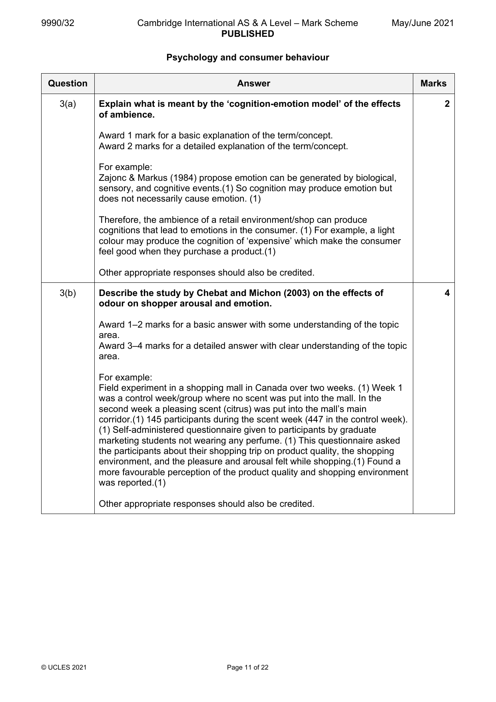
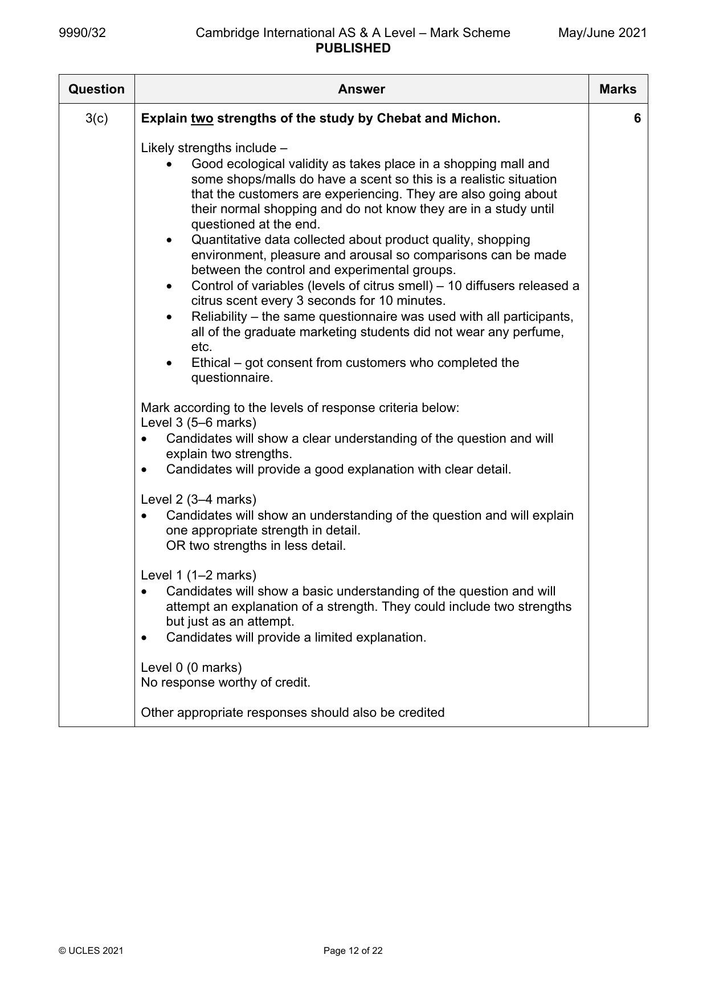
3(a) Explain what is meant by the ‘cognition-emotion model’ of the effects 2
of ambience.
Award 1 mark for a basic explanation of the term/concept.
Award 2 marks for a detailed explanation of the term/concept.
For example:
Zajonc & Markus (1984) propose emotion can be generated by biological,
sensory, and cognitive events.(1) So cognition may produce emotion but
does not necessarily cause emotion. (1)
Therefore, the ambience of a retail environment/shop can produce
cognitions that lead to emotions in the consumer. (1) For example, a light
colour may produce the cognition of ‘expensive’ which make the consumer
feel good when they purchase a product.(1)
Other appropriate responses should also be credited.
3(b) Describe the study by Chebat and Michon (2003) on the effects of 4
odour on shopper arousal and emotion.
Award 1–2 marks for a basic answer with some understanding of the topic
area.
Award 3–4 marks for a detailed answer with clear understanding of the topic
area.
For example:
Field experiment in a shopping mall in Canada over two weeks. (1) Week 1
was a control week/group where no scent was put into the mall. In the
second week a pleasing scent (citrus) was put into the mall’s main
corridor.(1) 145 participants during the scent week (447 in the control week).
(1) Self-administered questionnaire given to participants by graduate
marketing students not wearing any perfume. (1) This questionnaire asked
the participants about their shopping trip on product quality, the shopping
environment, and the pleasure and arousal felt while shopping.(1) Found a
more favourable perception of the product quality and shopping environment
was reported.(1)
Other appropriate responses should also be credited.
© UCLES 2021 Page 11 of 22
3(c) Explain two strengths of the study by Chebat and Michon. 6
Likely strengths include –
• Good ecological validity as takes place in a shopping mall and
some shops/malls do have a scent so this is a realistic situation
that the customers are experiencing. They are also going about
their normal shopping and do not know they are in a study until
questioned at the end.
• Quantitative data collected about product quality, shopping
environment, pleasure and arousal so comparisons can be made
between the control and experimental groups.
• Control of variables (levels of citrus smell) – 10 diffusers released a
citrus scent every 3 seconds for 10 minutes.
• Reliability – the same questionnaire was used with all participants,
all of the graduate marketing students did not wear any perfume,
etc.
• Ethical – got consent from customers who completed the
questionnaire.
Mark according to the levels of response criteria below:
Level 3 (5–6 marks)
• Candidates will show a clear understanding of the question and will
explain two strengths.
• Candidates will provide a good explanation with clear detail.
Level 2 (3–4 marks)
• Candidates will show an understanding of the question and will explain
one appropriate strength in detail.
OR two strengths in less detail.
Level 1 (1–2 marks)
• Candidates will show a basic understanding of the question and will
attempt an explanation of a strength. They could include two strengths
but just as an attempt.
• Candidates will provide a limited explanation.
Level 0 (0 marks)
No response worthy of credit.
Other appropriate responses should also be credited
© UCLES 2021 Page 12 of 22
Official mark scheme pages: 11, 12 · source PDF URL
9990-2021-mj-32-q04
May/June 2021 · Paper 32 · Question 4 · 18 marks
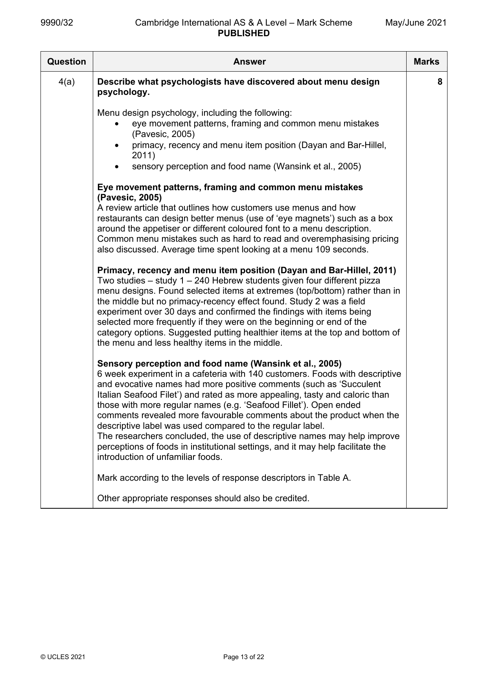
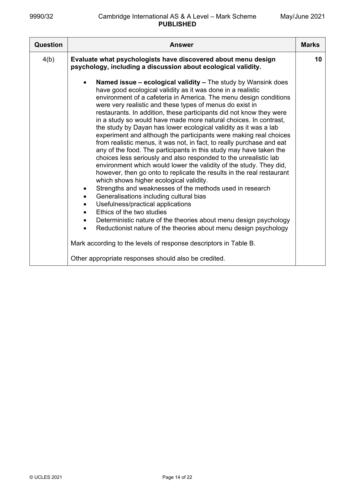
4(a) Describe what psychologists have discovered about menu design 8
psychology.
Menu design psychology, including the following:
• eye movement patterns, framing and common menu mistakes
(Pavesic, 2005)
• primacy, recency and menu item position (Dayan and Bar-Hillel,
2011)
• sensory perception and food name (Wansink et al., 2005)
Eye movement patterns, framing and common menu mistakes
(Pavesic, 2005)
A review article that outlines how customers use menus and how
restaurants can design better menus (use of ‘eye magnets’) such as a box
around the appetiser or different coloured font to a menu description.
Common menu mistakes such as hard to read and overemphasising pricing
also discussed. Average time spent looking at a menu 109 seconds.
Primacy, recency and menu item position (Dayan and Bar-Hillel, 2011)
Two studies – study 1 – 240 Hebrew students given four different pizza
menu designs. Found selected items at extremes (top/bottom) rather than in
the middle but no primacy-recency effect found. Study 2 was a field
experiment over 30 days and confirmed the findings with items being
selected more frequently if they were on the beginning or end of the
category options. Suggested putting healthier items at the top and bottom of
the menu and less healthy items in the middle.
Sensory perception and food name (Wansink et al., 2005)
6 week experiment in a cafeteria with 140 customers. Foods with descriptive
and evocative names had more positive comments (such as ‘Succulent
Italian Seafood Filet’) and rated as more appealing, tasty and caloric than
those with more regular names (e.g. ‘Seafood Fillet’). Open ended
comments revealed more favourable comments about the product when the
descriptive label was used compared to the regular label.
The researchers concluded, the use of descriptive names may help improve
perceptions of foods in institutional settings, and it may help facilitate the
introduction of unfamiliar foods.
Mark according to the levels of response descriptors in Table A.
Other appropriate responses should also be credited.
© UCLES 2021 Page 13 of 22
4(b) Evaluate what psychologists have discovered about menu design 10
psychology, including a discussion about ecological validity.
• Named issue – ecological validity – The study by Wansink does
have good ecological validity as it was done in a realistic
environment of a cafeteria in America. The menu design conditions
were very realistic and these types of menus do exist in
restaurants. In addition, these participants did not know they were
in a study so would have made more natural choices. In contrast,
the study by Dayan has lower ecological validity as it was a lab
experiment and although the participants were making real choices
from realistic menus, it was not, in fact, to really purchase and eat
any of the food. The participants in this study may have taken the
choices less seriously and also responded to the unrealistic lab
environment which would lower the validity of the study. They did,
however, then go onto to replicate the results in the real restaurant
which shows higher ecological validity.
• Strengths and weaknesses of the methods used in research
• Generalisations including cultural bias
• Usefulness/practical applications
• Ethics of the two studies
• Deterministic nature of the theories about menu design psychology
• Reductionist nature of the theories about menu design psychology
Mark according to the levels of response descriptors in Table B.
Other appropriate responses should also be credited.
© UCLES 2021 Page 14 of 22
Official mark scheme pages: 13, 14 · source PDF URL
9990-2021-mj-33-q03
May/June 2021 · Paper 33 · Question 3 · 12 marks
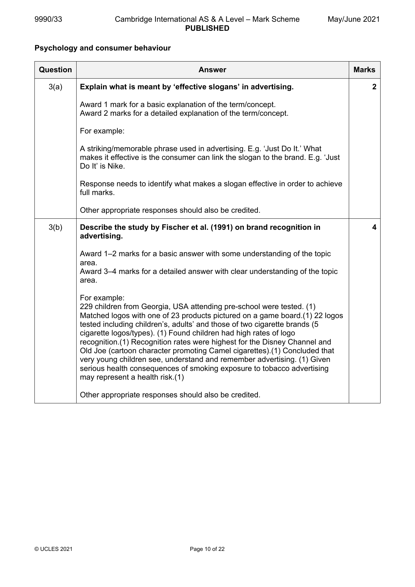
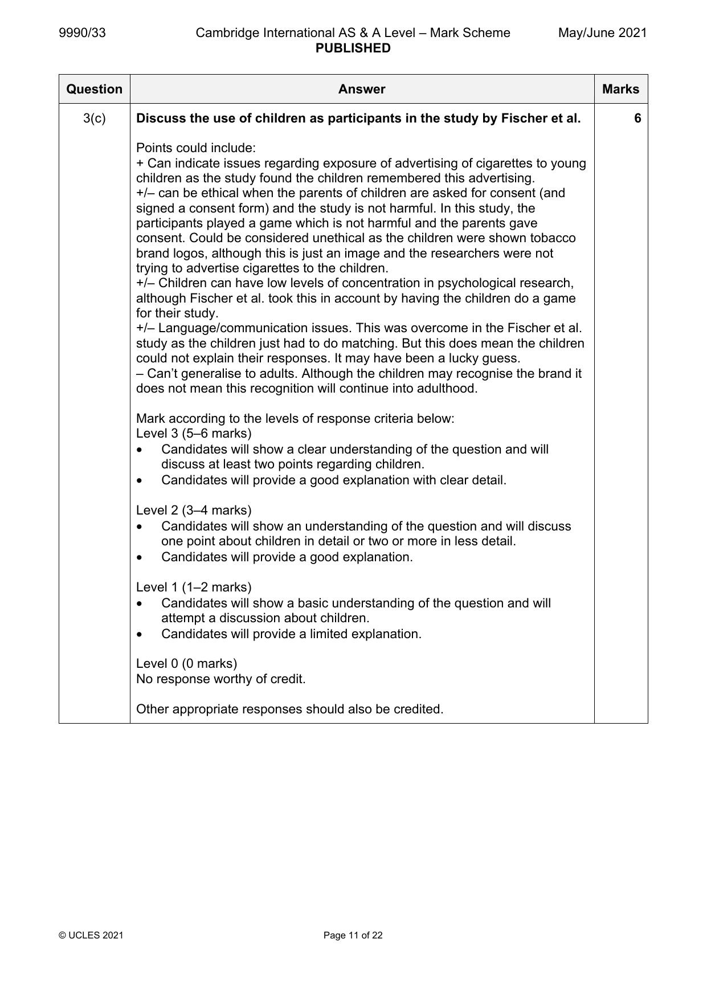
3(a) Explain what is meant by ‘effective slogans’ in advertising. 2
Award 1 mark for a basic explanation of the term/concept.
Award 2 marks for a detailed explanation of the term/concept.
For example:
A striking/memorable phrase used in advertising. E.g. ‘Just Do It.’ What
makes it effective is the consumer can link the slogan to the brand. E.g. ‘Just
Do It’ is Nike.
Response needs to identify what makes a slogan effective in order to achieve
full marks.
Other appropriate responses should also be credited.
3(b) Describe the study by Fischer et al. (1991) on brand recognition in 4
advertising.
Award 1–2 marks for a basic answer with some understanding of the topic
area.
Award 3–4 marks for a detailed answer with clear understanding of the topic
area.
For example:
229 children from Georgia, USA attending pre-school were tested. (1)
Matched logos with one of 23 products pictured on a game board.(1) 22 logos
tested including children’s, adults’ and those of two cigarette brands (5
cigarette logos/types). (1) Found children had high rates of logo
recognition.(1) Recognition rates were highest for the Disney Channel and
Old Joe (cartoon character promoting Camel cigarettes).(1) Concluded that
very young children see, understand and remember advertising. (1) Given
serious health consequences of smoking exposure to tobacco advertising
may represent a health risk.(1)
Other appropriate responses should also be credited.
© UCLES 2021 Page 10 of 22
3(c) Discuss the use of children as participants in the study by Fischer et al. 6
Points could include:
+ Can indicate issues regarding exposure of advertising of cigarettes to young
children as the study found the children remembered this advertising.
+/– can be ethical when the parents of children are asked for consent (and
signed a consent form) and the study is not harmful. In this study, the
participants played a game which is not harmful and the parents gave
consent. Could be considered unethical as the children were shown tobacco
brand logos, although this is just an image and the researchers were not
trying to advertise cigarettes to the children.
+/– Children can have low levels of concentration in psychological research,
although Fischer et al. took this in account by having the children do a game
for their study.
+/– Language/communication issues. This was overcome in the Fischer et al.
study as the children just had to do matching. But this does mean the children
could not explain their responses. It may have been a lucky guess.
– Can’t generalise to adults. Although the children may recognise the brand it
does not mean this recognition will continue into adulthood.
Mark according to the levels of response criteria below:
Level 3 (5–6 marks)
• Candidates will show a clear understanding of the question and will
discuss at least two points regarding children.
• Candidates will provide a good explanation with clear detail.
Level 2 (3–4 marks)
• Candidates will show an understanding of the question and will discuss
one point about children in detail or two or more in less detail.
• Candidates will provide a good explanation.
Level 1 (1–2 marks)
• Candidates will show a basic understanding of the question and will
attempt a discussion about children.
• Candidates will provide a limited explanation.
Level 0 (0 marks)
No response worthy of credit.
Other appropriate responses should also be credited.
© UCLES 2021 Page 11 of 22
Official mark scheme pages: 10, 11 · source PDF URL
9990-2021-mj-33-q04
May/June 2021 · Paper 33 · Question 4 · 18 marks
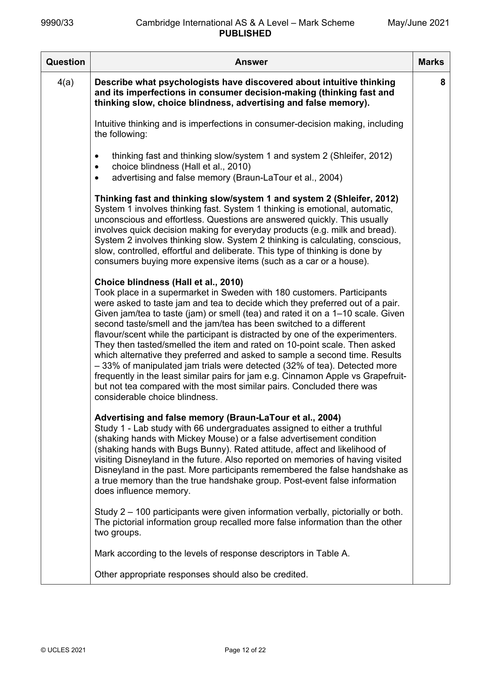
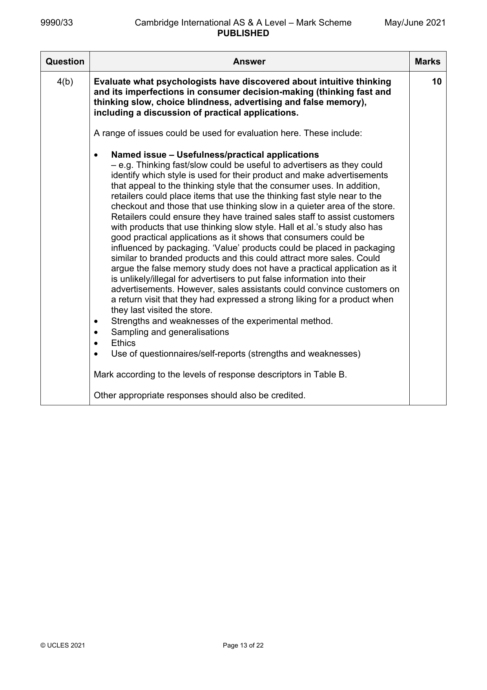
4(a) Describe what psychologists have discovered about intuitive thinking 8
and its imperfections in consumer decision-making (thinking fast and
thinking slow, choice blindness, advertising and false memory).
Intuitive thinking and is imperfections in consumer-decision making, including
the following:
• thinking fast and thinking slow/system 1 and system 2 (Shleifer, 2012)
• choice blindness (Hall et al., 2010)
• advertising and false memory (Braun-LaTour et al., 2004)
Thinking fast and thinking slow/system 1 and system 2 (Shleifer, 2012)
System 1 involves thinking fast. System 1 thinking is emotional, automatic,
unconscious and effortless. Questions are answered quickly. This usually
involves quick decision making for everyday products (e.g. milk and bread).
System 2 involves thinking slow. System 2 thinking is calculating, conscious,
slow, controlled, effortful and deliberate. This type of thinking is done by
consumers buying more expensive items (such as a car or a house).
Choice blindness (Hall et al., 2010)
Took place in a supermarket in Sweden with 180 customers. Participants
were asked to taste jam and tea to decide which they preferred out of a pair.
Given jam/tea to taste (jam) or smell (tea) and rated it on a 1–10 scale. Given
second taste/smell and the jam/tea has been switched to a different
flavour/scent while the participant is distracted by one of the experimenters.
They then tasted/smelled the item and rated on 10-point scale. Then asked
which alternative they preferred and asked to sample a second time. Results
– 33% of manipulated jam trials were detected (32% of tea). Detected more
frequently in the least similar pairs for jam e.g. Cinnamon Apple vs Grapefruit-
but not tea compared with the most similar pairs. Concluded there was
considerable choice blindness.
Advertising and false memory (Braun-LaTour et al., 2004)
Study 1 - Lab study with 66 undergraduates assigned to either a truthful
(shaking hands with Mickey Mouse) or a false advertisement condition
(shaking hands with Bugs Bunny). Rated attitude, affect and likelihood of
visiting Disneyland in the future. Also reported on memories of having visited
Disneyland in the past. More participants remembered the false handshake as
a true memory than the true handshake group. Post-event false information
does influence memory.
Study 2 – 100 participants were given information verbally, pictorially or both.
The pictorial information group recalled more false information than the other
two groups.
Mark according to the levels of response descriptors in Table A.
Other appropriate responses should also be credited.
© UCLES 2021 Page 12 of 22
4(b) Evaluate what psychologists have discovered about intuitive thinking 10
and its imperfections in consumer decision-making (thinking fast and
thinking slow, choice blindness, advertising and false memory),
including a discussion of practical applications.
A range of issues could be used for evaluation here. These include:
• Named issue – Usefulness/practical applications
– e.g. Thinking fast/slow could be useful to advertisers as they could
identify which style is used for their product and make advertisements
that appeal to the thinking style that the consumer uses. In addition,
retailers could place items that use the thinking fast style near to the
checkout and those that use thinking slow in a quieter area of the store.
Retailers could ensure they have trained sales staff to assist customers
with products that use thinking slow style. Hall et al.’s study also has
good practical applications as it shows that consumers could be
influenced by packaging. ‘Value’ products could be placed in packaging
similar to branded products and this could attract more sales. Could
argue the false memory study does not have a practical application as it
is unlikely/illegal for advertisers to put false information into their
advertisements. However, sales assistants could convince customers on
a return visit that they had expressed a strong liking for a product when
they last visited the store.
• Strengths and weaknesses of the experimental method.
• Sampling and generalisations
• Ethics
• Use of questionnaires/self-reports (strengths and weaknesses)
Mark according to the levels of response descriptors in Table B.
Other appropriate responses should also be credited.
© UCLES 2021 Page 13 of 22
Official mark scheme pages: 12, 13 · source PDF URL
9990-2021-mj-41-q02
May/June 2021 · Paper 41 · Question 2 · 15 marks
2 Porublev et al. (2009) gathered qualitative data to investigate whether a
gift should be wrapped or not, because of the expectations
surrounding the use of gift-wrapping.
2(a) Explain the two key expectations surrounding the use of gift-wrapping. 2
Definitive answer: (Quoting study)
There are two key expectations surrounding the use of gift wrapping.
• the first expectation is that receivers prefer gifts to be wrapped and
• that the gift meets individual and social expectations of what a gift
should look like.
Marks: 1 mark for ‘it is wrapped’ +1 mark for ‘it looks like a gift’
Note: 0 marks for ‘who it is for’; ‘where the gift is going’; ‘what the occasion
is’
2(b) Porublev et al. only collected qualitative data. 4
Give two ways in which qualitative data was gathered in this study.
Definitive answer Quoting study
Data was gathered using three qualitative techniques;
• observation (1 mark) of a Christmas gift-wrap stall (2 marks)
• interviews (1 mark) twenty in-depth interviews to reflect on gift-
wrapping (2 marks)
• projective workshops (1 mark) where, in pairs, participants were
asked to wrap two gifts, one for someone they are close to and the
other for an acquaintance, and have a discussion about gift wrapping
whilst doing so (2 marks)
Marks: 1 mark basic answer (identification), 2 marks detailed
answer/elaboration or use of example (as in brackets above) X2.
2(c)(i) Explain what is meant by the term ‘reliability’. 2
Definitive answer (other appropriate responses to be credited):
1 mark basic answer e.g. reliability means consistency
+1 mark: any elaboration or example e.g. reliability is the extent to which a
procedure, task or measure produces the same results on different
occasions. Alternatively, same measure is tested at a later date on same
participant (i.e. test-retest); two or more independent observers are reliable
(consistent) in giving the same score to the same behaviour
Note: 0 marks for ‘being trustworthy’, repeating a study, or replication.
© UCLES 2021 Page 11 of 25
2(c)(ii) Suggest how the reliability of the qualitative data gathered in this 2
study could be assessed.
Most likely answer (other appropriate responses to be credited):
• inter-rater reliability, where two or more independent judges or raters
assess what is said in the interview, or what is observed, for example.
This could be done with predefined response categories and the extent
of agreement recorded.
Note: no marks for test-retest.
Marks: 1 mark basic answer, 2 marks example from ‘this study’ See Q2(b)
for examples of what the qualitative data might be.
2(d) Discuss the advantages and disadvantages of using qualitative data to 5
assess gift-wrapping preference. You should include a conclusion in
your answer.
Marks: 1 mark for each advantage/disadvantage (however basic/detailed)
which is related/linked to the question (max 4 marks). 1 mark for
conclusion.
Conclusion: any appropriate conclusion drawn from the discussion that has
been presented. 1 mark if appropriate. A conclusion is a ‘decision reached
by reasoning’ and so a summary of points already made scores 0 marks.
Most likely answer (other appropriate responses to be credited, such as
eye movement patterns):
Advantages
• Asking people directly means that participants are given the opportunity
to express their feelings and explain their experiences rather than the
researcher trying to work out reasons for their behaviour from other
methods
• People can give as much information as they wish about their gift-
wrapping preferences, but they can also say little or nothing if they wish.
• Data can be qualitative, but may also be quantitative depending on type
of question
Disadvantages
• Some participants may provide socially desirable responses about their
gift-wrapping preferences; not give truthful answers; respond to demand
characteristics.
• Qualitative data tends not to lead to the calculation of statistics to allow
comparison.
• Researchers have to be careful about use of leading questions; it could
affect the validity of the data collected.
© UCLES 2021 Page 12 of 25
Official mark scheme pages: 11, 12 · source PDF URL
9990-2021-mj-41-q06
May/June 2021 · Paper 41 · Question 6 · 18 marks
6(a) People often experience discomfort when their personal space is 10
invaded.
Design a study using a questionnaire to investigate which theory of
personal space best explains people’s discomfort in a crowded shop.
Marks: use generic levels of response Design a study question part (a).
Additional: Candidates should design the study showing evidence of
design features appropriate to the named method. The named method:
questionnaire.
Specific features: Questionnaires/Interviews: type, setting, example
questions. Scoring/rating scale, analysis of responses.
General features of research methodology: sampling technique &
sample, type of data, ethics, reliability, validity, data analysis.
6(b) Explain the psychological and methodological evidence on which your 8
study is based.
Candidates are expected to explain the reasons for the suggested design in
part (a). Explanation should be both psychological and methodological.
Psychological to include appropriate theory or research.
Marks: use generic levels of response ‘Design a study’ question part (b).
‘Psychological’ = 4 marks; ‘methodological’ = 4 marks
If only methodological or psychological explanation is provided max 5
marks
If ‘psychological’ described and not related to part (a) max 2 marks.
Syllabus: theories of personal space: overload, arousal and behaviour
constraint
Psychological:
Overload: are others in a shop coming too close and overstimulating us with
sensory experience
Arousal: when others invade our space we are aroused. We may be happy
with this, or we may move away/take flight/escape.
Behaviour constraint: if others are too close we may feel crowded because
we cannot move about the store freely.
Methodological: explanation of method using general and specific features
as above.
© UCLES 2021 Page 19 of 25
Official mark scheme pages: 19 · source PDF URL
9990-2021-mj-41-q10
May/June 2021 · Paper 41 · Question 10 · 12 marks
10 ‘Studies like 'defending a place in a queue' (Milgram et al., 1986) 12
should never be conducted because they are unethical.’
To what extent do you agree with this statement? Use examples of
research you have studied to support your answer.
Marks: use generic levels of response in table C.
Syllabus: defending place in a queue (Milgram et al., 1986)
Most likely (any other appropriate responses should be credited):
Should be done:
• The ends justify the means: studies should be done even if ethical
guidelines are broken
• The ethical issues are minimal. No-one is hurt
• If people are fully de-briefed then there is no problem conducting
studies
Should not be done
• ‘innocent’ people should not be participants in this study without their
informed consent.
• People should not be subjected to the psychological ‘harm’ of the stress
of another person pushing in.
• A debrief does not justify unethical procedures.
© UCLES 2021 Page 23 of 25
Official mark scheme pages: 23 · source PDF URL
9990-2021-mj-42-q02
May/June 2021 · Paper 42 · Question 2 · 15 marks
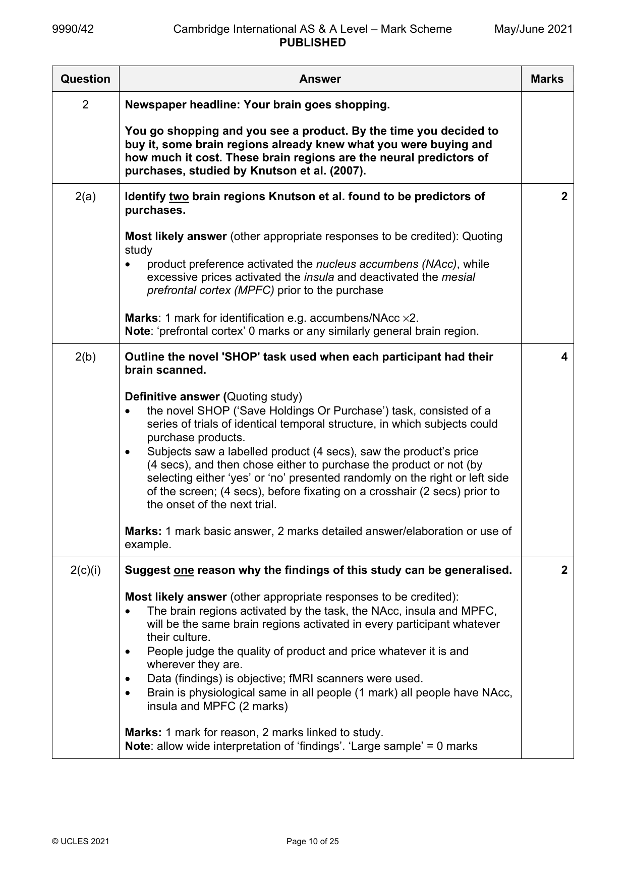
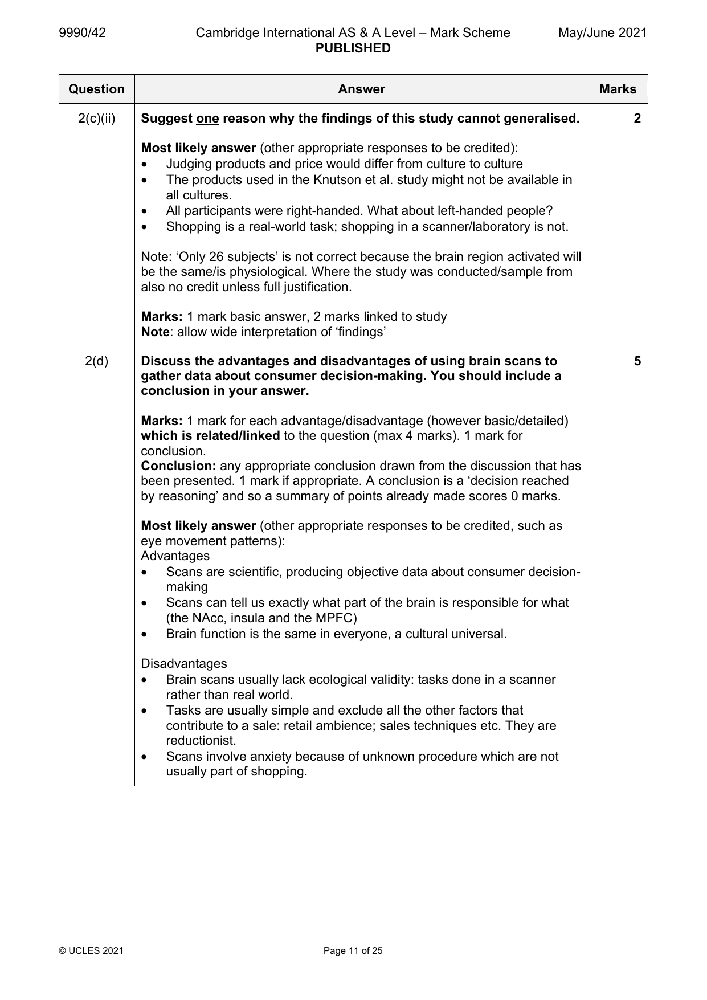
2 Newspaper headline: Your brain goes shopping.
You go shopping and you see a product. By the time you decided to
buy it, some brain regions already knew what you were buying and
how much it cost. These brain regions are the neural predictors of
purchases, studied by Knutson et al. (2007).
2(a) Identify two brain regions Knutson et al. found to be predictors of 2
purchases.
Most likely answer (other appropriate responses to be credited): Quoting
study
• product preference activated the nucleus accumbens (NAcc), while
excessive prices activated the insula and deactivated the mesial
prefrontal cortex (MPFC) prior to the purchase
Marks: 1 mark for identification e.g. accumbens/NAcc ×2.
Note: ‘prefrontal cortex’ 0 marks or any similarly general brain region.
2(b) Outline the novel 'SHOP' task used when each participant had their 4
brain scanned.
Definitive answer (Quoting study)
• the novel SHOP (‘Save Holdings Or Purchase’) task, consisted of a
series of trials of identical temporal structure, in which subjects could
purchase products.
• Subjects saw a labelled product (4 secs), saw the product’s price
(4 secs), and then chose either to purchase the product or not (by
selecting either ‘yes’ or ‘no’ presented randomly on the right or left side
of the screen; (4 secs), before fixating on a crosshair (2 secs) prior to
the onset of the next trial.
Marks: 1 mark basic answer, 2 marks detailed answer/elaboration or use of
example.
2(c)(i) Suggest one reason why the findings of this study can be generalised. 2
Most likely answer (other appropriate responses to be credited):
• The brain regions activated by the task, the NAcc, insula and MPFC,
will be the same brain regions activated in every participant whatever
their culture.
• People judge the quality of product and price whatever it is and
wherever they are.
• Data (findings) is objective; fMRI scanners were used.
• Brain is physiological same in all people (1 mark) all people have NAcc,
insula and MPFC (2 marks)
Marks: 1 mark for reason, 2 marks linked to study.
Note: allow wide interpretation of ‘findings’. ‘Large sample’ = 0 marks
© UCLES 2021 Page 10 of 25
2(c)(ii) Suggest one reason why the findings of this study cannot generalised. 2
Most likely answer (other appropriate responses to be credited):
• Judging products and price would differ from culture to culture
• The products used in the Knutson et al. study might not be available in
all cultures.
• All participants were right-handed. What about left-handed people?
• Shopping is a real-world task; shopping in a scanner/laboratory is not.
Note: ‘Only 26 subjects’ is not correct because the brain region activated will
be the same/is physiological. Where the study was conducted/sample from
also no credit unless full justification.
Marks: 1 mark basic answer, 2 marks linked to study
Note: allow wide interpretation of ‘findings’
2(d) Discuss the advantages and disadvantages of using brain scans to 5
gather data about consumer decision-making. You should include a
conclusion in your answer.
Marks: 1 mark for each advantage/disadvantage (however basic/detailed)
which is related/linked to the question (max 4 marks). 1 mark for
conclusion.
Conclusion: any appropriate conclusion drawn from the discussion that has
been presented. 1 mark if appropriate. A conclusion is a ‘decision reached
by reasoning’ and so a summary of points already made scores 0 marks.
Most likely answer (other appropriate responses to be credited, such as
eye movement patterns):
Advantages
• Scans are scientific, producing objective data about consumer decision-
making
• Scans can tell us exactly what part of the brain is responsible for what
(the NAcc, insula and the MPFC)
• Brain function is the same in everyone, a cultural universal.
Disadvantages
• Brain scans usually lack ecological validity: tasks done in a scanner
rather than real world.
• Tasks are usually simple and exclude all the other factors that
contribute to a sale: retail ambience; sales techniques etc. They are
reductionist.
• Scans involve anxiety because of unknown procedure which are not
usually part of shopping.
© UCLES 2021 Page 11 of 25
Official mark scheme pages: 10, 11 · source PDF URL
9990-2021-mj-42-q06
May/June 2021 · Paper 42 · Question 6 · 18 marks
6(a) There are several ways to close a sale, including reciprocity and 10
authority.
Design a study to investigate which is the most successful way to
close a sale when selling a computer.
Marks: use generic levels of response Design a study question part (a).
Additional: Candidates should design the study showing evidence of
design features appropriate to the named method. The named method: any
appropriate method.
Specific features:
• Experiments: type, IV, DV, controls, experimental design.
• Observations: type, setting, response categories, sampling frame,
number of observers.
• Questionnaires/Interviews: type, setting, example questions.
Scoring/rating scale, analysis of responses.
General features of research methodology: sampling technique and
sample, type of data, ethics, reliability, validity, data analysis.
6(b) Explain the psychological and methodological evidence on which your 8
study is based.
Candidates are expected to explain the reasons for the suggested design in
part (a). Explanation should be both psychological and methodological.
Psychological to include appropriate theory or research.
Marks: use generic levels of response ‘Design a study’ question part (b).
‘Psychological’ = 4 marks; ‘methodological’ = 4 marks
If only methodological or psychological explanation is provided max 5
marks
If ‘psychological’ described and not related to part (a) max 2 marks.
Syllabus: ways to close a sale
Psychological:
Cialdini (1984) suggests there are six strategies:
Reciprocity: I’ll give you something (for free) if you give me something (the
sale)
Commitment and consistency: get the buyer to make a small commitment
and they may make a large one.
Liking: if people like the salesperson, the store, the image etc, they are more
likely to buy.
Authority: a product sold by an ‘expert’ is more likely to be bought.
Social proof: positive reviews may lead a person to buy.
Scarcity and urgency: if it is ‘the last one’ people are more likely to buy.
Methodological: explanation of method using general and specific features
as above.
© UCLES 2021 Page 19 of 25
Official mark scheme pages: 19 · source PDF URL
9990-2021-mj-42-q10
May/June 2021 · Paper 42 · Question 10 · 12 marks
10 ‘The findings of experiments of consumer behaviour using eye- 12
tracking have no value because they lack ecological validity.’
To what extent do you agree with this statement? Use examples of
research you have studied to support your answer.
Marks: use generic levels of response in table C.
Syllabus: attention and shelf position (Atalay et al., 2012)
Most likely (any other appropriate responses should be credited):
For:
• Eye tracking is scientific equipment which is reliable.
• Data recorded is objective: where the person looks is clear and
unambiguous.
• Data is quantitative and so comparisons can be made between
participants and between studies.
• It provides immediate feedback.
• It is easy to use requiring no training.
Against:
• Participants can choose to look in whatever direction they wish – they
know their eve movements are being tracked.
• There may be cultural differences in where people are socialised to
look.
• Data is where the participant has looked but it does not provide an
explanation of why that person has looked in a particular direction.
• Eye tracking is reductionist – product purchase isn’t just based on
vision; for some products smell and touch may be important.
• It cannot be used with every participant, people with contact lenses or
with long eye lashes
• Eye movement may be subconscious and difficult to control at all times.
Data may not be accurate
© UCLES 2021 Page 23 of 25
Official mark scheme pages: 23 · source PDF URL
9990-2021-mj-43-q02
May/June 2021 · Paper 43 · Question 2 · 15 marks
2 Porublev et al. (2009) gathered qualitative data to investigate whether a
gift should be wrapped or not, because of the expectations
surrounding the use of gift-wrapping.
2(a) Explain the two key expectations surrounding the use of gift-wrapping. 2
Definitive answer: (Quoting study)
There are two key expectations surrounding the use of gift wrapping.
• the first expectation is that receivers prefer gifts to be wrapped and
• that the gift meets individual and social expectations of what a gift
should look like.
Marks: 1 mark for ‘it is wrapped’ +1 mark for ‘it looks like a gift’
Note: 0 marks for ‘who it is for’; ‘where the gift is going’; ‘what the occasion
is’
2(b) Porublev et al. only collected qualitative data. 4
Give two ways in which qualitative data was gathered in this study.
Definitive answer Quoting study
Data was gathered using three qualitative techniques;
• observation (1 mark) of a Christmas gift-wrap stall (2 marks)
• interviews (1 mark) twenty in-depth interviews to reflect on gift-
wrapping (2 marks)
• projective workshops (1 mark) where, in pairs, participants were
asked to wrap two gifts, one for someone they are close to and the
other for an acquaintance, and have a discussion about gift wrapping
whilst doing so (2 marks)
Marks: 1 mark basic answer (identification), 2 marks detailed
answer/elaboration or use of example (as in brackets above) X2.
2(c)(i) Explain what is meant by the term ‘reliability’. 2
Definitive answer (other appropriate responses to be credited):
1 mark basic answer e.g. reliability means consistency
+1 mark: any elaboration or example e.g. reliability is the extent to which a
procedure, task or measure produces the same results on different
occasions. Alternatively, same measure is tested at a later date on same
participant (i.e. test-retest); two or more independent observers are reliable
(consistent) in giving the same score to the same behaviour
Note: 0 marks for ‘being trustworthy’, repeating a study, or replication.
© UCLES 2021 Page 11 of 25
2(c)(ii) Suggest how the reliability of the qualitative data gathered in this 2
study could be assessed.
Most likely answer (other appropriate responses to be credited):
• inter-rater reliability, where two or more independent judges or raters
assess what is said in the interview, or what is observed, for example.
This could be done with predefined response categories and the extent
of agreement recorded.
Note: no marks for test-retest.
Marks: 1 mark basic answer, 2 marks example from ‘this study’ See Q2(b)
for examples of what the qualitative data might be.
2(d) Discuss the advantages and disadvantages of using qualitative data to 5
assess gift-wrapping preference. You should include a conclusion in
your answer.
Marks: 1 mark for each advantage/disadvantage (however basic/detailed)
which is related/linked to the question (max 4 marks). 1 mark for
conclusion.
Conclusion: any appropriate conclusion drawn from the discussion that has
been presented. 1 mark if appropriate. A conclusion is a ‘decision reached
by reasoning’ and so a summary of points already made scores 0 marks.
Most likely answer (other appropriate responses to be credited, such as
eye movement patterns):
Advantages
• Asking people directly means that participants are given the opportunity
to express their feelings and explain their experiences rather than the
researcher trying to work out reasons for their behaviour from other
methods
• People can give as much information as they wish about their gift-
wrapping preferences, but they can also say little or nothing if they wish.
• Data can be qualitative, but may also be quantitative depending on type
of question
Disadvantages
• Some participants may provide socially desirable responses about their
gift-wrapping preferences; not give truthful answers; respond to demand
characteristics.
• Qualitative data tends not to lead to the calculation of statistics to allow
comparison.
• Researchers have to be careful about use of leading questions; it could
affect the validity of the data collected.
© UCLES 2021 Page 12 of 25
Official mark scheme pages: 11, 12 · source PDF URL
9990-2021-mj-43-q06
May/June 2021 · Paper 43 · Question 6 · 18 marks
6(a) People often experience discomfort when their personal space is 10
invaded.
Design a study using a questionnaire to investigate which theory of
personal space best explains people’s discomfort in a crowded shop.
Marks: use generic levels of response Design a study question part (a).
Additional: Candidates should design the study showing evidence of
design features appropriate to the named method. The named method:
questionnaire.
Specific features: Questionnaires/Interviews: type, setting, example
questions. Scoring/rating scale, analysis of responses.
General features of research methodology: sampling technique &
sample, type of data, ethics, reliability, validity, data analysis.
6(b) Explain the psychological and methodological evidence on which your 8
study is based.
Candidates are expected to explain the reasons for the suggested design in
part (a). Explanation should be both psychological and methodological.
Psychological to include appropriate theory or research.
Marks: use generic levels of response ‘Design a study’ question part (b).
‘Psychological’ = 4 marks; ‘methodological’ = 4 marks
If only methodological or psychological explanation is provided max 5
marks
If ‘psychological’ described and not related to part (a) max 2 marks.
Syllabus: theories of personal space: overload, arousal and behaviour
constraint
Psychological:
Overload: are others in a shop coming too close and overstimulating us with
sensory experience
Arousal: when others invade our space we are aroused. We may be happy
with this, or we may move away/take flight/escape.
Behaviour constraint: if others are too close we may feel crowded because
we cannot move about the store freely.
Methodological: explanation of method using general and specific features
as above.
© UCLES 2021 Page 19 of 25
Official mark scheme pages: 19 · source PDF URL
9990-2021-mj-43-q10
May/June 2021 · Paper 43 · Question 10 · 12 marks
10 ‘Studies like 'defending a place in a queue' (Milgram et al., 1986) 12
should never be conducted because they are unethical.’
To what extent do you agree with this statement? Use examples of
research you have studied to support your answer.
Marks: use generic levels of response in table C.
Syllabus: defending place in a queue (Milgram et al., 1986)
Most likely (any other appropriate responses should be credited):
Should be done:
• The ends justify the means: studies should be done even if ethical
guidelines are broken
• The ethical issues are minimal. No-one is hurt
• If people are fully de-briefed then there is no problem conducting
studies
Should not be done
• ‘innocent’ people should not be participants in this study without their
informed consent.
• People should not be subjected to the psychological ‘harm’ of the stress
of another person pushing in.
• A debrief does not justify unethical procedures.
© UCLES 2021 Page 23 of 25
Official mark scheme pages: 23 · source PDF URL
9990-2021-on-31-q03
Oct/Nov 2021 · Paper 31 · Question 3 · 12 marks


3 I am dissatisfied and bored with everything
Unhappiness
0 I do not feel unhappy
1 I feel unhappy
2 I am unhappy
3 I am so unhappy that I can’t stand it
© UCLES 2021 Page 8 of 21
9990/31 Cambridge International AS & A Level – Mark Scheme October/November
PUBLISHED 2021
Question Answer Marks
2(a) The total score is used to indicate the severity of the depression with a score
of 10 as minimum for diagnosing mild depression, 19–29 for moderate
depression, and a score of 30+ to indicate severe depression. Scoring does
differ between the different versions.
The Beck Depression Inventory has been revised twice since its initial
introduction.
Mark according to the levels of response descriptors in Table A.
Other appropriate responses should also be credited.
2(b) Evaluate characteristics and measures of bipolar and related disorders, 10
including a discussion of validity.
A range of issues could be used for evaluation here. These include:
• Named issue – validity – bipolar and related disorders include a variety
of different symptoms and no one key symptom is needed for diagnosis.
DSM-V and ICD-10 do not ask for the same criteria or longevity of
symptoms. Two individuals with very different symptoms could both be
diagnosed with major depressive disorder. The reliance on self-report
measures of depressed individuals (by definition) may be invalid within
potential exaggeration or minimalization of symptoms. Co-morbidity could
also call validity into question in terms of symptom overlap with, say,
schizophrenia. However, the Beck depression inventory has been used in
one form or another for over 50 years and appears to capture the
essence of depression so is thought to have high validity.
• Reliability
• Usefulness
• Reductionist
• Co-morbidity
• Gender bias
Mark according to the levels of response descriptors in Table B.
Other appropriate responses should also be credited.
© UCLES 2021 Page 9 of 21
3(a) One stage in the consumer decision model when buying a product is 2
‘recognition of need’.
Identify two other stages from this model.
Award 1 mark for each correctly identified stage up to a maximum of 2 marks.
For example:
• Informational search
• Evaluation of alternatives
• Purchase decisions
• Post-purchase reflection
• Disposing of the product
Other appropriate responses should also be credited.
3(b) Describe two ways to close a sale. 4
Award 1–2 marks for a basic answer with some understanding of the topic
area.
Award 3–4 marks for a detailed answer with clear understanding of the topic
area.
For example:
1 Reciprocity including giving free samples
2 Commitment including signing up to a newsletter
3 ‘Liking’ including salesperson being friendly, store environment being
inviting or celebrity product (e.g. perfumes)
Official mark scheme pages: 8, 9, 10 · source PDF URL
9990-2021-on-31-q04
Oct/Nov 2021 · Paper 31 · Question 4 · 18 marks
4 Authority including advertisement of, for example, scientist in lab coat
Official mark scheme pages: 10 · source PDF URL
9990-2021-on-32-q03
Oct/Nov 2021 · Paper 32 · Question 3 · 12 marks
3 Worrying too much about different things
Official mark scheme pages: 7 · source PDF URL
9990-2021-on-32-q04
Oct/Nov 2021 · Paper 32 · Question 4 · 18 marks
4 Trouble relaxing
Official mark scheme pages: 7 · source PDF URL
9990-2021-on-33-q03
Oct/Nov 2021 · Paper 33 · Question 3 · 12 marks

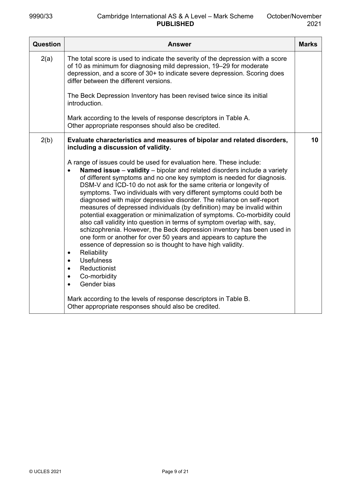

3 I am dissatisfied and bored with everything
Unhappiness
0 I do not feel unhappy
1 I feel unhappy
2 I am unhappy
3 I am so unhappy that I can’t stand it
© UCLES 2021 Page 8 of 21
9990/33 Cambridge International AS & A Level – Mark Scheme October/November
PUBLISHED 2021
Question Answer Marks
2(a) The total score is used to indicate the severity of the depression with a score
of 10 as minimum for diagnosing mild depression, 19–29 for moderate
depression, and a score of 30+ to indicate severe depression. Scoring does
differ between the different versions.
The Beck Depression Inventory has been revised twice since its initial
introduction.
Mark according to the levels of response descriptors in Table A.
Other appropriate responses should also be credited.
2(b) Evaluate characteristics and measures of bipolar and related disorders, 10
including a discussion of validity.
A range of issues could be used for evaluation here. These include:
• Named issue – validity – bipolar and related disorders include a variety
of different symptoms and no one key symptom is needed for diagnosis.
DSM-V and ICD-10 do not ask for the same criteria or longevity of
symptoms. Two individuals with very different symptoms could both be
diagnosed with major depressive disorder. The reliance on self-report
measures of depressed individuals (by definition) may be invalid within
potential exaggeration or minimalization of symptoms. Co-morbidity could
also call validity into question in terms of symptom overlap with, say,
schizophrenia. However, the Beck depression inventory has been used in
one form or another for over 50 years and appears to capture the
essence of depression so is thought to have high validity.
• Reliability
• Usefulness
• Reductionist
• Co-morbidity
• Gender bias
Mark according to the levels of response descriptors in Table B.
Other appropriate responses should also be credited.
© UCLES 2021 Page 9 of 21
3(a) One stage in the consumer decision model when buying a product is 2
‘recognition of need’.
Identify two other stages from this model.
Award 1 mark for each correctly identified stage up to a maximum of 2 marks.
For example:
• Informational search
• Evaluation of alternatives
• Purchase decisions
• Post-purchase reflection
• Disposing of the product
Other appropriate responses should also be credited.
3(b) Describe two ways to close a sale. 4
Award 1–2 marks for a basic answer with some understanding of the topic
area.
Award 3–4 marks for a detailed answer with clear understanding of the topic
area.
For example:
1 Reciprocity including giving free samples
2 Commitment including signing up to a newsletter
3 ‘Liking’ including salesperson being friendly, store environment being
inviting or celebrity product (e.g. perfumes)
Official mark scheme pages: 8, 9, 10 · source PDF URL
9990-2021-on-33-q04
Oct/Nov 2021 · Paper 33 · Question 4 · 18 marks
4 Authority including advertisement of, for example, scientist in lab coat
Official mark scheme pages: 10 · source PDF URL
9990-2021-on-41-q02
Oct/Nov 2021 · Paper 41 · Question 2 · 15 marks
2 Machleit et al. (2000) found that perceived crowding in shops, created
by manipulating either human (social) density or spatial density,
changed levels of pleasure and satisfaction.
2(a) Explain what is meant by ‘perceived crowding’. 2
Most likely answer: Quoting study
Perceived crowding is a result of physical, social, and personal factors that
sensitize the individual to actual or potential problems arising from scarce
space (Stokols, 1972).
Crowding is a psychological state (density is a physical state) and so any
answer must acknowledge the psychological component. The implication of
this is that there are individual differences where one person might feel
crowded and another person might not in the same circumstances.
Marks: 1 mark for answer, 2 marks for elaboration/example.
2(b)(i) Explain the difference between ‘human density’ and ‘spatial density’. 2
Most likely answer Quoting study
Spatial density: Within the retailing context, for example, the amount of
merchandise and fixtures as well as their configuration within the store could
enhance or suppress perceived crowding associated with physical stimuli.
Human density: The social (or human) dimension of crowding, on the other
hand, concerns the number of individuals as well as the rate and extent of
social interaction among people in a given environmental setting.
Marks: 1 mark basic difference, 2 marks detailed answer/elaboration or use
of example.
2(b)(ii) Outline the questionnaire that Machleit et al. (2000) used to measure 2
perceived crowding.
Most likely answer Quoting study
Perceived crowding (not density) was measured via the eight-item, two-
dimensional Likert-type scale validated by Machleit et al. (1994). The four
items in the human crowding dimension were ‘The store seemed very
crowded to me,’ ‘The store was a little too busy,’ ‘There wasn’t much traffic
in the store during my shopping trip’ (reverse coded), ‘There were a lot of
shoppers in the store.’ (examples of questions)
Note: Any aspect related to the store, for example ‘The store seemed very
spacious’ scores 0 marks as it is spatial, not human.
Marks: 1 mark for each feature, features as highlighted above.
© UCLES 2021 Page 10 of 23
2(c) Suggest how one model of the ‘effects of ambience’ explains how 4
perceived crowding can make the ambience of a shop less pleasant.
Most likely answer (other appropriate responses to be credited):
The Mehrabian and Russell (1974) pleasure/arousal/dominance (PAD)
Model proposes that emotions can be measured along three dimensions:
• Pleasure the degree to which a person is contented, happy, satisfied,
pleased, relaxed, important, cares, hopeful.
• Arousal the degree to which a person is stimulated, excited, jittery,
aroused, frenzied, autonomous, wide-awake, controlling.
• Dominance the extent to which a person feels in control of the situation
(rather than being controlled) and is able to act freely.
This leads to approach (like) or avoidance (dislike).
Also possible is the cognition-emotion model.
Marks: 1–2 marks for outline of model, 1–2 marks for application of above
model to crowding.
2(d) Discuss the strengths and weaknesses of using questionnaires to 5
investigate the effect of crowding when shopping in a retail store. You
should include a conclusion in your answer.
Marks: Question requires discussion; always plural of each argument, and
always requires conclusion.
1 mark for each advantage/disadvantage (however basic/detailed) which is
related to the question (max 4 marks). 1 mark for conclusion. 2 marks max
for two strengths and two weaknesses unrelated to the question.
Conclusion: any appropriate conclusion drawn from the discussion that has
been presented. 1 mark if appropriate. A conclusion is a ‘decision reached
by reasoning’ and so a summary of points already made scores 0 marks.
Most likely answer (other appropriate responses to be credited, such as
eye movement patterns):
Strengths:
• Asking people directly means that participants are given the opportunity
to express their feelings and explain their shopping behaviour rather
than the researcher trying to work out reasons for their behaviour from
other methods.
• Relatively large numbers of participants can be involved relatively
easily. Questionnaires are easy to replicate.
• Data can be qualitative, but may also be quantitative depending on type
of question.
Weaknesses:
• Some participants may provide socially desirable responses about the
effect of crowding; not give truthful answers; respond to demand
characteristics.
• Closed/fixed choice questions may force people into choosing answers
that do not reflect their true opinion and therefore may lower validity.
• Researchers have to be careful about use of leading questions; it could
affect the validity of the data collected.
© UCLES 2021 Page 11 of 23
Official mark scheme pages: 10, 11 · source PDF URL
9990-2021-on-41-q06
Oct/Nov 2021 · Paper 41 · Question 6 · 18 marks
6(a) Product placement can be used in different ways, in media such as 10
films.
Design a study to investigate which of three chocolate products
placed in a film in different ways will be noticed most by participants.
Marks: use generic levels of response Design a study question part (a).
Additional: Candidates should design the study showing evidence of
design features appropriate to the named method. The named method: any
appropriate method.
Specific features:
• Experiments: type, IV, DV, controls, experimental design.
• Observations: type, setting, response categories, sampling frame,
number of observers.
• Questionnaires/Interviews: type, setting, example questions.
Scoring/rating scale, analysis of responses.
General features of research methodology: sampling technique &
sample, type of data, ethics, reliability, validity, data analysis.
6(b) Explain the psychological and methodological evidence on which your 8
study is based.
Marks: use generic levels of response ‘Design a study’ question part (b).
Note: If only methodological or psychological explanation is provided max 5
marks
Candidates are expected to explain the reasons for the suggested design in
part (a). Explanation should be both psychological and methodological.
Psychological to include appropriate theory or research.
Additional: candidates are expected to justify their decisions or evidence
presented regarding the design made in answer to question part (a).
Syllabus: product placement in films (Auty and Lewis, 2004)
Psychological:
Product placement is where a branded product is given a prominent position
in a scene in a programme or film. The study by Auty and Lewis is relevant
because they studied children and placement of drinks.
Methodological: explanation of method using general and specific features
as above.
© UCLES 2021 Page 17 of 23
Official mark scheme pages: 17 · source PDF URL
9990-2021-on-41-q10
Oct/Nov 2021 · Paper 41 · Question 10 · 12 marks
10 ‘There is no need to gather qualitative data when conducting studies 12
on menu item position.’
To what extent do you agree with this statement? Use examples of
research you have studied to support your answer.
Marks: use generic levels of response in table C.
Syllabus: primacy, recency and menu item position (Dayan and Bar-Hillel,
2011)
Most likely (any other appropriate responses should be credited):
No need
• The use of numbers and statistics allows direct comparison of
participants in different conditions (gather data on items chosen from a
menu)
• Quantitative data can be objective – not open to subjectivity by the
participant or misinterpretation by the experimenter (e.g. if eye tracking
software is used)
• Qualitative data is more prone to social desirability bias and might add
nothing useful.
Need:
• Qualitative data may find out why a participant chose a particular menu
item
• Qualitative data can be in-depth, rich in detail, insightful and therefore
not reductionist to a single IV.
• Gathering qualitative data might result in a participant feeling that they
have contributed something useful to a study.
© UCLES 2021 Page 21 of 23
Official mark scheme pages: 21 · source PDF URL
9990-2021-on-42-q02
Oct/Nov 2021 · Paper 42 · Question 2 · 15 marks
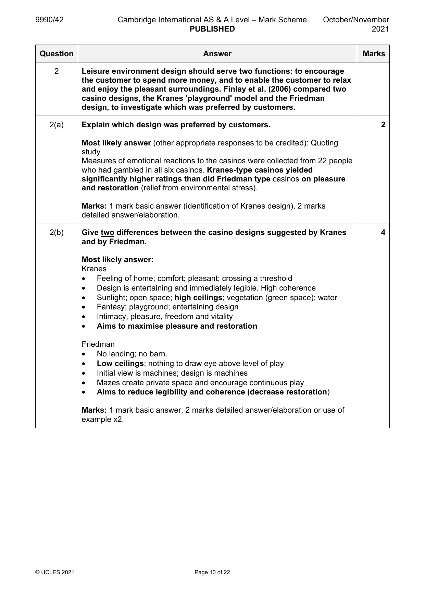
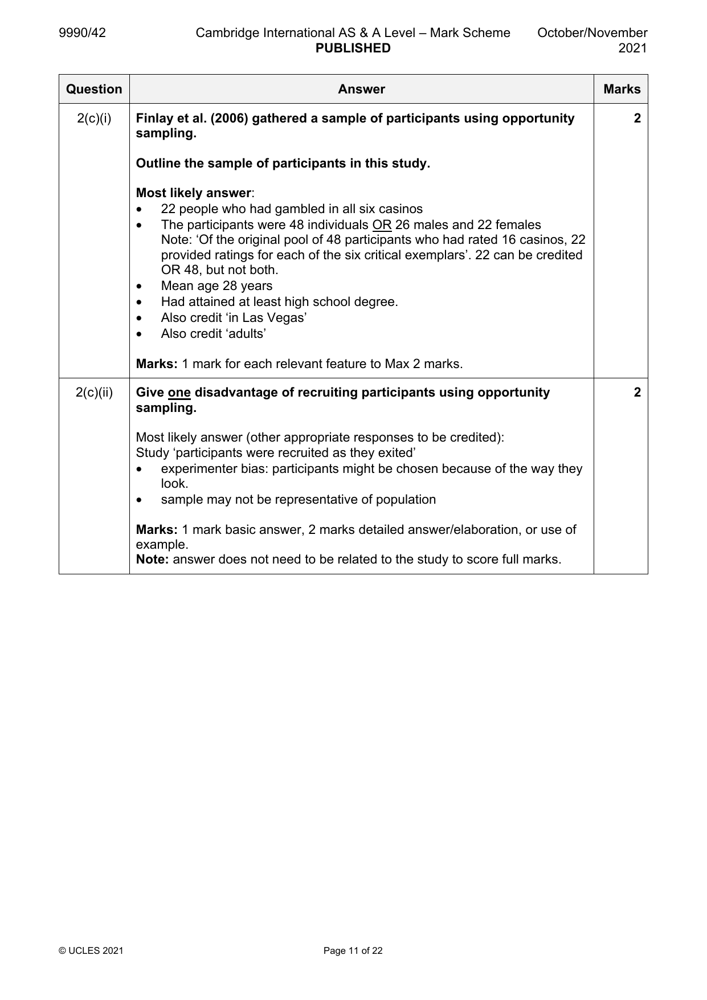
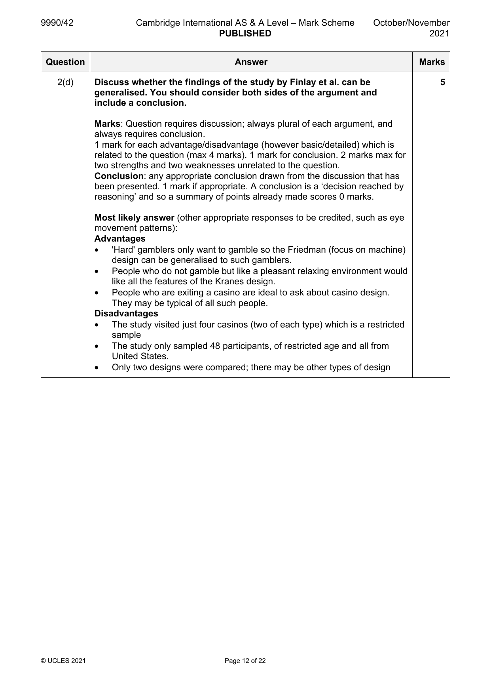
2 Leisure environment design should serve two functions: to encourage
the customer to spend more money, and to enable the customer to relax
and enjoy the pleasant surroundings. Finlay et al. (2006) compared two
casino designs, the Kranes 'playground' model and the Friedman
design, to investigate which was preferred by customers.
2(a) Explain which design was preferred by customers. 2
Most likely answer (other appropriate responses to be credited): Quoting
study
Measures of emotional reactions to the casinos were collected from 22 people
who had gambled in all six casinos. Kranes-type casinos yielded
significantly higher ratings than did Friedman type casinos on pleasure
and restoration (relief from environmental stress).
Marks: 1 mark basic answer (identification of Kranes design), 2 marks
detailed answer/elaboration.
2(b) Give two differences between the casino designs suggested by Kranes 4
and by Friedman.
Most likely answer:
Kranes
• Feeling of home; comfort; pleasant; crossing a threshold
• Design is entertaining and immediately legible. High coherence
• Sunlight; open space; high ceilings; vegetation (green space); water
• Fantasy; playground; entertaining design
• Intimacy, pleasure, freedom and vitality
• Aims to maximise pleasure and restoration
Friedman
• No landing; no barn.
• Low ceilings; nothing to draw eye above level of play
• Initial view is machines; design is machines
• Mazes create private space and encourage continuous play
• Aims to reduce legibility and coherence (decrease restoration)
Marks: 1 mark basic answer, 2 marks detailed answer/elaboration or use of
example x2.
© UCLES 2021 Page 10 of 22
2(c)(i) Finlay et al. (2006) gathered a sample of participants using opportunity 2
sampling.
Outline the sample of participants in this study.
Most likely answer:
• 22 people who had gambled in all six casinos
• The participants were 48 individuals OR 26 males and 22 females
Note: ‘Of the original pool of 48 participants who had rated 16 casinos, 22
provided ratings for each of the six critical exemplars’. 22 can be credited
OR 48, but not both.
• Mean age 28 years
• Had attained at least high school degree.
• Also credit ‘in Las Vegas’
• Also credit ‘adults’
Marks: 1 mark for each relevant feature to Max 2 marks.
2(c)(ii) Give one disadvantage of recruiting participants using opportunity 2
sampling.
Most likely answer (other appropriate responses to be credited):
Study ‘participants were recruited as they exited’
• experimenter bias: participants might be chosen because of the way they
look.
• sample may not be representative of population
Marks: 1 mark basic answer, 2 marks detailed answer/elaboration, or use of
example.
Note: answer does not need to be related to the study to score full marks.
© UCLES 2021 Page 11 of 22
2(d) Discuss whether the findings of the study by Finlay et al. can be 5
generalised. You should consider both sides of the argument and
include a conclusion.
Marks: Question requires discussion; always plural of each argument, and
always requires conclusion.
1 mark for each advantage/disadvantage (however basic/detailed) which is
related to the question (max 4 marks). 1 mark for conclusion. 2 marks max for
two strengths and two weaknesses unrelated to the question.
Conclusion: any appropriate conclusion drawn from the discussion that has
been presented. 1 mark if appropriate. A conclusion is a ‘decision reached by
reasoning’ and so a summary of points already made scores 0 marks.
Most likely answer (other appropriate responses to be credited, such as eye
movement patterns):
Advantages
• 'Hard' gamblers only want to gamble so the Friedman (focus on machine)
design can be generalised to such gamblers.
• People who do not gamble but like a pleasant relaxing environment would
like all the features of the Kranes design.
• People who are exiting a casino are ideal to ask about casino design.
They may be typical of all such people.
Disadvantages
• The study visited just four casinos (two of each type) which is a restricted
sample
• The study only sampled 48 participants, of restricted age and all from
United States.
• Only two designs were compared; there may be other types of design
© UCLES 2021 Page 12 of 22
Official mark scheme pages: 10, 11, 12 · source PDF URL
9990-2021-on-42-q06
Oct/Nov 2021 · Paper 42 · Question 6 · 18 marks
6(a) Design a field experiment to investigate which ambient odour customers 10
prefer in a shop selling clothes.
Marks: use generic levels of response Design a study question part (a).
Additional: Candidates should design the study showing evidence of design
features appropriate to the named method. The named method is: field
experiment.
Typical features:
• Experiments: type, IV, DV, controls, experimental design.
• Typical features of research methodology: sampling technique and
sample, type of data, ethics, reliability, validity, data analysis.
6(b) Explain the psychological and methodological evidence on which your 8
experiment is based.
Marks: use generic levels of response ‘Design a study’ question part (b).
NB If only methodological or psychological explanation is provided max 5
marks
Candidates are expected to explain the reasons for the suggested design in
part (a). Explanation should be both psychological and methodological.
Psychological to include appropriate theory or research.
Additional: candidates are expected to justify their decisions or evidence
presented regarding the design made in answer to question part (a).
Syllabus: effects of odour on shopper arousal and emotion (Chebat &
Michon, 2003)
Psychological:
Chebat and Michon tested ambient odour (citrus scent) compared with a
control of no scent in a shopping mall. This question invites candidates to
consider a clothes shop. They may refer to the clothes store Hollister who
have their own scent.
Methodological: explanation of method using general and specific features
as above.
© UCLES 2021 Page 18 of 22
Official mark scheme pages: 18 · source PDF URL
9990-2021-on-42-q10
Oct/Nov 2021 · Paper 42 · Question 10 · 12 marks

10 ‘Theories of consumer decision-making based on choice heuristics, 12
such as anchoring, are of no use for the person selling a product.’
To what extent do you agree with this statement? Use examples of
research you have studied to support your answer.
Marks: use generic levels of response in table C.
Syllabus: choice heuristics: anchoring and purchase quantity decisions
(Wansink et al., 1998)
Most likely (any other appropriate responses should be credited):
use:
• Theories suggest how we make decisions and so sales strategies can be
devised, such as purchase quantity decisions
• Theories suggest that anchoring, for example, is a common bias and so
generalising this is useful for the seller who targets the same bias in
every person.
No use:
• If a salesperson uses the right strategy (compensatory, etc) or knows
how to close a sale, then any cognitive bias can be overcome.
• Theories might sound good on paper, but do not apply in the real world.
• Theories suggest generalisations, yet there are many individuals. Not
every person will have the same biases.
© UCLES 2021 Page 21 of 22
Official mark scheme pages: 21 · source PDF URL
9990-2021-on-43-q02
Oct/Nov 2021 · Paper 43 · Question 2 · 15 marks
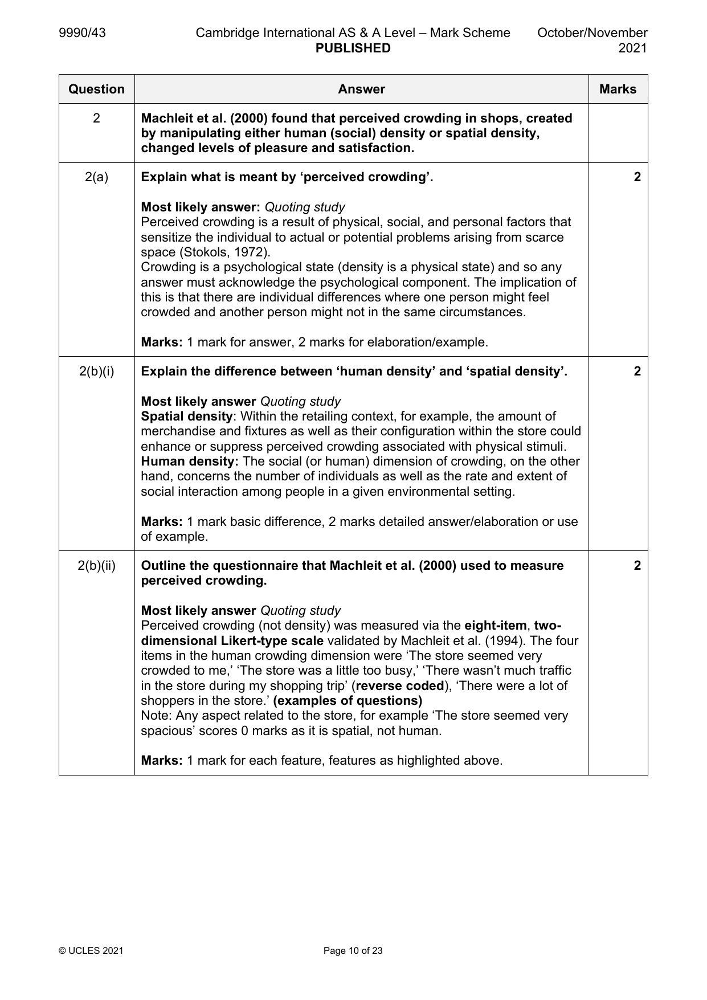
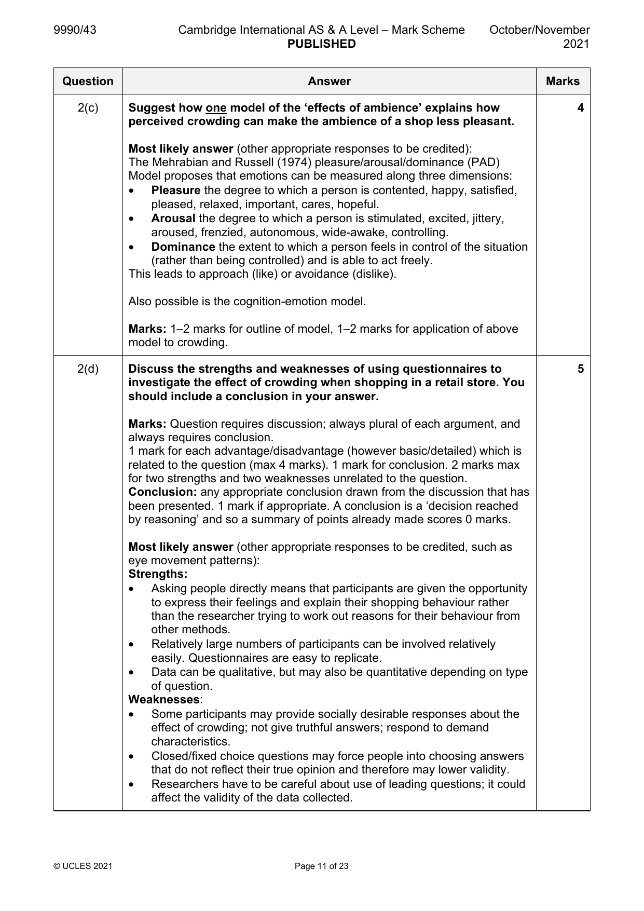
2 Machleit et al. (2000) found that perceived crowding in shops, created
by manipulating either human (social) density or spatial density,
changed levels of pleasure and satisfaction.
2(a) Explain what is meant by ‘perceived crowding’. 2
Most likely answer: Quoting study
Perceived crowding is a result of physical, social, and personal factors that
sensitize the individual to actual or potential problems arising from scarce
space (Stokols, 1972).
Crowding is a psychological state (density is a physical state) and so any
answer must acknowledge the psychological component. The implication of
this is that there are individual differences where one person might feel
crowded and another person might not in the same circumstances.
Marks: 1 mark for answer, 2 marks for elaboration/example.
2(b)(i) Explain the difference between ‘human density’ and ‘spatial density’. 2
Most likely answer Quoting study
Spatial density: Within the retailing context, for example, the amount of
merchandise and fixtures as well as their configuration within the store could
enhance or suppress perceived crowding associated with physical stimuli.
Human density: The social (or human) dimension of crowding, on the other
hand, concerns the number of individuals as well as the rate and extent of
social interaction among people in a given environmental setting.
Marks: 1 mark basic difference, 2 marks detailed answer/elaboration or use
of example.
2(b)(ii) Outline the questionnaire that Machleit et al. (2000) used to measure 2
perceived crowding.
Most likely answer Quoting study
Perceived crowding (not density) was measured via the eight-item, two-
dimensional Likert-type scale validated by Machleit et al. (1994). The four
items in the human crowding dimension were ‘The store seemed very
crowded to me,’ ‘The store was a little too busy,’ ‘There wasn’t much traffic
in the store during my shopping trip’ (reverse coded), ‘There were a lot of
shoppers in the store.’ (examples of questions)
Note: Any aspect related to the store, for example ‘The store seemed very
spacious’ scores 0 marks as it is spatial, not human.
Marks: 1 mark for each feature, features as highlighted above.
© UCLES 2021 Page 10 of 23
2(c) Suggest how one model of the ‘effects of ambience’ explains how 4
perceived crowding can make the ambience of a shop less pleasant.
Most likely answer (other appropriate responses to be credited):
The Mehrabian and Russell (1974) pleasure/arousal/dominance (PAD)
Model proposes that emotions can be measured along three dimensions:
• Pleasure the degree to which a person is contented, happy, satisfied,
pleased, relaxed, important, cares, hopeful.
• Arousal the degree to which a person is stimulated, excited, jittery,
aroused, frenzied, autonomous, wide-awake, controlling.
• Dominance the extent to which a person feels in control of the situation
(rather than being controlled) and is able to act freely.
This leads to approach (like) or avoidance (dislike).
Also possible is the cognition-emotion model.
Marks: 1–2 marks for outline of model, 1–2 marks for application of above
model to crowding.
2(d) Discuss the strengths and weaknesses of using questionnaires to 5
investigate the effect of crowding when shopping in a retail store. You
should include a conclusion in your answer.
Marks: Question requires discussion; always plural of each argument, and
always requires conclusion.
1 mark for each advantage/disadvantage (however basic/detailed) which is
related to the question (max 4 marks). 1 mark for conclusion. 2 marks max
for two strengths and two weaknesses unrelated to the question.
Conclusion: any appropriate conclusion drawn from the discussion that has
been presented. 1 mark if appropriate. A conclusion is a ‘decision reached
by reasoning’ and so a summary of points already made scores 0 marks.
Most likely answer (other appropriate responses to be credited, such as
eye movement patterns):
Strengths:
• Asking people directly means that participants are given the opportunity
to express their feelings and explain their shopping behaviour rather
than the researcher trying to work out reasons for their behaviour from
other methods.
• Relatively large numbers of participants can be involved relatively
easily. Questionnaires are easy to replicate.
• Data can be qualitative, but may also be quantitative depending on type
of question.
Weaknesses:
• Some participants may provide socially desirable responses about the
effect of crowding; not give truthful answers; respond to demand
characteristics.
• Closed/fixed choice questions may force people into choosing answers
that do not reflect their true opinion and therefore may lower validity.
• Researchers have to be careful about use of leading questions; it could
affect the validity of the data collected.
© UCLES 2021 Page 11 of 23
Official mark scheme pages: 10, 11 · source PDF URL
9990-2021-on-43-q06
Oct/Nov 2021 · Paper 43 · Question 6 · 18 marks
6(a) Product placement can be used in different ways, in media such as 10
films.
Design a study to investigate which of three chocolate products
placed in a film in different ways will be noticed most by participants.
Marks: use generic levels of response Design a study question part (a).
Additional: Candidates should design the study showing evidence of
design features appropriate to the named method. The named method: any
appropriate method.
Specific features:
• Experiments: type, IV, DV, controls, experimental design.
• Observations: type, setting, response categories, sampling frame,
number of observers.
• Questionnaires/Interviews: type, setting, example questions.
Scoring/rating scale, analysis of responses.
General features of research methodology: sampling technique &
sample, type of data, ethics, reliability, validity, data analysis.
6(b) Explain the psychological and methodological evidence on which your 8
study is based.
Marks: use generic levels of response ‘Design a study’ question part (b).
Note: If only methodological or psychological explanation is provided max 5
marks
Candidates are expected to explain the reasons for the suggested design in
part (a). Explanation should be both psychological and methodological.
Psychological to include appropriate theory or research.
Additional: candidates are expected to justify their decisions or evidence
presented regarding the design made in answer to question part (a).
Syllabus: product placement in films (Auty and Lewis, 2004)
Psychological:
Product placement is where a branded product is given a prominent position
in a scene in a programme or film. The study by Auty and Lewis is relevant
because they studied children and placement of drinks.
Methodological: explanation of method using general and specific features
as above.
© UCLES 2021 Page 17 of 23
Official mark scheme pages: 17 · source PDF URL
9990-2021-on-43-q10
Oct/Nov 2021 · Paper 43 · Question 10 · 12 marks
10 ‘There is no need to gather qualitative data when conducting studies 12
on menu item position.’
To what extent do you agree with this statement? Use examples of
research you have studied to support your answer.
Marks: use generic levels of response in table C.
Syllabus: primacy, recency and menu item position (Dayan and Bar-Hillel,
2011)
Most likely (any other appropriate responses should be credited):
No need
• The use of numbers and statistics allows direct comparison of
participants in different conditions (gather data on items chosen from a
menu)
• Quantitative data can be objective – not open to subjectivity by the
participant or misinterpretation by the experimenter (e.g. if eye tracking
software is used)
• Qualitative data is more prone to social desirability bias and might add
nothing useful.
Need:
• Qualitative data may find out why a participant chose a particular menu
item
• Qualitative data can be in-depth, rich in detail, insightful and therefore
not reductionist to a single IV.
• Gathering qualitative data might result in a participant feeling that they
have contributed something useful to a study.
© UCLES 2021 Page 21 of 23
Official mark scheme pages: 21 · source PDF URL
9990-2022-mj-31-q03
May/June 2022 · Paper 31 · Question 3 · 12 marks
3(a) Lauterborn proposed ‘the 4 Cs marketing mix model’ of advertising. 2
Identify two of the ‘Cs’.
Award 1 mark for each of the Cs identified up to a maximum of 2 marks.
For example:
Clients/Consumer/Customer wants and/or needs or Consumer value
Costs (to satisfy)
Convenience (to buy)
Communication
Other appropriate responses should also be credited.
3(b) Describe the procedure and one result from the study by Auty and Lewis (2004) on product placement in films. 4
Award 1–2 marks for a basic answer with some understanding of the topic area.
Award 3–4 marks for a detailed answer with clear understanding of the topic area.
For example:
Procedure
In the experimental group the children watched a clip of ‘Home Alone’ where the family were eating pizza and drinking milk
and Pepsi. (1) In the control group the family were eating macaroni cheese and milk. (1) Ex-students of the school
interviewed the children after the study and initially offered them a drink where the choice was either Pepsi or Coca Cola.
(1) They were then asked to describe the film and given specific questions if they did not mention Pepsi. (1)
Results –
Children in the experimental group were more likely to choose Pepsi compared to those in the control group. (1)
The control group split between Coke and Pepsi was 58:42 compared with the experimental group’s 38:62 (2)
Age was not a significant factor in the choice of drink and exposure to the branded film clip. (1)
The number of prompts required for recall was highly dependent on age. (1) Means were 4.43 for the 6–7-year-olds and
2.06 for the 11–12-year-olds. (1)
Other appropriate responses should also be credited.
© UCLES 2022 Page 13 of 27
3(c) Explain one strength and one weakness of the study by Auty and Lewis. 6
Likely strengths include –
Generalisability – fairly good sample size (105) and different age groups used (6–7 and 11–12).
Good validity – randomly assigned to the conditions
Collected quantitative data which means comparisons can be made and statistical testing can be done.
Ethical study as prior written permission to offer children a soft drink during a brief interview was obtained from
parents. Parents and teachers were told that children would be asked questions about their observations after they
viewed a film clip.
Practical applications to companies about using product placement in films to increase sales.
Likely weaknesses include –
Generalisability (UK and primary / and one secondary school)
Validity – the participants were asked immediately after watching the film for a choice of product. Doesn’t show the
long-term effects of product placement in films.
Use of children in research – issues of generalisability to adults, potential for the children to try to understand what the
experiment was about and subject to demand characteristics.
As an independent measures design was used it is possible that individual differences such as product preference
could have affected the results and lower the validity of the study.
Although qualitative data was collected (details of film) this was not analysed as a part of the study and therefore no
depth was given for the reasons for the choice of product.
Mark according to the levels of response criteria below:
Level 3 (5–6 marks)
Candidates will show a clear understanding of the question and will explain one strength and one weakness.
Candidates will provide a good explanation with clear detail.
Level 2 (3–4 marks)
Candidates will show an understanding of the question and will explain one appropriate weakness in detail or one
appropriate strength in detail.
OR one weakness and one strength in less detail.
© UCLES 2022 Page 14 of 27
3(c) Level 1 (1–2 marks)
Candidates will show a basic understanding of the question and will attempt an explanation of either a strength or a
weakness. They could include both but just as an attempt.
Candidates will provide a limited explanation.
Level 0 (0 marks)
No response worthy of credit.
Other appropriate responses should also be credited
© UCLES 2022 Page 15 of 27
Official mark scheme pages: 13, 14, 15 · source PDF URL
9990-2022-mj-31-q04
May/June 2022 · Paper 31 · Question 4 · 18 marks
4(a) Describe what psychologists have discovered about sound and consumer behaviour. 8
The syllabus covers the studies by North et al. (2003) on music in restaurants, Guéguen et al. (2007) on music in open air
markets and Woods et al. (2010) on background noise and food perception.
North et al. (2003)
Field study in a British restaurant. Classical, pop and no music were played over 18 evening, 393 participants. Mean spend
per table was calculated and compared as well as the total time spent in the restaurant. Found people spent more and
were prepared to spend more when classical music was being played. More likely to have starters and coffee when
classical music played.
Guéguen et al. (2007)
Field study in an open-air market selling toys and knick-knacks. 154 men and 86 women were randomly selected when
visiting a stall. Study took place in France on two days. Participants were randomly assigned to either the music or no
music condition. When popular music was being played, customers stayed longer at the stalls (5.27 min music and 3.72 no
music), bought more items (18% music and 10% no music – near-significant) and some higher spend was reported (6.3
euros music and 5.67 euros no music) (but not statistically significant).
Woods et al. (2010)
Lab study. 58 undergraduate and post grad students from Manchester university volunteered. Participants were given
headphones, blindfolded, and given different foods to eat (crunchy and soft food) while either listening to no sound, quiet or
loud background white noise. Foods rated in terms of sweetness, saltiness, and liking. Reports of sweetness and saltiness
were rated lower in the loud compared to the quiet sound condition, but crunchiness was reported to being more intense. A
second study was done which was identical (34 students) but also asked how much they liked the background noise. A
correlation between the ratings of the liking of background noise and the liking of the food was also found.
Mark according to the levels of response descriptors in Table A.
Other appropriate responses should also be credited.
© UCLES 2022 Page 16 of 27
4(b) Evaluate what psychologists have discovered about sound and consumer behaviour, including a discussion 10
about experiments.
A range of issues could be used for evaluation here. These include:
Named issue – experiments.
Geuguen study and North et al.’s studies are field experiments
Strengths – good ecological validity, some control of variables, fewer demand characteristics as usually the
participants do not know they are in a study.
Weaknesses – lack of control, less standardised procedures over the course of the study, could be unethical.
Woods et al.’s study was a lab study
Strengths – good control of variables, can be more ethical as consent can be gained.
Weaknesses – lower ecological validity, demand characteristics
Strengths and weaknesses of the way the data was collected in the research
sampling and generalisations
usefulness/practical applications
reliability/validity of research
Ethics
Mark according to the levels of response descriptors in Table B.
Other appropriate responses should also be credited.
© UCLES 2022 Page 17 of 27
Official mark scheme pages: 16, 17 · source PDF URL
9990-2022-mj-32-q03
May/June 2022 · Paper 32 · Question 3 · 12 marks
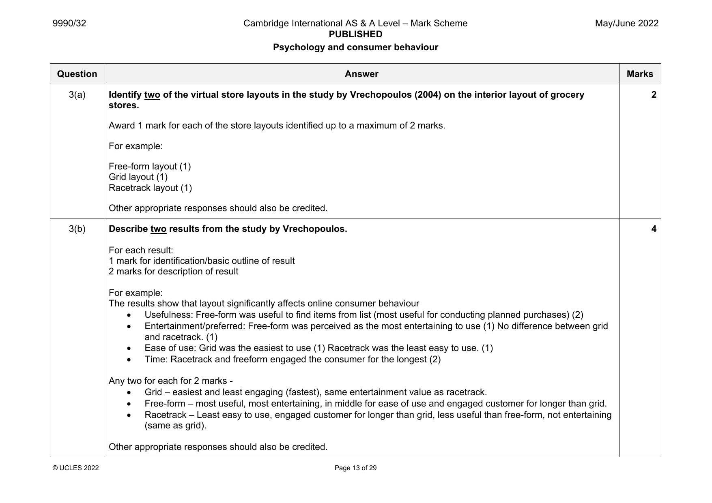
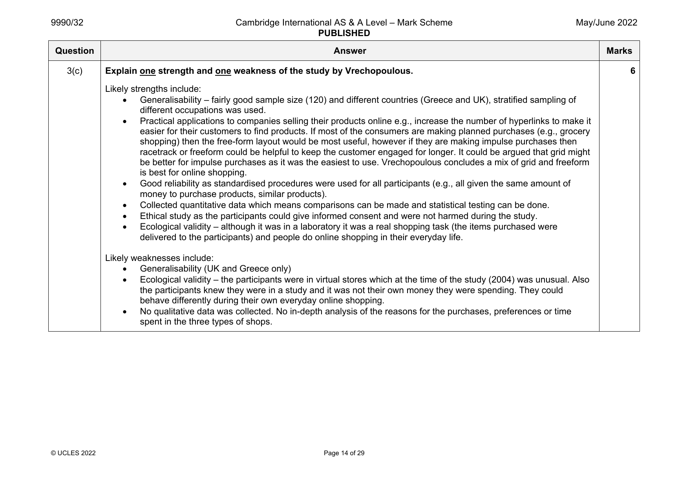
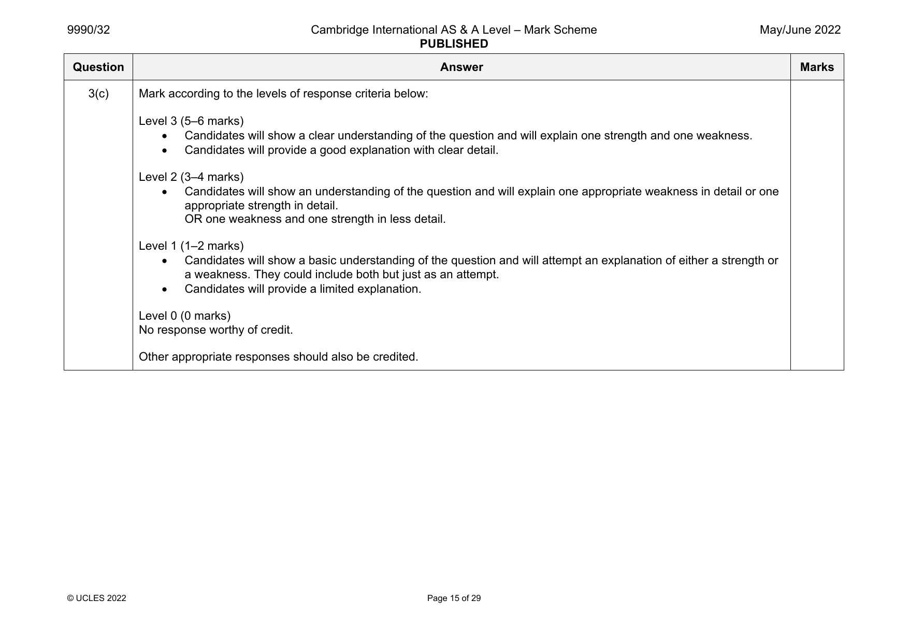
3(a) Identify two of the virtual store layouts in the study by Vrechopoulos (2004) on the interior layout of grocery 2
stores.
Award 1 mark for each of the store layouts identified up to a maximum of 2 marks.
For example:
Free-form layout (1)
Grid layout (1)
Racetrack layout (1)
Other appropriate responses should also be credited.
3(b) Describe two results from the study by Vrechopoulos. 4
For each result:
1 mark for identification/basic outline of result
2 marks for description of result
For example:
The results show that layout significantly affects online consumer behaviour
Usefulness: Free-form was useful to find items from list (most useful for conducting planned purchases) (2)
Entertainment/preferred: Free-form was perceived as the most entertaining to use (1) No difference between grid
and racetrack. (1)
Ease of use: Grid was the easiest to use (1) Racetrack was the least easy to use. (1)
Time: Racetrack and freeform engaged the consumer for the longest (2)
Any two for each for 2 marks -
Grid – easiest and least engaging (fastest), same entertainment value as racetrack.
Free-form – most useful, most entertaining, in middle for ease of use and engaged customer for longer than grid.
Racetrack – Least easy to use, engaged customer for longer than grid, less useful than free-form, not entertaining
(same as grid).
Other appropriate responses should also be credited.
© UCLES 2022 Page 13 of 29
3(c) Explain one strength and one weakness of the study by Vrechopoulous. 6
Likely strengths include:
Generalisability – fairly good sample size (120) and different countries (Greece and UK), stratified sampling of
different occupations was used.
Practical applications to companies selling their products online e.g., increase the number of hyperlinks to make it
easier for their customers to find products. If most of the consumers are making planned purchases (e.g., grocery
shopping) then the free-form layout would be most useful, however if they are making impulse purchases then
racetrack or freeform could be helpful to keep the customer engaged for longer. It could be argued that grid might
be better for impulse purchases as it was the easiest to use. Vrechopoulous concludes a mix of grid and freeform
is best for online shopping.
Good reliability as standardised procedures were used for all participants (e.g., all given the same amount of
money to purchase products, similar products).
Collected quantitative data which means comparisons can be made and statistical testing can be done.
Ethical study as the participants could give informed consent and were not harmed during the study.
Ecological validity – although it was in a laboratory it was a real shopping task (the items purchased were
delivered to the participants) and people do online shopping in their everyday life.
Likely weaknesses include:
Generalisability (UK and Greece only)
Ecological validity – the participants were in virtual stores which at the time of the study (2004) was unusual. Also
the participants knew they were in a study and it was not their own money they were spending. They could
behave differently during their own everyday online shopping.
No qualitative data was collected. No in-depth analysis of the reasons for the purchases, preferences or time
spent in the three types of shops.
© UCLES 2022 Page 14 of 29
3(c) Mark according to the levels of response criteria below:
Level 3 (5–6 marks)
Candidates will show a clear understanding of the question and will explain one strength and one weakness.
Candidates will provide a good explanation with clear detail.
Level 2 (3–4 marks)
Candidates will show an understanding of the question and will explain one appropriate weakness in detail or one
appropriate strength in detail.
OR one weakness and one strength in less detail.
Level 1 (1–2 marks)
Candidates will show a basic understanding of the question and will attempt an explanation of either a strength or
a weakness. They could include both but just as an attempt.
Candidates will provide a limited explanation.
Level 0 (0 marks)
No response worthy of credit.
Other appropriate responses should also be credited.
© UCLES 2022 Page 15 of 29
Official mark scheme pages: 13, 14, 15 · source PDF URL
9990-2022-mj-32-q04
May/June 2022 · Paper 32 · Question 4 · 18 marks
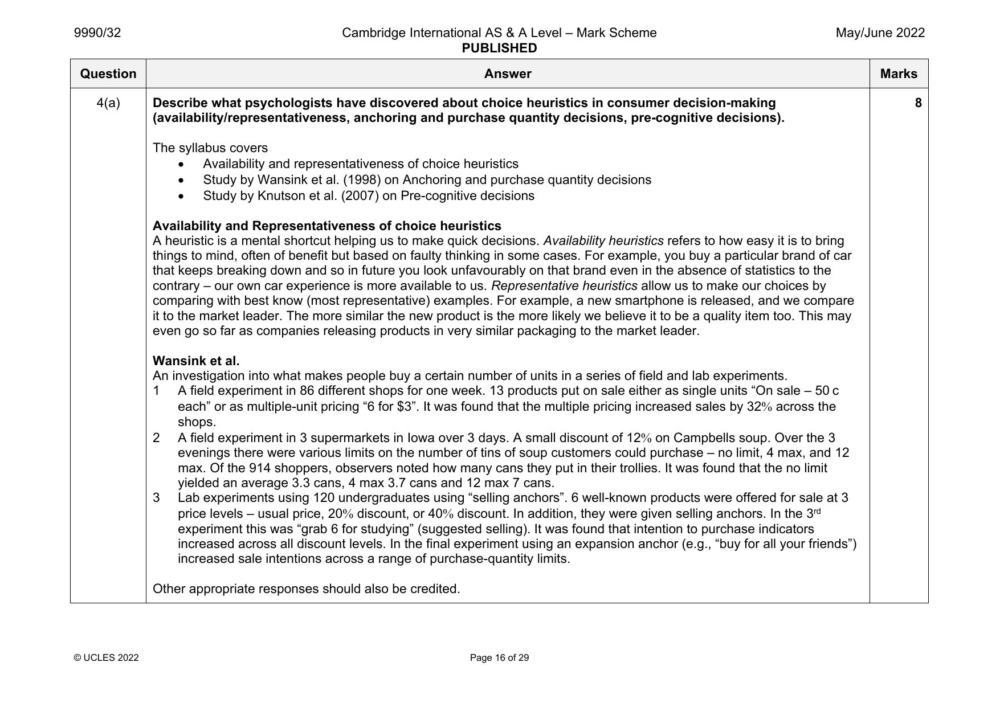
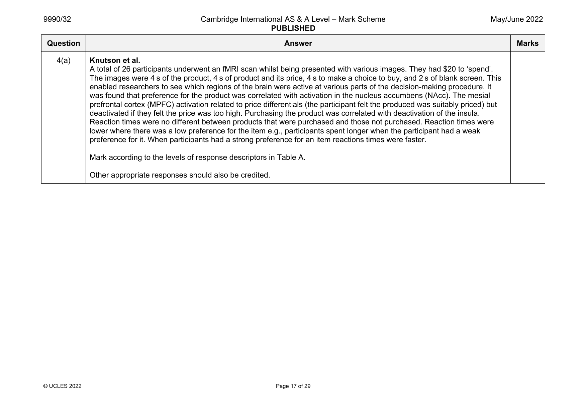
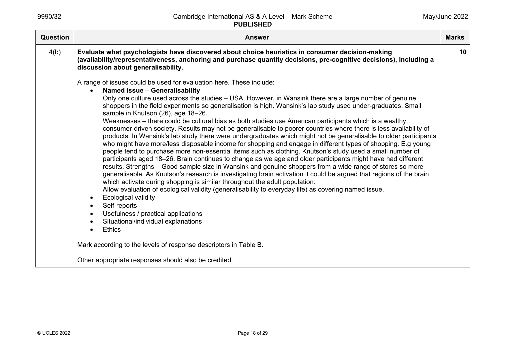
4(a) Describe what psychologists have discovered about choice heuristics in consumer decision-making 8
(availability/representativeness, anchoring and purchase quantity decisions, pre-cognitive decisions).
The syllabus covers
Availability and representativeness of choice heuristics
Study by Wansink et al. (1998) on Anchoring and purchase quantity decisions
Study by Knutson et al. (2007) on Pre-cognitive decisions
Availability and Representativeness of choice heuristics
A heuristic is a mental shortcut helping us to make quick decisions. Availability heuristics refers to how easy it is to bring
things to mind, often of benefit but based on faulty thinking in some cases. For example, you buy a particular brand of car
that keeps breaking down and so in future you look unfavourably on that brand even in the absence of statistics to the
contrary – our own car experience is more available to us. Representative heuristics allow us to make our choices by
comparing with best know (most representative) examples. For example, a new smartphone is released, and we compare
it to the market leader. The more similar the new product is the more likely we believe it to be a quality item too. This may
even go so far as companies releasing products in very similar packaging to the market leader.
Wansink et al.
An investigation into what makes people buy a certain number of units in a series of field and lab experiments.
1 A field experiment in 86 different shops for one week. 13 products put on sale either as single units “On sale – 50 c
each” or as multiple-unit pricing “6 for $3”. It was found that the multiple pricing increased sales by 32 across the
shops.
2 A field experiment in 3 supermarkets in Iowa over 3 days. A small discount of 12 on Campbells soup. Over the 3
evenings there were various limits on the number of tins of soup customers could purchase – no limit, 4 max, and 12
max. Of the 914 shoppers, observers noted how many cans they put in their trollies. It was found that the no limit
yielded an average 3.3 cans, 4 max 3.7 cans and 12 max 7 cans.
3 Lab experiments using 120 undergraduates using “selling anchors”. 6 well-known products were offered for sale at 3
price levels – usual price, 20 discount, or 40 discount. In addition, they were given selling anchors. In the 3rd
experiment this was “grab 6 for studying” (suggested selling). It was found that intention to purchase indicators
increased across all discount levels. In the final experiment using an expansion anchor (e.g., “buy for all your friends”)
increased sale intentions across a range of purchase-quantity limits.
Other appropriate responses should also be credited.
© UCLES 2022 Page 16 of 29
4(a) Knutson et al.
A total of 26 participants underwent an fMRI scan whilst being presented with various images. They had $20 to ‘spend’.
The images were 4 s of the product, 4 s of product and its price, 4 s to make a choice to buy, and 2 s of blank screen. This
enabled researchers to see which regions of the brain were active at various parts of the decision-making procedure. It
was found that preference for the product was correlated with activation in the nucleus accumbens (NAcc). The mesial
prefrontal cortex (MPFC) activation related to price differentials (the participant felt the produced was suitably priced) but
deactivated if they felt the price was too high. Purchasing the product was correlated with deactivation of the insula.
Reaction times were no different between products that were purchased and those not purchased. Reaction times were
lower where there was a low preference for the item e.g., participants spent longer when the participant had a weak
preference for it. When participants had a strong preference for an item reactions times were faster.
Mark according to the levels of response descriptors in Table A.
Other appropriate responses should also be credited.
© UCLES 2022 Page 17 of 29
4(b) Evaluate what psychologists have discovered about choice heuristics in consumer decision-making 10
(availability/representativeness, anchoring and purchase quantity decisions, pre-cognitive decisions), including a
discussion about generalisability.
A range of issues could be used for evaluation here. These include:
Named issue – Generalisability
Only one culture used across the studies – USA. However, in Wansink there are a large number of genuine
shoppers in the field experiments so generalisation is high. Wansink’s lab study used under-graduates. Small
sample in Knutson (26), age 18–26.
Weaknesses – there could be cultural bias as both studies use American participants which is a wealthy,
consumer-driven society. Results may not be generalisable to poorer countries where there is less availability of
products. In Wansink’s lab study there were undergraduates which might not be generalisable to older participants
who might have more/less disposable income for shopping and engage in different types of shopping. E.g young
people tend to purchase more non-essential items such as clothing. Knutson’s study used a small number of
participants aged 18–26. Brain continues to change as we age and older participants might have had different
results. Strengths – Good sample size in Wansink and genuine shoppers from a wide range of stores so more
generalisable. As Knutson’s research is investigating brain activation it could be argued that regions of the brain
which activate during shopping is similar throughout the adult population.
Allow evaluation of ecological validity (generalisability to everyday life) as covering named issue.
Ecological validity
Self-reports
Usefulness / practical applications
Situational/individual explanations
Ethics
Mark according to the levels of response descriptors in Table B.
Other appropriate responses should also be credited.
© UCLES 2022 Page 18 of 29
Official mark scheme pages: 16, 17, 18 · source PDF URL
9990-2022-mj-33-q03
May/June 2022 · Paper 33 · Question 3 · 12 marks
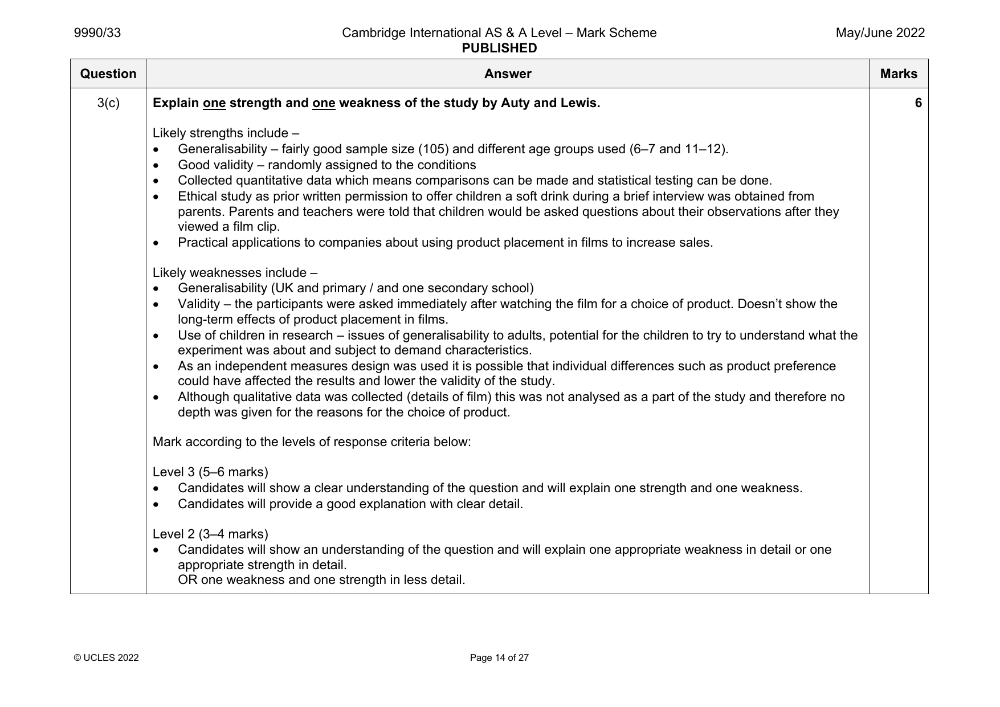
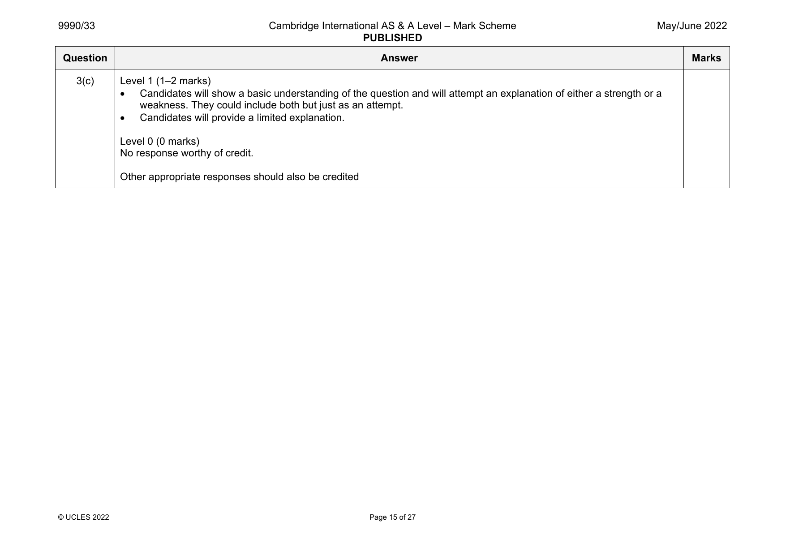
3(a) Lauterborn proposed ‘the 4 Cs marketing mix model’ of advertising. 2
Identify two of the ‘Cs’.
Award 1 mark for each of the Cs identified up to a maximum of 2 marks.
For example:
Clients/Consumer/Customer wants and/or needs or Consumer value
Costs (to satisfy)
Convenience (to buy)
Communication
Other appropriate responses should also be credited.
3(b) Describe the procedure and one result from the study by Auty and Lewis (2004) on product placement in films. 4
Award 1–2 marks for a basic answer with some understanding of the topic area.
Award 3–4 marks for a detailed answer with clear understanding of the topic area.
For example:
Procedure
In the experimental group the children watched a clip of ‘Home Alone’ where the family were eating pizza and drinking milk
and Pepsi. (1) In the control group the family were eating macaroni cheese and milk. (1) Ex-students of the school
interviewed the children after the study and initially offered them a drink where the choice was either Pepsi or Coca Cola.
(1) They were then asked to describe the film and given specific questions if they did not mention Pepsi. (1)
Results –
Children in the experimental group were more likely to choose Pepsi compared to those in the control group. (1)
The control group split between Coke and Pepsi was 58:42 compared with the experimental group’s 38:62 (2)
Age was not a significant factor in the choice of drink and exposure to the branded film clip. (1)
The number of prompts required for recall was highly dependent on age. (1) Means were 4.43 for the 6–7-year-olds and
2.06 for the 11–12-year-olds. (1)
Other appropriate responses should also be credited.
© UCLES 2022 Page 13 of 27
3(c) Explain one strength and one weakness of the study by Auty and Lewis. 6
Likely strengths include –
Generalisability – fairly good sample size (105) and different age groups used (6–7 and 11–12).
Good validity – randomly assigned to the conditions
Collected quantitative data which means comparisons can be made and statistical testing can be done.
Ethical study as prior written permission to offer children a soft drink during a brief interview was obtained from
parents. Parents and teachers were told that children would be asked questions about their observations after they
viewed a film clip.
Practical applications to companies about using product placement in films to increase sales.
Likely weaknesses include –
Generalisability (UK and primary / and one secondary school)
Validity – the participants were asked immediately after watching the film for a choice of product. Doesn’t show the
long-term effects of product placement in films.
Use of children in research – issues of generalisability to adults, potential for the children to try to understand what the
experiment was about and subject to demand characteristics.
As an independent measures design was used it is possible that individual differences such as product preference
could have affected the results and lower the validity of the study.
Although qualitative data was collected (details of film) this was not analysed as a part of the study and therefore no
depth was given for the reasons for the choice of product.
Mark according to the levels of response criteria below:
Level 3 (5–6 marks)
Candidates will show a clear understanding of the question and will explain one strength and one weakness.
Candidates will provide a good explanation with clear detail.
Level 2 (3–4 marks)
Candidates will show an understanding of the question and will explain one appropriate weakness in detail or one
appropriate strength in detail.
OR one weakness and one strength in less detail.
© UCLES 2022 Page 14 of 27
3(c) Level 1 (1–2 marks)
Candidates will show a basic understanding of the question and will attempt an explanation of either a strength or a
weakness. They could include both but just as an attempt.
Candidates will provide a limited explanation.
Level 0 (0 marks)
No response worthy of credit.
Other appropriate responses should also be credited
© UCLES 2022 Page 15 of 27
Official mark scheme pages: 13, 14, 15 · source PDF URL
9990-2022-mj-33-q04
May/June 2022 · Paper 33 · Question 4 · 18 marks
4(a) Describe what psychologists have discovered about sound and consumer behaviour. 8
The syllabus covers the studies by North et al. (2003) on music in restaurants, Guéguen et al. (2007) on music in open air
markets and Woods et al. (2010) on background noise and food perception.
North et al. (2003)
Field study in a British restaurant. Classical, pop and no music were played over 18 evening, 393 participants. Mean spend
per table was calculated and compared as well as the total time spent in the restaurant. Found people spent more and
were prepared to spend more when classical music was being played. More likely to have starters and coffee when
classical music played.
Guéguen et al. (2007)
Field study in an open-air market selling toys and knick-knacks. 154 men and 86 women were randomly selected when
visiting a stall. Study took place in France on two days. Participants were randomly assigned to either the music or no
music condition. When popular music was being played, customers stayed longer at the stalls (5.27 min music and 3.72 no
music), bought more items (18% music and 10% no music – near-significant) and some higher spend was reported (6.3
euros music and 5.67 euros no music) (but not statistically significant).
Woods et al. (2010)
Lab study. 58 undergraduate and post grad students from Manchester university volunteered. Participants were given
headphones, blindfolded, and given different foods to eat (crunchy and soft food) while either listening to no sound, quiet or
loud background white noise. Foods rated in terms of sweetness, saltiness, and liking. Reports of sweetness and saltiness
were rated lower in the loud compared to the quiet sound condition, but crunchiness was reported to being more intense. A
second study was done which was identical (34 students) but also asked how much they liked the background noise. A
correlation between the ratings of the liking of background noise and the liking of the food was also found.
Mark according to the levels of response descriptors in Table A.
Other appropriate responses should also be credited.
© UCLES 2022 Page 16 of 27
4(b) Evaluate what psychologists have discovered about sound and consumer behaviour, including a discussion 10
about experiments.
A range of issues could be used for evaluation here. These include:
Named issue – experiments.
Geuguen study and North et al.’s studies are field experiments
Strengths – good ecological validity, some control of variables, fewer demand characteristics as usually the
participants do not know they are in a study.
Weaknesses – lack of control, less standardised procedures over the course of the study, could be unethical.
Woods et al.’s study was a lab study
Strengths – good control of variables, can be more ethical as consent can be gained.
Weaknesses – lower ecological validity, demand characteristics
Strengths and weaknesses of the way the data was collected in the research
sampling and generalisations
usefulness/practical applications
reliability/validity of research
Ethics
Mark according to the levels of response descriptors in Table B.
Other appropriate responses should also be credited.
© UCLES 2022 Page 17 of 27
Official mark scheme pages: 16, 17 · source PDF URL
9990-2022-mj-41-q02
May/June 2022 · Paper 41 · Question 2 · 15 marks

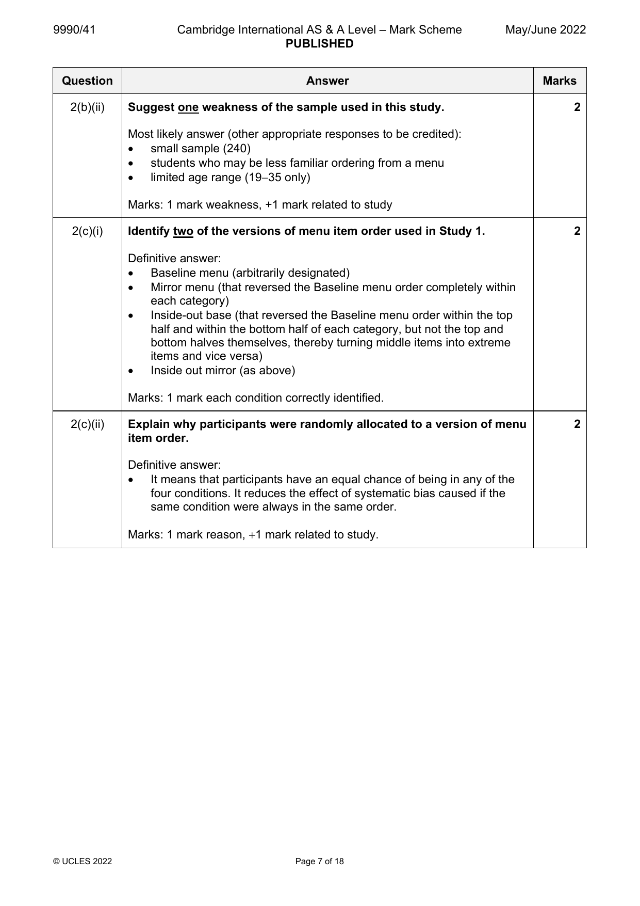

2(a) Dayan and Bar-Hillel (2011) conducted research on how the position of 2
a food item on a menu influenced what participants ordered to eat.
They compared four versions of menu item order. They described their
sample and sampling technique in Study 1 as: *240 participants *from
the Hebrew University, Jerusalem *all were students *aged 19–35 years
*52 female, 48 male *recruited individually from around the
campus.
Suggest which sampling technique could have been used in Study 1.
Definitive answer:
Opportunity sample (1 mark) because participants were recruited
individually from around the campus (1 mark).
Note: 1 mark for term, 1 mark for related to study.
2(b)(i) Suggest one strength of the sample used in this study. 2
Most likely answer (other appropriate responses to be credited):
large sample (240)
students who will be familiar with ordering from a menu
wide age range (1935)
nearly equal male/female balance (52 to 48)
Marks: 1 mark strength, 1 mark related to study
© UCLES 2022 Page 6 of 18
2(b)(ii) Suggest one weakness of the sample used in this study. 2
Most likely answer (other appropriate responses to be credited):
small sample (240)
students who may be less familiar ordering from a menu
limited age range (1935 only)
Marks: 1 mark weakness, +1 mark related to study
2(c)(i) Identify two of the versions of menu item order used in Study 1. 2
Definitive answer:
Baseline menu (arbitrarily designated)
Mirror menu (that reversed the Baseline menu order completely within
each category)
Inside-out base (that reversed the Baseline menu order within the top
half and within the bottom half of each category, but not the top and
bottom halves themselves, thereby turning middle items into extreme
items and vice versa)
Inside out mirror (as above)
Marks: 1 mark each condition correctly identified.
2(c)(ii) Explain why participants were randomly allocated to a version of menu 2
item order.
Definitive answer:
It means that participants have an equal chance of being in any of the
four conditions. It reduces the effect of systematic bias caused if the
same condition were always in the same order.
Marks: 1 mark reason, 1 mark related to study.
© UCLES 2022 Page 7 of 18
2(d) Discuss the strengths and weaknesses of using a laboratory 5
experiment to study menu item order. You should include a conclusion
in your answer.
Most likely answer (other appropriate responses to be credited, such as eye
movement patterns):
Strengths:
a laboratory experiment has an IV, DV and controls e.g. extraneous
situational variables
laboratory experiments are reductionist so one variable can be isolated
and studied.
participants know they are taking part in a study (so give consent but
not informed consent).
Weaknesses:
most consumer behaviour (e.g. shopping) takes place in the real world
and so studies should be conducted in the real world (rather than in a
laboratory).
it may be reductionist to isolate variables to study (i.e. the IV) when
many other variables that are controlled may contribute to consumer
behaviour as a whole.
participants may respond to demand characteristics.
Conclusion: any appropriate conclusion drawn from the discussion that has
been presented. 1 mark if appropriate. A conclusion is a ‘decision
reached by reasoning’ and so a summary of points already made
scores 0 marks.
Marks: Question requires discussion; always plural of each argument, and
always requires conclusion.
1 mark for each strength/weakness (however detailed) and related to the
question up to 4 max. 2 marks max for two strengths/weaknesses unrelated
to the question. 1 mark for conclusion.
Question Answer Marks
Official mark scheme pages: 6, 7, 8 · source PDF URL
9990-2022-mj-41-q06
May/June 2022 · Paper 41 · Question 6 · 18 marks

6(a) It is suggested that people have cognitive maps of where individual 10
food items are located in retail environments, such as supermarkets.
Design a study to investigate whether people use cognitive maps to
locate individual food items in a supermarket.
Marks: use generic levels of response Design a study question part (a).
Additional: Candidates should design the study showing evidence of design
features appropriate to the named method. The named method is: any
appropriate method.
Specific features:
Experiments: type, IV, DV, controls, experimental design.
Observations: type, setting, response categories, sampling frame,
number of observers.
Questionnaires/Interviews: type, setting, example questions.
Scoring/rating scale, analysis of responses.
General features of research methodology: sampling technique &
sample, type of data, ethics, reliability, validity, data analysis.
6(b) Explain the psychological and methodological evidence on which your 8
study is based.
Marks: use generic levels of response ‘Design a study’ question part (b).
Note: If only methodological or psychological explanation is provided max 5
marks
Candidates are expected to explain the reasons for the suggested design in
part (a). Explanation should be both psychological and methodological.
Psychological to include appropriate theory or research.
Additional: candidates are expected to justify their decisions or evidence
presented regarding the design made in answer to question part (a).
Syllabus: cognitive maps of retail locations (Mackay and Olshavsky, 1975)
Psychological: Mackay and Olshavsky (1975) studied cognitive maps in
retail locations.
Also relevant is the study on shopper movement patterns (Gil et al., 2009)
Methodological: explanation of method using general and specific features
as above.
Official mark scheme pages: 14 · source PDF URL
9990-2022-mj-41-q10
May/June 2022 · Paper 41 · Question 10 · 12 marks

10 ‘Studies using fMRI, such as those on pre-cognitive decisions, are of 12
no value in understanding consumer behaviour.’
To what extent do you agree with this statement? Use examples of
research you have studied to support your answer.
Marks: use generic levels of response in table C.
Syllabus: pre-cognitive decisions (Knutson et al., 2007).
Most likely (any other appropriate responses should be credited):
Value
studying how the ‘mind’ works will always be of value
fMRI is scientific equipment producing scientific/objective data
data might be useful to sellers if studies reveal what people are more
likely to buy.
No value:
just because fMRI shows that pre-cognitive decisions are possible, it
has no ecological validity.
decisions made before they are conscious are irrelevant if the person
then acts on that decision
observation of what people purchase is fact, just as fMRI is.
© UCLES 2022 Page 17 of 18
Official mark scheme pages: 17 · source PDF URL
9990-2022-mj-42-q02
May/June 2022 · Paper 42 · Question 2 · 15 marks
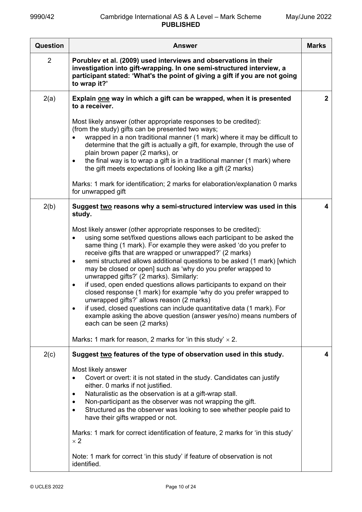
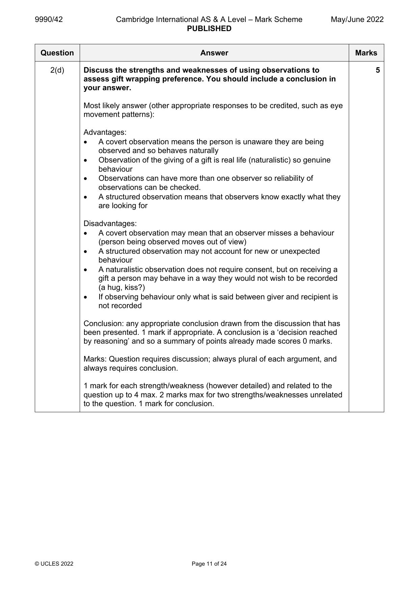
2 Porublev et al. (2009) used interviews and observations in their
investigation into gift-wrapping. In one semi-structured interview, a
participant stated: ‘What's the point of giving a gift if you are not going
to wrap it?’
2(a) Explain one way in which a gift can be wrapped, when it is presented 2
to a receiver.
Most likely answer (other appropriate responses to be credited):
(from the study) gifts can be presented two ways;
wrapped in a non traditional manner (1 mark) where it may be difficult to
determine that the gift is actually a gift, for example, through the use of
plain brown paper (2 marks), or
the final way is to wrap a gift is in a traditional manner (1 mark) where
the gift meets expectations of looking like a gift (2 marks)
Marks: 1 mark for identification; 2 marks for elaboration/explanation 0 marks
for unwrapped gift
2(b) Suggest two reasons why a semi-structured interview was used in this 4
study.
Most likely answer (other appropriate responses to be credited):
using some set/fixed questions allows each participant to be asked the
same thing (1 mark). For example they were asked ‘do you prefer to
receive gifts that are wrapped or unwrapped?’ (2 marks)
semi structured allows additional questions to be asked (1 mark) [which
may be closed or open] such as ‘why do you prefer wrapped to
unwrapped gifts?’ (2 marks). Similarly:
if used, open ended questions allows participants to expand on their
closed response (1 mark) for example ‘why do you prefer wrapped to
unwrapped gifts?’ allows reason (2 marks)
if used, closed questions can include quantitative data (1 mark). For
example asking the above question (answer yes/no) means numbers of
each can be seen (2 marks)
Marks: 1 mark for reason, 2 marks for ‘in this study’ 2.
2(c) Suggest two features of the type of observation used in this study. 4
Most likely answer
Covert or overt: it is not stated in the study. Candidates can justify
either. 0 marks if not justified.
Naturalistic as the observation is at a gift-wrap stall.
Non-participant as the observer was not wrapping the gift.
Structured as the observer was looking to see whether people paid to
have their gifts wrapped or not.
Marks: 1 mark for correct identification of feature, 2 marks for ‘in this study’
2
Note: 1 mark for correct ‘in this study’ if feature of observation is not
identified.
© UCLES 2022 Page 10 of 24
2(d) Discuss the strengths and weaknesses of using observations to 5
assess gift wrapping preference. You should include a conclusion in
your answer.
Most likely answer (other appropriate responses to be credited, such as eye
movement patterns):
Advantages:
A covert observation means the person is unaware they are being
observed and so behaves naturally
Observation of the giving of a gift is real life (naturalistic) so genuine
behaviour
Observations can have more than one observer so reliability of
observations can be checked.
A structured observation means that observers know exactly what they
are looking for
Disadvantages:
A covert observation may mean that an observer misses a behaviour
(person being observed moves out of view)
A structured observation may not account for new or unexpected
behaviour
A naturalistic observation does not require consent, but on receiving a
gift a person may behave in a way they would not wish to be recorded
(a hug, kiss?)
If observing behaviour only what is said between giver and recipient is
not recorded
Conclusion: any appropriate conclusion drawn from the discussion that has
been presented. 1 mark if appropriate. A conclusion is a ‘decision reached
by reasoning’ and so a summary of points already made scores 0 marks.
Marks: Question requires discussion; always plural of each argument, and
always requires conclusion.
1 mark for each strength/weakness (however detailed) and related to the
question up to 4 max. 2 marks max for two strengths/weaknesses unrelated
to the question. 1 mark for conclusion.
© UCLES 2022 Page 11 of 24
Official mark scheme pages: 10, 11 · source PDF URL
9990-2022-mj-42-q06
May/June 2022 · Paper 42 · Question 6 · 18 marks
6(a) Design an experiment to investigate age differences in brand 10
recognition.
Note: age differences can be any.
Marks: use generic levels of response Design a study question part (a).
Additional: Candidates should design the study showing evidence of design
features appropriate to the named method. The named method is:
experiment.
Specific features: Experiments: type, IV, DV, controls, experimental design.
General features of research methodology: sampling technique and sample,
type of data, ethics, reliability, validity, data analysis.
6(b) Explain the psychological and methodological evidence on which your 8
experiment is based.
Marks: use generic levels of response ‘Design a study’ question part (b).
Note: If only methodological or psychological explanation is provided max 5
marks
Candidates are expected to explain the reasons for the suggested design in
part (a). Explanation should be both psychological and methodological.
Psychological to include appropriate theory or research.
Additional: candidates are expected to justify their decisions or evidence
presented regarding the design made in answer to question part (a).
Syllabus: brand recognition in children (Fischer et al., 1991)
Psychological:
Brand recognition is extent to which a consumer can correctly identify a
particular product or service just by viewing the product or service's logo,
tag line, packaging or advertising campaign
Methodological: explanation of method using general and specific features
as above.
© UCLES 2022 Page 18 of 24
Official mark scheme pages: 18 · source PDF URL
9990-2022-mj-42-q10
May/June 2022 · Paper 42 · Question 10 · 12 marks
10 ‘In all advertising media, there is only one effective way to advertise a 12
product, for example television.’
To what extent do you agree with this statement? Use examples of
research you have studied to support your answer.
Marks: use generic levels of response in table C.
Syllabus: advertising media (e.g. television, etc.); persuasive techniques
Most likely (any other appropriate responses should be credited):
Advantages:
Large numbers of most populations watch television
Television advertising can be focused (specific to one region or
channel) or it can be general (to everyone)
Television advertising is the ‘perfect’ medium: not just a picture or
words in a newspaper or poster). It has impact; can use ‘celebrities’
(see Yale model of communication)
Disadvantages:
Some people may not have access to a television
Some people might not watch the channel the advert is on (watching
streaming television)
Some people may not watch television advertising
Other forms of advertising may be better suited than TV, such as radio
Other forms of advertising might be specific (in a magazine; poster on
student campus.
Note: candidates can choose any medium, question has television as
example.
© UCLES 2022 Page 22 of 24
Official mark scheme pages: 22 · source PDF URL
9990-2022-mj-43-q02
May/June 2022 · Paper 43 · Question 2 · 15 marks


2(a) Dayan and Bar-Hillel (2011) conducted research on how the position of 2
a food item on a menu influenced what participants ordered to eat.
They compared four versions of menu item order. They described their
sample and sampling technique in Study 1 as: *240 participants *from
the Hebrew University, Jerusalem *all were students *aged 19–35 years
*52 female, 48 male *recruited individually from around the
campus.
Suggest which sampling technique could have been used in Study 1.
Definitive answer:
Opportunity sample (1 mark) because participants were recruited
individually from around the campus (1 mark).
Note: 1 mark for term, 1 mark for related to study.
2(b)(i) Suggest one strength of the sample used in this study. 2
Most likely answer (other appropriate responses to be credited):
large sample (240)
students who will be familiar with ordering from a menu
wide age range (1935)
nearly equal male/female balance (52 to 48)
Marks: 1 mark strength, 1 mark related to study
© UCLES 2022 Page 6 of 18
2(b)(ii) Suggest one weakness of the sample used in this study. 2
Most likely answer (other appropriate responses to be credited):
small sample (240)
students who may be less familiar ordering from a menu
limited age range (1935 only)
Marks: 1 mark weakness, +1 mark related to study
2(c)(i) Identify two of the versions of menu item order used in Study 1. 2
Definitive answer:
Baseline menu (arbitrarily designated)
Mirror menu (that reversed the Baseline menu order completely within
each category)
Inside-out base (that reversed the Baseline menu order within the top
half and within the bottom half of each category, but not the top and
bottom halves themselves, thereby turning middle items into extreme
items and vice versa)
Inside out mirror (as above)
Marks: 1 mark each condition correctly identified.
2(c)(ii) Explain why participants were randomly allocated to a version of menu 2
item order.
Definitive answer:
It means that participants have an equal chance of being in any of the
four conditions. It reduces the effect of systematic bias caused if the
same condition were always in the same order.
Marks: 1 mark reason, 1 mark related to study.
© UCLES 2022 Page 7 of 18
2(d) Discuss the strengths and weaknesses of using a laboratory 5
experiment to study menu item order. You should include a conclusion
in your answer.
Most likely answer (other appropriate responses to be credited, such as eye
movement patterns):
Strengths:
a laboratory experiment has an IV, DV and controls e.g. extraneous
situational variables
laboratory experiments are reductionist so one variable can be isolated
and studied.
participants know they are taking part in a study (so give consent but
not informed consent).
Weaknesses:
most consumer behaviour (e.g. shopping) takes place in the real world
and so studies should be conducted in the real world (rather than in a
laboratory).
it may be reductionist to isolate variables to study (i.e. the IV) when
many other variables that are controlled may contribute to consumer
behaviour as a whole.
participants may respond to demand characteristics.
Conclusion: any appropriate conclusion drawn from the discussion that has
been presented. 1 mark if appropriate. A conclusion is a ‘decision
reached by reasoning’ and so a summary of points already made
scores 0 marks.
Marks: Question requires discussion; always plural of each argument, and
always requires conclusion.
1 mark for each strength/weakness (however detailed) and related to the
question up to 4 max. 2 marks max for two strengths/weaknesses unrelated
to the question. 1 mark for conclusion.
Question Answer Marks
Official mark scheme pages: 6, 7, 8 · source PDF URL
9990-2022-mj-43-q06
May/June 2022 · Paper 43 · Question 6 · 18 marks

6(a) It is suggested that people have cognitive maps of where individual 10
food items are located in retail environments, such as supermarkets.
Design a study to investigate whether people use cognitive maps to
locate individual food items in a supermarket.
Marks: use generic levels of response Design a study question part (a).
Additional: Candidates should design the study showing evidence of design
features appropriate to the named method. The named method is: any
appropriate method.
Specific features:
Experiments: type, IV, DV, controls, experimental design.
Observations: type, setting, response categories, sampling frame,
number of observers.
Questionnaires/Interviews: type, setting, example questions.
Scoring/rating scale, analysis of responses.
General features of research methodology: sampling technique &
sample, type of data, ethics, reliability, validity, data analysis.
6(b) Explain the psychological and methodological evidence on which your 8
study is based.
Marks: use generic levels of response ‘Design a study’ question part (b).
Note: If only methodological or psychological explanation is provided max 5
marks
Candidates are expected to explain the reasons for the suggested design in
part (a). Explanation should be both psychological and methodological.
Psychological to include appropriate theory or research.
Additional: candidates are expected to justify their decisions or evidence
presented regarding the design made in answer to question part (a).
Syllabus: cognitive maps of retail locations (Mackay and Olshavsky, 1975)
Psychological: Mackay and Olshavsky (1975) studied cognitive maps in
retail locations.
Also relevant is the study on shopper movement patterns (Gil et al., 2009)
Methodological: explanation of method using general and specific features
as above.
Official mark scheme pages: 14 · source PDF URL
9990-2022-mj-43-q10
May/June 2022 · Paper 43 · Question 10 · 12 marks

10 ‘Studies using fMRI, such as those on pre-cognitive decisions, are of 12
no value in understanding consumer behaviour.’
To what extent do you agree with this statement? Use examples of
research you have studied to support your answer.
Marks: use generic levels of response in table C.
Syllabus: pre-cognitive decisions (Knutson et al., 2007).
Most likely (any other appropriate responses should be credited):
Value
studying how the ‘mind’ works will always be of value
fMRI is scientific equipment producing scientific/objective data
data might be useful to sellers if studies reveal what people are more
likely to buy.
No value:
just because fMRI shows that pre-cognitive decisions are possible, it
has no ecological validity.
decisions made before they are conscious are irrelevant if the person
then acts on that decision
observation of what people purchase is fact, just as fMRI is.
© UCLES 2022 Page 17 of 18
Official mark scheme pages: 17 · source PDF URL
9990-2022-on-31-q03
Oct/Nov 2022 · Paper 31 · Question 3 · 12 marks
3(a) Outline an associative learning explanation for consumers’ preference 2
for product colour (Grossman and Wisenblit, 1999).
Award 1 mark for a basic outline of the term/concept.
Award 2 marks for a detailed outline of the term/concept.
With classical conditioning, we form associations between favourable
experiences and a colour, leading to colour preferences, or we may learn to
associate certain colours with certain products and therefore against some
other products (2). In addition, associations could have been formed early in
human history when people first associated blue with night (passivity) and
yellow with sunlight (arousal) (1). We tend to assume cool colours like green
and blue are calming but warmer colours like red and orange are arousing
(1).
Other appropriate responses should also be credited.
3(b) Outline two methods used to collect data in the study by Porublev et 4
al. (2009) on gift-wrapping.
For each method:
Award 1 mark for a basic answer with some understanding of the topic area.
Award 2 marks for a detailed answer with clear understanding of the topic
area.
Two from:
• Observation (1) of a Christmas gift-wrapping stall (1) (to see different
wrappings and how gifts are wrapped)
• In depth interviews (1) with 20 participants from Victoria, Australia aged
25–35 (to reflect on gift-wrapping) with questions regarding gift-
wrapping preferences (1)
• Six projective workshops where participants in pairs were asked to wrap
two gifts, one for someone they are close to and the other for an
acquaintance, and have a discussion about gift-wrapping while doing so
(2) Researchers photographed the wrapped gifts (1)
Other appropriate responses should also be credited.
© UCLES 2022 Page 11 of 24
3(c) Explain one strength and one weakness of the study by Porublev et al. 6
Likely strengths include:
• Use of multiple ways of gathering data (observation, interview etc.)
means findings are more comprehensive so increasing validity
• Standardised procedures in interview and methods of gathering
qualitative data increases reliability. Study could easily be carried out
elsewhere for comparison
• Qualitative data gathered leading to high validity as participants can
express views in own words and observers can record detail (for
example photographs were taken of the wrapped gifts produced in the
workshops)
• Although the study was carried out at Christmas time, the expectation of
the researchers was that the information gathered would apply to all
types of gifts – birthdays, baby shower, Valentine’s etc., so widening the
generalisability
• Ethical study as participants were aware of taking part in the interview
and workshop, giving informed consent and in the case of the
observation, participants could reasonably expect to be observed while
shopping
Likely weaknesses include:
• The study centred around Christmas gifts, which may not have an
equivalent in other cultures. In other religious festivals where gifts are
given, they may be of a different type or not wrapped and expectations
about wrapping could be different too
• Lack of quantitative data means that it would be more difficult to make
comparisons between either different shops or different age groups
• Narrow age range / culture of participants so lacking in generalisations.
Researchers acknowledge this, but selection made deliberately to get
information from those most likely to engage with gifting
Mark according to the levels of response criteria below:
Level 3 (5–6 marks)
• Candidates will show a clear understanding of the question and will
explain one strength and one weakness.
• Candidates will provide a good explanation with clear detail.
Level 2 (3–4 marks)
• Candidates will show an understanding of the question and will explain
one appropriate weakness in detail or one appropriate strength in detail.
OR
• one weakness and one strength in less detail.
Level 1 (1–2 marks)
• Candidates will show a basic understanding of the question and will
attempt an explanation of either a strength or a weakness. They could
include both but just as an attempt.
• Candidates will provide a limited explanation.
© UCLES 2022 Page 12 of 24
3(c) Level 0 (0 marks)
No response worthy of credit.
Other appropriate responses should also be credited.
© UCLES 2022 Page 13 of 24
Official mark scheme pages: 11, 12, 13 · source PDF URL
9990-2022-on-31-q04
Oct/Nov 2022 · Paper 31 · Question 4 · 18 marks
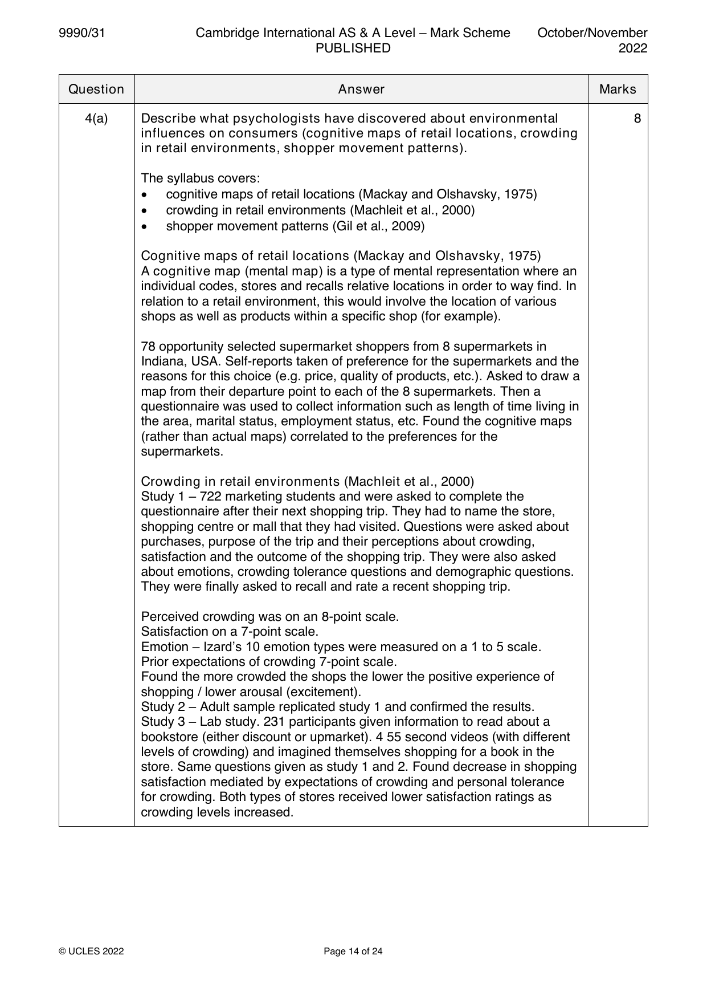
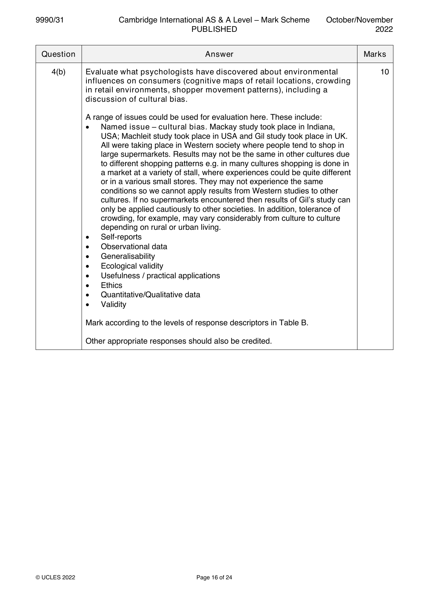
4(a) Describe what psychologists have discovered about environmental 8
influences on consumers (cognitive maps of retail locations, crowding
in retail environments, shopper movement patterns).
The syllabus covers:
• cognitive maps of retail locations (Mackay and Olshavsky, 1975)
• crowding in retail environments (Machleit et al., 2000)
• shopper movement patterns (Gil et al., 2009)
Cognitive maps of retail locations (Mackay and Olshavsky, 1975)
A cognitive map (mental map) is a type of mental representation where an
individual codes, stores and recalls relative locations in order to way find. In
relation to a retail environment, this would involve the location of various
shops as well as products within a specific shop (for example).
78 opportunity selected supermarket shoppers from 8 supermarkets in
Indiana, USA. Self-reports taken of preference for the supermarkets and the
reasons for this choice (e.g. price, quality of products, etc.). Asked to draw a
map from their departure point to each of the 8 supermarkets. Then a
questionnaire was used to collect information such as length of time living in
the area, marital status, employment status, etc. Found the cognitive maps
(rather than actual maps) correlated to the preferences for the
supermarkets.
Crowding in retail environments (Machleit et al., 2000)
Study 1 – 722 marketing students and were asked to complete the
questionnaire after their next shopping trip. They had to name the store,
shopping centre or mall that they had visited. Questions were asked about
purchases, purpose of the trip and their perceptions about crowding,
satisfaction and the outcome of the shopping trip. They were also asked
about emotions, crowding tolerance questions and demographic questions.
They were finally asked to recall and rate a recent shopping trip.
Perceived crowding was on an 8-point scale.
Satisfaction on a 7-point scale.
Emotion – Izard’s 10 emotion types were measured on a 1 to 5 scale.
Prior expectations of crowding 7-point scale.
Found the more crowded the shops the lower the positive experience of
shopping / lower arousal (excitement).
Study 2 – Adult sample replicated study 1 and confirmed the results.
Study 3 – Lab study. 231 participants given information to read about a
bookstore (either discount or upmarket). 4 55 second videos (with different
levels of crowding) and imagined themselves shopping for a book in the
store. Same questions given as study 1 and 2. Found decrease in shopping
satisfaction mediated by expectations of crowding and personal tolerance
for crowding. Both types of stores received lower satisfaction ratings as
crowding levels increased.
© UCLES 2022 Page 14 of 24
4(a) Shopper movement patterns (Gil et al., 2009)
480 shoppers interviewed. Given demographic information to complete.
Given a coloured tag to be followed in the store via CCTV. Interviewed
again when they left the store. Asked questions about purpose of trip, use of
shopping list, satisfaction with shopping, amount spent. They were able to
measure the duration of the trip, average walking speed, duration of
interaction with products, % of store section visited more than once, which
areas of the store visited and how far into the store they go.
Shopping behaviour affected by:
Location of products.
Some areas more popular than other (e.g. baby products not popular).
Identified four patterns of movement – short trip, round trip, central trip and
wave trip. Didn’t find any type of person engages in one pattern of
movement more than any other.
Also found five patterns – native, tourist, raider, explorer and specialist.
Males are more likely to be a raider and females shopping alone are most
frequently an explorer.
Mark according to the levels of response descriptors in Table A.
Other appropriate responses should also be credited.
© UCLES 2022 Page 15 of 24
4(b) Evaluate what psychologists have discovered about environmental 10
influences on consumers (cognitive maps of retail locations, crowding
in retail environments, shopper movement patterns), including a
discussion of cultural bias.
A range of issues could be used for evaluation here. These include:
• Named issue – cultural bias. Mackay study took place in Indiana,
USA; Machleit study took place in USA and Gil study took place in UK.
All were taking place in Western society where people tend to shop in
large supermarkets. Results may not be the same in other cultures due
to different shopping patterns e.g. in many cultures shopping is done in
a market at a variety of stall, where experiences could be quite different
or in a various small stores. They may not experience the same
conditions so we cannot apply results from Western studies to other
cultures. If no supermarkets encountered then results of Gil’s study can
only be applied cautiously to other societies. In addition, tolerance of
crowding, for example, may vary considerably from culture to culture
depending on rural or urban living.
• Self-reports
• Observational data
• Generalisability
• Ecological validity
• Usefulness / practical applications
• Ethics
• Quantitative/Qualitative data
• Validity
Mark according to the levels of response descriptors in Table B.
Other appropriate responses should also be credited.
© UCLES 2022 Page 16 of 24
Official mark scheme pages: 14, 15, 16 · source PDF URL
9990-2022-on-32-q03
Oct/Nov 2022 · Paper 32 · Question 3 · 12 marks
3(a) Explain what is meant by ‘satisficing’ in consumer decision-making. 2
Award 1 mark for a basic explanation of the term/concept.
Award 2 marks for a detailed explanation of the term/concept.
For example:
Satisficing is when the consumer chooses the first product encountered that
meets their basic requirements (1) and no further considerations are needed
(1). For example, if a basic household item like a toaster needs to be
replaced, the consumer may simply buy the first one they see (1). Satisficing
is a non-compensatory strategy (1).
Other appropriate responses should also be credited.
3(b) Describe ‘prospect theory’ in consumer decision-making. 4
Award 1–2 marks for a basic answer with some understanding of the topic
area.
Award 3–4 marks for a detailed answer with clear understanding of the topic
area.
For example:
Prospect theory states that decision-making is based on weighing up costs
and benefits and that value (or utility) is not a single entity. Costs and
benefits can be seen differently so if there are alternatives, the one
presented in terms of benefits will be chosen over the one presented in
terms of possible losses (loss aversion). In addition, people put more value
on things they own (endowment effect).
The theory involves 4 stages:
1 Editing – using ‘rules of thumb’ / shortcuts such as availability heuristics
2 Coding – setting a reference point for outcome to be measured
3 Value – costs and benefits
Official mark scheme pages: 12 · source PDF URL
9990-2022-on-32-q04
Oct/Nov 2022 · Paper 32 · Question 4 · 18 marks
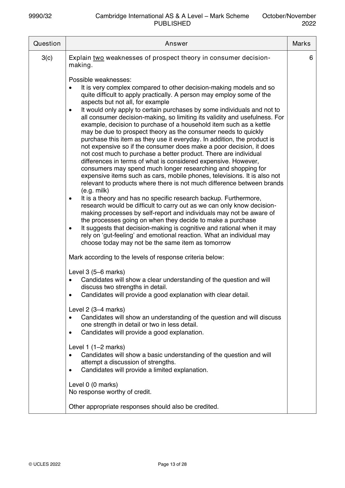
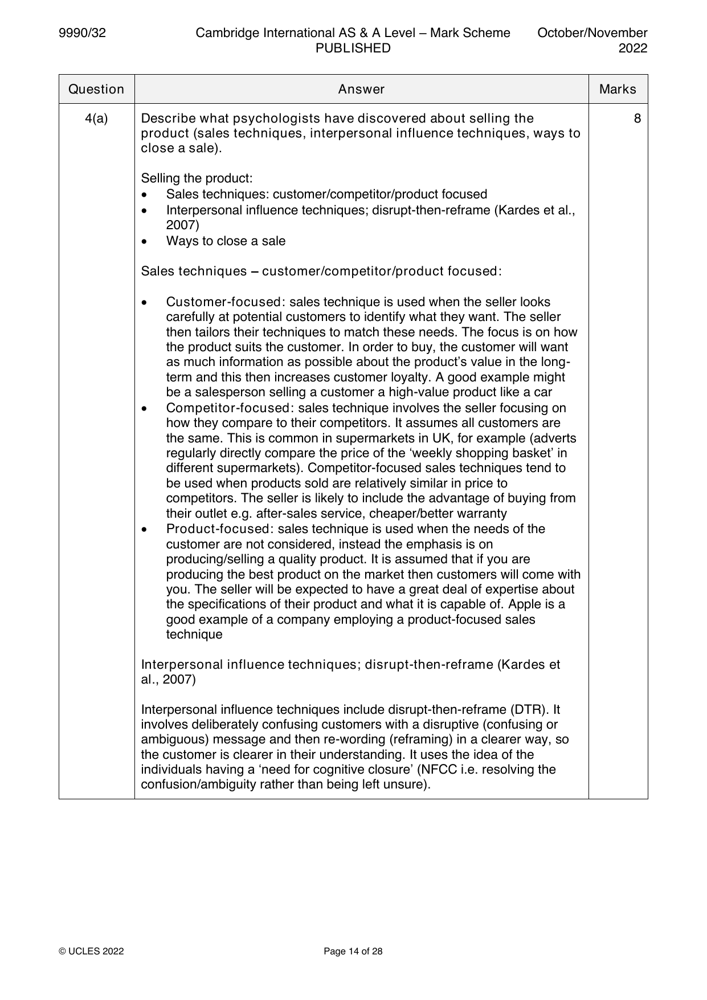
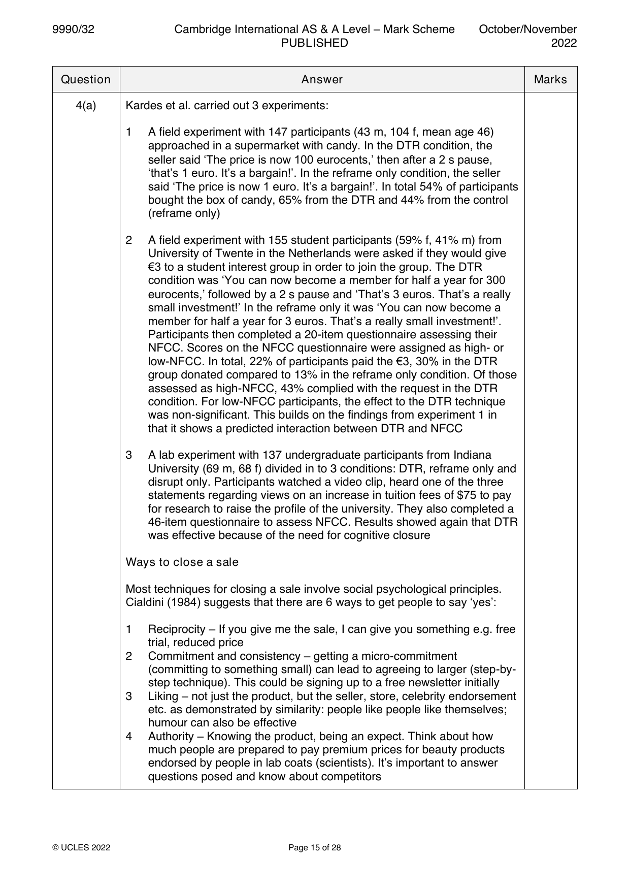
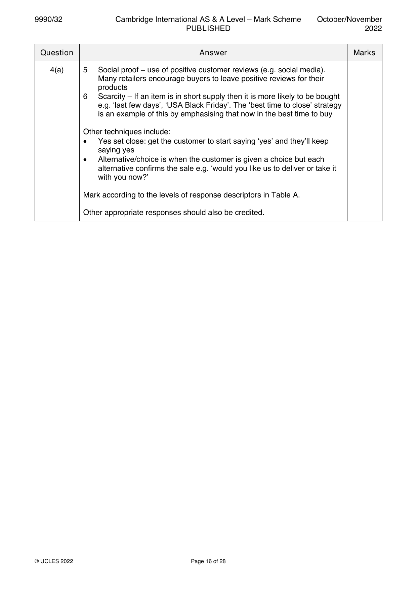
4 Weighting and risk assessment e.g. ‘framing’ so 80% prefer this
compared to 20% do not
Other appropriate responses should also be credited.
© UCLES 2022 Page 12 of 28
9990/32 Cambridge International AS & A Level – Mark Scheme October/November
PUBLISHED 2022
Question Answer Marks
3(c) Explain two weaknesses of prospect theory in consumer decision- 6
making.
Possible weaknesses:
• It is very complex compared to other decision-making models and so
quite difficult to apply practically. A person may employ some of the
aspects but not all, for example
• It would only apply to certain purchases by some individuals and not to
all consumer decision-making, so limiting its validity and usefulness. For
example, decision to purchase of a household item such as a kettle
may be due to prospect theory as the consumer needs to quickly
purchase this item as they use it everyday. In addition, the product is
not expensive so if the consumer does make a poor decision, it does
not cost much to purchase a better product. There are individual
differences in terms of what is considered expensive. However,
consumers may spend much longer researching and shopping for
expensive items such as cars, mobile phones, televisions. It is also not
relevant to products where there is not much difference between brands
(e.g. milk)
• It is a theory and has no specific research backup. Furthermore,
research would be difficult to carry out as we can only know decision-
making processes by self-report and individuals may not be aware of
the processes going on when they decide to make a purchase
• It suggests that decision-making is cognitive and rational when it may
rely on ‘gut-feeling’ and emotional reaction. What an individual may
choose today may not be the same item as tomorrow
Mark according to the levels of response criteria below:
Level 3 (5–6 marks)
• Candidates will show a clear understanding of the question and will
discuss two strengths in detail.
• Candidates will provide a good explanation with clear detail.
Level 2 (3–4 marks)
• Candidates will show an understanding of the question and will discuss
one strength in detail or two in less detail.
• Candidates will provide a good explanation.
Level 1 (1–2 marks)
• Candidates will show a basic understanding of the question and will
attempt a discussion of strengths.
• Candidates will provide a limited explanation.
Level 0 (0 marks)
No response worthy of credit.
Other appropriate responses should also be credited.
© UCLES 2022 Page 13 of 28
4(a) Describe what psychologists have discovered about selling the 8
product (sales techniques, interpersonal influence techniques, ways to
close a sale).
Selling the product:
• Sales techniques: customer/competitor/product focused
• Interpersonal influence techniques; disrupt-then-reframe (Kardes et al.,
2007)
• Ways to close a sale
Sales techniques – customer/competitor/product focused:
• Customer-focused: sales technique is used when the seller looks
carefully at potential customers to identify what they want. The seller
then tailors their techniques to match these needs. The focus is on how
the product suits the customer. In order to buy, the customer will want
as much information as possible about the product’s value in the long-
term and this then increases customer loyalty. A good example might
be a salesperson selling a customer a high-value product like a car
• Competitor-focused: sales technique involves the seller focusing on
how they compare to their competitors. It assumes all customers are
the same. This is common in supermarkets in UK, for example (adverts
regularly directly compare the price of the ‘weekly shopping basket’ in
different supermarkets). Competitor-focused sales techniques tend to
be used when products sold are relatively similar in price to
competitors. The seller is likely to include the advantage of buying from
their outlet e.g. after-sales service, cheaper/better warranty
• Product-focused: sales technique is used when the needs of the
customer are not considered, instead the emphasis is on
producing/selling a quality product. It is assumed that if you are
producing the best product on the market then customers will come with
you. The seller will be expected to have a great deal of expertise about
the specifications of their product and what it is capable of. Apple is a
good example of a company employing a product-focused sales
technique
Interpersonal influence techniques; disrupt-then-reframe (Kardes et
al., 2007)
Interpersonal influence techniques include disrupt-then-reframe (DTR). It
involves deliberately confusing customers with a disruptive (confusing or
ambiguous) message and then re-wording (reframing) in a clearer way, so
the customer is clearer in their understanding. It uses the idea of the
individuals having a ‘need for cognitive closure’ (NFCC i.e. resolving the
confusion/ambiguity rather than being left unsure).
© UCLES 2022 Page 14 of 28
4(a) Kardes et al. carried out 3 experiments:
1 A field experiment with 147 participants (43 m, 104 f, mean age 46)
approached in a supermarket with candy. In the DTR condition, the
seller said ‘The price is now 100 eurocents,’ then after a 2 s pause,
‘that’s 1 euro. It’s a bargain!’. In the reframe only condition, the seller
said ‘The price is now 1 euro. It’s a bargain!’. In total 54% of participants
bought the box of candy, 65% from the DTR and 44% from the control
(reframe only)
2 A field experiment with 155 student participants (59% f, 41% m) from
University of Twente in the Netherlands were asked if they would give
€3 to a student interest group in order to join the group. The DTR
condition was ‘You can now become a member for half a year for 300
eurocents,’ followed by a 2 s pause and ‘That’s 3 euros. That’s a really
small investment!’ In the reframe only it was ‘You can now become a
member for half a year for 3 euros. That’s a really small investment!’.
Participants then completed a 20-item questionnaire assessing their
NFCC. Scores on the NFCC questionnaire were assigned as high- or
low-NFCC. In total, 22% of participants paid the €3, 30% in the DTR
group donated compared to 13% in the reframe only condition. Of those
assessed as high-NFCC, 43% complied with the request in the DTR
condition. For low-NFCC participants, the effect to the DTR technique
was non-significant. This builds on the findings from experiment 1 in
that it shows a predicted interaction between DTR and NFCC
3 A lab experiment with 137 undergraduate participants from Indiana
University (69 m, 68 f) divided in to 3 conditions: DTR, reframe only and
disrupt only. Participants watched a video clip, heard one of the three
statements regarding views on an increase in tuition fees of $75 to pay
for research to raise the profile of the university. They also completed a
46-item questionnaire to assess NFCC. Results showed again that DTR
was effective because of the need for cognitive closure
Ways to close a sale
Most techniques for closing a sale involve social psychological principles.
Cialdini (1984) suggests that there are 6 ways to get people to say ‘yes’:
1 Reciprocity – If you give me the sale, I can give you something e.g. free
trial, reduced price
2 Commitment and consistency – getting a micro-commitment
(committing to something small) can lead to agreeing to larger (step-by-
step technique). This could be signing up to a free newsletter initially
3 Liking – not just the product, but the seller, store, celebrity endorsement
etc. as demonstrated by similarity: people like people like themselves;
humour can also be effective
4 Authority – Knowing the product, being an expect. Think about how
much people are prepared to pay premium prices for beauty products
endorsed by people in lab coats (scientists). It’s important to answer
questions posed and know about competitors
© UCLES 2022 Page 15 of 28
4(a) 5 Social proof – use of positive customer reviews (e.g. social media).
Many retailers encourage buyers to leave positive reviews for their
products
6 Scarcity – If an item is in short supply then it is more likely to be bought
e.g. ‘last few days’, ‘USA Black Friday’. The ‘best time to close’ strategy
is an example of this by emphasising that now in the best time to buy
Other techniques include:
• Yes set close: get the customer to start saying ‘yes’ and they’ll keep
saying yes
• Alternative/choice is when the customer is given a choice but each
alternative confirms the sale e.g. ‘would you like us to deliver or take it
with you now?’
Mark according to the levels of response descriptors in Table A.
Other appropriate responses should also be credited.
© UCLES 2022 Page 16 of 28
4(b) Evaluate what psychologists have discovered about selling the 10
product (sales techniques, interpersonal influence techniques, ways to
close a sale), including a discussion on usefulness.
A range of issues could be used for evaluation here. These include:
• Named issue – usefulness: The sales techniques with the different
focus (customer, product etc.) could usefully be applied depending on
the type of product being sold but in practice more than one of these
could be used depending on what is being sold and it may not
generalise well. Kardes has some utility in showing a relationship
between DTR as a sales technique and NFCC. However, this could be
limited as DTR has no significant effect on those who score low on
NFCC and this would not be obvious from looking at a customer. The
ways to close a sale could be useful to sellers and salespeople
particularly as it is direct practical advice that helps to ensure that they
succeed in their selling but also that the customer’s needs are met.
• Generalisations / Cultural bias
• Methods (self-report/observations/experiments)
• Quantitative/Qualitative data
• Validity
• Ethics
• Reductionism/holism
Mark according to the levels of response descriptors in Table B.
Other appropriate responses should also be credited.
© UCLES 2022 Page 17 of 28
Official mark scheme pages: 12, 13, 14, 15, 16, 17 · source PDF URL
9990-2022-on-33-q03
Oct/Nov 2022 · Paper 33 · Question 3 · 12 marks
3(a) Outline an associative learning explanation for consumers’ preference 2
for product colour (Grossman and Wisenblit, 1999).
Award 1 mark for a basic outline of the term/concept.
Award 2 marks for a detailed outline of the term/concept.
With classical conditioning, we form associations between favourable
experiences and a colour, leading to colour preferences, or we may learn to
associate certain colours with certain products and therefore against some
other products (2). In addition, associations could have been formed early in
human history when people first associated blue with night (passivity) and
yellow with sunlight (arousal) (1). We tend to assume cool colours like green
and blue are calming but warmer colours like red and orange are arousing
(1).
Other appropriate responses should also be credited.
3(b) Outline two methods used to collect data in the study by Porublev et 4
al. (2009) on gift-wrapping.
For each method:
Award 1 mark for a basic answer with some understanding of the topic area.
Award 2 marks for a detailed answer with clear understanding of the topic
area.
Two from:
• Observation (1) of a Christmas gift-wrapping stall (1) (to see different
wrappings and how gifts are wrapped)
• In depth interviews (1) with 20 participants from Victoria, Australia aged
25–35 (to reflect on gift-wrapping) with questions regarding gift-
wrapping preferences (1)
• Six projective workshops where participants in pairs were asked to wrap
two gifts, one for someone they are close to and the other for an
acquaintance, and have a discussion about gift-wrapping while doing so
(2) Researchers photographed the wrapped gifts (1)
Other appropriate responses should also be credited.
© UCLES 2022 Page 11 of 24
3(c) Explain one strength and one weakness of the study by Porublev et al. 6
Likely strengths include:
• Use of multiple ways of gathering data (observation, interview etc.)
means findings are more comprehensive so increasing validity
• Standardised procedures in interview and methods of gathering
qualitative data increases reliability. Study could easily be carried out
elsewhere for comparison
• Qualitative data gathered leading to high validity as participants can
express views in own words and observers can record detail (for
example photographs were taken of the wrapped gifts produced in the
workshops)
• Although the study was carried out at Christmas time, the expectation of
the researchers was that the information gathered would apply to all
types of gifts – birthdays, baby shower, Valentine’s etc., so widening the
generalisability
• Ethical study as participants were aware of taking part in the interview
and workshop, giving informed consent and in the case of the
observation, participants could reasonably expect to be observed while
shopping
Likely weaknesses include:
• The study centred around Christmas gifts, which may not have an
equivalent in other cultures. In other religious festivals where gifts are
given, they may be of a different type or not wrapped and expectations
about wrapping could be different too
• Lack of quantitative data means that it would be more difficult to make
comparisons between either different shops or different age groups
• Narrow age range / culture of participants so lacking in generalisations.
Researchers acknowledge this, but selection made deliberately to get
information from those most likely to engage with gifting
Mark according to the levels of response criteria below:
Level 3 (5–6 marks)
• Candidates will show a clear understanding of the question and will
explain one strength and one weakness.
• Candidates will provide a good explanation with clear detail.
Level 2 (3–4 marks)
• Candidates will show an understanding of the question and will explain
one appropriate weakness in detail or one appropriate strength in detail.
OR
• one weakness and one strength in less detail.
Level 1 (1–2 marks)
• Candidates will show a basic understanding of the question and will
attempt an explanation of either a strength or a weakness. They could
include both but just as an attempt.
• Candidates will provide a limited explanation.
© UCLES 2022 Page 12 of 24
3(c) Level 0 (0 marks)
No response worthy of credit.
Other appropriate responses should also be credited.
© UCLES 2022 Page 13 of 24
Official mark scheme pages: 11, 12, 13 · source PDF URL
9990-2022-on-33-q04
Oct/Nov 2022 · Paper 33 · Question 4 · 18 marks
4(a) Describe what psychologists have discovered about environmental 8
influences on consumers (cognitive maps of retail locations, crowding
in retail environments, shopper movement patterns).
The syllabus covers:
• cognitive maps of retail locations (Mackay and Olshavsky, 1975)
• crowding in retail environments (Machleit et al., 2000)
• shopper movement patterns (Gil et al., 2009)
Cognitive maps of retail locations (Mackay and Olshavsky, 1975)
A cognitive map (mental map) is a type of mental representation where an
individual codes, stores and recalls relative locations in order to way find. In
relation to a retail environment, this would involve the location of various
shops as well as products within a specific shop (for example).
78 opportunity selected supermarket shoppers from 8 supermarkets in
Indiana, USA. Self-reports taken of preference for the supermarkets and the
reasons for this choice (e.g. price, quality of products, etc.). Asked to draw a
map from their departure point to each of the 8 supermarkets. Then a
questionnaire was used to collect information such as length of time living in
the area, marital status, employment status, etc. Found the cognitive maps
(rather than actual maps) correlated to the preferences for the
supermarkets.
Crowding in retail environments (Machleit et al., 2000)
Study 1 – 722 marketing students and were asked to complete the
questionnaire after their next shopping trip. They had to name the store,
shopping centre or mall that they had visited. Questions were asked about
purchases, purpose of the trip and their perceptions about crowding,
satisfaction and the outcome of the shopping trip. They were also asked
about emotions, crowding tolerance questions and demographic questions.
They were finally asked to recall and rate a recent shopping trip.
Perceived crowding was on an 8-point scale.
Satisfaction on a 7-point scale.
Emotion – Izard’s 10 emotion types were measured on a 1 to 5 scale.
Prior expectations of crowding 7-point scale.
Found the more crowded the shops the lower the positive experience of
shopping / lower arousal (excitement).
Study 2 – Adult sample replicated study 1 and confirmed the results.
Study 3 – Lab study. 231 participants given information to read about a
bookstore (either discount or upmarket). 4 55 second videos (with different
levels of crowding) and imagined themselves shopping for a book in the
store. Same questions given as study 1 and 2. Found decrease in shopping
satisfaction mediated by expectations of crowding and personal tolerance
for crowding. Both types of stores received lower satisfaction ratings as
crowding levels increased.
© UCLES 2022 Page 14 of 24
4(a) Shopper movement patterns (Gil et al., 2009)
480 shoppers interviewed. Given demographic information to complete.
Given a coloured tag to be followed in the store via CCTV. Interviewed
again when they left the store. Asked questions about purpose of trip, use of
shopping list, satisfaction with shopping, amount spent. They were able to
measure the duration of the trip, average walking speed, duration of
interaction with products, % of store section visited more than once, which
areas of the store visited and how far into the store they go.
Shopping behaviour affected by:
Location of products.
Some areas more popular than other (e.g. baby products not popular).
Identified four patterns of movement – short trip, round trip, central trip and
wave trip. Didn’t find any type of person engages in one pattern of
movement more than any other.
Also found five patterns – native, tourist, raider, explorer and specialist.
Males are more likely to be a raider and females shopping alone are most
frequently an explorer.
Mark according to the levels of response descriptors in Table A.
Other appropriate responses should also be credited.
© UCLES 2022 Page 15 of 24
4(b) Evaluate what psychologists have discovered about environmental 10
influences on consumers (cognitive maps of retail locations, crowding
in retail environments, shopper movement patterns), including a
discussion of cultural bias.
A range of issues could be used for evaluation here. These include:
• Named issue – cultural bias. Mackay study took place in Indiana,
USA; Machleit study took place in USA and Gil study took place in UK.
All were taking place in Western society where people tend to shop in
large supermarkets. Results may not be the same in other cultures due
to different shopping patterns e.g. in many cultures shopping is done in
a market at a variety of stall, where experiences could be quite different
or in a various small stores. They may not experience the same
conditions so we cannot apply results from Western studies to other
cultures. If no supermarkets encountered then results of Gil’s study can
only be applied cautiously to other societies. In addition, tolerance of
crowding, for example, may vary considerably from culture to culture
depending on rural or urban living.
• Self-reports
• Observational data
• Generalisability
• Ecological validity
• Usefulness / practical applications
• Ethics
• Quantitative/Qualitative data
• Validity
Mark according to the levels of response descriptors in Table B.
Other appropriate responses should also be credited.
© UCLES 2022 Page 16 of 24
Official mark scheme pages: 14, 15, 16 · source PDF URL
9990-2022-on-41-q02
Oct/Nov 2022 · Paper 41 · Question 2 · 15 marks

2 creation of anxiety hierarchy (least fearful to most fearful).
Marks: 1 mark for basic answer, 2–4 marks for increasing detail and quality
(2 marks max if only one component, however detailed).
1(c) Suggest two ways in which a phobia can be treated, other than 4
systematic desensitisation.
Most likely answer (other appropriate responses to be credited):
Syllabus includes:
• cognitive-behavioural therapy (Ost and Westling, 1995) used applied
relaxation which involves tensing and relaxing muscles to relax
muscles, decrease blood pressure and counteract the effects of stress-
related hormones (e.g. adrenaline and cortisol)
• applied tension (Ost et al, 1989) for blood or needle phobia but also
vasovagal syncope. Involves tensing muscles to increase blood
pressure. Note: cannot apply to any other phobia
Marks: 1 mark for identifying alternative +1 mark for elaboration/example
2.
Note: no marks for SSRI, covert sensitisation, imaginal desensitisation,
exposure therapy.
© UCLES 2022 Page 8 of 24
9990/41 Cambridge International AS & A Level – Mark Scheme October/November
PUBLISHED 2022
Question Answer Marks
1(d) Discuss the strengths and weaknesses of using systematic 5
desensitisation to treat phobias. You should include a conclusion in
your answer.
Most likely answer (other appropriate responses to be credited):
Strengths:
• the technique can be generalised to many other phobias (and anxiety)
• it is effective and has been used for over 60 years
• progressive muscle relaxation can be used anywhere by the ‘patient’
• it does not involve the use of any drug
Weaknesses:
• behavioural techniques take time and effort from the person (unlike
swallowing a pill)
• the techniques do not cure anything, merely make it easier to live with
• behavioural techniques alone may be insufficient. Cognitive behaviour
therapy better
Conclusion: any appropriate conclusion drawn from the discussion that has
been presented. 1 mark if appropriate. A conclusion is a ‘decision reached
by reasoning’ and so a summary of points already made scores 0 marks.
Marks: Question requires discussion; always plural of each argument,
and always requires conclusion. 1 mark for each strength/weakness
(however detailed) and related to the question up to 4 max. 2 marks max for
two strengths/weaknesses unrelated to the question. 1 mark for conclusion.
© UCLES 2022 Page 9 of 24
2 Newspaper Headline: Bugs Bunny goes to Disney!
Braun-LaTour et al. (2004) investigated the retroactive effect that
advertising has on how consumers remember past experiences. In
Experiment 1, students received course credits for participating. Data
was collected and coded and an inter-rater reliability correlation of 0.9
was found between the two independent judges (coders).
2(a) Explain what is meant by the term ‘retroactive effect’ in this study. 2
Most likely answer (other appropriate responses to be credited):
Retroactive interference is where new information interferes with the old (or
existing) information in memory. Retroactive effect in this study is that new
information (advertising) influences and changes the memory of an event
(that people shook hands with Bugs Bunny at a Disney theme park).
Marks: 1 mark for description of term description, +1 mark for relating to this
study.
2(b)(i) Give one example of the data that was collected in Experiment 1. 2
Quotes from study:
Two independent judges coded respondents’ reactions to the ads and the
recall statements of their Disney experience.
Specifically, they
• coded the number of words participants used in response to the ad
• whether their reactions to the ad were personal or concentrated on
critiquing ad elements
• and whether or not they noticed that Bugs Bunny did not belong in a
Disney ad
For the memory measures, they
• coded the number of words in the recall statement and
• how many items that had appeared in the ad were mentioned as being
part of the participants’ own memory
Marks: 1 mark basic answer (e.g. ‘recall of statements’), 2 marks detailed
answer/elaboration or example.
Note: credit ‘how many participants could remember’ (1 mark) ‘Bugs Bunny
at Disneyland’ (+1 mark).
2(b)(ii) Explain what is meant by an ‘inter-rater reliability correlation of 0.9’. 2
Answer can include a number of components:
Awareness of what inter-rater reliability is; what reliability is; how this was
achieved; what the 0.9 correlation means in relation to inter-rater reliability.
Marks: 1 mark basic answer (what it is), 2 marks detailed answer/
elaboration (0.9 is a ‘strong’ correlation).
© UCLES 2022 Page 10 of 24
2(c) Explain how this study relates to the debate about individual versus 4
situational explanations.
Most likely answer (other appropriate responses to be credited):
• Situational: the past experience of visiting Disneyland and whether they
had seen certain characters there, such as Bugs Bunny
• Individual: the false memory (cognitive process) that was created in the
mind of the participant
Marks: 1 mark identifying +1 mark for explanation or example from study
2.
2(d) Discuss the strengths and weaknesses of giving course credits to 5
students in studies of ‘false advertising’. You should include a
conclusion in your answer.
Most likely answer (other appropriate responses to be credited, such as
eye movement patterns):
Strengths:
• students will do anything for course credits (or being paid)
• having an incentive is more likely to lead to them staying for the whole
study rather than withdrawing
• participants know they are taking part in a study (so give consent but
not informed consent)
• they are more likely to participate with enthusiasm and be attentive
Weaknesses:
• they know they are taking part in a study
• they are less likely to withdraw, even though they may wish to
• they are more likely to respond to try to please the experimenter
• perhaps only participating for money not for ‘furthering of scientific
knowledge’
Conclusion: any appropriate conclusion drawn from the discussion that has
been presented. 1 mark if appropriate. A conclusion is a ‘decision reached
by reasoning’ and so a summary of points already made scores 0 marks.
Marks: Question requires discussion; always plural of each argument,
and always requires conclusion. 1 mark for each strength/weakness
(however detailed) and related to the question up to 4 max. 2 marks max for
two strengths/weaknesses unrelated to the question. 1 mark for conclusion.
© UCLES 2022 Page 11 of 24
Official mark scheme pages: 8, 9, 10, 11 · source PDF URL
9990-2022-on-41-q06
Oct/Nov 2022 · Paper 41 · Question 6 · 18 marks
6(a) Design an experiment to investigate gender differences in pre- 10
cognitive decisions when buying a product.
Marks: use generic levels of response Design a study question part (a).
Additional: Candidates should design the study showing evidence of
design features appropriate to the named method. The named method is
experiment.
Typical features: Experiments: type, IV, DV, controls, experimental design.
General features of research methodology: sampling technique and
sample, type of data, ethics, reliability, validity, data analysis.
6(b) Explain the psychological and methodological evidence on which your 8
study is based.
Marks: use generic levels of response ‘Design a study’ question part (b).
Note: If only methodological or psychological explanation is provided max 5
marks.
Candidates are expected to explain the reasons for the suggested design in
part (a). Explanation should be both psychological and methodological.
Psychological to include appropriate theory or research.
Additional: candidates are expected to justify their decisions or evidence
presented regarding the design made in answer to question part (a).
Syllabus: pre-cognitive decisions (Knutsson et al., 2007).
Psychological: Knutsson et al. (2007) created a SHOP task (save holdings
or purchase). Images of product shown for 4 seconds, then price for 4
seconds, then choice 4 seconds and participant choose yes/no to buy. This
done in fMRI scanner to record ‘pre-cognitive’ decisions – brain knows
decision before person ‘thinks’ it.
Methodological: explanation of method using general and specific features
as above.
© UCLES 2022 Page 17 of 24
Official mark scheme pages: 17 · source PDF URL
9990-2022-on-41-q10
Oct/Nov 2022 · Paper 41 · Question 10 · 12 marks
10 ‘Children should never be used as participants in studies of 12
advertising’.
To what extent do you agree with this statement? Use examples of
research you have studied to support your answer.
Marks: use generic levels of response in table C.
Syllabus: Issue: children in psychological research; brand recognition in
children (Fischer et al., 1991); product placement in films (Auty and Lewis,
2004).
Most likely (any other appropriate responses should be credited):
Should be used:
• children are young and naïve and so are more likely to behave
naturally, even in laboratory experiments
• children will not question what is happening
• children are consumers so studies involving children are as appropriate
as adults as participants
Should never be used:
• children may not understand complex instructions and if they do…
• they may not be able to explain what they are thinking or how they feel
• children may not exercise the right to withdraw; they may not
understand a debriefing
• children may be psychologically harmed by a study which may not be
evident for many years
© UCLES 2022 Page 22 of 24
Official mark scheme pages: 22 · source PDF URL
9990-2022-on-42-q02
Oct/Nov 2022 · Paper 42 · Question 2 · 15 marks
2 Results of Experiment 1 by Woods et al. on the effect of background
noise on food perception are shown in Fig. 2.1:
2(a) Identify the conditions (levels) of the independent variable from the 2
data in Fig. 2.1.
Most likely answer (other appropriate responses to be credited):
• The quiet condition (1 mark) and the loud condition (1 mark)
Note: the study actually had three IVs, the third being ‘no sound’ which
receives credit if mentioned.
Marks: 1 mark for each correctly identified condition.
2(b) Outline two findings from the data in Fig. 2.1. 4
Most likely answer (other appropriate responses to be credited):
• Sweetness is rated as being significantly lower in the loud condition
(1 mark) than the quiet condition (+1 mark) or Sweetness rating loud –3
and quiet –0.2 (+1 mark)
• Saltiness is rated as being significantly lower in the loud condition (1
mark) than the quiet condition (+1 mark) or saltiness loud –1.8 quiet +1
(credit approx. numbers)
• Food liked more in the quiet condition (1 mark) than in the loud (+1
mark) or quiet +0.8, loud –0.6 (+1 mark)
Note: any appropriate findings to be credited.
Marks: 1 mark statement of finding. 1 mark for comparison or supporting
data. ×2
2(c)(i) Explain the experimental design that was used by Woods et al. in 2
Experiment 1.
Most likely answer (other appropriate responses to be credited):
A repeated-measures design was used (1 mark) with Sound (Baseline,
Quiet, Loud), as variables done by all participants (+1 mark).
Marks: 1 mark identifying repeated measures, +1 mark for link to study.
© UCLES 2022 Page 11 of 24
2(c)(ii) Suggest one problem if an alternative experimental design had been 2
used.
Most likely answer (other appropriate responses to be credited):
Answer must be independent groups and so:
• individual differences between participants might confound the result
(1 mark) e.g. one participant may prefer saltiness another not (+1 mark)
• both conditions are totally different so can’t compare (1 mark) loud with
quiet. Individual preferences/effects (+1 mark)
• accept ‘twice as many participants are needed’ (1 mark) because there
are two IV conditions (+1 mark)
Marks: 1 mark identifying problem, +1 mark for link to study.
2(d) Discuss the strengths and weaknesses of using laboratory 5
experiments to investigate the effect of background noise on
consumer behaviour. You should include a conclusion in your answer.
Most likely answer (other appropriate responses to be credited, such as
eye movement patterns):
Strengths:
• a laboratory experiment has an IV, DV and controls;
• laboratory experiments are reductionist so one variable can be isolated
and studied.
• participants know they are taking part in a study (so give consent but
not informed consent).
• IV can be studied precisely using scientific equipment
• extraneous situational variables can be controlled
Weaknesses:
• most consumer behaviour takes place in the real world and so studies
should be conducted in the real world (rather than in a laboratory).
• It may be reductionist to isolate variables to study (i.e. the IV) when
many other variables that are controlled may contribute to consumer
behaviour as a whole.
• participants may respond to demand characteristics.
Conclusion: any appropriate conclusion drawn from the discussion that has
been presented. 1 mark if appropriate. A conclusion is a ‘decision reached
by reasoning’ and so a summary of points already made scores 0 marks.
Marks: Question requires discussion; always plural of each argument,
and always requires conclusion. 1 mark for each strength/weakness
(however detailed) and related to the question up to 4 max. 2 marks max for
two strengths/weaknesses unrelated to the question. 1 mark for conclusion.
© UCLES 2022 Page 12 of 24
Official mark scheme pages: 11, 12 · source PDF URL
9990-2022-on-42-q06
Oct/Nov 2022 · Paper 42 · Question 6 · 18 marks
6(a) When looking at a drinks menu in a restaurant, some people would 10
choose the first item listed and some people would choose the last
item listed.
Design a study using a questionnaire to investigate whether drinks
menu item choice is influenced by primacy or recency.
Marks: use generic levels of response Design a study question part (a).
Additional: Candidates should design the study showing evidence of
design features appropriate to the named method. The named method is:
questionnaire.
Specific features: Questionnaires/Interviews: type, setting, example
questions. Scoring/rating scale, analysis of responses.
General features of research methodology: sampling technique &
sample, type of data, ethics, reliability, validity, data analysis.
6(b) Explain the psychological and methodological evidence on which your 8
study is based.
Marks: use generic levels of response ‘Design a study’ question part (b).
Note: If only methodological or psychological explanation is provided max 5
marks
Candidates are expected to explain the reasons for the suggested design in
part (a). Explanation should be both psychological and methodological.
Psychological to include appropriate theory or research.
Additional: candidates are expected to justify their decisions or evidence
presented regarding the design made in answer to question part (a).
Syllabus: primacy, recency and menu item position (Dayan and Bar-Hillel,
2011)
Psychological:
Primacy, recency and menu item position: trade publications on menu
design suggest that ‘people tend to remember the top two items on a list
and the bottom item’ and that ‘the most frequently selected items are those
in the first and last position in the category list.’ (Primacy = first items, and
recency = last or most recent items). This ‘edge bias’ was studied by Dayan
and Bar-Hillel (2011) who manipulated the position of different foods on a
restaurant menu.
Methodological: explanation of method using general and specific features
as above.
© UCLES 2022 Page 18 of 24
Official mark scheme pages: 18 · source PDF URL
9990-2022-on-42-q10
Oct/Nov 2022 · Paper 42 · Question 10 · 12 marks
10 ‘Shopper movement patterns are of no use to understanding shopper 12
behaviour.’
To what extent do you agree with this statement? Use examples of
research you have studied to support your answer.
Marks: use generic levels of response in table C.
Syllabus:); shopper movement patterns (Gil et al., 2009)
Most likely (any other appropriate responses should be credited):
Useful:
• the study by Gil et al. (2009) shows people are shopper types and are
predictable, so store design could follow these patterns
• studies such as that by Gil used tags in real supermarkets so findings
are ecologically valid.
• Studies of movement patterns suggest how items in a store should be
placed.
• Studies of movement patterns shown how the store design such as
layout should be organised.
No use:
• Shoppers may be one type on one occasion, a different type on another
(depending on the reason for visiting a store).
• Shoppers may behave differently in different types of store. The Gil et
al. study was based on behaviour in a supermarket.
• shoppers are influenced more by other variables, such as retail
atmospherics and store interior layout (Vrechopoulos, 2004)
• people sometimes shop on impulse rather than in predictable ways
• shopper behaviour may be different in countries other than the UK (Gil
et al. study)
© UCLES 2022 Page 22 of 24
Official mark scheme pages: 22 · source PDF URL
9990-2022-on-43-q02
Oct/Nov 2022 · Paper 43 · Question 2 · 15 marks

2 creation of anxiety hierarchy (least fearful to most fearful).
Marks: 1 mark for basic answer, 2–4 marks for increasing detail and quality
(2 marks max if only one component, however detailed).
1(c) Suggest two ways in which a phobia can be treated, other than 4
systematic desensitisation.
Most likely answer (other appropriate responses to be credited):
Syllabus includes:
• cognitive-behavioural therapy (Ost and Westling, 1995) used applied
relaxation which involves tensing and relaxing muscles to relax
muscles, decrease blood pressure and counteract the effects of stress-
related hormones (e.g. adrenaline and cortisol)
• applied tension (Ost et al, 1989) for blood or needle phobia but also
vasovagal syncope. Involves tensing muscles to increase blood
pressure. Note: cannot apply to any other phobia
Marks: 1 mark for identifying alternative +1 mark for elaboration/example
2.
Note: no marks for SSRI, covert sensitisation, imaginal desensitisation,
exposure therapy.
© UCLES 2022 Page 8 of 24
9990/43 Cambridge International AS & A Level – Mark Scheme October/November
PUBLISHED 2022
Question Answer Marks
1(d) Discuss the strengths and weaknesses of using systematic 5
desensitisation to treat phobias. You should include a conclusion in
your answer.
Most likely answer (other appropriate responses to be credited):
Strengths:
• the technique can be generalised to many other phobias (and anxiety)
• it is effective and has been used for over 60 years
• progressive muscle relaxation can be used anywhere by the ‘patient’
• it does not involve the use of any drug
Weaknesses:
• behavioural techniques take time and effort from the person (unlike
swallowing a pill)
• the techniques do not cure anything, merely make it easier to live with
• behavioural techniques alone may be insufficient. Cognitive behaviour
therapy better
Conclusion: any appropriate conclusion drawn from the discussion that has
been presented. 1 mark if appropriate. A conclusion is a ‘decision reached
by reasoning’ and so a summary of points already made scores 0 marks.
Marks: Question requires discussion; always plural of each argument,
and always requires conclusion. 1 mark for each strength/weakness
(however detailed) and related to the question up to 4 max. 2 marks max for
two strengths/weaknesses unrelated to the question. 1 mark for conclusion.
© UCLES 2022 Page 9 of 24
2 Newspaper Headline: Bugs Bunny goes to Disney!
Braun-LaTour et al. (2004) investigated the retroactive effect that
advertising has on how consumers remember past experiences. In
Experiment 1, students received course credits for participating. Data
was collected and coded and an inter-rater reliability correlation of 0.9
was found between the two independent judges (coders).
2(a) Explain what is meant by the term ‘retroactive effect’ in this study. 2
Most likely answer (other appropriate responses to be credited):
Retroactive interference is where new information interferes with the old (or
existing) information in memory. Retroactive effect in this study is that new
information (advertising) influences and changes the memory of an event
(that people shook hands with Bugs Bunny at a Disney theme park).
Marks: 1 mark for description of term description, +1 mark for relating to this
study.
2(b)(i) Give one example of the data that was collected in Experiment 1. 2
Quotes from study:
Two independent judges coded respondents’ reactions to the ads and the
recall statements of their Disney experience.
Specifically, they
• coded the number of words participants used in response to the ad
• whether their reactions to the ad were personal or concentrated on
critiquing ad elements
• and whether or not they noticed that Bugs Bunny did not belong in a
Disney ad
For the memory measures, they
• coded the number of words in the recall statement and
• how many items that had appeared in the ad were mentioned as being
part of the participants’ own memory
Marks: 1 mark basic answer (e.g. ‘recall of statements’), 2 marks detailed
answer/elaboration or example.
Note: credit ‘how many participants could remember’ (1 mark) ‘Bugs Bunny
at Disneyland’ (+1 mark).
2(b)(ii) Explain what is meant by an ‘inter-rater reliability correlation of 0.9’. 2
Answer can include a number of components:
Awareness of what inter-rater reliability is; what reliability is; how this was
achieved; what the 0.9 correlation means in relation to inter-rater reliability.
Marks: 1 mark basic answer (what it is), 2 marks detailed answer/
elaboration (0.9 is a ‘strong’ correlation).
© UCLES 2022 Page 10 of 24
2(c) Explain how this study relates to the debate about individual versus 4
situational explanations.
Most likely answer (other appropriate responses to be credited):
• Situational: the past experience of visiting Disneyland and whether they
had seen certain characters there, such as Bugs Bunny
• Individual: the false memory (cognitive process) that was created in the
mind of the participant
Marks: 1 mark identifying +1 mark for explanation or example from study
2.
2(d) Discuss the strengths and weaknesses of giving course credits to 5
students in studies of ‘false advertising’. You should include a
conclusion in your answer.
Most likely answer (other appropriate responses to be credited, such as
eye movement patterns):
Strengths:
• students will do anything for course credits (or being paid)
• having an incentive is more likely to lead to them staying for the whole
study rather than withdrawing
• participants know they are taking part in a study (so give consent but
not informed consent)
• they are more likely to participate with enthusiasm and be attentive
Weaknesses:
• they know they are taking part in a study
• they are less likely to withdraw, even though they may wish to
• they are more likely to respond to try to please the experimenter
• perhaps only participating for money not for ‘furthering of scientific
knowledge’
Conclusion: any appropriate conclusion drawn from the discussion that has
been presented. 1 mark if appropriate. A conclusion is a ‘decision reached
by reasoning’ and so a summary of points already made scores 0 marks.
Marks: Question requires discussion; always plural of each argument,
and always requires conclusion. 1 mark for each strength/weakness
(however detailed) and related to the question up to 4 max. 2 marks max for
two strengths/weaknesses unrelated to the question. 1 mark for conclusion.
© UCLES 2022 Page 11 of 24
Official mark scheme pages: 8, 9, 10, 11 · source PDF URL
9990-2022-on-43-q06
Oct/Nov 2022 · Paper 43 · Question 6 · 18 marks
6(a) Design an experiment to investigate gender differences in pre- 10
cognitive decisions when buying a product.
Marks: use generic levels of response Design a study question part (a).
Additional: Candidates should design the study showing evidence of
design features appropriate to the named method. The named method is
experiment.
Typical features: Experiments: type, IV, DV, controls, experimental design.
General features of research methodology: sampling technique and
sample, type of data, ethics, reliability, validity, data analysis.
6(b) Explain the psychological and methodological evidence on which your 8
study is based.
Marks: use generic levels of response ‘Design a study’ question part (b).
Note: If only methodological or psychological explanation is provided max 5
marks.
Candidates are expected to explain the reasons for the suggested design in
part (a). Explanation should be both psychological and methodological.
Psychological to include appropriate theory or research.
Additional: candidates are expected to justify their decisions or evidence
presented regarding the design made in answer to question part (a).
Syllabus: pre-cognitive decisions (Knutsson et al., 2007).
Psychological: Knutsson et al. (2007) created a SHOP task (save holdings
or purchase). Images of product shown for 4 seconds, then price for 4
seconds, then choice 4 seconds and participant choose yes/no to buy. This
done in fMRI scanner to record ‘pre-cognitive’ decisions – brain knows
decision before person ‘thinks’ it.
Methodological: explanation of method using general and specific features
as above.
© UCLES 2022 Page 17 of 24
Official mark scheme pages: 17 · source PDF URL
9990-2022-on-43-q10
Oct/Nov 2022 · Paper 43 · Question 10 · 12 marks
10 ‘Children should never be used as participants in studies of 12
advertising’.
To what extent do you agree with this statement? Use examples of
research you have studied to support your answer.
Marks: use generic levels of response in table C.
Syllabus: Issue: children in psychological research; brand recognition in
children (Fischer et al., 1991); product placement in films (Auty and Lewis,
2004).
Most likely (any other appropriate responses should be credited):
Should be used:
• children are young and naïve and so are more likely to behave
naturally, even in laboratory experiments
• children will not question what is happening
• children are consumers so studies involving children are as appropriate
as adults as participants
Should never be used:
• children may not understand complex instructions and if they do…
• they may not be able to explain what they are thinking or how they feel
• children may not exercise the right to withdraw; they may not
understand a debriefing
• children may be psychologically harmed by a study which may not be
evident for many years
© UCLES 2022 Page 22 of 24
Official mark scheme pages: 22 · source PDF URL
9990-2023-mj-31-q03
May/June 2023 · Paper 31 · Question 3 · 12 marks
3(a) Identify two shopper movement patterns from the study by Gil et al. 2
(2009).
Award 1 mark for each shopper movement pattern identified.
For example:
5 spatial behaviour patterns were also identified: the specialist, native,
tourist, explorer, and raider.
Four patterns of movement were identified: short trip, 'round trip', 'central
trip', and the 'wave trip'.
Other appropriate responses should also be credited.
3(b) Dayan and Bar-Hillel (2011) conducted a laboratory study and a field 4
study on primacy, recency and menu item position.
Outline any two results from these studies by Dayan and Bar-Hillel.
Award 1–2 marks for a basic answer with some understanding of the topic
area.
Award 3–4 marks for a detailed answer with clear understanding of the topic
area.
For example:
Study 1 –
Participants more likely to select menu items at the extremes of the menu
(1). This is the beginning and end of the menu rather than the middle. (1)
This was found even for unpopular items. (1)
The advantage of being placed at the beginning or end of the menu was
56%. (2)
Unpopular items had an advantage of being selected of 54%. (2)
Study 2 –
There was a larger gain when an item moved from the exact middle to the
extreme end (55%), than when it moved from the near-middle to the near-
end (51%; not significant). (2 − % results not needed for full marks for this
result.
There was an advantage of being in the top half of the category (59%) (2)
Other appropriate responses should also be credited.
© UCLES 2023 Page 10 of 23
3(c) Discuss the validity of these studies by Dayan and Bar-Hillel. 6
Points could include (can refer to either of the two studies)
Ecological validity − study 1 was a laboratory experiment so poor
ecological validity but study 2 was done in the natural environment so
good ecological validity.
Population validity − Good sample size (240 and customers at Tel Aviv
café – good range of people) but study 1 just students and study 2 from
one café in one city in Israel.
Validity of data collection – although participants knew they were in a
study in study 1 it is unlikely they were aware of the aim of the study so
lower social desirability / demand characteristics. They would have
known the study was about menu choice but unlikely to figure out it was
about menu position. Study 2 was in the natural environment so the
participants did not know they were in a study – good validity
Quantitative data was collected − no reasons given for menu choice −
lowers validity.
Mark according to the levels of response criteria below:
Level 3 (5–6 marks)
Candidates will show a clear understanding of the question and will
explain at least two points regarding validity.
Candidates will provide a good explanation with clear detail.
Level 2 (3–4 marks)
Candidates will show an understanding of the question and will explain one
point about validity in detail or two or more in less detail.
Candidates will provide a good explanation.
Level 1 (1–2 marks)
Candidates will show a basic understanding of the question and will attempt
an explanation.
Candidates will provide a limited explanation.
Level 0 (0 marks)
No response worthy of credit.
Other appropriate responses should also be credited.
© UCLES 2023 Page 11 of 23
Official mark scheme pages: 10, 11 · source PDF URL
9990-2023-mj-31-q04
May/June 2023 · Paper 31 · Question 4 · 18 marks
4(a) Describe what psychologists have discovered about retail/leisure 8
environment design (retail store architecture, leisure environments,
store interior layout).
Retail/leisure environmental design, including the following:
retail store architecture (Turley and Milliman, 2000)
leisure environments (Finlay et al., 2006)
store interior layout (Vrechopoulos, 2004)
Turley and Milliman
Reviewed 60 studies about atmospheric effects on buyer/shopper behaviour
– found it is possible to create atmospheres which influence consumer
spending. Variables included – human, point of purchase and decoration,
external variables, internal variables and layout and design variables. Credit
examples of each of these or descriptions that may not include the exact
wording from the study.
Finlay et al.
Two casino designs were investigated: the Krane's playground model and
the Friedman model. Measures of emotional reactions to the casinos were
collected from 22 participants who had gambled in all six casinos. The
Kranes-type casinos had significantly higher ratings that the Friedman-type
casinos on pleasure and restoration.
Vrechopoulos
Aim was to investigate different layouts in virtual reality stores to investigate
which virtual layouts would have the most positive effects on consumers.
The paper reports on an experimental investigation into the use of three
different layouts in online grocery retailing: freeform, grid, and racetrack. 120
participants in Greece and the UK participated in a laboratory experiment:
they were given a planned shopping task with money to spend, and
performed their shopping through a virtual store with layout as the
manipulated variable. The results show that layout significantly affects
online consumer behaviour:
Free-form was easiest to find items from list and most entertaining to
use
Grid was the easiest to use
Racetrack and freeform engaged the consumer for the longest
Mark according to the levels of response descriptors in Table A.
Other appropriate responses should also be credited.
© UCLES 2023 Page 12 of 23
4(b) Evaluate what psychologists have discovered about retail/leisure 10
environment design (retail store architecture, leisure environments,
store interior layout), including a discussion about generalisability.
A range of issues could be used for evaluation here. These include:
Named issue – Generalisability – Excellent in Turley and Milliman as
60 studies, Finlay et al. had a very large sample size, Vrechopoulos
used participants in both UK and Greece – good that it is two cultures
but not generalisable beyond this.
Good generalisability to everyday life in Turley and Milliman and Finlay
(both used real casinos). Vrechopoulos used a virtual reality store –
some generalisability to everyday life due to online shopping but not the
same as a real store.
Demand characteristics
Strengths and weaknesses of self-reports.
Usefulness / practical applications
Situational/individual explanations
Ethics
Mark according to the levels of response descriptors in Table B.
Other appropriate responses should also be credited.
© UCLES 2023 Page 13 of 23
Official mark scheme pages: 12, 13 · source PDF URL
9990-2023-mj-32-q03
May/June 2023 · Paper 32 · Question 3 · 12 marks
3(a) Vrechopoulos (2004) investigated virtual interior layouts of grocery 2
stores.
Outline the ‘grid’ store layout. You may include a diagram in your
answer.
Award 1 mark for a basic outline of the term/concept.
Award 2 marks for a detailed outline of the term/concept.
For example:
Rectangular arrangement of displays (1). Long aisles that run parallel to one
another. (1) Distinct traffic aisles. (1)
Full credit allowed for diagram with some labelling, e.g. Aisle 1, Aisle 2.
Other appropriate responses should also be credited.
3(b) Describe the study by Guéguen et al. (2007) on music in open air 4
markets.
Award 1–2 marks for a basic answer with some understanding of the topic
area.
Award 3–4 marks for a detailed answer with clear understanding of the topic
area.
For example:
154 men / 86 women were selected when visiting a market stall. (1)
Participants were randomly assigned to either the music or no music
condition. (1) Time spent at the stall, number of customers who purchased at
least one item and amount spent were recorded. (1) When music was being
played customers stayed longer at the stalls, were more likely to purchase at
least one item and some higher spend was reported. (1)
Other appropriate responses should also be credited.
© UCLES 2023 Page 11 of 26
3(c) Explain two strengths of the study by Guéguen et al. 6
Likely strengths include –
Wide range of participants used (240) with a good mix of males and
female customers (154/86)
Good ecological validity as natural environment (market stall) and music
is normal occurrence while shopping at an outdoor market.
Customers not aware they are in a study so no demand characteristics /
social desirability
Quantitative data collected so comparisons can be made.
Customers were randomly assigned to conditions which helps to prevent
researcher bias.
Useful findings of how music can be used to encourage increased time
customers spend in a retail environment and the amount spent.
Good ethics – just exposing some participants to music and then
measuring time of visit and purchasing behaviour (if they bought
something and if so, amount spent). Not harmful, confidentiality
maintained, public place – consent not required as just briefly observing
each participant in a way they would expect to be observed an open air
market.
Mark according to the levels of response criteria below:
Level 3 (5–6 marks)
Candidates will show a clear understanding of the question and will
explain two strengths.
Candidates will provide a good explanation with clear detail.
Level 2 (3–4 marks)
Candidates will show an understanding of the question and will explain
one appropriate strength in detail.
OR two strengths in less detail.
Level 1 (1–2 marks)
Candidates will show a basic understanding of the question and will
attempt an explanation of a strength. They could include two strengths
but just as an attempt.
Candidates will provide a limited explanation.
Level 0 (0 marks)
No response worthy of credit.
Other appropriate responses should also be credited.
© UCLES 2023 Page 12 of 26
Official mark scheme pages: 11, 12 · source PDF URL
9990-2023-mj-32-q04
May/June 2023 · Paper 32 · Question 4 · 18 marks

4(a) Describe what psychologists have discovered about ‘buying the 8
product’ (theory of planned behaviour, black box model, consumer
decision model).
Buying the product, including the following:
Purchase decisions: theory of planned behaviour (Ajzen, 1991)
Black box (stimulus-response) model
Consumer decision model.
Theory of planned behaviour – the consumer’s behaviour is a function of
intention to perform the behaviour in question – this could be intention to
purchase a product.
The stronger the intention the more likely the behaviour will occur e.g. strong
desire to buy new mobile phone as current phone is broken.
the intention is based on:
attitude (e.g. towards the product – may have a positive attitude towards
a certain brand)
subjective norm (customer’s view about what others think e.g. a
customer thinks it is important that a product has good reviews)
perceived behavioural control (e.g. having access to the money to
make the purchase) with respect to the behaviour.
These factors are determined, respectively, by behavioural, normative, and
control beliefs. For example, our attitude about our perceived behavioural
control. The customer may be able to get a loan for buying the new phone but
their attitude is that they don’t like going into debt so even though the loan is
within their control, they still choose not to purchase the phone.
The theory allows us to predict intentions and behaviour with respect to the
purchase or use of a single brand or product as well as in relation to choice
among different brands or products.
Black-box model – Behaviourist theory that assumes consumers respond to
the stimuli in the retail environment (for example). Stimuli could include
marketing, price, the store environment. The black box is how the consumer
thinks about/is effected by this stimuli depending on the personal
characteristics of the consumer. The retailer can try to design a pleasant
environment to encourage the consumer to respond positively and purchase
the product (response).
Consumer decision model – The model is structured around a 5 point
decision process:
1 Need/problem recognition (has a need for the product)
2 Search of information both internally and externally (internal – attitude
about the product/brand/price and external – search for product/reviews),
3 Evaluation of alternatives (comparing products to each other),
4 Purchase (buying the product),
Official mark scheme pages: 13 · source PDF URL
9990-2023-mj-33-q03
May/June 2023 · Paper 33 · Question 3 · 12 marks
3(a) Identify two shopper movement patterns from the study by Gil et al. 2
(2009).
Award 1 mark for each shopper movement pattern identified.
For example:
5 spatial behaviour patterns were also identified: the specialist, native,
tourist, explorer, and raider.
Four patterns of movement were identified: short trip, 'round trip', 'central
trip', and the 'wave trip'.
Other appropriate responses should also be credited.
3(b) Dayan and Bar-Hillel (2011) conducted a laboratory study and a field 4
study on primacy, recency and menu item position.
Outline any two results from these studies by Dayan and Bar-Hillel.
Award 1–2 marks for a basic answer with some understanding of the topic
area.
Award 3–4 marks for a detailed answer with clear understanding of the topic
area.
For example:
Study 1 –
Participants more likely to select menu items at the extremes of the menu
(1). This is the beginning and end of the menu rather than the middle. (1)
This was found even for unpopular items. (1)
The advantage of being placed at the beginning or end of the menu was
56%. (2)
Unpopular items had an advantage of being selected of 54%. (2)
Study 2 –
There was a larger gain when an item moved from the exact middle to the
extreme end (55%), than when it moved from the near-middle to the near-
end (51%; not significant). (2 − % results not needed for full marks for this
result.
There was an advantage of being in the top half of the category (59%) (2)
Other appropriate responses should also be credited.
© UCLES 2023 Page 10 of 23
3(c) Discuss the validity of these studies by Dayan and Bar-Hillel. 6
Points could include (can refer to either of the two studies)
Ecological validity − study 1 was a laboratory experiment so poor
ecological validity but study 2 was done in the natural environment so
good ecological validity.
Population validity − Good sample size (240 and customers at Tel Aviv
café – good range of people) but study 1 just students and study 2 from
one café in one city in Israel.
Validity of data collection – although participants knew they were in a
study in study 1 it is unlikely they were aware of the aim of the study so
lower social desirability / demand characteristics. They would have
known the study was about menu choice but unlikely to figure out it was
about menu position. Study 2 was in the natural environment so the
participants did not know they were in a study – good validity
Quantitative data was collected − no reasons given for menu choice −
lowers validity.
Mark according to the levels of response criteria below:
Level 3 (5–6 marks)
Candidates will show a clear understanding of the question and will
explain at least two points regarding validity.
Candidates will provide a good explanation with clear detail.
Level 2 (3–4 marks)
Candidates will show an understanding of the question and will explain one
point about validity in detail or two or more in less detail.
Candidates will provide a good explanation.
Level 1 (1–2 marks)
Candidates will show a basic understanding of the question and will attempt
an explanation.
Candidates will provide a limited explanation.
Level 0 (0 marks)
No response worthy of credit.
Other appropriate responses should also be credited.
© UCLES 2023 Page 11 of 23
Official mark scheme pages: 10, 11 · source PDF URL
9990-2023-mj-33-q04
May/June 2023 · Paper 33 · Question 4 · 18 marks
4(a) Describe what psychologists have discovered about retail/leisure 8
environment design (retail store architecture, leisure environments,
store interior layout).
Retail/leisure environmental design, including the following:
retail store architecture (Turley and Milliman, 2000)
leisure environments (Finlay et al., 2006)
store interior layout (Vrechopoulos, 2004)
Turley and Milliman
Reviewed 60 studies about atmospheric effects on buyer/shopper behaviour
– found it is possible to create atmospheres which influence consumer
spending. Variables included – human, point of purchase and decoration,
external variables, internal variables and layout and design variables. Credit
examples of each of these or descriptions that may not include the exact
wording from the study.
Finlay et al.
Two casino designs were investigated: the Krane's playground model and
the Friedman model. Measures of emotional reactions to the casinos were
collected from 22 participants who had gambled in all six casinos. The
Kranes-type casinos had significantly higher ratings that the Friedman-type
casinos on pleasure and restoration.
Vrechopoulos
Aim was to investigate different layouts in virtual reality stores to investigate
which virtual layouts would have the most positive effects on consumers.
The paper reports on an experimental investigation into the use of three
different layouts in online grocery retailing: freeform, grid, and racetrack. 120
participants in Greece and the UK participated in a laboratory experiment:
they were given a planned shopping task with money to spend, and
performed their shopping through a virtual store with layout as the
manipulated variable. The results show that layout significantly affects
online consumer behaviour:
Free-form was easiest to find items from list and most entertaining to
use
Grid was the easiest to use
Racetrack and freeform engaged the consumer for the longest
Mark according to the levels of response descriptors in Table A.
Other appropriate responses should also be credited.
© UCLES 2023 Page 12 of 23
4(b) Evaluate what psychologists have discovered about retail/leisure 10
environment design (retail store architecture, leisure environments,
store interior layout), including a discussion about generalisability.
A range of issues could be used for evaluation here. These include:
Named issue – Generalisability – Excellent in Turley and Milliman as
60 studies, Finlay et al. had a very large sample size, Vrechopoulos
used participants in both UK and Greece – good that it is two cultures
but not generalisable beyond this.
Good generalisability to everyday life in Turley and Milliman and Finlay
(both used real casinos). Vrechopoulos used a virtual reality store –
some generalisability to everyday life due to online shopping but not the
same as a real store.
Demand characteristics
Strengths and weaknesses of self-reports.
Usefulness / practical applications
Situational/individual explanations
Ethics
Mark according to the levels of response descriptors in Table B.
Other appropriate responses should also be credited.
© UCLES 2023 Page 13 of 23
Official mark scheme pages: 12, 13 · source PDF URL
9990-2023-mj-41-q02
May/June 2023 · Paper 41 · Question 2 · 15 marks
2(a) Hall et al. (2010) conducted a field experiment using an opportunity 2
sample at a supermarket to investigate choice blindness. Participants
tasted jam or smelled tea. They were deceived in a number of ways
during the study.
Explain what is meant by the term 'choice blindness'.
Most likely answer (other appropriate responses to be credited): (from the
study)
choice blindness is the failure to recall a choice (1 mark) immediately
after we have made that choice (2 marks)
Marks: 1 mark for basic answer; 2 marks for elaboration/explanation.
2(b) Suggest two strengths of conducting field experiments, using examples 4
from this study.
Most likely answer (other appropriate responses to be credited):
the setting is natural / high ecological validity (1 mark) e.g. the study is
conducted at a stall in a supermarket (2 marks)
the participant behaves naturally because they do not know they are
participating in a study (1 mark) e.g. the researchers explain they are
testing the quality of food (2 marks)
the task/request is congruous with the setting (1 mark) testing food (jam
and tea) in a supermarket is a logical thing to do (2 marks)
Marks: 1 mark for strength, 2 marks for relating to this study 2.
2(c) Explain two ways in which the participants were deceived by the 4
experimenters in this study.
Most likely answer (quotes from study)
They recruited the participants by asking them whether they were willing
to take part in a ‘quality control’ test of the jam and tea assortment at the
store.
They presented themselves as being independent consultants contracted
to survey the quality of the jam and tea assortment in the shop.
Unknown to the participants, on certain trials, they used a card magic
trick to covertly exchange one face for the other.
They created two sets of ‘magical’ jars, lidded at both ends, and with a
divider inside. These jars thus looked like normal containers, but were
designed to hold one variety of jam or tea at each end, and could easily
be flipped over to execute a switch.
Marks: 1 mark outline, 2 marks detailed answer/elaboration or use of
example 2.
© UCLES 2023 Page 11 of 26
2(d) Discuss strengths and weaknesses of using an opportunity sample in 5
this study. You should include a conclusion in your answer.
Most likely answer (other appropriate responses to be credited, such as eye
movement patterns):
Strengths
people who are ‘readily available’ can be chosen to participate
people can be chosen who do not know they are in a study
people can participate without informed consent
a relatively large sample can be obtained easily IF reason given
It is relatively quick and easy to do IF compared to other sampling
techniques / reason why given
Weaknesses
participants may chosen by researchers because of the way they look –
experimenter bias
participants may not be representative of the wider population
Conclusion: any appropriate conclusion drawn from the discussion that has
been presented. 1 mark if appropriate. A conclusion is a ‘decision reached by
reasoning’ and so a summary of points already made scores 0 marks.
Marks: Question requires discussion; always plural of each argument, and
always requires conclusion.
1 mark for each advantage/disadvantage (however detailed) and related to
the question up to 4 max. 2 marks max for two strengths/weaknesses
unrelated to the question. 1 mark for conclusion.
© UCLES 2023 Page 12 of 26
Official mark scheme pages: 11, 12 · source PDF URL
9990-2023-mj-41-q06
May/June 2023 · Paper 41 · Question 6 · 18 marks
6(a) Colour can be associated with specific products, but colour can also be 10
used where products are displayed in places such as supermarkets.
Design a study using an interview to investigate which colour is best for
the display area for fruit and vegetables.
Marks: use generic levels of response Design a study question part (a).
Additional: Candidates should design the study showing evidence of design
features appropriate to the named method. The named method is: interview.
Specific features: Questionnaires/Interviews: type, setting, example
questions. Scoring/rating scale, analysis of responses.
General features of research methodology: sampling technique and sample,
type of data, ethics, reliability, validity, data analysis.
6(b) Explain the psychological and methodological evidence on which your 8
study is based.
Marks: use generic levels of response ‘Design a study’ question part (b).
NB If only methodological or psychological explanation is provided max
5 marks
Candidates are expected to explain the reasons for the suggested design in
part (a). Explanation should be both psychological and methodological.
Psychological to include appropriate theory or research.
Additional: candidates are expected to justify their decisions or evidence
presented regarding the design made in answer to question part (a).
Syllabus: product colour and associative learning (Grossman and Wisenblit,
1999)
Psychological: Colours are associated with many things. Washing machines
and kitchen goods are white, associated with cleanliness. Colours such as red
are associated with danger and green with safety. Worldwide brands are
associated with specific colours such as cans of Coca-Cola being red. Green
is often an indicator of freshness – many vegetables are green (but some are
orange, yellow and other colours).
Methodological: explanation of method using general and specific features
as above.
© UCLES 2023 Page 20 of 26
Official mark scheme pages: 20 · source PDF URL
9990-2023-mj-41-q10
May/June 2023 · Paper 41 · Question 10 · 12 marks
10 ‘Choice heuristics, such as availability and representativeness, are 12
irrelevant in consumer decision-making when consumers make
decisions about purchasing goods.’
To what extent do you agree with this statement? Use examples of
research you have studied to support your answer.
Marks: use generic levels of response in table C.
Syllabus: choice heuristics: availability, representativeness
Most likely (any other appropriate responses should be credited):
Are not irrelevant
heuristics are mental short cuts (rules of thumb) that commonly used in
everyday life.
studying heuristics (and also thinking fast and slow) can help understand
why some people make quick decisions and then later change their
minds.
there are many heuristics (23 different have been listed) showing their
importance about how decisions are made – and not just in relation to
consumer behaviour.
Are irrelevant
just because choice heuristics exist it doesn’t mean they always apply to
every decision each individual consumer makes.
heuristics such as availability and representativeness are just two and so
focus on these is reductionist. There are many more factors heuristics
involved when making a decision such as anchoring
the brain has already made a decision about a purchase even before a
person can think fast. Pre-cognitive decisions (Knutson et al. (2007) are
perhaps what should be studied.
© UCLES 2023 Page 24 of 26
Official mark scheme pages: 24 · source PDF URL
9990-2023-mj-42-q02
May/June 2023 · Paper 42 · Question 2 · 15 marks
2 Gil et al. (2009) used closed-circuit television (CCTV) to record shopper
movement patterns in a supermarket. Fig. 2.1 shows the movement
pattern for a ‘short trip’ shopper. Shoppers were interviewed twice, with
the second being an extensive interview when the shoppers left the
supermarket.
2(a) Suggest how one ethical guideline could have been followed in this 2
study.
Most likely answer (other appropriate responses to be credited): (from the
study)
informed consent (1 mark): the shoppers were interviewed on entering
the supermarket and gave their consent to be tracked (2 marks)
right to withdraw (1 mark) the shoppers were interviewed when leaving
the supermarket and so could have opted out of their data being used.
deception (1 mark) there was no deception because shoppers knew
exactly what was happening in the study (2 marks).
other guidelines can be used if they are justified.
Marks: 1 mark for identification; 2 marks for elaboration/explanation.
2(b) Explain two types of movement pattern identified by the CCTV 4
recordings, other than ‘short trip’.
Definitive answer:
Round trip (1 mark) shoppers moving up and along the top corridor and
aisles, visiting the vegetable, fruit and bread at the start; returning along
the main corridor with various types of incursions into aisles; generally
exit near fruit and vegetables (2 marks)
Central trip (1 mark) shoppers progressing in and out of the store using
the main corridor with various types of incursions into the aisles, mainly
visiting the top aisles first and the bottom ones when returning (2 marks)
Wave trip (1 mark) shoppers in linear progression through the store
along the main corridor, zigzagging through the aisles; most exiting near
the far end of the store (2 marks)
Marks: 1 mark for identification, 2 marks elaboration 2.
Note: 0 marks for short trip (question states ‘other than short trip’)
Note: 0 marks for ‘shopper behaviour patterns’ ie specialist, native, tourist,
explorer and raider.
© UCLES 2023 Page 10 of 24
2(c)(i) Explain one feature of the interviews conducted with shoppers in this 2
study.
Most likely answer:
Face-to-face (1 mark) because the main interviews were conducted
when the shoppers were leaving the store (not telephone or online) (2
marks)
Structured/semi-structured (1 mark) the participants were asked about
‘aspects of the specific trip, e.g. aim of trip, use of shopping list,
satisfaction, money spent, as well as more general shopping habits, e.g.
frequency of visits’ (2 marks).
Marks: 1 mark identification of feature, 2 marks detailed answer/elaboration
or use of example
2(c)(ii) Give one strength of using the feature you explained in (c)(i) in this 2
study.
Most likely answer:
Face-to-face is more personal than telephone, (1 mark) non-verbal
aspects of conversation can be noted (1 mark). Interview likely to last
longer than telephone (telephone max 20 mins) (1 mark)
Related to study (+1 mark) e.g. participants can confirm what trip they
made, such as a round trip.
Structured all participants are asked the same questions and so
comparisons are possible (1 mark) All participants are asked questions in
the same order preventing participants from questions in the wrong order
(1 mark)
Related to study (+1 mark) e.g. the number of wave trip shoppers (etc.) can
be found.
Marks: 1 mark identification of strength, 2 marks related to study 2
© UCLES 2023 Page 11 of 24
2(d) Discuss the strengths and weaknesses of using CCTV to investigate 5
shopper behaviour. You should include a conclusion in your answer.
Most likely answer (other appropriate responses to be credited, such as eye
movement patterns):
Strengths
a CCTV observation means the person may be unaware they are being
observed and so behaves naturally
CCTV recordings of behaviour are objective
CCTV observations can have more than one observer so reliability of
observations can be checked
Weaknesses
a CCTV observation where cameras are fixed may mean that an
observer misses a behaviour (person being observed moves out of view)
a CCTV camera has a limited panorama
a CCTV camera may not be of good quality not 1080p
If observing behaviour by CCTV only, what is said may not be recorded
Conclusion: any appropriate conclusion drawn from the discussion that has
been presented. 1 mark if appropriate. A conclusion is a ‘decision reached by
reasoning’ and so a summary of points already made scores 0 marks.
Marks: Question requires discussion; always plural of each argument, and
always requires conclusion. 1 mark for each advantage/disadvantage
(however detailed) and related to the question up to 4 max. 2 marks max for
two strengths/weaknesses unrelated to the question. 1 mark for conclusion.
© UCLES 2023 Page 12 of 24
Official mark scheme pages: 10, 11, 12 · source PDF URL
9990-2023-mj-42-q06
May/June 2023 · Paper 42 · Question 6 · 18 marks
6(a) Advertising can be made more effective using a slogan. Two kinds of 10
slogans are 'jingle slogans' (slogans with music) and 'non-jingle
slogans’ (slogans without music).
Design a study to investigate whether jingle slogans are recalled
significantly more than non-jingle slogans.
Marks: use generic levels of response Design a study question part (a).
Additional: Candidates should design the study showing evidence of design
features appropriate to the named method. The named method is: any
appropriate method
Specific features:
Experiments: type, IV, DV, controls, experimental design.
Observations: type, setting, response categories, sampling frame,
number of observers.
Questionnaires/Interviews: type, setting, example questions.
Scoring/rating scale, analysis of responses.
General features of research methodology: sampling technique and
sample, type of data, ethics, reliability, validity, data analysis
6(b) Explain the psychological and methodological evidence on which your 8
study is based.
Marks: use generic levels of response ‘Design a study’ question part (b).
Note: If only methodological or psychological explanation is provided max
5 marks
Candidates are expected to explain the reasons for the suggested design in
part (a). Explanation should be both psychological and methodological.
Psychological to include appropriate theory or research.
Additional: candidates are expected to justify their decisions or evidence
presented regarding the design made in answer to question part (a).
Syllabus: advertising applications: effective slogans (Kohli et al., 2007)
Psychological:
Kohli et al (2007) suggest that good slogans:
should be ‘positioned’ clearly
linked to the brand: the slogan should be linked with everything to do with
the product, not just the packaging.
Please repeat that: the slogan should be consistent across all advertising.
Jingle, jangle: jingles can be easy to remember initially, so they should be
used.
Use at the outset: slogans are fundamental
It’s okay to be creative: don’t keep it simple, be creative; make sure the
audience ‘gets it’
Methodological: explanation of method using general and specific features
as above.
© UCLES 2023 Page 19 of 24
Official mark scheme pages: 19 · source PDF URL
9990-2023-mj-42-q10
May/June 2023 · Paper 42 · Question 10 · 12 marks

10 ‘It is essential to collect both qualitative and quantitative data when 12
conducting studies about the effect of brand recognition in children.’
To what extent do you agree with this statement? Use examples of
research you have studied to support your answer.
Marks: use generic levels of response in table C.
Syllabus: advertising applications: brand recognition in children (Fischer
et al., 1991)
Most likely (any other appropriate responses should be credited):
Qualitative or Quantitative or both
quantitative data allows analysis and numbers to be compared
quantitative data is all that is needed to draw statistical conclusions about
brand preferences
quantitative data does not provide an explanation for numbers; qualitative
data does.
qualitative data gives an explanation for behaviour
qualitative data might support numbers
qualitative data could be a problem because children might not be able to
explain their thoughts or behaviour
it could be debated that quantitative and qualitative data might be needed
from children but not from adults or vice versa.
© UCLES 2023 Page 22 of 24
Official mark scheme pages: 22 · source PDF URL
9990-2023-mj-43-q02
May/June 2023 · Paper 43 · Question 2 · 15 marks
2(a) Hall et al. (2010) conducted a field experiment using an opportunity 2
sample at a supermarket to investigate choice blindness. Participants
tasted jam or smelled tea. They were deceived in a number of ways
during the study.
Explain what is meant by the term 'choice blindness'.
Most likely answer (other appropriate responses to be credited): (from the
study)
choice blindness is the failure to recall a choice (1 mark) immediately
after we have made that choice (2 marks)
Marks: 1 mark for basic answer; 2 marks for elaboration/explanation.
2(b) Suggest two strengths of conducting field experiments, using examples 4
from this study.
Most likely answer (other appropriate responses to be credited):
the setting is natural / high ecological validity (1 mark) e.g. the study is
conducted at a stall in a supermarket (2 marks)
the participant behaves naturally because they do not know they are
participating in a study (1 mark) e.g. the researchers explain they are
testing the quality of food (2 marks)
the task/request is congruous with the setting (1 mark) testing food (jam
and tea) in a supermarket is a logical thing to do (2 marks)
Marks: 1 mark for strength, 2 marks for relating to this study 2.
2(c) Explain two ways in which the participants were deceived by the 4
experimenters in this study.
Most likely answer (quotes from study)
They recruited the participants by asking them whether they were willing
to take part in a ‘quality control’ test of the jam and tea assortment at the
store.
They presented themselves as being independent consultants contracted
to survey the quality of the jam and tea assortment in the shop.
Unknown to the participants, on certain trials, they used a card magic
trick to covertly exchange one face for the other.
They created two sets of ‘magical’ jars, lidded at both ends, and with a
divider inside. These jars thus looked like normal containers, but were
designed to hold one variety of jam or tea at each end, and could easily
be flipped over to execute a switch.
Marks: 1 mark outline, 2 marks detailed answer/elaboration or use of
example 2.
© UCLES 2023 Page 11 of 26
2(d) Discuss strengths and weaknesses of using an opportunity sample in 5
this study. You should include a conclusion in your answer.
Most likely answer (other appropriate responses to be credited, such as eye
movement patterns):
Strengths
people who are ‘readily available’ can be chosen to participate
people can be chosen who do not know they are in a study
people can participate without informed consent
a relatively large sample can be obtained easily IF reason given
It is relatively quick and easy to do IF compared to other sampling
techniques / reason why given
Weaknesses
participants may chosen by researchers because of the way they look –
experimenter bias
participants may not be representative of the wider population
Conclusion: any appropriate conclusion drawn from the discussion that has
been presented. 1 mark if appropriate. A conclusion is a ‘decision reached by
reasoning’ and so a summary of points already made scores 0 marks.
Marks: Question requires discussion; always plural of each argument, and
always requires conclusion.
1 mark for each advantage/disadvantage (however detailed) and related to
the question up to 4 max. 2 marks max for two strengths/weaknesses
unrelated to the question. 1 mark for conclusion.
© UCLES 2023 Page 12 of 26
Official mark scheme pages: 11, 12 · source PDF URL
9990-2023-mj-43-q06
May/June 2023 · Paper 43 · Question 6 · 18 marks
6(a) Colour can be associated with specific products, but colour can also be 10
used where products are displayed in places such as supermarkets.
Design a study using an interview to investigate which colour is best for
the display area for fruit and vegetables.
Marks: use generic levels of response Design a study question part (a).
Additional: Candidates should design the study showing evidence of design
features appropriate to the named method. The named method is: interview.
Specific features: Questionnaires/Interviews: type, setting, example
questions. Scoring/rating scale, analysis of responses.
General features of research methodology: sampling technique and sample,
type of data, ethics, reliability, validity, data analysis.
6(b) Explain the psychological and methodological evidence on which your 8
study is based.
Marks: use generic levels of response ‘Design a study’ question part (b).
NB If only methodological or psychological explanation is provided max
5 marks
Candidates are expected to explain the reasons for the suggested design in
part (a). Explanation should be both psychological and methodological.
Psychological to include appropriate theory or research.
Additional: candidates are expected to justify their decisions or evidence
presented regarding the design made in answer to question part (a).
Syllabus: product colour and associative learning (Grossman and Wisenblit,
1999)
Psychological: Colours are associated with many things. Washing machines
and kitchen goods are white, associated with cleanliness. Colours such as red
are associated with danger and green with safety. Worldwide brands are
associated with specific colours such as cans of Coca-Cola being red. Green
is often an indicator of freshness – many vegetables are green (but some are
orange, yellow and other colours).
Methodological: explanation of method using general and specific features
as above.
© UCLES 2023 Page 20 of 26
Official mark scheme pages: 20 · source PDF URL
9990-2023-mj-43-q10
May/June 2023 · Paper 43 · Question 10 · 12 marks
10 ‘Choice heuristics, such as availability and representativeness, are 12
irrelevant in consumer decision-making when consumers make
decisions about purchasing goods.’
To what extent do you agree with this statement? Use examples of
research you have studied to support your answer.
Marks: use generic levels of response in table C.
Syllabus: choice heuristics: availability, representativeness
Most likely (any other appropriate responses should be credited):
Are not irrelevant
heuristics are mental short cuts (rules of thumb) that commonly used in
everyday life.
studying heuristics (and also thinking fast and slow) can help understand
why some people make quick decisions and then later change their
minds.
there are many heuristics (23 different have been listed) showing their
importance about how decisions are made – and not just in relation to
consumer behaviour.
Are irrelevant
just because choice heuristics exist it doesn’t mean they always apply to
every decision each individual consumer makes.
heuristics such as availability and representativeness are just two and so
focus on these is reductionist. There are many more factors heuristics
involved when making a decision such as anchoring
the brain has already made a decision about a purchase even before a
person can think fast. Pre-cognitive decisions (Knutson et al. (2007) are
perhaps what should be studied.
© UCLES 2023 Page 24 of 26
Official mark scheme pages: 24 · source PDF URL
9990-2023-on-31-q03
Oct/Nov 2023 · Paper 31 · Question 3 · 12 marks
3 The client is taught progressive muscle relaxation and
this relaxation is done at the start of sessions.
Official mark scheme pages: 14 · source PDF URL
9990-2023-on-31-q04
Oct/Nov 2023 · Paper 31 · Question 4 · 18 marks
4 The client imagines each of the 4–6 ‘scenes’ and at the
end of each scene they practice progressive muscle
relaxation.
Official mark scheme pages: 14 · source PDF URL
9990-2023-on-32-q03
Oct/Nov 2023 · Paper 32 · Question 3 · 12 marks
3(a) Outline ‘involvement’ as a marketing theory (Richarme, 2
2005).
Award 1 mark for a basic outline of the term/concept.
Award 2 marks for a detailed outline of the term/concept.
For example:
The amount of cognitive effort applied to the decision-
making process (1) is directly related to the level of
importance the consumer places on acquiring the product
(1). For example, low involvement in purchasing a pack of
chewing gum but high involvement in the purchase of a cell
phone (1). It is not necessarily to do with price but more to
do with impact on the quality of life of the consumer (1).
Other appropriate responses should also be credited.
© UCLES 2023 Page 16 of 39
3(b) Outline two of the findings from the study by Hall et al. 4
(2010) on choice blindness.
For each finding:
Award 1 marks for a basic answer with some understanding
of the topic area.
Award 2 marks for a detailed answer with clear
understanding of the topic area.
For example:
In the manipulated trials –
Counting across all pairings
• concurrent detection was approx. 14% for both jam and
tea
• retrospective detection was 6–7% for both jam and tea
• sensory change was approx. 12% for both jam and tea
• Different detection types had ratings that were
consistent across jam and tea
In total
• 32–33% total detection rate for both jam and tea
• No difference in ease of distinguishing between the two
samples in either the non-manipulated trials or the non-
detected manipulated trials
• No difference in rated confidence of participant’s ability
to distinguish between the two samples in either the
non-manipulated trials or the non-detected manipulated
trials
• No order defects on any of the measures uses as a
result of the participants choosing the first or second
sample when evaluation the products.
© UCLES 2023 Page 17 of 39
3(b) Differences
• Significant differences in detection rate between the
most and least similar jam and tea pairs but no
differences between other pairs
• Rated discrepancy of preference within a pair was
higher for detected (as opposed to undetected) jam
trials but not the case for detected tea trials
• Lower detection rate (20%) in those with gift incentive
compared to those without (46%) in tea condition but
not in jam condition
Other appropriate responses should also be credited.
© UCLES 2023 Page 18 of 39
3(c) Explain one strength and one weakness of the study by 6 If more than two strengths given, credit the best two.
Hall et al.
Likely strengths could be:
• Highly controlled procedures – same ratings asked for,
same jam and tea flavours, manipulation done in the
same way
• Reasonably large sample size (180 customers)
• High in mundane realism as ‘tasting’ is something
customers in a supermarket are often asked to do and
cover story (quality control) is realistic
• Ethics – debriefing and written consent given at the end.
Regional Swedish Ethics Board approved the study.
• Many IVs (jam, tea, flavour combinations, manipulated
or not) so that results can be seen to be down to
manipulation, increasing validity
• A lot of measures for DV – rating of taste/smell for each
(10-point scale), indication of preference (quantitative
data), why preference (qualitative data), difficulty of
discrimination, confidence and asked if anything was
odd or unusual (to see if manipulation detected)
• Quantitative and qualitative data collected so lots to
analyse and some detail as to why results given.
Likely weakness could be:
• Biased sample (118 f to 62 m) although this is probably
representative of supermarket customers
• With the many IVs, not many participants in each
condition making valid conclusions harder to draw
• Problems with self-reporting particularly in terms of
social desirability (wanting to please experimenters)
© UCLES 2023 Page 19 of 39
3(c) • Ethics – deception and informed consent not obtained in
advance (although not possible if study were to be
successful; and written consent was given after the
experiment)
• Only took place in one supermarket in Sweden so
results may not be generalisable outside of this
setting/culture
Mark according to the levels of response criteria below:
Level 3 (5–6 marks)
• Candidates will show a clear understanding of the
question and will explain one strength and one
weakness.
• Candidates will provide a good explanation with clear
detail.
Level 2 (3–4 marks)
• Candidates will show an understanding of the question
and will explain one appropriate weakness in detail or
one appropriate strength in detail.
OR one weakness and one strength in less detail.
Level 1 (1–2 marks)
• Candidates will show a basic understanding of the
question and will attempt an explanation of either a
strength or a weakness. They could include both but
just as an attempt.
• Candidates will provide a limited explanation.
Level 0 (0 marks)
No response worthy of credit.
Other appropriate responses should also be credited.
© UCLES 2023 Page 20 of 39
Official mark scheme pages: 16, 17, 18, 19, 20 · source PDF URL
9990-2023-on-32-q04
Oct/Nov 2023 · Paper 32 · Question 4 · 18 marks

4(a) Describe communication and advertising models 8
(changing attitudes and models of communication,
AIDA model, hierarchy of effects model).
• Changing attitudes and models of communication
(source, message, etc.)
• AIDA model (and updates of it)
• Hierarchy of effects model
Changing attitudes and models of communication
(source, message, etc.)
This model explains how advertisements attempt to change
and influence consumers so they purchase their product.
• Source – where the message is coming from and how
trustworthy and credible this source is to the consumer.
− It could be presented by an expert or by a celebrity.
If celebrity is used too many times they may lose
their trustworthiness.
− If advertising something that could make a person
more attractive then the attractiveness of the ‘source’
should be high.
− Someone similar to the target customers is more
persuasive.
− Men more credible than women.
© UCLES 2023 Page 21 of 39
4(a) • Message – how the information in the advertisement is
presented to the consumer
− Two-sided argument is better when the product is
familiar e.g. comparison made to competition. One-
sided argument when product unfamiliar. Customers
can view one-sided argument as more truthful.
− Have to be careful with level of persuasiveness in
advert and can lower sales if the advert seems to be
trying too hard.
− Repetition is good and helps aid recall
• Audience/receiver – what type of consumers may
purchase the product. The advertisement needs to be
tailored to them.
− If it is young or old consumers.
− does the customers all have a similar set of attitudes
(difficult if customers all have different sets of
attitudes)
− women easier to persuade than men.
− Difficult to change someone with very high / very low
self-esteem and easier for moderate self-esteem.
Credit can also be given to the Yale Model of
Communication so long as it is linked to advertising.
(attention, comprehension and acceptance)
AIDA model (and updates of it)
Behavioural model of advertising. Four stages including
• Attention (or awareness) – must attract the attention of
the consumer.
• Interest – to make the advertisement get the viewers to
want to know more about the product.
• Desire – to maintain or increase a feeling of need for the
product.
• Action – for the consumer to go out and purchase the
product.
© UCLES 2023 Page 22 of 39
4(a) Updates – CAB model (Cognition, Affect and Behaviour);
TIREA scale (Thought, Interest, Risk, Engagement and
Action); REAN model (Reach, Engage, Activate and
Nurture); NAITDASE (Need, Attention and Interest, Trust,
Desire and Action of purchase); DAGMAR (Defining
Advertising Goals for Measured Advertising Results)
Hierarchy of effects model
Six stages –
• Awareness – becomes aware of the product through
advertising.
• Knowledge – Information about the product that the
consumer needs to become aware of (simple for some
products such as food and more complex for other
products such as a car)
• Liking – Makes sure the consumer likes the product and
also more than similar products.
• Preference – similar to liking. Likes the product more
than the competitions.
• Conviction – Strengthens desire to purchase (e.g.
through a discount or free offer)
• Purchase – Go and buy the product.
Mark according to the levels of response descriptors in
Table A.
Other appropriate responses should also be credited.
© UCLES 2023 Page 23 of 39
4(b) Evaluate what psychologists have discovered about 10
communication and advertising models (changing
attitudes and models of communication, AIDA model,
hierarchy of effects model), including a discussion of
reductionism versus holism.
A range of issues could be used for evaluation here.
These include:
• Named issue – Reductionism versus holism – These
models do offer some complex explanations of the
effects of advertising on consumer decision to purchase
a product. For example, the models of communication
do recognise that the company has to consider many
aspects of the advertising medium and message (not
just the content of the advertisement). This could
include things such as the medium to consider where is
best to advertise to potential and existing consumers.
The hierarchy of affects model and the AIDA model are
also fairly complex as they do suggest there are a
number of different stages that consumers pass through
when seeing an advertisement and then eventually
going and buying the product. Do also credit any
argument that the models are more simplistic so long as
it is well argued by the candidate with some examples
of what might be missing from the model (e.g. how
much disposable income the consumer might have to
go and purchase the product)
© UCLES 2023 Page 24 of 39
4(b) • Applications to everyday life
• Cultural bias
• Reductionism
• Theoretical/lack of research support
• Determinism
• Individual differences
Mark according to the levels of response descriptors in
Table B.
Other appropriate responses should also be credited.
Psychology and health
Question Answer Marks Guidance
Official mark scheme pages: 21, 22, 23, 24, 25 · source PDF URL
9990-2023-on-33-q03
Oct/Nov 2023 · Paper 33 · Question 3 · 12 marks
3 The client is taught progressive muscle relaxation and
this relaxation is done at the start of sessions.
Official mark scheme pages: 14 · source PDF URL
9990-2023-on-33-q04
Oct/Nov 2023 · Paper 33 · Question 4 · 18 marks
4 The client imagines each of the 4–6 ‘scenes’ and at the
end of each scene they practice progressive muscle
relaxation.
Official mark scheme pages: 14 · source PDF URL
9990-2023-on-41-q02
Oct/Nov 2023 · Paper 41 · Question 2 · 15 marks
2 To investigate the topic of retail store architecture, Turley and Milliman
(2000) reviewed sixty studies of atmospheric effects on shoppers. They
referred to five ‘atmospheric variables’, including layout and design
variables, and point-of-purchase and decoration variables.
2(a) Explain what is meant by a 'review of studies' as conducted by Turley 2
and Milliman.
Most likely answer (other appropriate responses to be credited)
(from the study):
NOTE: A systematic review attempts to gather all available empirical research
by using clearly defined, systematic methods to obtain answers to a specific
question. A meta-analysis is the statistical process of analyzing and
combining results from several similar studies.
• a review collects and analyses multiple research studies or papers (1
mark) related to atmospheric effects on shopping behaviour (2 marks)
• Turley and Milliman (2000): We review the pertinent literature by
constructing a comprehensive table of the empirical studies in this area
that focuses on the various findings associated with these investigations
(2 marks)
Marks: 1 mark for partial explanation; 2 marks for elaboration/explanation
NOTE: including 60 studies and 5 categories receives no credit as it is
repeating the stem.
NOTE: explaining a meta-analysis can be awarded 1 mark max.
2(b)(i) Suggest one ‘point-of-purchase’ variable. 2
Most likely answers (Turley and Milliman):
a Point-of-purchase displays
b Signs and cards (1 mark) signs combined with sale price information
displayed at the point of purchase are effective (2 marks)
c Wall decorations
d Degrees and certificates (1 mark) shows the quality of the
establishment/service and so give people/shoppers confidence (2 marks)
e Pictures
f Artwork
g Product displays
h Usage instructions
i Price displays
j Teletext
Marks: 1 mark identification of any one of the above, 2 marks for explanation
of the identified variable.
NOTE: question does not state ‘Turley and Milliman’ so any appropriate
variable receives credit.
© UCLES 2023 Page 10 of 24
2(b)(ii) Explain how the variable you suggested in (b)(i) relates to one model of 2
the effects of ambience.
The two main models are as follows:
• The Mehrabian and Russell (1974) pleasure/arousal/dominance
(PAD) model: pleasure (the degree to which a person felt happy or
satisfied in a place), arousal (the degree of stimulation caused by an
atmosphere), and dominance (the degree to which a person feels in
control in a situation) (1 mark for brief explanation) how the variable in (i)
relates to this (2 marks)
• The cognition-emotion model Lazarus (1991). Our appraisal of a
situation (any aspect of the display) causes an emotional response. A
stimulus in the environment/situation can be consciously or unconsciously
processed and this leads us to be aroused and experience emotion
(which both happen at the same time). (1 mark for brief explanation) how
the variable in (i) relates to this (2 marks)
Marks: 1 mark brief explanation of model, 2 marks for explanation of how
model and point-of-purchase variable relate.
2(c) Suggest two ways in which the effect of atmospheric variables on 4
shoppers could be measured.
Most likely answer:
• Observation e.g. covert (1 mark) of the increase or decrease in number of
shoppers entering the store or remaining in the store (2 marks)
• Field experiment conducted in a store (1 mark) with IV of variable v
control of no variable, DV of time in store, number of purchases, etc. (2
marks)
• Questionnaire e.g. with closed questions (1 mark) asking about variables
and how they affect responses such as pleasure, arousal, dominance
(PAD) (2 marks)
• Interview e.g. semi-structured (1 mark) asking about variables and how
they affect responses such as pleasure, arousal, dominance (PAD) (2
marks)
• Also credit ‘sales/purchase behaviour’ (1 mark) in 25/28 studies
atmospheric variables affected consumer sales (2 marks)
Marks: 1 mark outline of method, 2 marks detailed answer/elaboration/use of
example 2.
NOTE: variable does not need to be identified, emphasis is ‘way’/method.
NOTE: identification of method is insufficient for 1 mark (needs to be
technique or format)
© UCLES 2023 Page 11 of 24
2(d) Discuss the strengths and weaknesses of using field experiments to 5
investigate the effect of atmospheric variables on shoppers. You should
include a conclusion in your answer.
Most likely answer (other appropriate responses to be credited):
Strengths:
• a field experiment has an IV, DV and controls = cause and effect
• often participants do not know they are taking part in a study and so
behave more naturally
• most consumer behaviour (e.g. shopping) takes place in the real world
and so studies should be conducted in the real world (rather than in a
laboratory)
Weaknesses:
• a field experiment may have variables that are more difficult to control
than a laboratory experiment
• field experiments may gather quantitative data but other methods used in
conjunction may give reason for decision to purchase or not
• It may be reductionist to isolate variables to study (i.e. the IV) when many
other variables that are controlled may contribute to consumer behaviour
as a whole
Conclusion: any appropriate conclusion drawn from the discussion that has
been presented. 1 mark if appropriate. A conclusion is a ‘decision reached by
reasoning’ and so a summary of points already made scores 0 marks.
Marks: Question requires discussion; always plural of each argument, and
always requires conclusion.
1 mark for each advantage/disadvantage (however detailed) and related to
the question up to 4 max. 2 marks max. for two strengths/weaknesses
unrelated to the question. 1 mark for conclusion.
© UCLES 2023 Page 12 of 24
Official mark scheme pages: 10, 11, 12 · source PDF URL
9990-2023-on-41-q06
Oct/Nov 2023 · Paper 41 · Question 6 · 18 marks
6 Self-censorship: less likely to listen to our doubt if all others are in
agreement
Official mark scheme pages: 15 · source PDF URL
9990-2023-on-41-q10
Oct/Nov 2023 · Paper 41 · Question 10 · 12 marks
10 ‘If playing one type of music at one open air market stall increases the 12
amount of money spent, this finding can be generalised to all open air
market stalls.’
To what extent do you agree with this statement? Use examples of
research you have studied to support your answer.
Marks: use generic levels of response in table C.
Syllabus: sound and consumer behaviour: music in open air markets
(Guéguen et al., 2007)
Most likely (any other appropriate responses should be credited):
Can generalise:
• large numbers of people shop at a large number of open-air markets
where music is played.
• playing music is a common way to relax people, to entertain them and to
advertise – all over the world.
• the findings of field experiments, being experiments have manipulated
and controlled variables; such studies can be replicated anywhere.
• other evidence shows playing music increases sales: North et al. found
that classical music increased spending.
Cannot generalise:
• the location of the study (e.g. a town in France) might not generalise to all
other locations.
• the type of music (joyful, samba) played might also be specific to that
location and not liked in other places/countries.
• the type of music was ‘used for its appropriateness for sale of toys and
trinkets’ and so would not generalise to sales of other items.
© UCLES 2023 Page 22 of 24
Official mark scheme pages: 22 · source PDF URL
9990-2023-on-42-q02
Oct/Nov 2023 · Paper 42 · Question 2 · 15 marks
2 Eye-tracking is the technique of using scientific equipment to measure
eye movements. Atalay et al. (2012) investigated the central gaze
cascade effect using both laboratory and ‘offline’/real life contexts. They
used eye tracking to study whether the shelf position of an item affected
whether it was chosen by participants.
2(a) Explain what is meant by the term 'central gaze cascade effect' in this 2
study.
Most likely answer (other appropriate responses to be credited): (from the
study)
gifts can be presented two ways;
• progressively increasing attention focused on the central option (1 mark)
from the 33 matrix of vitamins or cereal bars looking at the central item
(2 marks) or looking at the middle item of the three energy drinks (2
marks)
• central fixation bias is a tendency to look first at the central option / more
likely to choose products in the centre (1 mark) example from study such
as use of planogram (2 marks)
Marks: 1 mark for explanation; +1 mark for ‘in this study’.
2(b) Suggest two strengths of using eye tracking to gather data in this study. 4
Most likely answer (other appropriate responses to be credited):
• the data recorded are objective: where the person looks is clear and
unambiguous (1 mark) the product a person looks at, such as one of the
energy drinks, is fact (2 marks)
• scientific equipment (eye-tracking) is reliable (1 mark) any example from
the study (2 marks)
• scientific equipment (eye-tracking) is valid (1 mark) any example from the
study (2 marks)
Marks: 1 mark for reason, +1 mark for related to this study 2.
© UCLES 2023 Page 10 of 25
2(c)(i) Explain how Study 2 was conducted in an ‘offline’/real-life context. 2
Most likely answer
• tangible products were used and positioned as they might in a retail
context (1 mark) filler products from other categories were included on the
same shelf (2 marks) OR identifying the three brands of drink (2 marks).
• items were presented in a horizontal shelf layout in an array of three
alternatives (1 mark) The three brands of energy drinks (Cebion, Niran,
and Viba) were fictitious (2 marks)
• participants were positioned in the middle of the display then to the left
and right (1 mark) They were asked to carefully review and choose one of
the three energy drinks (2 marks)
• participants look at items on a shelf (1 mark) rather than items in a visual
display (2 marks)
Marks: 1 mark partial answer, 2 marks detailed answer/elaboration or use of
example 2.
Marks: 0 marks for ‘conducted in a supermarket’; it was not.
2(c)(ii) Explain one finding from study 2. 2
Most likely answer
• the centrally located item within a product category is chosen more often
(1 mark) irrespective of what energy drink it is (2 marks) OR
even when it is not placed in the centre of the shelf or the visual field (2
marks)
• replicating the findings with tangible products using a different product
category in an offline experiment speaks to the robustness of the
horizontal centrality effect and suggests that the preference for the
centrally located option in an array is not an artifact of screen-based
presentation.
Marks: 1 mark partial answer, 2 marks detailed answer/elaboration.
© UCLES 2023 Page 11 of 25
2(d) Discuss the strengths and weaknesses of using laboratory experiments 5
to gather data on consumer product choice. You should include a
conclusion in your answer.
Most likely answer (other appropriate responses to be credited, such as eye
movement patterns):
Strengths:
• a laboratory experiment has an IV, DV and controls; cause and effect
• IV can be studied precisely using scientific equipment so accurate
information is gathered
• the DV can be operationalised to give precise data
• extraneous situational variables can be controlled
Weaknesses:
• participants may respond to demand characteristics
• a participant might feel uncomfortable with the equipment
• most consumer behaviour takes place in the real world and so studies
should be conducted in the real world (rather than in a laboratory)
Conclusion: any appropriate conclusion drawn from the discussion that has
been presented. 1 mark if appropriate. A conclusion is a ‘decision reached by
reasoning’ and so a summary of points already made scores 0 marks.
Marks: Question requires discussion; always plural of each argument, and
always requires conclusion.
1 mark for each advantage/disadvantage (however detailed) and related to the
question up to 4 max. 2 marks max for two strengths/weaknesses unrelated to
the question. 1 mark for conclusion.
© UCLES 2023 Page 12 of 25
Official mark scheme pages: 10, 11, 12 · source PDF URL
9990-2023-on-42-q06
Oct/Nov 2023 · Paper 42 · Question 6 · 18 marks
6(a) Menu ‘eye magnets’ include the font size and font colour of the menu 10
items.
Design an experiment to investigate which eye magnet leads to the most
increased orders.
Marks: use generic levels of response Design a study question part (a).
Additional: Candidates should design the study showing evidence of design
features appropriate to the named method. The named method is:
experiment.
Specific features: Experiments: type, IV, DV, controls, experimental design.
General features of research methodology: sampling technique & sample,
type of data, ethics, reliability, validity, data analysis.
6(b) Explain the psychological and methodological evidence on which your 8
experiment is based.
Marks: use generic levels of response ‘Design a study’ question part (b).
Note If only methodological or psychological explanation is provided max 5
marks
Candidates are expected to explain the reasons for the suggested design in
part (a). Explanation should be both psychological and methodological.
Psychological to include appropriate theory or research.
Additional: candidates are expected to justify their decisions or evidence
presented regarding the design made in answer to question part (a).
Syllabus: eye movement patterns, framing and common menu mistakes
(Pavesic, 2005)
Psychological:
Pavesic (2005) outlines a number of common menu mistakes which make a
menu hard to read such as poor font size, paper colour and font style;
crowded pages with too many items; printing on dark paper with dark ink.
However, these factors can also be turned around and used as ‘eye magnets’
to attract attention. Which magnets (such as colour and size of font) are best?
Any other magnet is also creditworthy. A magnet is anything on a menu that
attracts attention.
Methodological: explanation of method using general and specific features
as above.
© UCLES 2023 Page 19 of 25
Official mark scheme pages: 19 · source PDF URL
9990-2023-on-42-q10
Oct/Nov 2023 · Paper 42 · Question 10 · 12 marks
10 ‘If space between restaurant tables is too small it will always cause 12
overload, arousal and behaviour constraint in customers.’
To what extent do you agree with this statement? Use examples of
research you have studied to support your answer.
Marks: use generic levels of response in table C.
Syllabus: space at restaurant tables (Robson et al., 2011); theories of
personal space: overload, arousal and behaviour constraint
Most likely (any other appropriate responses should be credited):
Agree
• being too close can invade intimate personal space boundaries (Edward
Hall)
• being too close could cause stimulus overload which could lead to
escape behaviour such as leaving the restaurant or just feeling
uncomfortable
• being too close can cause behaviour constraint – changing behaviour to
adapt – such as not staying to have a coffee after a meal.
Disagree
• some people prefer close tables to make the setting more intimate
• some people are in close relationships and prefer closeness; some sit
next to each other to increase intimacy.
• whilst close table space may cause overload and arousal, it can be
tolerated; other factors (delicious food) outweigh potential discomfort
© UCLES 2023 Page 23 of 25
Official mark scheme pages: 23 · source PDF URL
9990-2023-on-43-q02
Oct/Nov 2023 · Paper 43 · Question 2 · 15 marks
2 To investigate the topic of retail store architecture, Turley and Milliman
(2000) reviewed sixty studies of atmospheric effects on shoppers. They
referred to five ‘atmospheric variables’, including layout and design
variables, and point-of-purchase and decoration variables.
2(a) Explain what is meant by a 'review of studies' as conducted by Turley 2
and Milliman.
Most likely answer (other appropriate responses to be credited)
(from the study):
NOTE: A systematic review attempts to gather all available empirical research
by using clearly defined, systematic methods to obtain answers to a specific
question. A meta-analysis is the statistical process of analyzing and
combining results from several similar studies.
• a review collects and analyses multiple research studies or papers (1
mark) related to atmospheric effects on shopping behaviour (2 marks)
• Turley and Milliman (2000): We review the pertinent literature by
constructing a comprehensive table of the empirical studies in this area
that focuses on the various findings associated with these investigations
(2 marks)
Marks: 1 mark for partial explanation; 2 marks for elaboration/explanation
NOTE: including 60 studies and 5 categories receives no credit as it is
repeating the stem.
NOTE: explaining a meta-analysis can be awarded 1 mark max.
2(b)(i) Suggest one ‘point-of-purchase’ variable. 2
Most likely answers (Turley and Milliman):
a Point-of-purchase displays
b Signs and cards (1 mark) signs combined with sale price information
displayed at the point of purchase are effective (2 marks)
c Wall decorations
d Degrees and certificates (1 mark) shows the quality of the
establishment/service and so give people/shoppers confidence (2 marks)
e Pictures
f Artwork
g Product displays
h Usage instructions
i Price displays
j Teletext
Marks: 1 mark identification of any one of the above, 2 marks for explanation
of the identified variable.
NOTE: question does not state ‘Turley and Milliman’ so any appropriate
variable receives credit.
© UCLES 2023 Page 10 of 24
2(b)(ii) Explain how the variable you suggested in (b)(i) relates to one model of 2
the effects of ambience.
The two main models are as follows:
• The Mehrabian and Russell (1974) pleasure/arousal/dominance
(PAD) model: pleasure (the degree to which a person felt happy or
satisfied in a place), arousal (the degree of stimulation caused by an
atmosphere), and dominance (the degree to which a person feels in
control in a situation) (1 mark for brief explanation) how the variable in (i)
relates to this (2 marks)
• The cognition-emotion model Lazarus (1991). Our appraisal of a
situation (any aspect of the display) causes an emotional response. A
stimulus in the environment/situation can be consciously or unconsciously
processed and this leads us to be aroused and experience emotion
(which both happen at the same time). (1 mark for brief explanation) how
the variable in (i) relates to this (2 marks)
Marks: 1 mark brief explanation of model, 2 marks for explanation of how
model and point-of-purchase variable relate.
2(c) Suggest two ways in which the effect of atmospheric variables on 4
shoppers could be measured.
Most likely answer:
• Observation e.g. covert (1 mark) of the increase or decrease in number of
shoppers entering the store or remaining in the store (2 marks)
• Field experiment conducted in a store (1 mark) with IV of variable v
control of no variable, DV of time in store, number of purchases, etc. (2
marks)
• Questionnaire e.g. with closed questions (1 mark) asking about variables
and how they affect responses such as pleasure, arousal, dominance
(PAD) (2 marks)
• Interview e.g. semi-structured (1 mark) asking about variables and how
they affect responses such as pleasure, arousal, dominance (PAD) (2
marks)
• Also credit ‘sales/purchase behaviour’ (1 mark) in 25/28 studies
atmospheric variables affected consumer sales (2 marks)
Marks: 1 mark outline of method, 2 marks detailed answer/elaboration/use of
example 2.
NOTE: variable does not need to be identified, emphasis is ‘way’/method.
NOTE: identification of method is insufficient for 1 mark (needs to be
technique or format)
© UCLES 2023 Page 11 of 24
2(d) Discuss the strengths and weaknesses of using field experiments to 5
investigate the effect of atmospheric variables on shoppers. You should
include a conclusion in your answer.
Most likely answer (other appropriate responses to be credited):
Strengths:
• a field experiment has an IV, DV and controls = cause and effect
• often participants do not know they are taking part in a study and so
behave more naturally
• most consumer behaviour (e.g. shopping) takes place in the real world
and so studies should be conducted in the real world (rather than in a
laboratory)
Weaknesses:
• a field experiment may have variables that are more difficult to control
than a laboratory experiment
• field experiments may gather quantitative data but other methods used in
conjunction may give reason for decision to purchase or not
• It may be reductionist to isolate variables to study (i.e. the IV) when many
other variables that are controlled may contribute to consumer behaviour
as a whole
Conclusion: any appropriate conclusion drawn from the discussion that has
been presented. 1 mark if appropriate. A conclusion is a ‘decision reached by
reasoning’ and so a summary of points already made scores 0 marks.
Marks: Question requires discussion; always plural of each argument, and
always requires conclusion.
1 mark for each advantage/disadvantage (however detailed) and related to
the question up to 4 max. 2 marks max. for two strengths/weaknesses
unrelated to the question. 1 mark for conclusion.
© UCLES 2023 Page 12 of 24
Official mark scheme pages: 10, 11, 12 · source PDF URL
9990-2023-on-43-q06
Oct/Nov 2023 · Paper 43 · Question 6 · 18 marks
6 Self-censorship: less likely to listen to our doubt if all others are in
agreement
Official mark scheme pages: 15 · source PDF URL
9990-2023-on-43-q10
Oct/Nov 2023 · Paper 43 · Question 10 · 12 marks
10 ‘If playing one type of music at one open air market stall increases the 12
amount of money spent, this finding can be generalised to all open air
market stalls.’
To what extent do you agree with this statement? Use examples of
research you have studied to support your answer.
Marks: use generic levels of response in table C.
Syllabus: sound and consumer behaviour: music in open air markets
(Guéguen et al., 2007)
Most likely (any other appropriate responses should be credited):
Can generalise:
• large numbers of people shop at a large number of open-air markets
where music is played.
• playing music is a common way to relax people, to entertain them and to
advertise – all over the world.
• the findings of field experiments, being experiments have manipulated
and controlled variables; such studies can be replicated anywhere.
• other evidence shows playing music increases sales: North et al. found
that classical music increased spending.
Cannot generalise:
• the location of the study (e.g. a town in France) might not generalise to all
other locations.
• the type of music (joyful, samba) played might also be specific to that
location and not liked in other places/countries.
• the type of music was ‘used for its appropriateness for sale of toys and
trinkets’ and so would not generalise to sales of other items.
© UCLES 2023 Page 22 of 24
Official mark scheme pages: 22 · source PDF URL
9990-2024-m-32-q05
March 2024 · Paper 32 · Question 5 · 4 marks
5 Kabir is setting up a store selling clothing in a shopping mall. He wants 4 Any demographic acceptable. Both
to encourage people to enter his store and purchase clothing. suggestions can refer to one demographic
(e.g. both suggestions to attract men to the
Suggest two ways that Kabir can encourage people to enter his store, store).
using your knowledge of store choice, including demographics (e.g. age
and gender). Do not credit features of the store that
would appeal to any age group or gender.
For each way:
Award 2 marks for a detailed outline of the application linked to the context. Example reference for age and gender
Award 1 mark for a basic outline of the application. Sinha et al. (2002)
Likely suggestions Reference for social class –
Age: Albert Loudon and David Della
30–40 and 41–50 – convenience important (near mall entrance) Britta, Consumer Behavior : Concepts and
25–40 – merchandising important (good variety, price and quality; high levels Applications
of stock)
25–40 – appealing (good lighting, attractive displays, comfortable)
30–40 – good service (short queues, gives credit, home delivery, good
manners)
Middle age (not younger or 50+) preference for patronised stores (loyalty
programme, mailing list to keep in contact with regular customers to send
special offers, events, etc.)
Gender – Men prefer
Convenience (close to entrance of shopping mall)
Layout of store – Have similar items grouped together so that it easy for a male
customer to quickly find the item they wish to purchase.
Put popular items at front of store so that men can quickly find the item of
clothing, pay and leave
Have the area to pay clearly signposted.
© Cambridge University Press & Assessment 2024 Page 15 of 44
5 Women prefer
Merchandise (good variety, price and quality; high levels of stock) – variety of
products as women like to compare brands
Patronised stores/stores they regularly shop in (loyalty programme, mailing list
to keep in contact with regular customers to send special offers, events, etc.)
Credit given to any demographic – Alternatives could include social class
Customers prefer to shop at stores that ‘fit’ their social class. Store should
advertise to indicate their social-class status of the store. A greater percentage
of lower-class women favoured discount stores than did women in the middle
or upper classes. The attraction to high-fashion stores was directly related to
social class. Broad-appeal stores were more attractive to the middle class
Age examples –
30–40 year olds are attracted to stores that they patronise frequently. (1) Kabir
could have a loyalty programme that offers discounts to repeat customers or
have a mailing list where events such as a fashion show could be held at the
store to attract customers to return. (1)
Having a member of staff at the entrance to the store to greet customers and
keeping queues for changing rooms and payment short (1) will also help to
attract 30–40 year olds who rate level of customer service highly when
choosing a store. (1)
Examples for gender:
To attract men to the store, Kabir could design the layout of his store so that
similar items are grouped together. (1) This will make it easier for men to
quickly find what they are looking for as men want to ‘grab and go’ when
shopping. (1)
© Cambridge University Press & Assessment 2024 Page 16 of 44
5 To attract women to the store, Kabir needs to offer a wide range of women’s
clothing with a lot of stock of various sizes and styles. (1) This is because
women will be attracted to a clothing store with a good selection of
merchandise. (1)
Example for social class –
If Kabir wishes to attract working class women he should hire staff from the
local area and train them to be friendly with the customers. (1) This is because
working class women value personal relationships and shop along known,
friendship lines. (1)
Other appropriate responses should also be credited.
Official mark scheme pages: 15, 16, 17 · source PDF URL
9990-2024-m-32-q06
March 2024 · Paper 32 · Question 6 · 4 marks
6(a) Outline ‘convenience’ from Lauterborn’s 4 Cs marketing mix model. 2
Award 2 marks for an outline of the term/concept
Award 1 mark for a basic outline/identification of the term/concept.
Content:
Convenience (to buy) – ease of location of product, how easy it is to find
information/buy and have product delivered.
Example:
Example on it’s own (e.g. the customer lives close to the shop, or is a frequent
visitor so store is familiar) (1)
Convenience is how easy it is to purchase a product. (2)
It is how easy it is to find information about a product, purchase it and have it
delivered. (2)
Other appropriate responses should also be credited.
© Cambridge University Press & Assessment 2024 Page 17 of 44
6(b) Lauterborn’s model can be applied to everyday life, such as for 2 Context = advertising product on the
advertising products. internet.
Explain one strength of using ‘convenience’ for advertising a product on Focus on convenience and internet.
the internet.
Award 2 marks for a detailed explanation of the strength in context. Award 1
mark for a basic explanation of the strength.
Likely strengths –
Can advertise to a large audience anywhere in the world.
Can target ads to demographic of customers/purchasing and/or browsing
history of customer
Can include link to online store within advertisement which is very easy and
quick for customers to access online store.
Can be inexpensive on some websites whereas traditional advertising on
television, billboards, etc. is expensive.
Advert can be displayed all day
Example:
One strength is that customers will be able to instantly access the store’s
website as the advertisement can provide a web link. (1) Convenience of the
product will be highlighted immediately to potential customers as they can
interact with internet advertising and access product information/make a
purchase with a few clicks of a button. (1)
Other appropriate responses should also be credited.
© Cambridge University Press & Assessment 2024 Page 18 of 44
Official mark scheme pages: 17, 18 · source PDF URL
9990-2024-m-32-q07
March 2024 · Paper 32 · Question 7 · 6 marks
7(a) Company B has recently won an award for the easiest-to-use mobile 4 1 + 3 or 2 + 2 for the two reasons
phone so are planning to change their slogan. Their current slogan is ‘B
is brilliant’.
Explain two reasons why ‘B is brilliant’ is not an effective slogan.
For each reason:
Award 2 marks for a detailed reason why not an effective slogan.
Award 1 mark for a basic outline why not an effective slogan.
Likely reasons –
• Not a jingle/catchy phrase.
• Not memorable.
• Does not highlight the award/what makes Company B unique – doesn’t
link ‘brilliant’ to either the award or the mobile phone.
• Not creative
• It can’t stand alone – doesn’t indicate Company B sells mobile phones
For example
One reason ‘B is brilliant’ is not an effective slogan is because it is not a jingle.
(1) Catchy slogans/jingles help customers to remember the slogan (and
therefore the brand/product) which this slogan doesn’t do. (1)
A second reason is that it doesn’t highlight what makes Company B unique,
which is that their mobile phone is the easiest to use. (1) ‘B is brilliant’ could
refer to any product, not just mobile phones. It also doesn’t indicate anything
about the award which if it did, would attract customers to buy the phone. (1)
Other appropriate responses should also be credited.
© Cambridge University Press & Assessment 2024 Page 19 of 44
7(b) Explain one problem psychologists have when they investigate slogans. 2 Context = investigating slogans
Award 2 marks for a detailed explanation of the problem in context
Award 1 mark for a basic explanation of the problem in context OR a detailed
explanation of the problem not in context.
Likely problems –
• Difficult to test long term effectiveness of slogans
• Difficult to establish cause and effect – is it the slogan that increased/
decreased sales or something else? Was it the slogan that increased/
decreased brand awareness.
• Hard to determine if participants in a study or customers like a slogan. Can
get socially desirable responses in a study or how would a company know
if the customer likes the slogan. If they interview their customers, they may
not get an honest answer, or the customer may not know.
• Some of the evidence is anecdotal (not scientific research) – companies
may boast in their end of year report that it was the slogan they created
that led to expanding market/increase sales.
• If the psychologist investigates slogans as a laboratory experiment (in
order to establish cause and effect) the study will lack ecological validity as
we are exposed to slogans in our everyday life through advertising.
Example:
One problem when psychologists investigate slogans is that it is difficult to
establish cause and effect between the slogan and sales. (1) Lots of factors
affect sales such as the quality of the product, effective advertising, placement
of the product in a store, etc. so the psychologist cannot isolate the slogan to
measure its effectiveness. (1)
Other appropriate responses should also be credited.
© Cambridge University Press & Assessment 2024 Page 20 of 44
Official mark scheme pages: 19, 20 · source PDF URL
9990-2024-m-32-q08
March 2024 · Paper 32 · Question 8 · 16 marks
8(a) Describe what psychologists have discovered about: 6 Award up to 4 marks where the response
• choice blindness, and has described only part of the question even
• consumer memory for advertising including how retroactive and if the response otherwise meets the criteria
proactive interference affect memory. for level 3.
Use Table A: AO1 Knowledge and understanding to mark candidate responses Proactive – can’t recall the new, but can
to this question. recall the old
Retroactive – can’t recall the old, but can
Candidates must discuss both choice blindness and consumer memory for recall the new
advertising including retroactive/proactive interference, but they do not need to
use the Burke and Srull example from the syllabus.
Answers may include:
Syllabus content
• choice blindness, preferences and defending a choice.
Key study for choice blindness when tasting food items: Hall et al. (2010).
• consumer memory for advertising including how retroactive and proactive
interference affect memory, including a study, e.g. Burke and Skrull (1988)
Choice blindness
Unconscious processes can influence consumer behaviour. Consumer
decisions are made based on situational influences as well as past memories.
Consumers can experience choice blindness where the customer is unaware
of their preferences and choices. When asked, the customer will be able to
give reasons for their choice.
Hall et al., 2010
Took place in a supermarket in Sweden with 180 customers. Participants were
asked to taste jam and tea to decide which they preferred out of a pair. Given
jam/tea to taste (jam) or smell (tea) and rated how much they liked it on a 1–10
scale. Given second taste/smell and the jam/tea has been switched to a
different flavour/scent while the participant is distracted by one of the
experimenters. They then tasted/smelled the item and rated on 10 point scale.
Then asked which alternative they preferred and asked to sample a second
time.
© Cambridge University Press & Assessment 2024 Page 21 of 44
8(a) Half of participants told they would receive tea/jam chosen as thank you gift.
Results – 33% of manipulated jam trials were detected (32% of tea) Detected
more frequently in the least similar pairs for jam eg Cinnamon Apple vs
Grapefruit- but not tea compared with the most similar pairs. Those offered jam
as free gift less likely to detect manipulation. Those offered tea as free gift or
not – no difference in detection. Concluded there was considerable choice
blindness.
Consumer memory for advertising
Consumers are presented with a huge volume of adverts, many of which are
similar to each other leading to retroactive (new memories influence old) and
proactive (old memories influence new) interference. Retroactive interference,
for example, where a consumer sees a new advertisement may change the
memory of an older one. They could remember the brand name for the old
advert incorrectly as the brand name of the newer one.
Burke and Srull, 1988
Experiment 1 – Participants exposed to 12 magazine adverts and asked how
likely it is that they would purchase the particular brand of product. The results
of Experiment 1 demonstrate that brand information learned in the past tends
to get forgotten or confused under newly learned facts. Consequently, the
participants had difficulty remembering the original material.
Experiment 2 – Similar to procedure to experiment 1 but investigated proactive
interference with adverts for similar products. The results of Experiment 2
demonstrate that advertising for competitive brands can have a detrimental
effect, not just on consumer memory for a brand's past advertising, but also on
the consumer's ability to learn and remember distinctive brand information
presented in future advertising. However, the results of this study did not show
such an interaction, possibly because of the short time interval between ad
exposure and testing.
© Cambridge University Press & Assessment 2024 Page 22 of 44
8(a) Experiment 3 – Participants exposed to 22 full-colour magazine adverts (rather
than just text) and asked to rate the inherent value of the adverts. Results
showed competitive advertising had a significant inhibitory effect on cued recall
of brand information.
Other appropriate responses should also be credited.
© Cambridge University Press & Assessment 2024 Page 23 of 44
8(b) Evaluate what psychologists have discovered about: 10
• choice blindness, and
• consumer memory for advertising including how retroactive and
proactive interference affect memory, including a discussion about
experiments.
Evaluation in your answer can include strengths, weaknesses and a
discussion of issues and debates.
Use Table B: AO3 Analysis and evaluation to mark candidate responses to this
question.
A range of issues could be used for evaluation. These include:
Named issue – experiments
Hall et al. did a field experiment and Burke and Srull did lab experiments.
Strengths of field experiments:
• Good control of variables
• Good ecological validity
• Lack of demand characteristics
Weaknesses of field experiments:
• Lack of control over extraneous variables
• Less reliable.
Strengths of lab experiments:
• Good control of variables
• Control over extraneous variables
• Reliable
• More ethical as participants aware they are in a study
Weaknesses of lab experiments:
• Lack of ecological validity
• Demand characteristics
© Cambridge University Press & Assessment 2024 Page 24 of 44
8(b) • individual versus situational – Both are situational as the choice blindness
is due to the previous choice made by the participant and a lack of
awareness of the change made in the situation. For interference, the
variables affecting the participant is the order the adverts are presented
and the content of the adverts. Burke and Skrull did have an individual
explanation as motivation of the participant/customer at time of exposure
to the advert affected memory. Motivation is individual to each customer
(e.g. how much interest the customer has in the advert/product).
• Determinism versus free-will – Choice blindness is deterministic as the
blindness is out of the control of the participant/customer. Interference is
somewhat deterministic as the type and order of adverts can determine
memory but also personal choices/free-will can also determine memory
which is due to the free-will of the participant/customer.
• Interviews – Hall et al. conducted interviews which allows for participants
to ask for further clarification and also the experimenter can ask follow up
questions.
• Reliability – Both studies had a standardised procedure. Burke and Skrull
is more reliable as these are laboratory studies.
Other issues could include:
• Generalisations from findings
• validity (including ecological validity)
• ethics
Other appropriate responses should also be credited.
© Cambridge University Press & Assessment 2024 Page 25 of 44
Official mark scheme pages: 21, 22, 23, 24, 25 · source PDF URL
9990-2024-m-42-q02
March 2024 · Paper 42 · Question 2 · 8 marks
2 Generalised anxiety disorder can be assessed using the GAD-7.
2(a) Outline how answers are scored on the GAD-7 scale. 2
Syllabus 1.4.1 Generalised Anxiety Disorder assessment (GAD-7).
Award 2 marks for a detailed outline. Award 1 mark for a partial outline.
Definitive answer:
• the ‘GAD score’ is calculated by assigning scores of 0 (not at all), 1
(several days), 2 (more than half the days), and 3 nearly every day, to all
7 questions (hence GAD-7).
• a GAD-7 total score for the seven items ranges from 0 to 21. Scores
represent: 0–5 mild anxiety, 6–10 moderate anxiety, 11–15 moderately
severe anxiety and 15–21 severe anxiety.
Example: the GAD-7 has a four-point scale (1 mark) ranging from 0 not at all
to 3 nearly every day (2 marks).
2(b) Suggest how the validity of the GAD-7 could be tested. 2
Marks: Award 2 marks for an appropriate suggestion and applied to study
with detail / elaboration / example.
Award 1 mark for an appropriate suggestion identified but not applied.
Answers may include (other appropriate responses to be credited).
Note: the study itself states ‘it has good criterion, construct, factorial and
procedural validity’ and there are detailed paragraphs on each of these. This
detail is NOT expected in the answer; this is a ‘suggest’ question and the
GAD-7 doesn’t have a study to be included.
Note: does not need to use the terms criterion validity or construct validity.
• criterion validity by comparing the GAD-7 to other measures of
generalised anxiety (1 mark) and if the two scores have a strong
correlation the GAD-7 could be said to be valid (2 marks)
• construct validity by seeing if seeing if the GAD-7 matches up with
theoretical ideas about what it is supposed to be measuring (1 mark) and
if it does the GAD-7 could be said to be valid (2 marks).
• ecological validity: does the scale apply to real life (1 mark) do the
questions (on paper) reflect real life experiences of people (2 marks)
• temporal validity: test the GAD-7 over time (1 mark) to see if the person
shows any improvement (2 marks)
© Cambridge University Press & Assessment 2024 Page 8 of 36
2(c) Explain one strength and one weakness of the GAD-7 scale. 4
Marks: Up to 2 marks for each strength and up to 2 marks for each
weakness:
Award 2 marks for an appropriate strength/weakness stated and applied as
required by the question with detail / elaboration / example.
Award 1 mark for an appropriate strength/weakness stated but not applied.
Answers may include (other appropriate responses to be credited):
Strengths:
• the scale is easy to use / is not complex (1 mark) as there are only 7
questions and the same scoring is used for each item (2 marks)
• the scale can apply to any form of disorder involving anxiety or anyone
with feelings of anxiety (1 mark) because of the nature of the questions
such as ‘trouble relaxing’ are deliberately general (2 marks)
Weaknesses:
• the time frame is ambiguous (1 mark) the scale only applies to the last
two weeks, when there might have been an improvement from previously
(2 marks)
• the wording of the scale is ambiguous (1 mark) use of the term ‘several
days’ for example (2 marks)
© Cambridge University Press & Assessment 2024 Page 9 of 36
Official mark scheme pages: 8, 9 · source PDF URL
9990-2024-m-42-q06
March 2024 · Paper 42 · Question 6 · 8 marks
6(a) Explain what is meant by 'mirror treatment' for phantom limb pain. 2
Syllabus: 3.3.1 functions of pain; types of pain: acute and chronic pain. Focus
on phantom limb pain and mirror treatment to include a case study, e.g.
MacLachlan et al. (2004).
Marks: Award 2 marks for a detailed explanation. Award 1 mark for a partial
explanation.
Answers may include (other appropriate responses to be credited):
Note: answers may be general, or they may involve a description of the case
of Alan (MacLachlan et al.)
• it involves the use of a mirror (mirror box). The patient moves the good
limb and observes the reflection. As the patient sees the good hand/leg
moving it appears as if the phantom limb is also moving. If there is no
pain in the good limb, there is no pain in the phantom limb.
• Alan sits in front of a mirror and performs various exercises, such as
bending his legs. The exercises are repeated. Over time the process is
repeated without a mirror.
6(b) Suggest one biological/biochemical way in which phantom limb pain 2
can be treated.
Marks: Award 2 marks for an appropriate suggestion stated and applied to
study with detail / elaboration / example.
Award 1 mark for an appropriate suggestion identified but not applied.
Answers may include (other appropriate responses to be credited).
• biochemical: the use of biochemical treatments (drugs) to relieve pain (1
mark). Neurontin is a medication used where there is nerve damage (can
help manage certain epileptic seizures and relieve pain for some
conditions) (2 marks).
• alternative: TENS (transcutaneous electrical nerve stimulation) (1 mark).
TENS therapy involves the use of low-voltage electric currents to the skin
which release endorphins (‘biological’) which help to manage pain (2
marks).
Note: 0 marks psychological: attention diversion, non-pain imagery or
cognitive redefinition.
© Cambridge University Press & Assessment 2024 Page 16 of 36
6(c) Explain two strengths of mirror treatment for phantom limb pain. 4
Marks: Up to 2 marks for each strength 2
Award 2 marks for an appropriate strength stated and applied as required by
the question with detail / elaboration / example.
Award 1 mark for an appropriate strength stated but not applied.
Answers may include (other appropriate responses to be credited):
Strengths:
• the treatment does not have side effects / addiction (1 mark) as might
occur with biochemical treatments (2 mark)
• the treatment does not involve creating pain (1 mark) as might occur with
stimulation therapies such as TENS (2 marks)
• mirror treatment has been shown to be effective (1 mark) e.g. in the study
by MacLachlan et al (2004) on Alan; also in the study by Ramachandran
(1998) (2 marks)
• the treatment can be applied by the person with phantom limb pain at
home (1 mark) and so can be applied actively by the person whenever
they with relief from their phantom limb pain (2 marks).
© Cambridge University Press & Assessment 2024 Page 17 of 36
Official mark scheme pages: 16, 17 · source PDF URL
9990-2024-m-42-q10
March 2024 · Paper 42 · Question 10 · 24 marks
10 Wayfinding is affected by factors such as signs and ‘you are here’ maps.
10(a) Plan a study using a questionnaire to investigate whether the use signs 10
is more effective than 'you are here' maps when wayfinding in a
shopping mall.
Your plan must include details about:
• sampling technique
• question format.
Use Table A: AO2 Application to mark candidate responses to this question.
Credit both general features and specific features of the plan.
The specific features of the plan The general features of the plan
should include: should include (if appropriate):
• technique (paper/pencil, online, • sample and sampling
postal) technique
• format (open and/or closed) • ethical guidelines
• examples of questions • a procedure
• question scoring/interpretation • type of data, analysis of data,
• number of questions use of descriptive statistics
• an aim or hypothesis
(directional or non-
directional)/null hypothesis
• steps for making the study valid
and reliable
© Cambridge University Press & Assessment 2024 Page 25 of 36
10(b) For one piece of psychological knowledge on which your plan is based:
10(b)(i) Describe this psychological knowledge. 4
Syllabus: 2.2.1 wayfinding in shopping malls; factors affecting wayfinding such
as signs and you are here maps, including a study, e.g. Dogu and Erkip
(2000).
Answers are likely to include (other appropriate responses to be credited):
Note: The study by Dogu and Erkip (2000) was a case study conducted in
Turkey.
This article examines the factors that affect wayfinding behaviour of
individuals in a shopping mall and explains how their behaviours are
influenced by factors such as building configuration, visual accessibility,
circulation systems, and signage. ‘You are here’ maps are said to affect
wayfinding. Participants in the mall completed questionnaires with closed
questions such as ‘Every time I turn a corner, I know which direction I am
facing. Answer choices included: always/sometimes/never. The results show
that people did not find the signage system sufficient. Although they found the
mall an easy setting from a wayfinding point of view, they still required better
solutions to find specific destinations such as telephone booths, restrooms, or
stores located in parts of the building that were not visually accessible.
Marks Description
3–4 The knowledge is appropriate. Relevant points are correctly
described in good detail.
1–2 Basic points are identified with some elaboration and
understanding. The answer lacks detail (a sentence or two).
0 No creditable response
10(b)(ii) Explain how you used two features of this psychological knowledge to 4
plan your study.
Candidates should explain how the psychological knowledge described in
(b)(i) has informed their plan in part (a).
For each feature:
Marks Description
2 Suitable answer that relates a feature and explains how the
feature was used, expanded or modified to make it appropriate
to the plan. The knowledge has clearly been applied to the
plan.
1 Basic answer that identifies a feature
0 No creditable response
© Cambridge University Press & Assessment 2024 Page 26 of 36
10(c)(i) Explain one reason for your choice of sampling technique. 2
Candidates must use the sampling technique stated in (a)
Award 2 marks if an appropriate reason is given and justified.
Award 1 mark if an appropriate reason is given but not justified.
Example:
• a random sample was chosen so everyone in the target population has
an equal chance of participating (1 mark) related to plan (2 marks)
• an opportunity sample was chosen because large numbers can be
obtained relatively more easily than other methods (1 mark) related to
plan (2 marks)
• a volunteer sample was chosen because people are willing and more
likely to participate; (1 mark) related to plan (2 marks).
10(c)(ii) Explain one weakness of your choice of sampling technique. 2
Candidates must use the sampling technique stated in (c)(i).
Marks Description
2 Weakness is given and applied to the plan
1 Weakness is given without being applied to the plan
0 No creditable response
Example • a random sample means that people have to be known to
‘choose them from a hat’ and then they may not agree to
participate (1 mark) related to plan (2 marks)
• an opportunity sample might result in researcher bias,
where participants who ‘look appropriate’ are selected (1
mark) related to plan (2 marks)
• a volunteer sample might be biased because they
volunteered; perhaps more likely to respond to demand
characteristics (1 mark) related to plan (2 marks).
© Cambridge University Press & Assessment 2024 Page 27 of 36
10(c)(iii) Explain one reason for your choice of question format. 2
Candidates must use the choice of question format stated in (a).
Award 2 marks if an appropriate reason is given and justified.
Award 1 mark if an appropriate reason is given but not justified.
Example:
open questions:
• the data gathered may be ‘rich’ and detailed (1 mark) related to plan (2
marks)
• it allows participants the opportunity to express a range of feelings and
explain their behaviour (1 mark) related to plan (2 marks)
• closed questions:
• answers are in the same format for all participants (1 mark) related to
plan (2 marks)
• answers may be easy to score/analyse (1 mark) related to plan (2 marks)
• relatively large numbers of participants can be questioned relatively
quickly (1 mark) related to plan (2 marks)
© Cambridge University Press & Assessment 2024 Page 28 of 36
Official mark scheme pages: 25, 26, 27, 28 · source PDF URL
9990-2024-mj-31-q05
May/June 2024 · Paper 31 · Question 5 · 4 marks
5 Snyder and DeBono (1985) found that high self-monitors and low self-monitors have different preferences for advertising
strategies. This finding could be used for advertising winter coats.
5(a) Suggest one advertising strategy for winter coats that 2 Two ways to achieve full marks.
would appeal to high self-monitors. Identify high self-monitors prefer image with a brief outline of
the advertising strategy for the winter coats linked to the
For the suggestion: strategy.
Award 2 marks for an outline of the application linked to the OR
context. A more detailed outline of the specifics of the advertisement
Award 1 mark for a basic outline of the application. with a clear link to image.
Two examples in mark scheme.
Likely content:
High self-monitors prefer advertisements that appeal to
image/soft sell.
Advertisement for coats -
Image – emphasis on how fashionable the coat is;
aspirational setting e.g. going into a high-quality restaurant;
worn by a celebrity or influencer that customers aspire to be
like; emphasis on how the winter coat will make the
customer feel good about themselves.
© Cambridge University Press & Assessment 2024 Page 21 of 63
5(a) Examples:
The advertising strategy needs to appeal to high self-
monitors by focusing on an appeal to the coat’s image. (1)
For example, the advertisement could show a group of
people wearing winter coats walking to an aspirational event
such the opening of an art gallery. (1)
To appeal to image the advertisement could show a group of
people walking in the snow at night with the streetlights
causing the snow to shimmer (high visual appeal). (1) At the
end of the advertisement the group of people will walk into
an art gallery which is a place that potential customers may
aspire to attend so the advert will appeal to them. (1)
Other appropriate responses should also be credited.
© Cambridge University Press & Assessment 2024 Page 22 of 63
5(b) Suggest one advertising strategy for winter coats that 2 Two ways to achieve full marks.
would appeal to low self-monitors. Identify low self-monitors prefer quality with a brief outline of
the advertising strategy for the winter coats linked to the
For the suggestion: strategy.
Award 2 marks for an outline of the application linked to the OR
context. A more detailed outline of the specifics of the advertisement
Award 1 mark for a basic outline of the application. with a clear link to quality.
Likely content: Two examples in mark scheme.
Low self-monitors prefer advertisements that appeal to
quality/hard sell.
Quality – emphasis on very high standard of material the
coat is made from; hard-wearing and long lasting; versatile
to be used in many different settings (e.g. going out for
dinner, taking a long walk in the countryside); worth
investigating in a high-quality coat that will last for many
years.
Example:
The advertising strategy needs to appeal to low self-
monitors by focusing on the quality of the coat. (1) The
advertisement could show someone purchasing a winter
coat and have a sequence of short clips that show the
person wearing the coat over several years which would
highlight how hard-wearing and good quality the coat is. (1)
© Cambridge University Press & Assessment 2024 Page 23 of 63
5(b) To appeal to quality the advertisement could show a woman
purchasing the winter coat and then show her putting the
coat away at the end of the winter. It would then show the
woman getting this coat out of storage at the start of every
winter for a few years. The advertisement could make it
clear that years have passed by showing the woman looking
older. This highlights that the coat is hard-wearing and is
worth the money. (2)
Other appropriate responses should also be credited.
Question Answer Marks Guidance
Official mark scheme pages: 21, 22, 23, 24 · source PDF URL
9990-2024-mj-31-q06
May/June 2024 · Paper 31 · Question 6 · 4 marks
6(a) Outline ‘satisficing’ as a model of consumer decision- 2 Max 1 mark if no link made to consumer decision-making.
making.
Award 2 marks for an outline of the term/concept in context.
Award 1 mark for a basic outline of the term/concept.
Example:
This is where the consumer satisfies their needs and
searches amongst available products until they find an
acceptable product. (1) This product is then purchased. (1)
They get approximately where they want to go and then stop
and decide to purchase the product. (1) If you were
shopping for a new dress you would try on a few and then
buy the one that seems ‘good enough’. (2)
Other appropriate responses should also be credited.
© Cambridge University Press & Assessment 2024 Page 24 of 63
6(b) Explain how satisficing as a model of consumer 2
decision-making is reductionist.
Award 2 marks for a detailed explanation.
Award 1 mark for a basic explanation.
Likely answers:
Just considers the cognitive level of explanation – the
consumer decides what is ‘good enough’ based on their
attitude about the product and the comparison to a few
other similar alternatives.
Does not take into account other levels such as
environmental (store environment).
The cognitive level of explanation of being ‘good
enough’ does not explain why customers will spend
extensive amount of time researching alternative
products, read reviews, etc. especially when it is a high
value item that the customer might have for a long time
e.g. car.
Does not consider environmental explanation/influences
– a good marketing campaign will increase sales of the
products.
Does not explain why consumers purchase products
that are luxury, high end, branded products that are
expensive and are more than ‘good enough’.
Does not consider societal and cultural explanations –
products that are endorsed by ‘influencers’ who are
convincing the customers that they want a product as
the influencer is ‘selling’ a lifestyle’ rather than fulfilling a
need in the consumer. Consumers want these products
as they are marketed as being more than good enough.
© Cambridge University Press & Assessment 2024 Page 25 of 63
6(b) For example,
This model is reductionist as it does not consider other
levels of explanation such as environmental factors. (1)
Some consumers may decide to purchase a product due to
the layout and atmosphere of the store. (1)
The model does not explain impulse purchases where the
consumer doesn’t consider any alternatives so there is no
opportunity for them to believe that the product they are
about to purchase is good enough as there is no product to
compare it to. (2)
Other appropriate responses should also be credited.
© Cambridge University Press & Assessment 2024 Page 26 of 63
Official mark scheme pages: 24, 25, 26 · source PDF URL
9990-2024-mj-31-q07
May/June 2024 · Paper 31 · Question 7 · 6 marks
7 Zahra works in a large store that sells a wide range of goods. She notices that customers in the store spend a long time
looking at the computers, comparing prices and asking questions. She also notices that when customers select grocery
items they only briefly look at what they put into their shopping trolley.
7(a)(i) Explain one reason why the customers shopping for 2 Context = large store, shopping for computer versus
computers are using system 2 for decision-making. shopping for groceries.
Award 2 marks for an explanation with relation to the context. What is system 2 thinking = 1 mark
Award 1 mark for a basic explanation with relation to the Link to why use system 2 for computers decision = 1 mark
context.
Example:
Definition system 2 (can be contextualised definition or not):
The customers shopping for computers are using system 2
thinking as it involves effort and is thoughtful. (1)
Why using system 2 for decision-making for computer:
Computers are an expensive purchase so the customer will
want to spend time thinking about their purchase and
comparing prices. (1) There are a lot of different types of
computers and the customer will want to put in effort to
make sure the computer they purchase meets their needs
(e.g. has sufficient storage, software the customer needs).
(1)
Other appropriate responses should also be credited.
© Cambridge University Press & Assessment 2024 Page 27 of 63
7(a)(ii) Explain one reason why the customers shopping for 2 Context = large store, shopping for computer versus
groceries are using system 1 for decision-making. shopping for groceries.
Award 2 marks for an explanation with relation to the context. What is system 1 thinking = 1 mark
Award 1 mark for a basic explanation with relation to the Link to why use system 1 for groceries decision = 1 mark
context.
Example:
Definition system 1 (can be contextualised definition or not):
The customers selecting their groceries are using thinking
fast/system 1 as it is automatic and unconscious. (1)
Why using system 1 for decision-making for groceries:
The customer doesn’t need to put effort into choosing
groceries as these are items they frequently purchase so
they know which groceries they want. (1)
Other appropriate responses should also be credited.
© Cambridge University Press & Assessment 2024 Page 28 of 63
7(b) Explain one problem with identifying whether a 2
customer is using system 1 or system 2 for decision-
making.
Award 2 marks for an explanation of one problem with
identifying system 1/system 2 used by a customer.
Award 1 mark for a basic explanation of one problem with
identifying system 1/system 2 used by a customer.
Likely problems:
Intuitive thinking/system 1 and 2 are cognitive
processes so cannot be seen and have to be inferred.
If the customer is observed to determine intuitive
thinking, the behaviour of the customer may not match
their type of thinking (e.g. they may be spending a long
time looking at a product, but they are distracted and
are thinking about something other than whether to buy
the product).
Customers can be asked in either an interview or
questionnaire about their thinking about a product prior
to purchase but this is subjective data and open to
social desirability (might not want to admit system 1
thinking for an expensive product).
If the responses are qualitative, it is open to
bias/misunderstanding/difficulties with explaining
thoughts.
All lower the validity of identifying the correct type.
© Cambridge University Press & Assessment 2024 Page 29 of 63
7(b) Example:
One problem with identifying whether the customer is using
system 1 or 2 is that these thoughts are private and to access
them inferences must be made from what the customer says
and/or does. (1) Responses from customers as well as their
behaviour can be misinterpreted, and the incorrect thinking
style applied. (1) For example, a customer is seen to spend a
long time looking at similar products before purchasing one
but in fact they were distracted while browsing and just
selected the first product that looked good to them. (1)
Other appropriate responses should also be credited.
© Cambridge University Press & Assessment 2024 Page 30 of 63
Official mark scheme pages: 27, 28, 29, 30 · source PDF URL
9990-2024-mj-31-q08
May/June 2024 · Paper 31 · Question 8 · 16 marks
8(a) Describe what psychologists have discovered about: 6 Award up to 4 marks where the response has described
the features of menu design which have positive and only part of the question even if the response otherwise
negative impacts, and meets the criteria for Level 3.
the effect of food name on menu item choice.
Use Table A: AO1 Knowledge and understanding to mark
candidate responses to this question.
Candidates must discuss both features of menu design
which have positive and negative impacts, including the use
of eye tracking and the effect of food name on menu item
choice films, but they do not need to use the Pavesic or
Lockyer example from the syllabus.
Answers may include:
Syllabus content
Menu design focusing on the features of menu design
which have positive and negative impacts and ways to
study this, including the use of eye-tracking, e.g.
Pavesic (2005).
The effect of food name on menu item choice, including
a study, e.g. Lockyer (2006).
© Cambridge University Press & Assessment 2024 Page 31 of 63
8(a) Menu design focusing on the features of menu design
which have positive and negative impacts and ways to
study this, including the use of eye-tracking, e.g.
Pavesic (2005).
Menus help the customer decide what to order but they are
also very important for the branding and image of the
restaurant. They can direct customers to order food that the
restaurant prepares the best/has the best profit margin.
They communicate the overall dining experience. The menu
should complement the décor and style of the restaurant.
Menus can use highlighting to direct the attention of the
diners. Common negative features of menus include being
hard to read, overemphasising pricing, poor use of space,
monotonous design and too big. Eye-tracking - customers
don’t read a menu from start to finish but instead scan the
mean. Attention can be drawn using boxes, images and
different fonts. Other parts of the menu can be de-
emphasized by using smaller fonts, no highlighting, etc.
Pavesic is a review article that outlines how customers use
menus and how restaurants can design better menus (use
of ‘eye magnets’) such as a box around the appetiser or
different coloured font to a menu description. Attention
should be paid to style, colour, artwork and illustrations. Put
the entrees first in your menu as most of your diners will
order this whereas appetisers/desserts are ordered by a
smaller number of customers. Average time spent looking
at a menu 109 seconds.
© Cambridge University Press & Assessment 2024 Page 32 of 63
8(a) Effect of food name on menu item choice, including a
study, e.g. Lockyer (2006)
Research has shown that foods with descriptive and
evocative names had more positive comments (such as
‘‘Succulent Italian Seafood Fillet’’) and rated as more
appealing, tasty and caloric than those with more regular
names. (e.g. ‘Seafood Fillet’).
Lockyer (2006) study investigated the impact of menu item
names on selection of menu items.
Four focus groups (48 participants, self-selected from
Hamilton, New Zealand) examined the responses to five
menus, each with the same menu items but using different
wording. In addition, a survey was randomly distributed in
the local area to which 200 people responded. Open and
closed questions were used. Rated how appealing each
menu item was and were then asked why they had given
this rating. Used content analysis to analyse the qualitative
data.
Results did show large individual differences with different
participants showing a preference for different menus.
© Cambridge University Press & Assessment 2024 Page 33 of 63
8(a) The participants showed a preference for items they would
not normally eat at home. The highest appeal was for the
seasonal menu and the lowest the French style menu.
Strongest preference was shown to the elaborate style
menu for the participants that were surveyed which used
words such as delicious, flavourful and perfection.
Participants were also given four dining experiences
(romantic, business, mother-in-law and family reunion).
From focus group discussion clear differences in what menu
items would be selected based on the occasion of the dining
experience. When describing the most popular menu the
participants used words such as ‘fresh’, ‘clear explanation’
and ‘tasty’.
Other appropriate responses should also be credited.
© Cambridge University Press & Assessment 2024 Page 34 of 63
8(b) Evaluate what psychologists have discovered about: 10
the features of menu design which have positive and
negative impacts, and
the effect of food name on menu item choice,
including a discussion about generalisations from
findings.
Evaluation in your answer can include strengths,
weaknesses and a discussion of issues and debates.
Use Table B: AO3 Analysis and evaluation to mark candidate
responses to this question. Depending on the examples
studied by candidates their answers may vary.
A range of issues could be used for evaluation. These
include:
Named issue – generalisations from findings
Pavesic reviewed a large variety of menu designs so his
suggestions are generalisable. Lockyer had five menu
designs in his study which makes it less generalisable than
Pavesic. However, Lockyer does consider five different
types, so it is not without any generalisability. Pavesic’s had
a large sample (48 in focus groups and 200 randomly
sampled for the self-report) but all from one city in New
Zealand. More females than males in the study. It could be
that sample of men used in the study could not be
generalisable to the target population given the small
numbers. Wide range of ages, fairly good range of
ethnicities and socioeconomic groups were included.
© Cambridge University Press & Assessment 2024 Page 35 of 63
8(b) Lockyer’s study has some issues with ecological validity
(generalisations from the findings to everyday life) as the
study used focus groups answering questions and
discussing menus which isn’t something that happens in
everyday life. However, the menus were realistic and based
on menus that Lockyer had researcher. On the other hand,
the participants were imagining different dining scenarios
rather than experiencing these scenarios in everyday life.
For example, the participants may have felt differently if they
were in a restaurant at a business meeting.
Applications to everyday life – Both studies and topic
areas have good application to everyday life. Pavesic
gives clear and detailed recommendations for both good
menu design and mistakes to avoid. There is a lot of
focus in the review article on increasing sales, which
further improves the application of the research. The
Lockyer study did find one of the menus was the most
popular, but this was different for the focus group as
opposed to the group of participants surveyed. There
were also individual differences which suggests there is
quite a bit of variety in terms of the wording preferences
for menu items.
© Cambridge University Press & Assessment 2024 Page 36 of 63
8(b) Validity – Lockyer has good validity as he did the survey
after the focus group to measure the validity of the results
from the focus group. However, self-reports were used
which means the data could be open to socially desirable
responses, demand characteristics, etc. In addition, the
qualitative data had to be interpreted but this was done
through content analysis.
Objective versus subjective – The data collected from
the rating scales is somewhat more objective as the
researchers can’t misinterpret the ratings given to the
menus by the participants. However, participants could
have interpreted the rating scale differently. However,
the data from the focus groups and the response to the
open questions is subjective. But Lockyer used a
computer programme to analyse the focus group
discussion. A computer is objective and not open to any
bias.
Additional issues candidates may include:
Reliability
Ethics
Quantitative and qualitative data
Other appropriate responses should also be credited.
© Cambridge University Press & Assessment 2024 Page 37 of 63
Official mark scheme pages: 31, 32, 33, 34, 35, 36, 37 · source PDF URL
9990-2024-mj-32-q05
May/June 2024 · Paper 32 · Question 5 · 4 marks
5 A pizza restaurant is redesigning its menu to encourage more purchases of 4 Do not credit general changes to the
mushroom pizza. menu such as making it smaller,
changing font, not making the price
Suggest two menu design features that could help to sell more mushroom too obvious unless the response
pizzas. explains why this would lead to an
increase in sales of the mushroom
For each suggestion: pizza (rather than a general increase
Award 2 marks for an outline of the application linked to the context of selling more in sales of all pizzas).
mushroom pizzas.
Award 1 mark for a basic outline of the application. Idea = 1 mark
Why increase sale/interest or memory
Likely content: of mushroom pizza = 1 mark
Eye magnets – box around the mushroom pizza or different coloured font to
the other menu items to attract the customers attention. 1 mark max to eye magnet,
Put the mushroom pizza at the top/bottom of the menu as research has shown top/bottom and change of name if not
that items at the beginning or end of their category options were up to twice as linked to mushroom pizza.
likely to be chosen.
Change the name of the pizza on the menu from ‘Mushroom pizza’ to Anecdotal – no credit
something more descriptive that gives a sensory label (or
geographic/nostalgia). For example, ‘Moorish Munchy Mushroom Moment
Pizza’.
Example:
The restaurant should create an ‘eye magnet’ on their menu featuring the
mushroom pizza. (1) They should put a picture of the mushroom pizza in a box as
this will attract the customers attention to it and make them more likely to order it.
(1)
Other appropriate responses should also be credited.
© Cambridge University Press & Assessment 2024 Page 18 of 47
Official mark scheme pages: 18 · source PDF URL
9990-2024-mj-32-q06
May/June 2024 · Paper 32 · Question 6 · 4 marks
6(a) Outline what is meant by ‘individual and situational explanations’. 2 Situational means behaviour due to
the situation = 0 marks.
Award 1 mark for each outline of the terms/concepts.
Individual – behaviour due to specific
Example: features/personal choices of the
An individual explanation is the view that behaviour is caused by an innate trait / person.
due to personality. (1)
Situational explanation is the view that behaviour is caused by the environment the
person is in. (1)
Other appropriate responses should also be credited.
6(b) Explain one reason why ‘overload’ in relation to personal space supports the 2 What is overload = 1 mark
situational side of the debate about individual and situational explanations. Why it is situational = 1 mark
Award 2 marks for an explanation of why overload supports situational side. Overload is where personal space is
Award 1 mark for a basic explanation of why overload supports situational side. invaded due to too much information
coming in/leads to
Example: stress/anxiety/desire to leave.
Overload occurs when personal space is invaded, and it causes stress. (1) The No credit for PS is invaded on its own.
behaviour (stress) is caused by factors in the environment/situation such as the
smell, touch and body heat of other people who invade our personal space. (1)
Other appropriate responses should also be credited.
© Cambridge University Press & Assessment 2024 Page 19 of 47
Official mark scheme pages: 19 · source PDF URL
9990-2024-mj-32-q07
May/June 2024 · Paper 32 · Question 7 · 6 marks
7 Customers at a supermarket frequently purchase one tin of tomatoes at a time. The manager of the supermarket wants to
encourage customers to buy multiple tins of tomatoes.
7(a) Suggest one way the manager could use her understanding of ‘point of 2 Context = encouraging purchase of
purchase decisions’ to encourage customers to purchase multiple tins of multiple tins of tomatoes.
tomatoes.
Point of purchase promotion – ‘Buy 5
Award 2 marks for an outline of the suggestion with relation to the context. and save £1’
Award 1 mark for a basic outline of the suggestion. Just state offering discount = 0 marks
Likely suggestions: 1 mark identifying way e.g. purchase
Point of purchase promotion/multiple-unit promotion – e.g. ‘Tomatoes on sale quantity limit or outlining it.
– buy 5 cans for £2.00 1 mark link to tomatoes as an
Purchase quantity limit - ‘Tomatoes - limit 5 per customer’ example.
Explicit product quantity anchor in advertising ‘Tins of tomatoes – buy 5 for
your cupboard’ Do not credit explaining why this will
lead to purchasing multiple tins –
Suggestive selling – customer has something suggested to them to encourage
answers b(i).
sales e.g. suggest a meal for dinner tonight that requires multiple tins of
tomatoes.
Example:
The manager could encourage their customers to buy multiple tins of tomatoes by
putting signs up near the tins of tomatoes advertising multiple-unit promotion. (1)
The signs would say ‘Tomatoes on sale – buy 5 cans for £2.00’
Other appropriate responses should also be credited.
© Cambridge University Press & Assessment 2024 Page 20 of 47
7(b)(i) For the suggestion you gave in part (a): 2 Credit responses that outline the
results of Wansink’s study as
Explain how this could change the customers’ thinking so that they evidence to show that the suggestion
purchase multiple tins of tomatoes. will work.
Award 2 marks for an explanation of why this suggestion would change customers’ Needs to be linked to suggestion from
thinking so they purchase multiple tins/cans of tomatoes. part (a) for 2 marks.
Award 1 mark for a basic explanation of why this suggestion would change
customers’ thinking so they purchase multiple tins/cans of tomatoes. Need to include what customer is
thinking and
Likely explanations: why would this lead to purchase of
Multiple-unit promotion – customers believe that the only way to get the multiple tins for 2 marks.
discount is by purchasing multiple units or the promotion makes the customers
see a larger than normal purchase as attractive.
Purchase quantity limit – This gives the impression that the tins of tomatoes
are scarce and that is why the store has set a limit. The customer may believe
that it could be difficult to purchase tomatoes in the future so purchases more
tins than they need.
Product quantity anchor – This is suggestive selling and suggests to the
customer that they should consider purchasing more for their cupboard in
order to stock up. It is giving the customer a specific number of tins to
purchase which will anchor this cognition in the mind of the customer and
encourage some to purchase this number of tins.
Example
Multiple-unit promotion would encourage customers to purchase more tins of
tomatoes as it is suggesting to the customer that a larger than normal purchase is
attractive. (1) The customer believes they are getting a discount by purchasing 5
tins rather than 1 so many of the customers will want this discount and purchase
more tins. (1)
Other appropriate responses should also be credited.
© Cambridge University Press & Assessment 2024 Page 21 of 47
7(b)(ii) For the suggestion you gave in part (a): 2 Individual differences/may not work for
everyone is creditworthy.
Explain one problem with this suggestion.
Award 2 marks for an explanation of the problem with suggestion from 7(a).
Award 1 mark for a basic explanation of the problem with suggestion from 7(a).
Likely problems:
Customers may feel manipulated/tricked by the supermarket and shop
elsewhere.
In order to afford the multiple tins, the customer may not purchase other items
so the overall sales at the supermarket will not increase.
Customers can use self-generated (internal) anchors such as having a fixed
budget/shopping list for the shopping and no promotion/suggestive selling will
convince the customer to purchase more tins of tomatoes.
The customer will look at the individual price of a tins of tomatoes and realise
they are not saving any money so they do not purchase multiple tins.
Example:
One problem with multiple unit promotions is it is not possible to know if the
customer was confused by the promotion and thought they had to purchase 5 tins
in order to get the discount. (1) If this isn’t true and the discount is available when
purchasing 1 tin, the customer may realise this when they are next shopping. They
may feel manipulated by the supermarket and start shopping elsewhere. (1)
Other appropriate responses should also be credited.
© Cambridge University Press & Assessment 2024 Page 22 of 47
Official mark scheme pages: 20, 21, 22 · source PDF URL
9990-2024-mj-32-q08
May/June 2024 · Paper 32 · Question 8 · 16 marks
8(a) Describe the study by North et al. (2003) on musical style and restaurant 6 For full marks has to include:
customers’ spending. Sample or detail of the restaurant
3 Conditions
Use Table A: AO1 Knowledge and understanding to mark candidate responses to Result about customer spending
this question. with reference to type of music.
The response must describe the key study.
Details may include:
Aim: To investigate the effect different types of music might have on restaurant
customer spending.
Sample: Opportunity sampling – 393 people, approximately equal numbers of
male and female. 142 were exposed to the pop music condition, 120 to the
classical and 131 to no music.
Method – Field experiment in upmarket/expensive British restaurant with
independent measures design.
Procedure – Classical, pop and no music were played over 3 weeks/18 evenings
(closed on Sundays). Each conditioned counter-balanced by the day of the week.
Each type of music played on six different days over the 3 weeks. Mean spend per
table was calculated and compared as well as the total time spent in the
restaurant. Time spent in restaurant was taken into account/controlled for when
calculating the results for the three conditions as the longer the customer is in the
restaurant, it is likely their spend will increase.
© Cambridge University Press & Assessment 2024 Page 23 of 47
8(a) Results: total spend: classical music £32.51; pop music £29.46; no music £29.73.
Therefore, playing background classical music leads to increased spending on
food and drink.
Additionally: (i) There was very little difference in the amount spent on main course
or dessert. (ii) The no music condition resulted in greatest spending on wine alone
(not what was expected) but if ‘bar’ (all drinks) and ‘wine’ are put together, then
spending is the greatest for classical music. (iii) The greatest difference was
spending on coffee: classical £1.06, pop £0.80 and no music £0.53. (iv) Also,
significant difference in spending on starters: classical £4.92, pop £4.04 and no
music £3.93.
Conclusion: the playing of background music influences customer spending in a
restaurant with classical music resulting in the greatest amount spent per person.
Example:
Opportunity sample (393)
3 conditions (pop, classical, no music)
3 weeks at upmarket British restaurant
Measured amount spent and time in restaurant
Classical music had higher spend than pop music/no music
Greatest spend in classical for all drinks
Greatest spend in classical for coffee
Other appropriate responses should also be credited.
© Cambridge University Press & Assessment 2024 Page 24 of 47
8(b) Evaluate this study by North et al., including a discussion about ecological 10
validity.
Evaluation in your answer can include strengths, weaknesses and a
discussion of issues and debates.
Use Table B: AO3 Analysis and evaluation to mark candidate responses to this
question.
A range of issues could be used for evaluation.
These include:
Named issue – ecological validity
The North et al. study has good ecological validity as it is conducted in the natural
environment as a field experiment in a restaurant so the purchasing behaviour by
the customers would be natural and it is typical to have music being played when
you are eating dinner. In addition, classical/pop music/no music are played in
restaurants, so this is an everyday life experience. However, this does mean it has
less control of extraneous variables (e.g. whether the restaurant is busy on one
day and relatively quiet on another). If the restaurant is very busy, service may be
slower and therefore diners might not order dessert. Also they did not appear to
get consent or debrief the participants. However, this is not a harmful study as the
participants are just being monitored on how much they have spent, and
confidentiality is maintained.
Individual and situational explanations
The findings would suggest the specific situation the person is in (classical music
resulting in more spending than pop music or no music) rather than something that
is ‘individual’. However, each individual diner will choose the food based on their
preferences, budget for the meal, whether it is a special occasion, etc. Therefore,
the study does show the situational factor (music) that is influencing the
participant, but it is not suggesting that individual factors are irrelevant.
© Cambridge University Press & Assessment 2024 Page 25 of 47
8(b) Reductionism versus holism
The study/conclusions reached can be considered to be holistic as North et al.
outlines three explanations for the behaviour of the diners (synergy, classical
music preferred, classical music promoting upmarket atmosphere – this third
conclusion is considered to be the most likely based on previous research). It
could also be considered somewhat reductionist as very little qualitative data
which could have shed some light on the conclusions reached by North et al. (e.g.
if classical music was preferred).
Determinism versus free-will
The findings of the study suggest that increased spending behaviour determined
by the music playing in the background in the environment (environmental
determinism). The findings of this study suggest that it is. However, clearly the
diners have free-will as they choose their food based on preferences, budget, etc.
It is likely that music influenced consumer spending but was not at the exclusion of
free-will (i.e. soft, not hard determinism).
Generalisations from findings
A large number of participants with a mix of genders means the results can be
generalised. However, as it was an expensive restaurant it is likely the diners have
a high disposable income. It was one restaurant in one city in the UK which limits
generalisability of the findings.
Validity
Good validity as the participants were unaware they were in a study, so their
spending was natural. The data collected was mainly quantitative (amount spent)
which is objective and improves validity. However, very little qualitative data was
collected which lowers validity due to the lack of depth in the results to find out
other reasons for the participants spending.
© Cambridge University Press & Assessment 2024 Page 26 of 47
8(b) Additional issues candidates may include:
Reliability
Ethics
Quantitative and qualitative data
Controls
Objective data
Note – only credit these evaluation points if not discussed elsewhere in the
response.
Other appropriate responses should also be credited.
© Cambridge University Press & Assessment 2024 Page 27 of 47
Official mark scheme pages: 23, 24, 25, 26, 27 · source PDF URL
9990-2024-mj-33-q05
May/June 2024 · Paper 33 · Question 5 · 4 marks
5 Snyder and DeBono (1985) found that high self-monitors and low self-monitors have different preferences for advertising
strategies. This finding could be used for advertising winter coats.
5(a) Suggest one advertising strategy for winter coats that 2 Two ways to achieve full marks.
would appeal to high self-monitors. Identify high self-monitors prefer image with a brief outline of
the advertising strategy for the winter coats linked to the
For the suggestion: strategy.
Award 2 marks for an outline of the application linked to the OR
context. A more detailed outline of the specifics of the advertisement
Award 1 mark for a basic outline of the application. with a clear link to image.
Two examples in mark scheme.
Likely content:
High self-monitors prefer advertisements that appeal to
image/soft sell.
Advertisement for coats -
Image – emphasis on how fashionable the coat is;
aspirational setting e.g. going into a high-quality restaurant;
worn by a celebrity or influencer that customers aspire to be
like; emphasis on how the winter coat will make the
customer feel good about themselves.
© Cambridge University Press & Assessment 2024 Page 21 of 63
5(a) Examples:
The advertising strategy needs to appeal to high self-
monitors by focusing on an appeal to the coat’s image. (1)
For example, the advertisement could show a group of
people wearing winter coats walking to an aspirational event
such the opening of an art gallery. (1)
To appeal to image the advertisement could show a group of
people walking in the snow at night with the streetlights
causing the snow to shimmer (high visual appeal). (1) At the
end of the advertisement the group of people will walk into
an art gallery which is a place that potential customers may
aspire to attend so the advert will appeal to them. (1)
Other appropriate responses should also be credited.
© Cambridge University Press & Assessment 2024 Page 22 of 63
5(b) Suggest one advertising strategy for winter coats that 2 Two ways to achieve full marks.
would appeal to low self-monitors. Identify low self-monitors prefer quality with a brief outline of
the advertising strategy for the winter coats linked to the
For the suggestion: strategy.
Award 2 marks for an outline of the application linked to the OR
context. A more detailed outline of the specifics of the advertisement
Award 1 mark for a basic outline of the application. with a clear link to quality.
Likely content: Two examples in mark scheme.
Low self-monitors prefer advertisements that appeal to
quality/hard sell.
Quality – emphasis on very high standard of material the
coat is made from; hard-wearing and long lasting; versatile
to be used in many different settings (e.g. going out for
dinner, taking a long walk in the countryside); worth
investigating in a high-quality coat that will last for many
years.
Example:
The advertising strategy needs to appeal to low self-
monitors by focusing on the quality of the coat. (1) The
advertisement could show someone purchasing a winter
coat and have a sequence of short clips that show the
person wearing the coat over several years which would
highlight how hard-wearing and good quality the coat is. (1)
© Cambridge University Press & Assessment 2024 Page 23 of 63
5(b) To appeal to quality the advertisement could show a woman
purchasing the winter coat and then show her putting the
coat away at the end of the winter. It would then show the
woman getting this coat out of storage at the start of every
winter for a few years. The advertisement could make it
clear that years have passed by showing the woman looking
older. This highlights that the coat is hard-wearing and is
worth the money. (2)
Other appropriate responses should also be credited.
Question Answer Marks Guidance
Official mark scheme pages: 21, 22, 23, 24 · source PDF URL
9990-2024-mj-33-q06
May/June 2024 · Paper 33 · Question 6 · 4 marks
6(a) Outline ‘satisficing’ as a model of consumer decision- 2 Max 1 mark if no link made to consumer decision-making.
making.
Award 2 marks for an outline of the term/concept in context.
Award 1 mark for a basic outline of the term/concept.
Example:
This is where the consumer satisfies their needs and
searches amongst available products until they find an
acceptable product. (1) This product is then purchased. (1)
They get approximately where they want to go and then stop
and decide to purchase the product. (1) If you were
shopping for a new dress you would try on a few and then
buy the one that seems ‘good enough’. (2)
Other appropriate responses should also be credited.
© Cambridge University Press & Assessment 2024 Page 24 of 63
6(b) Explain how satisficing as a model of consumer 2
decision-making is reductionist.
Award 2 marks for a detailed explanation.
Award 1 mark for a basic explanation.
Likely answers:
Just considers the cognitive level of explanation – the
consumer decides what is ‘good enough’ based on their
attitude about the product and the comparison to a few
other similar alternatives.
Does not take into account other levels such as
environmental (store environment).
The cognitive level of explanation of being ‘good
enough’ does not explain why customers will spend
extensive amount of time researching alternative
products, read reviews, etc. especially when it is a high
value item that the customer might have for a long time
e.g. car.
Does not consider environmental explanation/influences
– a good marketing campaign will increase sales of the
products.
Does not explain why consumers purchase products
that are luxury, high end, branded products that are
expensive and are more than ‘good enough’.
Does not consider societal and cultural explanations –
products that are endorsed by ‘influencers’ who are
convincing the customers that they want a product as
the influencer is ‘selling’ a lifestyle’ rather than fulfilling a
need in the consumer. Consumers want these products
as they are marketed as being more than good enough.
© Cambridge University Press & Assessment 2024 Page 25 of 63
6(b) For example,
This model is reductionist as it does not consider other
levels of explanation such as environmental factors. (1)
Some consumers may decide to purchase a product due to
the layout and atmosphere of the store. (1)
The model does not explain impulse purchases where the
consumer doesn’t consider any alternatives so there is no
opportunity for them to believe that the product they are
about to purchase is good enough as there is no product to
compare it to. (2)
Other appropriate responses should also be credited.
© Cambridge University Press & Assessment 2024 Page 26 of 63
Official mark scheme pages: 24, 25, 26 · source PDF URL
9990-2024-mj-33-q07
May/June 2024 · Paper 33 · Question 7 · 6 marks
7 Zahra works in a large store that sells a wide range of goods. She notices that customers in the store spend a long time
looking at the computers, comparing prices and asking questions. She also notices that when customers select grocery
items they only briefly look at what they put into their shopping trolley.
7(a)(i) Explain one reason why the customers shopping for 2 Context = large store, shopping for computer versus
computers are using system 2 for decision-making. shopping for groceries.
Award 2 marks for an explanation with relation to the context. What is system 2 thinking = 1 mark
Award 1 mark for a basic explanation with relation to the Link to why use system 2 for computers decision = 1 mark
context.
Example:
Definition system 2 (can be contextualised definition or not):
The customers shopping for computers are using system 2
thinking as it involves effort and is thoughtful. (1)
Why using system 2 for decision-making for computer:
Computers are an expensive purchase so the customer will
want to spend time thinking about their purchase and
comparing prices. (1) There are a lot of different types of
computers and the customer will want to put in effort to
make sure the computer they purchase meets their needs
(e.g. has sufficient storage, software the customer needs).
(1)
Other appropriate responses should also be credited.
© Cambridge University Press & Assessment 2024 Page 27 of 63
7(a)(ii) Explain one reason why the customers shopping for 2 Context = large store, shopping for computer versus
groceries are using system 1 for decision-making. shopping for groceries.
Award 2 marks for an explanation with relation to the context. What is system 1 thinking = 1 mark
Award 1 mark for a basic explanation with relation to the Link to why use system 1 for groceries decision = 1 mark
context.
Example:
Definition system 1 (can be contextualised definition or not):
The customers selecting their groceries are using thinking
fast/system 1 as it is automatic and unconscious. (1)
Why using system 1 for decision-making for groceries:
The customer doesn’t need to put effort into choosing
groceries as these are items they frequently purchase so
they know which groceries they want. (1)
Other appropriate responses should also be credited.
© Cambridge University Press & Assessment 2024 Page 28 of 63
7(b) Explain one problem with identifying whether a 2
customer is using system 1 or system 2 for decision-
making.
Award 2 marks for an explanation of one problem with
identifying system 1/system 2 used by a customer.
Award 1 mark for a basic explanation of one problem with
identifying system 1/system 2 used by a customer.
Likely problems:
Intuitive thinking/system 1 and 2 are cognitive
processes so cannot be seen and have to be inferred.
If the customer is observed to determine intuitive
thinking, the behaviour of the customer may not match
their type of thinking (e.g. they may be spending a long
time looking at a product, but they are distracted and
are thinking about something other than whether to buy
the product).
Customers can be asked in either an interview or
questionnaire about their thinking about a product prior
to purchase but this is subjective data and open to
social desirability (might not want to admit system 1
thinking for an expensive product).
If the responses are qualitative, it is open to
bias/misunderstanding/difficulties with explaining
thoughts.
All lower the validity of identifying the correct type.
© Cambridge University Press & Assessment 2024 Page 29 of 63
7(b) Example:
One problem with identifying whether the customer is using
system 1 or 2 is that these thoughts are private and to access
them inferences must be made from what the customer says
and/or does. (1) Responses from customers as well as their
behaviour can be misinterpreted, and the incorrect thinking
style applied. (1) For example, a customer is seen to spend a
long time looking at similar products before purchasing one
but in fact they were distracted while browsing and just
selected the first product that looked good to them. (1)
Other appropriate responses should also be credited.
© Cambridge University Press & Assessment 2024 Page 30 of 63
Official mark scheme pages: 27, 28, 29, 30 · source PDF URL
9990-2024-mj-33-q08
May/June 2024 · Paper 33 · Question 8 · 16 marks
8(a) Describe what psychologists have discovered about: 6 Award up to 4 marks where the response has described
the features of menu design which have positive and only part of the question even if the response otherwise
negative impacts, and meets the criteria for Level 3.
the effect of food name on menu item choice.
Use Table A: AO1 Knowledge and understanding to mark
candidate responses to this question.
Candidates must discuss both features of menu design
which have positive and negative impacts, including the use
of eye tracking and the effect of food name on menu item
choice films, but they do not need to use the Pavesic or
Lockyer example from the syllabus.
Answers may include:
Syllabus content
Menu design focusing on the features of menu design
which have positive and negative impacts and ways to
study this, including the use of eye-tracking, e.g.
Pavesic (2005).
The effect of food name on menu item choice, including
a study, e.g. Lockyer (2006).
© Cambridge University Press & Assessment 2024 Page 31 of 63
8(a) Menu design focusing on the features of menu design
which have positive and negative impacts and ways to
study this, including the use of eye-tracking, e.g.
Pavesic (2005).
Menus help the customer decide what to order but they are
also very important for the branding and image of the
restaurant. They can direct customers to order food that the
restaurant prepares the best/has the best profit margin.
They communicate the overall dining experience. The menu
should complement the décor and style of the restaurant.
Menus can use highlighting to direct the attention of the
diners. Common negative features of menus include being
hard to read, overemphasising pricing, poor use of space,
monotonous design and too big. Eye-tracking - customers
don’t read a menu from start to finish but instead scan the
mean. Attention can be drawn using boxes, images and
different fonts. Other parts of the menu can be de-
emphasized by using smaller fonts, no highlighting, etc.
Pavesic is a review article that outlines how customers use
menus and how restaurants can design better menus (use
of ‘eye magnets’) such as a box around the appetiser or
different coloured font to a menu description. Attention
should be paid to style, colour, artwork and illustrations. Put
the entrees first in your menu as most of your diners will
order this whereas appetisers/desserts are ordered by a
smaller number of customers. Average time spent looking
at a menu 109 seconds.
© Cambridge University Press & Assessment 2024 Page 32 of 63
8(a) Effect of food name on menu item choice, including a
study, e.g. Lockyer (2006)
Research has shown that foods with descriptive and
evocative names had more positive comments (such as
‘‘Succulent Italian Seafood Fillet’’) and rated as more
appealing, tasty and caloric than those with more regular
names. (e.g. ‘Seafood Fillet’).
Lockyer (2006) study investigated the impact of menu item
names on selection of menu items.
Four focus groups (48 participants, self-selected from
Hamilton, New Zealand) examined the responses to five
menus, each with the same menu items but using different
wording. In addition, a survey was randomly distributed in
the local area to which 200 people responded. Open and
closed questions were used. Rated how appealing each
menu item was and were then asked why they had given
this rating. Used content analysis to analyse the qualitative
data.
Results did show large individual differences with different
participants showing a preference for different menus.
© Cambridge University Press & Assessment 2024 Page 33 of 63
8(a) The participants showed a preference for items they would
not normally eat at home. The highest appeal was for the
seasonal menu and the lowest the French style menu.
Strongest preference was shown to the elaborate style
menu for the participants that were surveyed which used
words such as delicious, flavourful and perfection.
Participants were also given four dining experiences
(romantic, business, mother-in-law and family reunion).
From focus group discussion clear differences in what menu
items would be selected based on the occasion of the dining
experience. When describing the most popular menu the
participants used words such as ‘fresh’, ‘clear explanation’
and ‘tasty’.
Other appropriate responses should also be credited.
© Cambridge University Press & Assessment 2024 Page 34 of 63
8(b) Evaluate what psychologists have discovered about: 10
the features of menu design which have positive and
negative impacts, and
the effect of food name on menu item choice,
including a discussion about generalisations from
findings.
Evaluation in your answer can include strengths,
weaknesses and a discussion of issues and debates.
Use Table B: AO3 Analysis and evaluation to mark candidate
responses to this question. Depending on the examples
studied by candidates their answers may vary.
A range of issues could be used for evaluation. These
include:
Named issue – generalisations from findings
Pavesic reviewed a large variety of menu designs so his
suggestions are generalisable. Lockyer had five menu
designs in his study which makes it less generalisable than
Pavesic. However, Lockyer does consider five different
types, so it is not without any generalisability. Pavesic’s had
a large sample (48 in focus groups and 200 randomly
sampled for the self-report) but all from one city in New
Zealand. More females than males in the study. It could be
that sample of men used in the study could not be
generalisable to the target population given the small
numbers. Wide range of ages, fairly good range of
ethnicities and socioeconomic groups were included.
© Cambridge University Press & Assessment 2024 Page 35 of 63
8(b) Lockyer’s study has some issues with ecological validity
(generalisations from the findings to everyday life) as the
study used focus groups answering questions and
discussing menus which isn’t something that happens in
everyday life. However, the menus were realistic and based
on menus that Lockyer had researcher. On the other hand,
the participants were imagining different dining scenarios
rather than experiencing these scenarios in everyday life.
For example, the participants may have felt differently if they
were in a restaurant at a business meeting.
Applications to everyday life – Both studies and topic
areas have good application to everyday life. Pavesic
gives clear and detailed recommendations for both good
menu design and mistakes to avoid. There is a lot of
focus in the review article on increasing sales, which
further improves the application of the research. The
Lockyer study did find one of the menus was the most
popular, but this was different for the focus group as
opposed to the group of participants surveyed. There
were also individual differences which suggests there is
quite a bit of variety in terms of the wording preferences
for menu items.
© Cambridge University Press & Assessment 2024 Page 36 of 63
8(b) Validity – Lockyer has good validity as he did the survey
after the focus group to measure the validity of the results
from the focus group. However, self-reports were used
which means the data could be open to socially desirable
responses, demand characteristics, etc. In addition, the
qualitative data had to be interpreted but this was done
through content analysis.
Objective versus subjective – The data collected from
the rating scales is somewhat more objective as the
researchers can’t misinterpret the ratings given to the
menus by the participants. However, participants could
have interpreted the rating scale differently. However,
the data from the focus groups and the response to the
open questions is subjective. But Lockyer used a
computer programme to analyse the focus group
discussion. A computer is objective and not open to any
bias.
Additional issues candidates may include:
Reliability
Ethics
Quantitative and qualitative data
Other appropriate responses should also be credited.
© Cambridge University Press & Assessment 2024 Page 37 of 63
Official mark scheme pages: 31, 32, 33, 34, 35, 36, 37 · source PDF URL
9990-2024-mj-41-q02
May/June 2024 · Paper 41 · Question 2 · 8 marks

2 marks for two of the listed features.
1 mark for one feature.
Definitive answer:
(Ratings on a) 4-point scale
Likert scale (opposite meanings)
0–3 do not agree / agree a little / agree moderately / totally agree
15 questionnaire items
1(b) Suggest one weakness of the type of data gathered by the VR-Paranoia 2
questionnaire.
Award 2 marks for an appropriate suggestion stated and applied to study with
detail / elaboration / example.
Award 1 mark for an appropriate suggestion identified but not applied.
Answers may include:
The quantitative data does not help to understand the reasons why a
participant gives a particular answer (1) such as ‘why they were laughing
at me’ (2).
The experience of the participant is reduced to a single number (1) and
so does not help to understand the reasons why a participant gives a
particular answer such as ‘why they were laughing at me’ (2).
Other appropriate responses to be credited.
© Cambridge University Press & Assessment 2024 Page 6 of 30
2 Covert sensitisation is a treatment for impulse control disorders.
2(a) Outline how one study used covert sensitisation to treat a participant 2
(e.g. Glover, 1985).
Award 2 marks for a detailed outline.
Award 1 mark for a partial outline.
Answers may include:
From the study by Glover:
It was decided to use imagery of nausea and vomiting paired with the act of
stealing. Episodes of imagery were used involving increasing nausea as she
approached an article in a supermarket which she intended to steal, leading to
vomiting as she lifted the article, with other shoppers’ attention being attracted
to her. The vomiting and other unpleasant sensations ceased as soon as she
replaced the article, turned away and left the shop.
Other appropriate responses to be credited.
© Cambridge University Press & Assessment 2024 Page 7 of 30
2(b) Suggest how the effectiveness of covert sensitisation could be 2
measured using an online questionnaire.
Award 2 marks for an appropriate suggestion stated and applied to study with
detail/elaboration/example.
Award 1 mark for an appropriate suggestion identified but not applied.
Answers may include:
questionnaire could be created which could include a range of closed and
open questions format (1)
aimed at people who have received covert sensitisation (+1)
ask ‘Can you now resist the temptation to steal items?’ (or equivalent)
(+1)
ask ‘Describe how you feel when you are now in a situation where you
would previously have ‘given way to temptation’? (or equivalent) (+1)
K-SAS could be used before, during and after (+1).
Other appropriate responses to be credited.
2(c) Explain two strengths of psychological treatments, such as covert 4
sensitisation, for kleptomania.
Syllabus 1.3.3 Psychological (cognitive-behavioural) therapies including:
– covert sensitisation, including a study, e.g. Glover (1985)
– imaginal desensitisation, including a study, e.g. Blaszczynski and Nower
(2003).
Up to 2 marks for each strength 2.
Award 2 marks for an appropriate strength stated and applied as required by
the question with detail / elaboration / example.
Award 1 mark for an appropriate strength stated but not applied.
Answers may include:
Technique can be applied by anyone, in any place at any time (1) so the
‘patient’ can apply the technique themselves when they are exposed to a
situation where they might be tempted to steal an item (2).
As no medication is taken, the patient cannot become addicted to
medication (1) unlike other biochemical treatments (2).
Behavioural techniques are more likely to be generalised because all
people can learn and ‘unlearn’ following the same principles (1) meaning
that the principles of covert sensitisation can be generalised to not only
people with kleptomania but other impulse control disorders (2).
Other appropriate responses to be credited.
© Cambridge University Press & Assessment 2024 Page 8 of 30
Official mark scheme pages: 6, 7, 8 · source PDF URL
9990-2024-mj-41-q06
May/June 2024 · Paper 41 · Question 6 · 8 marks

6(a) Explain what is meant by an ‘objective measure of adherence’, in 2
relation to medical advice. Include a biological measure as an example.
Syllabus 3.2.2
objective measures focusing on pill counting and medication dispensers,
including a study, e.g. Chung and Naya (2000).
biological measures including blood and urine samples.
Award 1 mark explanation.
Award 1 mark for example.
Answers may include:
objective is fact, a measure that cannot be disputed (1)
for example, if a drug is detected in blood or urine then it is an objective
fact (+1)
Other appropriate responses to be credited.
© Cambridge University Press & Assessment 2024 Page 13 of 30
6(b) Suggest how adherence can be measured objectively, other than using 2
a biological measure.
Award 2 marks for an appropriate suggestion stated and applied to study with
detail / elaboration / example.
Award 1 mark for an appropriate suggestion identified but not applied.
Answers may include:
pill counting (Chung and Naya, 2000) (1) (e.g. Chung and Naya, 2000)
used trackcap to record the number of pills (assumed to have been taken)
(2)
repeat prescriptions (1) (e.g. Sherman et al., 2000) obtaining repeat
prescriptions and analysing without patients’ knowledge. Assumption is
that if prescription repeated the original must have been used (2).
Other appropriate responses to be credited.
6(c) Explain two weaknesses of using biological measures of adherence to 4
medical advice.
Up to 2 marks for each weakness 2.
Award 2 marks for an appropriate weakness stated and applied as required
by the question with detail / elaboration / example.
Award 1 mark for an appropriate weakness stated but not applied.
Answers may include:
Data needs to be collected and this may be invasive for the participant (1)
such as collecting blood (2).
Data collection may be embarrassing for the participant (1) such as giving
a urine sample or spitting into a salivette (2).
A participant may not give informed consent to the data collection method
(1) so biological data is not collected about adherence (2).
Other appropriate responses to be credited.
© Cambridge University Press & Assessment 2024 Page 14 of 30
Official mark scheme pages: 13, 14 · source PDF URL
9990-2024-mj-41-q10
May/June 2024 · Paper 41 · Question 10 · 24 marks
10 Shoppers’ liking of a store exterior and intention to shop at that store can be
influenced by window displays.
10(a) Plan an interview to investigate the effectiveness of different window 10
displays on intention to shop.
Your plan must include details about:
interview format
interview technique.
Use Table A: AO2 Application to mark candidate responses to this question.
Credit both general features and specific features of the plan.
The specific features of the plan The general features of the plan
should include: should include (if appropriate):
interview technique (telephone sample and sampling technique
or face-to-face) ethical guidelines
interview format (structured, a procedure
unstructured, semi-structured). the location type of data,
question format (open and/or analysis of data, use of
closed) descriptive statistics
examples of questions an aim or hypothesis
question scoring/interpretation (directional or non-
number of questions directional)/null hypothesis
steps for making the study valid
and reliable
Credit other elements of the plan as appropriate using the marking grid.
© Cambridge University Press & Assessment 2024 Page 22 of 30
10(b) For one piece of psychological knowledge on which your plan is based:
10(b)(i) Describe this psychological knowledge. 4
Syllabus: 2.1.1 types of store exterior design including storefront, window
displays and landscaping, including a study, e.g. Mower et al. (2012).
Description:
1. Store exteriors are what customers first encounter and can create a first
impression of a store and attract customers into a store.
2. Window displays congruent with the consumers’ self-image were found to
be more successful in attracting customers; window displays were less
successful when they only contained promotional or style information. Larger
window displays were more successful in attracting consumers’ attention
compared to smaller windows. Sales increased when stores used window
displays compared to no window display. Successful window displays were
found to be aesthetically pleasing, contained a theme, used warm colours,
drew customers into the scene with the use of perspective, used lighting to
highlight key areas of the display, and incorporated accessories associated
with the products.
Marks Description
3-4 The knowledge is appropriate. Relevant points are correctly
described in good detail.
1-2 Basic points are identified with some elaboration and
understanding. The answer lacks detail (a sentence or two).
0 No creditable response.
10(b)(ii) Explain how you used two features of this psychological knowledge to 4
plan your study.
Candidates should explain how the psychological knowledge described in
(b)(i) has informed their plan in part (a).
For each feature:
Marks Description
2 Suitable answer that relates a feature and explains how the
feature was used, expanded or modified to make it appropriate to
the plan. The knowledge has clearly been applied to the plan.
1 Basic answer that identifies a feature.
0 No creditable response.
Example: interview tech such as face-to-face; format such as semi-structured.
Ask sample closed questions about ‘x’ window display and ‘y’ window display.
Could be outside stores or showing photographs. Open questions asking to
explain reason for liking or not (so semi-structured).
© Cambridge University Press & Assessment 2024 Page 23 of 30
10(c)(i) Explain one reason for your choice of interview format. 2
Candidates should use the interview format stated in (a).
Award 2 marks if an appropriate reason is given and justified.
Award 1 mark if an appropriate reason is given but not justified.
Example:
a structured interview was used so all participants received the same
questions in the same order (1) related to plan (2).
a semi-structured interview was used so although there were fixed
questions there was also the option to ask questions that might arise
during the interview (1) related to plan (2).
an unstructured interview was used so participants had the flexibility so
answer in any way they pleased (1) related to plan (2).
10(c)(ii) Explain one weakness of your choice of interview format. 2
Marks Description
2 Weakness is given and applied to the plan.
1 Weakness is given without being applied to the plan.
0 No creditable response.
Example depends on choice of format:
the use of unstructured interview meant that answers could
not be compared easily (1) related to study (2)
the use of a structured interview means there is no
opportunity to ask ad hoc questions or explore answers in
more detail (1) related to study (2)
the use of a semi-structured interview might mean the time
taken to complete the interview is too long if many ad hoc
questions are asked (1) related to study (2).
10(c)(iii) Explain one reason for your choice of interview technique. 2
Candidates should use the interview technique stated in (a).
Award 2 marks if an appropriate reason is given and justified.
Award 1 mark if an appropriate reason is given but not justified.
Example:
face-to-face and then non-verbal responses can be noted by the
interviewer (1) related to plan (2)
face-to-face because it is much more ‘personable’ than talking on a
telephone (1) related to plan (2)
telephone because the interview will be short and to the point (1) related
to plan (2)
telephone because a much wider sample can be obtained; because there
is no travelling involved by either interviewer or interviewee (1) related to
plan (2).
© Cambridge University Press & Assessment 2024 Page 24 of 30
Official mark scheme pages: 22, 23, 24 · source PDF URL
9990-2024-mj-42-q02
May/June 2024 · Paper 42 · Question 2 · 8 marks
2 Kleptomania can be assessed using the Kleptomania Symptom Assessment
Scale (K-SAS).
2(a) State one question used on the K-SAS. 2
Syllabus 1.3.1 measure of impulse control disorders: Kleptomania Symptom
Assessment Scale (K-SAS).
Award 1 mark for partial answer.
Award 2 marks for full answer.
Definitive answer:
1 If you had urges to steal during the past WEEK, on average, how strong
were your urges?
During the past WEEK,
2 how many times did you experience urges to steal?
Official mark scheme pages: 9 · source PDF URL
9990-2024-mj-42-q06
May/June 2024 · Paper 42 · Question 6 · 8 marks
6 approximately how many hours (add up hours) did you spend thinking
about stealing?
Official mark scheme pages: 9 · source PDF URL
9990-2024-mj-42-q10
May/June 2024 · Paper 42 · Question 10 · 24 marks
10 how much emotional distress (mental pain or anguish, shame, guilt,
embarrassment) has your stealing caused you?
Official mark scheme pages: 9 · source PDF URL
9990-2024-mj-43-q02
May/June 2024 · Paper 43 · Question 2 · 8 marks

2 marks for two of the listed features.
1 mark for one feature.
Definitive answer:
(Ratings on a) 4-point scale
Likert scale (opposite meanings)
0–3 do not agree / agree a little / agree moderately / totally agree
15 questionnaire items
1(b) Suggest one weakness of the type of data gathered by the VR-Paranoia 2
questionnaire.
Award 2 marks for an appropriate suggestion stated and applied to study with
detail / elaboration / example.
Award 1 mark for an appropriate suggestion identified but not applied.
Answers may include:
The quantitative data does not help to understand the reasons why a
participant gives a particular answer (1) such as ‘why they were laughing
at me’ (2).
The experience of the participant is reduced to a single number (1) and
so does not help to understand the reasons why a participant gives a
particular answer such as ‘why they were laughing at me’ (2).
Other appropriate responses to be credited.
© Cambridge University Press & Assessment 2024 Page 6 of 30
2 Covert sensitisation is a treatment for impulse control disorders.
2(a) Outline how one study used covert sensitisation to treat a participant 2
(e.g. Glover, 1985).
Award 2 marks for a detailed outline.
Award 1 mark for a partial outline.
Answers may include:
From the study by Glover:
It was decided to use imagery of nausea and vomiting paired with the act of
stealing. Episodes of imagery were used involving increasing nausea as she
approached an article in a supermarket which she intended to steal, leading to
vomiting as she lifted the article, with other shoppers’ attention being attracted
to her. The vomiting and other unpleasant sensations ceased as soon as she
replaced the article, turned away and left the shop.
Other appropriate responses to be credited.
© Cambridge University Press & Assessment 2024 Page 7 of 30
2(b) Suggest how the effectiveness of covert sensitisation could be 2
measured using an online questionnaire.
Award 2 marks for an appropriate suggestion stated and applied to study with
detail/elaboration/example.
Award 1 mark for an appropriate suggestion identified but not applied.
Answers may include:
questionnaire could be created which could include a range of closed and
open questions format (1)
aimed at people who have received covert sensitisation (+1)
ask ‘Can you now resist the temptation to steal items?’ (or equivalent)
(+1)
ask ‘Describe how you feel when you are now in a situation where you
would previously have ‘given way to temptation’? (or equivalent) (+1)
K-SAS could be used before, during and after (+1).
Other appropriate responses to be credited.
2(c) Explain two strengths of psychological treatments, such as covert 4
sensitisation, for kleptomania.
Syllabus 1.3.3 Psychological (cognitive-behavioural) therapies including:
– covert sensitisation, including a study, e.g. Glover (1985)
– imaginal desensitisation, including a study, e.g. Blaszczynski and Nower
(2003).
Up to 2 marks for each strength 2.
Award 2 marks for an appropriate strength stated and applied as required by
the question with detail / elaboration / example.
Award 1 mark for an appropriate strength stated but not applied.
Answers may include:
Technique can be applied by anyone, in any place at any time (1) so the
‘patient’ can apply the technique themselves when they are exposed to a
situation where they might be tempted to steal an item (2).
As no medication is taken, the patient cannot become addicted to
medication (1) unlike other biochemical treatments (2).
Behavioural techniques are more likely to be generalised because all
people can learn and ‘unlearn’ following the same principles (1) meaning
that the principles of covert sensitisation can be generalised to not only
people with kleptomania but other impulse control disorders (2).
Other appropriate responses to be credited.
© Cambridge University Press & Assessment 2024 Page 8 of 30
Official mark scheme pages: 6, 7, 8 · source PDF URL
9990-2024-mj-43-q06
May/June 2024 · Paper 43 · Question 6 · 8 marks

6(a) Explain what is meant by an ‘objective measure of adherence’, in 2
relation to medical advice. Include a biological measure as an example.
Syllabus 3.2.2
objective measures focusing on pill counting and medication dispensers,
including a study, e.g. Chung and Naya (2000).
biological measures including blood and urine samples.
Award 1 mark explanation.
Award 1 mark for example.
Answers may include:
objective is fact, a measure that cannot be disputed (1)
for example, if a drug is detected in blood or urine then it is an objective
fact (+1)
Other appropriate responses to be credited.
© Cambridge University Press & Assessment 2024 Page 13 of 30
6(b) Suggest how adherence can be measured objectively, other than using 2
a biological measure.
Award 2 marks for an appropriate suggestion stated and applied to study with
detail / elaboration / example.
Award 1 mark for an appropriate suggestion identified but not applied.
Answers may include:
pill counting (Chung and Naya, 2000) (1) (e.g. Chung and Naya, 2000)
used trackcap to record the number of pills (assumed to have been taken)
(2)
repeat prescriptions (1) (e.g. Sherman et al., 2000) obtaining repeat
prescriptions and analysing without patients’ knowledge. Assumption is
that if prescription repeated the original must have been used (2).
Other appropriate responses to be credited.
6(c) Explain two weaknesses of using biological measures of adherence to 4
medical advice.
Up to 2 marks for each weakness 2.
Award 2 marks for an appropriate weakness stated and applied as required
by the question with detail / elaboration / example.
Award 1 mark for an appropriate weakness stated but not applied.
Answers may include:
Data needs to be collected and this may be invasive for the participant (1)
such as collecting blood (2).
Data collection may be embarrassing for the participant (1) such as giving
a urine sample or spitting into a salivette (2).
A participant may not give informed consent to the data collection method
(1) so biological data is not collected about adherence (2).
Other appropriate responses to be credited.
© Cambridge University Press & Assessment 2024 Page 14 of 30
Official mark scheme pages: 13, 14 · source PDF URL
9990-2024-mj-43-q10
May/June 2024 · Paper 43 · Question 10 · 24 marks
10 Shoppers’ liking of a store exterior and intention to shop at that store can be
influenced by window displays.
10(a) Plan an interview to investigate the effectiveness of different window 10
displays on intention to shop.
Your plan must include details about:
interview format
interview technique.
Use Table A: AO2 Application to mark candidate responses to this question.
Credit both general features and specific features of the plan.
The specific features of the plan The general features of the plan
should include: should include (if appropriate):
interview technique (telephone sample and sampling technique
or face-to-face) ethical guidelines
interview format (structured, a procedure
unstructured, semi-structured). the location type of data,
question format (open and/or analysis of data, use of
closed) descriptive statistics
examples of questions an aim or hypothesis
question scoring/interpretation (directional or non-
number of questions directional)/null hypothesis
steps for making the study valid
and reliable
Credit other elements of the plan as appropriate using the marking grid.
© Cambridge University Press & Assessment 2024 Page 22 of 30
10(b) For one piece of psychological knowledge on which your plan is based:
10(b)(i) Describe this psychological knowledge. 4
Syllabus: 2.1.1 types of store exterior design including storefront, window
displays and landscaping, including a study, e.g. Mower et al. (2012).
Description:
1. Store exteriors are what customers first encounter and can create a first
impression of a store and attract customers into a store.
2. Window displays congruent with the consumers’ self-image were found to
be more successful in attracting customers; window displays were less
successful when they only contained promotional or style information. Larger
window displays were more successful in attracting consumers’ attention
compared to smaller windows. Sales increased when stores used window
displays compared to no window display. Successful window displays were
found to be aesthetically pleasing, contained a theme, used warm colours,
drew customers into the scene with the use of perspective, used lighting to
highlight key areas of the display, and incorporated accessories associated
with the products.
Marks Description
3-4 The knowledge is appropriate. Relevant points are correctly
described in good detail.
1-2 Basic points are identified with some elaboration and
understanding. The answer lacks detail (a sentence or two).
0 No creditable response.
10(b)(ii) Explain how you used two features of this psychological knowledge to 4
plan your study.
Candidates should explain how the psychological knowledge described in
(b)(i) has informed their plan in part (a).
For each feature:
Marks Description
2 Suitable answer that relates a feature and explains how the
feature was used, expanded or modified to make it appropriate to
the plan. The knowledge has clearly been applied to the plan.
1 Basic answer that identifies a feature.
0 No creditable response.
Example: interview tech such as face-to-face; format such as semi-structured.
Ask sample closed questions about ‘x’ window display and ‘y’ window display.
Could be outside stores or showing photographs. Open questions asking to
explain reason for liking or not (so semi-structured).
© Cambridge University Press & Assessment 2024 Page 23 of 30
10(c)(i) Explain one reason for your choice of interview format. 2
Candidates should use the interview format stated in (a).
Award 2 marks if an appropriate reason is given and justified.
Award 1 mark if an appropriate reason is given but not justified.
Example:
a structured interview was used so all participants received the same
questions in the same order (1) related to plan (2).
a semi-structured interview was used so although there were fixed
questions there was also the option to ask questions that might arise
during the interview (1) related to plan (2).
an unstructured interview was used so participants had the flexibility so
answer in any way they pleased (1) related to plan (2).
10(c)(ii) Explain one weakness of your choice of interview format. 2
Marks Description
2 Weakness is given and applied to the plan.
1 Weakness is given without being applied to the plan.
0 No creditable response.
Example depends on choice of format:
the use of unstructured interview meant that answers could
not be compared easily (1) related to study (2)
the use of a structured interview means there is no
opportunity to ask ad hoc questions or explore answers in
more detail (1) related to study (2)
the use of a semi-structured interview might mean the time
taken to complete the interview is too long if many ad hoc
questions are asked (1) related to study (2).
10(c)(iii) Explain one reason for your choice of interview technique. 2
Candidates should use the interview technique stated in (a).
Award 2 marks if an appropriate reason is given and justified.
Award 1 mark if an appropriate reason is given but not justified.
Example:
face-to-face and then non-verbal responses can be noted by the
interviewer (1) related to plan (2)
face-to-face because it is much more ‘personable’ than talking on a
telephone (1) related to plan (2)
telephone because the interview will be short and to the point (1) related
to plan (2)
telephone because a much wider sample can be obtained; because there
is no travelling involved by either interviewer or interviewee (1) related to
plan (2).
© Cambridge University Press & Assessment 2024 Page 24 of 30
Official mark scheme pages: 22, 23, 24 · source PDF URL
9990-2024-on-31-q05
Oct/Nov 2024 · Paper 31 · Question 5 · 4 marks
5 An online grocery retailer currently uses a grid layout in its virtual store. 4 Context – online grocery store,
virtual store, online,
Suggest two effects on customers if the store changes to a freeform layout in its
virtual store. Allow 1 mark for any effect on
customer due to the change of
For each suggestion: layout.
Award 2 marks for an outline of the application linked to the context.
Award 1 mark for a basic outline of the application.
Reference to physical store not
Syllabus reference: creditworthy as the context. The
Types of store interior design including grid, freeform and racetrack layouts; use of effect of the freeform (e.g. more
virtual store layouts, including a study, e.g., Vrechopoulos et al. (2004) useful) can be awarded 1 mark.
Likely content: For information
• Freeform more useful (in finding items from a shopping list) than grid Grid: Customers visiting the grid
• Freeform more entertaining to use layout navigate through a
• Freeform more difficult to use than grid hierarchical structure (i.e.,
• Freeform engages customers for longer product category ↔ product
subcategory ↔ end-product) in
Examples: order to reach their desired
Customers will find it more difficult to use the freeform layout than the grid layout (1) products.
because the grid layout translates to navigation through a hierarchical structure (produce
category to product subcategory to end product) to reach their desired product (1) Freeform: Customers visiting the
freeform layout can reach their
Customers will be engaged for longer with the freeform layout compared to the grid desired products at once, either
layout when shopping at the virtual store. (1) and this means customers are likely to through the use of a search
spend more money (1) engine or by selecting any of the
items permanently displayed on
Other appropriate responses should also be credited. every page of this version.
© Cambridge University Press & Assessment 2024 Page 18 of 44
Official mark scheme pages: 18 · source PDF URL
9990-2024-on-31-q06
Oct/Nov 2024 · Paper 31 · Question 6 · 4 marks
6(a) Outline one example of how psychologists can use children in psychological 2 Max 1 mark if no link made to
research using an example from brand awareness and recognition. brand recognition/awareness or
advertising.
Award 2 marks for an outline of the term/concept in context.
Award 1 mark for a basic outline of the term/concept. How make study suitable for
children. Must be about brand
Example: awareness to be creditworthy.
Children can be investigated to find out if advertising strategies work successfully. (1)
Children are exposed to advertisements in magazines, TV, social media and so will Outline of how the Fischer et al.
potentially recognise some brands better than others (1). Psychologists could make use study was carried out can
of this when finding out when suitable advertising strategies work with a correct target achieve full marks.
audience. (1)
Need to get informed consent
Candidates can receive credit if they directly refer to a study on brand awareness and from parent/school first before
recognition e.g., study by Fischer et al. (1991) using children in research.
Other appropriate responses should also be credited. 1 = how to use with children
1 = linked to brand awareness/
recognition.
© Cambridge University Press & Assessment 2024 Page 19 of 44
6(b) Explain one strength of using children in psychological research, using an 2
example from brand awareness and recognition.
Award 2 marks for an explanation linked to brand awareness and recognition
Award 1 mark for a basic explanation.
Likely answers:
• Children are not so subject to demand characteristics and likely to give more honest
answers than adults
• Children are future consumers so research on them informs us about future choices
they may make
• Can see potential effects of advertising products that are unsuitable for children,
e.g. how it may impact on them or be remembered by them (so that such examples
could potentially be outlawed in the future).
• Useful as can use branding in advertising for products aimed at children as they do
remember them and will influence their carer to purchase the product. Make sure
the branding is in advert and on product so that child can see the association when
they see product in store.
Example:
One strength of using children in psychological research is that it can yield useful
results. For example, if a child recognises a brand that is targeted at adults (1) this could
potentially make that child more likely to want to acquire that product if the brand seems
attractive (1). Advertisers can make use of this information by ensuring that products
that are only suitable for adults are branded in less child-appealing ways (e.g., avoiding
cartoon characters, like Joe the Camel) (1).
Other appropriate responses should also be credited.
© Cambridge University Press & Assessment 2024 Page 20 of 44
Official mark scheme pages: 19, 20 · source PDF URL
9990-2024-on-31-q07
Oct/Nov 2024 · Paper 31 · Question 7 · 6 marks
7 Priya is the new manager of a restaurant. She believes that the introduction of
background music at the restaurant will improve the atmosphere.
7(a) Suggest two features of the background music that Priya should choose to 4 1 mark = feature of background
improve the atmosphere in her restaurant. music
AND
For each feature 1 mark = why this would affect
Award 2 marks for an outline of the application with relation to the context. the atmosphere
Award 1 mark for a basic outline of the application. OR
1 mark = research has shown
Syllabus content: (e.g. North et al.) classical
• music in restaurants focusing on how background music influences the amount increases spending so the same
spent on food and drink (exemplified by the following Key Study). would happen in Priya’s
Key study on musical style and restaurant customers’ spending: North et al. (2003). restaurant.
OR
Possible features: 1 mark = effect on customer with
• Genre of music (North et al found classical music led to more spending than pop or a brief reason why the music
no music) would lead to this change.
• Whether the feature of the music increases number of customers or amount each
customer spends – e.g., how long customers typically spend at a table
• Affluence of clientele (North et al found an upmarket restaurant favoured classical
music, so Priya should consider the neighbourhood)
• Synergy – does the music ‘match’ the existing atmosphere
• Whether the feature of the music keeps existing customers – or attracts new ones.
Will lots of changes alienate existing customers?
• Volume of music
• Length of soundtrack
Example:
One feature Priya could consider would be the genre of music. (1) In the North study
customers spent more money on food when the background music was classical music
rather than pop music. (1) If Priya makes a soundtrack of classical music this could
increase the sales at her restaurant. (1)
© Cambridge University Press & Assessment 2024 Page 21 of 44
7(a) Another feature Priya should consider is whether or not she is keen to keep existing
customers (or to focus on building up a new customer base) (1). The introduction of
something like background music will change the atmosphere (as Priya believes) and
the new atmosphere may be one that is not favoured by her existing customers so that
they no longer come to the restaurant (1).
Other appropriate responses should also be credited.
7(b) Explain one problem of introducing background music in her restaurant. 2
Award 2 marks for an explanation of the problem with reference to the background
music at the restaurant.
Award 1 mark for a basic explanation of the problem.
Likely problems:
• Genre of music – does the genre reflect the taste of the customers?
• Drive existing customers away
• People spend less time in the restaurant reducing sales
• Lack of synergy – does the music ‘match’ the existing atmosphere
• Volume of music too loud
• Soundtrack too short so customers get bored hearing the same tracks.
Examples:
One problem with introducing background music is that it could include a variety of
genre. (1) For example, if it has a mixture of classical and pop tracks it will be very
noticeable (rather than ‘background’) and this may be annoying to customers (1) as a
result of this they spend less time and money at the restaurant (1)
One problem with the background music is the volume is too loud (1). This would mean
customers could not enjoy a conversation properly and this would reduce their dining
experience (1) as a result they may not return and Priya will have lost customers and
future sales (1).
Other appropriate responses should also be credited.
© Cambridge University Press & Assessment 2024 Page 22 of 44
Official mark scheme pages: 21, 22 · source PDF URL
9990-2024-on-31-q08
Oct/Nov 2024 · Paper 31 · Question 8 · 16 marks
8(a) Describe what psychologists have discovered about consumer behaviour and 6 Award up to 4 marks where the
personal space: response has described only
• personal space at restaurant tables (including Hall’s four zones), and part of the question even if the
• overload, arousal and behaviour constraint. response otherwise meets the
criteria for level 3.
Use Table A: AO1 Knowledge and understanding to mark candidate responses to this
question.
Candidates should describe Hall’s four zones of personal space, concepts of overload,
arousal and behaviour constraint and the study by Robson et al, although clearly not in
the detail required for a complete key study essay. Full marks can be obtained without
including a study. The personal space zones must be linked to restaurant tables for L3.
Syllabus content
• personal space at restaurant tables including Hall’s four zones; functions such as
overload, arousal and behaviour constraint (exemplified by Robson et al. (2011).
Hall’s four zones
Hall describes four zones or interpersonal distances of humans:
1 Intimate space – distance for embracing, touching or whispering and used with
intimate relationships. This may be as close as 1–2 cm (1 inch) and up to 46 cm (18
inches)
2 Personal space – distance for interactions with family or close friends. This is likely
to be between 46 cm (18 inches) and 122 cm (4 feet).
3 Social space – for interactions with acquaintances. This is likely to be 1.2 m (4 feet)
and up to 3.7 m (12 feet).
4 Public distance – used for public speaking and ranging between 3.7 m (12 feet) to
over 8 m (25 feet).
Functions such as overload, arousal and behaviour constraint
Maintaining our personal space allows us to avoid becoming stressed or even
threatened by people coming too close. Responses to the invasion of our personal
space can include 3 issues: overload, arousal, and behaviour constraint:
© Cambridge University Press & Assessment 2024 Page 23 of 44
8(a) 1 Overload – we maintain personal space in order to reduce the amount of
information needing to be dealt with. When people are too close, we have to
process information relating to their features such as their smell and possibly even
their touch and have no choice in this. This means we are overloaded with
information to process. Together with a lack of control of the information we process
this produces stress.
2 Arousal – when personal space is invaded, we may feel a heightened sense of
arousal. This can be context-dependent so in some settings this is positive (at a
party). The same behaviour and sense of arousal is likely to be interpreted
differently in an intimate dining experience. In a restaurant, if the atmosphere is that
of a celebration, then this arousal may be positive but being too close to a stranger
when eating out with a spouse will be seen more negatively.
3 Behaviour constraint – this is allied to the sense of control we have as to our
freedom to move when we feel uncomfortable. Crowds will act differently to an
individual as when we are in a crowd, we may not have the ability to move into a
more comfortable personal freedom zone. If we are seated very closely to someone
and unable to move away in a restaurant, we may feel anger, resentment and
certainly uncomfortable.
Robson et al. (2011).
Survey of over 1000 American participants over the web. Given a scenario where they
are in a restaurant where the tables are placed 6, 12, 24 inches apart. Participants gave
their details first (e.g., age, ethnicity, residence, etc.). They were asked how often they
visit restaurants and if they have ever worked in the restaurant industry. 3 dining
scenarios given – romantic, with a friend and a business lunch. Randomly assigned to
one of nine table situations. Given thirty-two statements that solicited their emotional and
behavioural responses to specific distances. The 6-inch space led to the participants
reporting feeling more crowded, less private, more dissatisfied with the table and having
a less positive experience of the meal. Strongest responses given for romantic scenario
to 6-inch space, with a friend second and business was least. Women reported being
more uncomfortable than men at all three distances (more stress, less control, and
greater discomfort. Men expressed more arousal than women in all three distances.
Other appropriate responses should also be credited.
© Cambridge University Press & Assessment 2024 Page 24 of 44
8(b) Evaluate what psychologists have discovered about consumer behaviour and 10
personal space:
• personal space at restaurant tables (including Hall’s four zones), and
• overload, arousal and behaviour constraint,
including a discussion of cultural differences.
Use Table B: AO3 Analysis and evaluation to mark candidate responses to this
question. Depending on the examples studied by candidates their answers may vary.
A range of issues could be used for evaluation. These include:
• Named issue – cultural differences – Hall acknowledged that the personal space
zones will differ in terms of specific physical difference. However, the existence of
the zones and their positions will not be culturally dependent. Overload, arousal and
behaviour constraint are also likely to exist universally. In the Robson study, the
table spacing used was within a Western culture (USA). There may be significant
difference in how comfortable people from other cultures will feel with the spacings
of 6, 12 and 18 inches. For example, in India, it is more common practice for people
to sit closer together when eating. Although it is worth noting that this is more likely
when the people you are eating with are close friends and family. In a more
business setting, in many cases the distance may need to be further apart
• Individual and situational explanations – Clearly the concepts of zones and the
majority of the issues raised in the Robson study come from situational explanations
of personal space. However, there will be individual influences that may depend on
individual cultural background, personality, confidence etc. that could influence both
the way overload, arousal etc. are experienced and the sense of personal space.
• Observations – (not really relevant to this bullet point) – candidates could discuss
how observations could be made of people’s personal space and their behaviours in
it. Not relevant to Robson study.
• Quantitative and Qualitative data – Robson study collected a great deal of
quantitative data allowing a lot of statistical analysis. However, participants did not
give any qualitative responses so researchers cannot be completely sure of all
potential reasons for responses.
© Cambridge University Press & Assessment 2024 Page 25 of 44
8(b) • Ethics – Robson study seems to be ethical. This is because by carrying out an
online survey, participants are not actually physically exposed to being seated close
to people. However, there could be ethical issues with research into personal space
if participants are forced into spaces with which they feel uncomfortable. In order to
receive information from participants about their feelings of overload, arousal and
behaviour constraint informed consent would need to be obtained and they need to
feel comfortable withdrawing from the research if they wish to. This could be tackled
with sensitive briefing.
Additional issues candidates may include:
• Ecological validity
• Generalisations
• Individual differences
• Independent measures design
Other appropriate responses should also be credited.
© Cambridge University Press & Assessment 2024 Page 26 of 44
Official mark scheme pages: 23, 24, 25, 26 · source PDF URL
9990-2024-on-32-q05
Oct/Nov 2024 · Paper 32 · Question 5 · 4 marks
5 A mobile phone manufacturer wants to advertise a new phone. 4 Context – mobile phone
Advertisers propose creating an advertisement that is similar in design
to advertisements for competitors’ similar phones. This may interfere For full marks needs to refer to
with consumers’ memory. interference.
Suggest how customers’ memory for details of the new phone may be
affected by this proposed advertisement.
Award 3–4 marks for a detailed answer with clear understanding of how
proactive and/or retroactive interference affect memory for the new phone.
Award 1–2 marks for a basic answer with some understanding of how
interference affects memory for the new phone.
Syllabus reference:
Mistakes in decision-making
• Consumer memory for advertising including how retroactive and proactive
interference affect memory, including a study, e.g., Burke and Srull
(1988)
Possible content
• Interference occurs when two memories disrupt one another resulting in
one (or both) of the memories being forgotten or distorted.
• Proactive interference occurs when an older memory interferes with a
newer one causing the newer one to be forgotten. More likely to recall
details of competitors’ phones.
• Retroactive interference occurs when a newer memory interferes with an
older one causing the older memory to be forgotten. More likely to recall
details of new phone.
• Interference is most likely to occur when the memories are very similar
• Interference is most likely to occur when the memories are formed quite
close together in time.
© Cambridge University Press & Assessment 2024 Page 19 of 47
5 Example:
As the advertisements are very similar in content and mood, interference is
likely to occur with the memories of them (1). This would result in the advert
for the new phone being ineffective as the potential customer cannot
remember important details from it like, say, the name of the phone (1). If
proactive interference occurs then the older advert will distort the memory of
the new phone, so that details from this new phone advert will not be
remembered (1). This would mean that the purpose of the advert would be
lost as customers will not remember the details of the phone and so not be
able to ask for it (1). This could lead to a reduction in potential sales (1). Even
if retroactive interference occurs, when the newer advert (for this new phone)
prevents parts of the older advert being remembered (1), this would mean that
the customer may not remember details that enable a good comparison of
features to be make. (1)
Other appropriate responses should also be credited.
Question Answer Marks Guidance
Official mark scheme pages: 19, 20 · source PDF URL
9990-2024-on-32-q06
Oct/Nov 2024 · Paper 32 · Question 6 · 4 marks
6(a) Outline the reductionism versus holism debate. 2 Can award 1 mark for two poorly outlined
definitions.
Award 2 marks for an outline of both sides of the debate.
Award 1 mark for a basic/incomplete outline of the debate
Example:
Reductionism occurs when concepts are broken down into small units to
enable a more basic/elemental level of explanation/investigation (1)
Holism occurs when behaviour is considered as a whole, taking into account
all of the person’s influences – biological, cognitive, behavioural – in order to
understand the individual better (1)
Other appropriate responses should also be credited.
© Cambridge University Press & Assessment 2024 Page 20 of 47
6(b) Explain one reason why a competitor-focused sales technique can be 2 1 mark = definition of competitor-focused
considered reductionist. sales technique
1 mark = why reductionist
Award 2 marks for an explanation in context.
Award 1 mark for a basic explanation.
Syllabus reference:
Selling the product: Sales techniques focusing on customer-focused,
competitor-focused, product-focused techniques including effect of each on
buyer-seller relationship.
Competitor-focused sales are those which draw comparisons with other
products or sellers (best price or customer service).
Example:
A competitor-focused sales technique ignores the quality of the product and
the specific needs of the individual customer and instead focuses primarily on
comparing itself to other competitors’ products, which is a reductionist idea
(1). This means that by changing the way they make comparisons, companies
can investigate the best way to increase sales (1). The ability to change just
one variable is a scientific approach, which is thus reductionist (1).
Other appropriate responses should also be credited.
© Cambridge University Press & Assessment 2024 Page 21 of 47
Official mark scheme pages: 20, 21 · source PDF URL
9990-2024-on-32-q07
Oct/Nov 2024 · Paper 32 · Question 7 · 6 marks
7(a) Mariyah’s car has broken down and she needs to buy a new car. 4 Context = car
Describe two stages Mariyah would go through in buying a new car,
using the Engel Kollat Blackwell model of buyer decision-making.
For each stage:
Award 2 marks for a description of how the stage applies to buying a car
Award 1 mark for a basic outline of how the stage applies to buying a car
Syllabus content:
Buying the product
The Engel Kollat Blackwell model of buyer decision-making
Stages in buyer decision-making:
1 Problem recognition
2 Search for alternatives
3 Alternate evaluation
4 Purchase decision
5 Post-purchase behaviour
Examples:
Mariyah could undertake an information search and visit two or three garages
to see what is available (1) This will lead to her having a number of alternative
cars that she is interested in purchasing (1)
Mariyah could compare the potential cars to one another in terms of features
that are important to her (1) These could include the age of the car, mileage it
has done, price (is it within her budget), aftersales service by the garage, size
of car, manufacturing brand and its reputation for reliability (1) This would be
evaluation of alternatives.
© Cambridge University Press & Assessment 2024 Page 22 of 47
7(a) The comparison of alternative cars could lead Mariyah to choosing which one
is more favourable to her (1) this could be due to a number of features such
as size of the car and it’s price (1) and she will purchase it (purchase
decision) (1)
Other appropriate responses should also be credited.
7(b) Explain one strength of the Engel Kollat Blackwell model of buyer 2 Not necessary to contextualise
decision-making.
No marks for just stating can help to
Award 2 marks for an explanation of a strength of the model. increase sales/satisfy customers – must
Award 1 mark for a basic explanation of the strength of the model. link directly to Engel Kollat Blackwell
model to be credited.
Likely strengths
• Comprehensive and detailed – accounts for many variables involved
• Has good face validity
• Applicable for expensive/important items such as a car
• Based on assumption that customer acts rationally
Example:
One strength of the Engel Kollat Blackwell model of buyer decision-making is
that it is very comprehensive (1) It takes into account that customers will have
alternatives to weigh up and that there are a number of factors that may affect
the decision to purchase (1) These factors include budget, specific needs,
availability, sustainability (1) All of these are accounted for within the model (1)
Other appropriate responses should also be credited.
© Cambridge University Press & Assessment 2024 Page 23 of 47
Official mark scheme pages: 22, 23 · source PDF URL
9990-2024-on-32-q08
Oct/Nov 2024 · Paper 32 · Question 8 · 16 marks
8(a) Describe what psychologists have found out about retail atmospherics: 6 Award up to 4 marks where the response
• model of effects of ambience: Mehrabian and Russell’s pleasure- has described only part of the question
arousal-dominance (PAD) model, and even if the response otherwise meets the
• the effects of odour on shopper pleasure-arousal-dominance. criteria for Level 3.
Use Table A: AO1 Knowledge and understanding to mark candidate
responses to this question.
Candidates must discuss the Mehrabian and Russell pleasure-arousal-
dominance (PAD) model and the effects of odour on shopper pleasure-
arousal-dominance. A mention of a study does not need to be Chebat and
Michon (2003)
Syllabus content
Retail atmospherics
• Model of effects of ambience: Mehrabian and Russell’s pleasure-arousal-
dominance (PAD) model.
• The effects of odour on shopper pleasure-arousal-dominance, including a
study, e.g., Chebat and Michon (2003)
Possible content:
The Pleasure-Arousal-Dominance (PAD) model
The Pleasure-Arousal-Dominance model by Mehrabian and Russell is a
model developed to describe and measure emotional states. PAD uses 3
numerical dimensions – Pleasure, Arousal and Dominance to represent all
emotions. The theory was originally developed for physical environments but
has been widely applied elsewhere. The core idea is that physical
environments influence people through their emotional impact.
© Cambridge University Press & Assessment 2024 Page 24 of 47
8(a) All emotions can be reduced down to 3 dimensions and measured on a scale.
The Pleasure-Displeasure scale measures how pleasant or unpleasant
someone feels. For example, anger is an unpleasant emotion, scoring on the
displeasure side, but joy is a pleasant emotion. The Arousal-Nonarousal
Scale measures how energised someone feels. For example, both rage and
euphoria would score highly for arousal but boredom would mean nonarousal.
The Dominance-Submissiveness Scale represents how controlling and
dominant versus controlled or submissive one feels. For instance, while both
fear and anger are unpleasant emotions, anger is a dominant emotion, while
fear is a submissive emotion.
When applied to the effects of ambience, the PAD model means that emotion
or mood is a mediating factor between environmental cues and behaviour
(Mehrabian & Russell, 1974). We react to the environment with approach or
avoidance. Our emotional response can be measured according to the 3
dimensions. A positive response to music, smell, etc. increase length of time a
consumer spends in a shop, increasing the amount of money spent.
Effects of odour on shopper pleasure-arousal-dominance
Environmental psychologists propose that individuals react to their
environment with two contrasting forms of behaviour: approach and
avoidance, where approach is a desire to stay, and explore. Much of the
research on store atmospherics has presumed a mediating effect of mood on
customer behaviour. This would support the PAD model.
Chebat and Michon (2003)
The researchers aimed to investigate if the PAD model accounted for the
behaviour of participants or whether a cognition-arousal model better
accounted for their behaviour.
© Cambridge University Press & Assessment 2024 Page 25 of 47
8(a) Field experiment in a shopping mall in Canada over two weeks. Week 1 was a
control week/group where no scent was put into the mall. In the second week
a pleasing scent (citrus) was put into the mall’s main corridor. 145 participants
during the scent week (447 in the control week). Self-administered
questionnaire given to participants by graduate marketing students not
wearing any perfume. This questionnaire asked the participants about their
shopping trip on product quality, the shopping environment, and the pleasure
and arousal felt while shopping. Found a more favourable perception of the
product quality and shopping environment when citrus scent in mall.
Results seemed to suggest more support for the cognition-arousal model than
pleasure-arousal-dominance model.
Other appropriate responses should also be credited.
© Cambridge University Press & Assessment 2024 Page 26 of 47
8(b) Evaluate what psychologists have found out about retail atmospherics: 10
• model of effects of ambience Mehrabian and Russell’s pleasure-
arousal dominance (PAD) model
• the effects of odour on shopper pleasure-arousal-dominance
including a discussion of quantitative and qualitative data.
Evaluation in your answer can include strengths, weaknesses and a
discussion of issues and debates.
Use Table B: AO3 Analysis and evaluation to mark candidate responses to this
question. Depending on the examples studied by candidates their answers
may vary.
A range of issues could be used for evaluation.
• Named issue – quantitative and qualitative data – PAD model does
include the measurement of the emotions on the Pleasure-displeasure,
arousal-nonarousal and Dominance-submissiveness dimensions.
Although a number of scales are available, all will be quantitative. Chebat
and Michon collected a lot of quantitative data including product quality,
shopping environment, pleasure and arousal. Quantitative data allows
comparisons to be drawn and results analysed easily to make
conclusions about control and experimental groups (conditions) in
research. No qualitative data collected so there is a lack of highly valid
data where participants can express views in their own words.
• Application to everyday life – PAD model can be applied to situations
where effect of ambience on behaviour can be investigated. Chebat and
Michon found that the PAD model is not supported and suggested that
the process is more compatible with a cognition-arousal model. This has
potential useful applications when environmental researchers are making
predictions for how ambient characteristics may affect shopper behaviour.
• Cultural differences – the PAD model was developed in the West but it
could be applied to other cultural groups. The dimensions of emotion
could be universal. However, the way the specific emotions are viewed
© Cambridge University Press & Assessment 2024 Page 27 of 47
8(b) may be culturally diverse e.g., anger may not be viewed so negatively in
some cultures. Chebat and Michon was carried out in a shopping mall in
Canada. Cultures that shop in different ways e.g., open air markets
typically, may find that the results do not apply. Views of different
fragrances as appealing may also be culturally diverse.
• Questionnaires – Chebat and Michon collected data via questionnaire. A
variety of items were asked and often on forced choice scales. Such
items will tend to be reliable so questionnaires can be repeated with
different conditions. Questionnaires can be subject to demand
characteristics and question items need to be worded carefully to avoid
leading questions in order to make sure that the responses are valid.
However, they also lend themselves to a large collection of data as they
can be administered quickly. Use of questionnaire also meant that
consent could be gathered easily.
• Objective and subjective data – Chebat and Michon collected data that
can be seen as objective (gender, age) and subjective (product quality,
arousal). Objective data can be seen as more scientific as not left to
interpretation. Subjective data is personal as it is the view of the individual
participant.
Additional issues candidates may use include:
• Ecological validity
• Generalisations
• Control of variables
• Reliability
• Ethics
Other appropriate responses should also be credited.
Many of the above issues have been applied to the Chebat and Michon study.
It is important to remember that candidates do not have to use this study but
they will need to refer to a study.
© Cambridge University Press & Assessment 2024 Page 28 of 47
Official mark scheme pages: 24, 25, 26, 27, 28 · source PDF URL
9990-2024-on-33-q05
Oct/Nov 2024 · Paper 33 · Question 5 · 4 marks
5 An online grocery retailer currently uses a grid layout in its virtual store. 4 Context – online grocery store,
virtual store, online,
Suggest two effects on customers if the store changes to a freeform layout in its
virtual store. Allow 1 mark for any effect on
customer due to the change of
For each suggestion: layout.
Award 2 marks for an outline of the application linked to the context.
Award 1 mark for a basic outline of the application.
Reference to physical store not
Syllabus reference: creditworthy as the context. The
Types of store interior design including grid, freeform and racetrack layouts; use of effect of the freeform (e.g. more
virtual store layouts, including a study, e.g., Vrechopoulos et al. (2004) useful) can be awarded 1 mark.
Likely content: For information
• Freeform more useful (in finding items from a shopping list) than grid Grid: Customers visiting the grid
• Freeform more entertaining to use layout navigate through a
• Freeform more difficult to use than grid hierarchical structure (i.e.,
• Freeform engages customers for longer product category ↔ product
subcategory ↔ end-product) in
Examples: order to reach their desired
Customers will find it more difficult to use the freeform layout than the grid layout (1) products.
because the grid layout translates to navigation through a hierarchical structure (produce
category to product subcategory to end product) to reach their desired product (1) Freeform: Customers visiting the
freeform layout can reach their
Customers will be engaged for longer with the freeform layout compared to the grid desired products at once, either
layout when shopping at the virtual store. (1) and this means customers are likely to through the use of a search
spend more money (1) engine or by selecting any of the
items permanently displayed on
Other appropriate responses should also be credited. every page of this version.
© Cambridge University Press & Assessment 2024 Page 18 of 44
Official mark scheme pages: 18 · source PDF URL
9990-2024-on-33-q06
Oct/Nov 2024 · Paper 33 · Question 6 · 4 marks
6(a) Outline one example of how psychologists can use children in psychological 2 Max 1 mark if no link made to
research using an example from brand awareness and recognition. brand recognition/awareness or
advertising.
Award 2 marks for an outline of the term/concept in context.
Award 1 mark for a basic outline of the term/concept. How make study suitable for
children. Must be about brand
Example: awareness to be creditworthy.
Children can be investigated to find out if advertising strategies work successfully. (1)
Children are exposed to advertisements in magazines, TV, social media and so will Outline of how the Fischer et al.
potentially recognise some brands better than others (1). Psychologists could make use study was carried out can
of this when finding out when suitable advertising strategies work with a correct target achieve full marks.
audience. (1)
Need to get informed consent
Candidates can receive credit if they directly refer to a study on brand awareness and from parent/school first before
recognition e.g., study by Fischer et al. (1991) using children in research.
Other appropriate responses should also be credited. 1 = how to use with children
1 = linked to brand awareness/
recognition.
© Cambridge University Press & Assessment 2024 Page 19 of 44
6(b) Explain one strength of using children in psychological research, using an 2
example from brand awareness and recognition.
Award 2 marks for an explanation linked to brand awareness and recognition
Award 1 mark for a basic explanation.
Likely answers:
• Children are not so subject to demand characteristics and likely to give more honest
answers than adults
• Children are future consumers so research on them informs us about future choices
they may make
• Can see potential effects of advertising products that are unsuitable for children,
e.g. how it may impact on them or be remembered by them (so that such examples
could potentially be outlawed in the future).
• Useful as can use branding in advertising for products aimed at children as they do
remember them and will influence their carer to purchase the product. Make sure
the branding is in advert and on product so that child can see the association when
they see product in store.
Example:
One strength of using children in psychological research is that it can yield useful
results. For example, if a child recognises a brand that is targeted at adults (1) this could
potentially make that child more likely to want to acquire that product if the brand seems
attractive (1). Advertisers can make use of this information by ensuring that products
that are only suitable for adults are branded in less child-appealing ways (e.g., avoiding
cartoon characters, like Joe the Camel) (1).
Other appropriate responses should also be credited.
© Cambridge University Press & Assessment 2024 Page 20 of 44
Official mark scheme pages: 19, 20 · source PDF URL
9990-2024-on-33-q07
Oct/Nov 2024 · Paper 33 · Question 7 · 6 marks
7 Priya is the new manager of a restaurant. She believes that the introduction of
background music at the restaurant will improve the atmosphere.
7(a) Suggest two features of the background music that Priya should choose to 4 1 mark = feature of background
improve the atmosphere in her restaurant. music
AND
For each feature 1 mark = why this would affect
Award 2 marks for an outline of the application with relation to the context. the atmosphere
Award 1 mark for a basic outline of the application. OR
1 mark = research has shown
Syllabus content: (e.g. North et al.) classical
• music in restaurants focusing on how background music influences the amount increases spending so the same
spent on food and drink (exemplified by the following Key Study). would happen in Priya’s
Key study on musical style and restaurant customers’ spending: North et al. (2003). restaurant.
OR
Possible features: 1 mark = effect on customer with
• Genre of music (North et al found classical music led to more spending than pop or a brief reason why the music
no music) would lead to this change.
• Whether the feature of the music increases number of customers or amount each
customer spends – e.g., how long customers typically spend at a table
• Affluence of clientele (North et al found an upmarket restaurant favoured classical
music, so Priya should consider the neighbourhood)
• Synergy – does the music ‘match’ the existing atmosphere
• Whether the feature of the music keeps existing customers – or attracts new ones.
Will lots of changes alienate existing customers?
• Volume of music
• Length of soundtrack
Example:
One feature Priya could consider would be the genre of music. (1) In the North study
customers spent more money on food when the background music was classical music
rather than pop music. (1) If Priya makes a soundtrack of classical music this could
increase the sales at her restaurant. (1)
© Cambridge University Press & Assessment 2024 Page 21 of 44
7(a) Another feature Priya should consider is whether or not she is keen to keep existing
customers (or to focus on building up a new customer base) (1). The introduction of
something like background music will change the atmosphere (as Priya believes) and
the new atmosphere may be one that is not favoured by her existing customers so that
they no longer come to the restaurant (1).
Other appropriate responses should also be credited.
7(b) Explain one problem of introducing background music in her restaurant. 2
Award 2 marks for an explanation of the problem with reference to the background
music at the restaurant.
Award 1 mark for a basic explanation of the problem.
Likely problems:
• Genre of music – does the genre reflect the taste of the customers?
• Drive existing customers away
• People spend less time in the restaurant reducing sales
• Lack of synergy – does the music ‘match’ the existing atmosphere
• Volume of music too loud
• Soundtrack too short so customers get bored hearing the same tracks.
Examples:
One problem with introducing background music is that it could include a variety of
genre. (1) For example, if it has a mixture of classical and pop tracks it will be very
noticeable (rather than ‘background’) and this may be annoying to customers (1) as a
result of this they spend less time and money at the restaurant (1)
One problem with the background music is the volume is too loud (1). This would mean
customers could not enjoy a conversation properly and this would reduce their dining
experience (1) as a result they may not return and Priya will have lost customers and
future sales (1).
Other appropriate responses should also be credited.
© Cambridge University Press & Assessment 2024 Page 22 of 44
Official mark scheme pages: 21, 22 · source PDF URL
9990-2024-on-33-q08
Oct/Nov 2024 · Paper 33 · Question 8 · 16 marks
8(a) Describe what psychologists have discovered about consumer behaviour and 6 Award up to 4 marks where the
personal space: response has described only
• personal space at restaurant tables (including Hall’s four zones), and part of the question even if the
• overload, arousal and behaviour constraint. response otherwise meets the
criteria for level 3.
Use Table A: AO1 Knowledge and understanding to mark candidate responses to this
question.
Candidates should describe Hall’s four zones of personal space, concepts of overload,
arousal and behaviour constraint and the study by Robson et al, although clearly not in
the detail required for a complete key study essay. Full marks can be obtained without
including a study. The personal space zones must be linked to restaurant tables for L3.
Syllabus content
• personal space at restaurant tables including Hall’s four zones; functions such as
overload, arousal and behaviour constraint (exemplified by Robson et al. (2011).
Hall’s four zones
Hall describes four zones or interpersonal distances of humans:
1 Intimate space – distance for embracing, touching or whispering and used with
intimate relationships. This may be as close as 1–2 cm (1 inch) and up to 46 cm (18
inches)
2 Personal space – distance for interactions with family or close friends. This is likely
to be between 46 cm (18 inches) and 122 cm (4 feet).
3 Social space – for interactions with acquaintances. This is likely to be 1.2 m (4 feet)
and up to 3.7 m (12 feet).
4 Public distance – used for public speaking and ranging between 3.7 m (12 feet) to
over 8 m (25 feet).
Functions such as overload, arousal and behaviour constraint
Maintaining our personal space allows us to avoid becoming stressed or even
threatened by people coming too close. Responses to the invasion of our personal
space can include 3 issues: overload, arousal, and behaviour constraint:
© Cambridge University Press & Assessment 2024 Page 23 of 44
8(a) 1 Overload – we maintain personal space in order to reduce the amount of
information needing to be dealt with. When people are too close, we have to
process information relating to their features such as their smell and possibly even
their touch and have no choice in this. This means we are overloaded with
information to process. Together with a lack of control of the information we process
this produces stress.
2 Arousal – when personal space is invaded, we may feel a heightened sense of
arousal. This can be context-dependent so in some settings this is positive (at a
party). The same behaviour and sense of arousal is likely to be interpreted
differently in an intimate dining experience. In a restaurant, if the atmosphere is that
of a celebration, then this arousal may be positive but being too close to a stranger
when eating out with a spouse will be seen more negatively.
3 Behaviour constraint – this is allied to the sense of control we have as to our
freedom to move when we feel uncomfortable. Crowds will act differently to an
individual as when we are in a crowd, we may not have the ability to move into a
more comfortable personal freedom zone. If we are seated very closely to someone
and unable to move away in a restaurant, we may feel anger, resentment and
certainly uncomfortable.
Robson et al. (2011).
Survey of over 1000 American participants over the web. Given a scenario where they
are in a restaurant where the tables are placed 6, 12, 24 inches apart. Participants gave
their details first (e.g., age, ethnicity, residence, etc.). They were asked how often they
visit restaurants and if they have ever worked in the restaurant industry. 3 dining
scenarios given – romantic, with a friend and a business lunch. Randomly assigned to
one of nine table situations. Given thirty-two statements that solicited their emotional and
behavioural responses to specific distances. The 6-inch space led to the participants
reporting feeling more crowded, less private, more dissatisfied with the table and having
a less positive experience of the meal. Strongest responses given for romantic scenario
to 6-inch space, with a friend second and business was least. Women reported being
more uncomfortable than men at all three distances (more stress, less control, and
greater discomfort. Men expressed more arousal than women in all three distances.
Other appropriate responses should also be credited.
© Cambridge University Press & Assessment 2024 Page 24 of 44
8(b) Evaluate what psychologists have discovered about consumer behaviour and 10
personal space:
• personal space at restaurant tables (including Hall’s four zones), and
• overload, arousal and behaviour constraint,
including a discussion of cultural differences.
Use Table B: AO3 Analysis and evaluation to mark candidate responses to this
question. Depending on the examples studied by candidates their answers may vary.
A range of issues could be used for evaluation. These include:
• Named issue – cultural differences – Hall acknowledged that the personal space
zones will differ in terms of specific physical difference. However, the existence of
the zones and their positions will not be culturally dependent. Overload, arousal and
behaviour constraint are also likely to exist universally. In the Robson study, the
table spacing used was within a Western culture (USA). There may be significant
difference in how comfortable people from other cultures will feel with the spacings
of 6, 12 and 18 inches. For example, in India, it is more common practice for people
to sit closer together when eating. Although it is worth noting that this is more likely
when the people you are eating with are close friends and family. In a more
business setting, in many cases the distance may need to be further apart
• Individual and situational explanations – Clearly the concepts of zones and the
majority of the issues raised in the Robson study come from situational explanations
of personal space. However, there will be individual influences that may depend on
individual cultural background, personality, confidence etc. that could influence both
the way overload, arousal etc. are experienced and the sense of personal space.
• Observations – (not really relevant to this bullet point) – candidates could discuss
how observations could be made of people’s personal space and their behaviours in
it. Not relevant to Robson study.
• Quantitative and Qualitative data – Robson study collected a great deal of
quantitative data allowing a lot of statistical analysis. However, participants did not
give any qualitative responses so researchers cannot be completely sure of all
potential reasons for responses.
© Cambridge University Press & Assessment 2024 Page 25 of 44
8(b) • Ethics – Robson study seems to be ethical. This is because by carrying out an
online survey, participants are not actually physically exposed to being seated close
to people. However, there could be ethical issues with research into personal space
if participants are forced into spaces with which they feel uncomfortable. In order to
receive information from participants about their feelings of overload, arousal and
behaviour constraint informed consent would need to be obtained and they need to
feel comfortable withdrawing from the research if they wish to. This could be tackled
with sensitive briefing.
Additional issues candidates may include:
• Ecological validity
• Generalisations
• Individual differences
• Independent measures design
Other appropriate responses should also be credited.
© Cambridge University Press & Assessment 2024 Page 26 of 44
Official mark scheme pages: 23, 24, 25, 26 · source PDF URL
9990-2024-on-41-q02
Oct/Nov 2024 · Paper 41 · Question 2 · 8 marks

2(a) Explain what is meant by the term ‘pyromania’. 2
Syllabus 1.3.1 diagnostic criteria (ICD-11) of impulse control disorders: –
kleptomania – pyromania – gambling disorder.
measure of impulse control disorders: Kleptomania Symptom Assessment
Scale (K-SAS).
Marks: Award 2 marks for a detailed explanation. Award 1 mark for a partial
explanation. Full marks can be awarded for any one feature, plus the example
(see below).
Answers may include (from ICD-11) (other appropriate responses to be
credited):
• a recurrent failure to control strong impulses (1 mark) to set fires,
resulting in multiple acts of, or attempts at, setting fire to property or other
objects (2 marks).
• lack of an apparent motive for the acts of, or attempts at, fire setting
(1 mark) (e.g., monetary gain, revenge, sabotage, political statement,
attracting recognition) (2 marks)
• persistent fascination or preoccupation with fire and related stimuli (e.g.,
watching fires, building fires, fascination with firefighting equipment).
• the individual experiences increased tension or affective arousal prior to
instances of, or attempts at, fire setting.
• the individual experiences pleasure, excitement, relief or gratification
during, and immediately following the act of setting the fire, witnessing its
effects, or participating in its aftermath.
• acts of, or attempts at, fire setting are not better accounted for by a
Disorder of Intellectual Development, another mental disorder (e.g., a
Manic Episode), or Substance Intoxication.
NB: description of any of 6 features of addiction in isolation 0 marks; can be
used as elaboration.
2(b) Suggest one way in which pyromania could be measured, other than by 2
self-report.
Marks: Award 2 marks for an appropriate suggestion in context with detail /
elaboration / example.
Award 1 mark for an appropriate suggestion identified but not applied.
Answers may include (other appropriate responses to be credited).
• observation: covert or overt; structured; non-participant, natural – or any
combination of these (1 mark) over a period of time to see how many
diagnostic features of pyromania are evident (2 marks).
• case study of one person (1 mark) to see how many diagnostic features
or pyromania are evident (2 marks).
• experiment where a participant is exposed to a ‘fire-setting situation’
(1 mark) and their behaviour is observed for any resistance to set a fire
(2 marks)
NB: interviews and questionnaires are self-reports.
© Cambridge University Press & Assessment 2024 Page 9 of 33
2(c) Explain two strengths of using self-report to measure pyromania. 4
Marks: Up to 2 marks for each strength X2
Award 2 marks for an appropriate strength stated and applied as required by
the question with detail / elaboration / example.
Award 1 mark for an appropriate strength stated but not applied.
Answers may include (other appropriate responses to be credited):
Strengths:
• measuring pyromania gives the tester a measure of the extent of the
problem (1 mark) such as scoring high on a pyromania questionnaire
NOT K-SAS (+1 mark) then appropriate treatment for pyromania could be
decided (+1 mark).
• measuring pyromania and its characteristics can help understand more
about it (1 mark) such as its addictive nature (+1 mark) or any other
feature from the characteristics listed in (a) (+1 mark)
• measuring pyromania can raise awareness/ help prevent any further
occurrence of the behaviour (1 mark) such as setting fires (2 marks)
Question Answer Marks
Official mark scheme pages: 9, 10 · source PDF URL
9990-2024-on-41-q06
Oct/Nov 2024 · Paper 41 · Question 6 · 8 marks


6(a) Outline the psychological treatment of attention diversion to manage 2
and control pain.
Syllabus 3.3.3 psychological treatments: cognitive strategies (attention
diversion, non-pain imagery and cognitive redefinition).
Marks: Award 2 marks for a detailed outline. Award 1 mark for a partial
outline.
Answers may include (other appropriate responses to be credited):
• Attention diversion where a person focuses on a non-related stimulus in
order to be distracted from the discomfort (1 mark). It can be passive (e.g.
looking at a picture) or active (e.g. singing a song). Even watching
television can distract the patient (2 marks).
© Cambridge University Press & Assessment 2024 Page 15 of 33
6(b) Suggest one alternative treatment that could be used for managing and 2
controlling shoulder pain, other than a biological or psychological
treatment.
Marks: Award 2 marks for an appropriate suggestion applied to context with
detail / elaboration / example.
Award 1 mark for an appropriate effect identified but not applied.
Answers may include (other appropriate responses to be credited).
• acupuncture involves inserting between five and twenty fine stainless
steel needles which are left in place for between ten to twenty minutes.
The needle is inserted along a meridian line through which life energy or
‘qi’ is said to flow (1 mark) related to shoulder pain (2 marks).
• stimulation therapy (TENS) involves electrodes placed on the skin
causing stimulation (mild pain) which distracts the person from the
original (worse) pain (1 mark) related to shoulder pain (2 marks).
6(c) Explain one strength and one weakness of using attention diversion to 4
manage pain.
Marks: Up to 2 marks for each strength and up to 2 marks for each
weakness.
Award 2 marks for an appropriate strength/weakness stated and applied as
required by the question with detail / elaboration / example.
Award 1 mark for an appropriate strength/weakness stated but not applied.
Answers may include (other appropriate responses to be credited):
Strengths
• the person is an active participant (1 mark) in the management of their
own pain (2 marks).
• the person can use the technique wherever they are (1 mark) and
whenever they are in pain (2 marks)
Weaknesses
• the person may struggle to concentrate sufficiently on a non-related
stimulus, especially when they are in pain (1 mark) and so any pain will
not be eased (2 marks).
• the person may not want a psychological treatment preferring to take a
pill (1 mark) to reduce pain (2 marks).
Official mark scheme pages: 15, 16 · source PDF URL
9990-2024-on-41-q10
Oct/Nov 2024 · Paper 41 · Question 10 · 24 marks

10(a) Plan a study using a questionnaire with closed questions to investigate 10
the effectiveness of multiple unit pricing on purchases from a
supermarket.
Your plan must include details about:
• the questionnaire technique
• descriptive statistics.
Use Table A: AO2 Application to mark candidate responses to this question.
Credit both general features and specific features of the plan.
The specific features of the plan The general features of the plan
should include: should include (if appropriate):
• technique (paper/pencil, online, • sample and sampling technique
postal) • ethical guidelines
• format (open and/or closed) • a procedure
• examples of questions • type of data, analysis of data,
• question scoring/interpretation use of descriptive statistics
• number of questions • an aim or hypothesis
(directional or non-
directional)/null hypothesis
• steps for making the study valid
and reliable
Credit other elements of the plan as appropriate using the marking grid.
© Cambridge University Press & Assessment 2024 Page 24 of 33
10(b) For one piece of psychological knowledge on which your plan is based:
10(b)(i) Describe this psychological knowledge. 4
Syllabus: 2.3.2 point of purchase decisions including multiple unit pricing and
suggestive selling, including a study, e.g. Wansink et al. (1998).
Description:
1 supermarket consumers are exposed to potential quantity anchors
whenever multiple-unit prices are presented instead of single-unit prices (e.g.,
‘On sale—6 cans for $3’ versus ‘On sale—$0.50 each’). A multiple-unit price
promotion could stimulate more sales by making salient a higher than normal
purchase quantity.
2 Wansink (1998): Multiple unit pricing: over 1 week, 43 stores used single
unit pricing and 43 stores used multiple pricing for 13 categories of items.
Results showed that, for example, for bathroom tissue, ‘buy 4 for $2 resulted
in 45% more sales than ‘buy 1 for $0.50’.
Marks Description
3–4 The knowledge is appropriate. Relevant points are correctly
described in good detail.
1–2 Basic points are identified with some elaboration and
understanding. The answer lacks detail (a sentence or two).
0 No creditable response
© Cambridge University Press & Assessment 2024 Page 25 of 33
10(b)(ii) Explain how you used two features of this psychological knowledge to 4
plan your study.
Candidates should explain how the psychological knowledge described in
(b)(i) has informed their plan in part (a).
For each feature:
Marks Description
2 Suitable answer that relates a feature and explains how the
feature was used, expanded or modified to make it appropriate to
the plan. The knowledge has clearly been applied to the plan.
1 Basic answer that identifies a feature
0 No creditable response
NB 1 mark for explanation of follow on from (b)i; 1 mark for
explanation appearing in (a) x2
Example: Study in Supermarket with shoppers. Week 1 has cans of soft drink
‘buy 1 for $1’. Week 2 has cans of soft drink ‘buy 6 for $6’. Descriptive
statistics to compare numbers. Questionnaire to shoppers leaving store:
Question: Why did you choose to buy 6 cans?: always buy 6/was special
offer. Question: do you always buy special offers? Yes/no. descriptive stats
again.
© Cambridge University Press & Assessment 2024 Page 26 of 33
10(c)(i) Explain one reason for your choice of questionnaire technique. 2
Candidates should use the choice of questionnaire technique stated in (a).
Award 2 marks if an appropriate reason is given and justified.
Award 1 mark if an appropriate reason is given but not justified.
Example:
Paper/pencil
• because they are face-to-face perhaps participants are more likely to
complete the questionnaire and perhaps be more honest in their answers
(1 mark) related to plan (2 marks).
• paper/pencil because the researcher is there at the time watching and
waiting and so the environment is perhaps more likely to be controlled if
done in a laboratory with students for example (1 mark) related to plan (2
marks).
Online
• online because the sample size can be much larger and potentially much
more diverse than paper/pencil or face-to-face which is probably done in
a relatively restricted place (in street, laboratory) related to plan (2
marks).
• online because there is no researcher waiting, watching or influencing the
person in any way. The participant is more likely to be honest in their
responses related to plan (2 marks).
Postal
• postal because the sample size can be much larger and potentially much
more diverse than paper/pencil or face-to-face which is probably done in
in a relatively restricted place (in street, laboratory) (1 mark) related to
plan (2 marks).
• postal because there is no researcher waiting, watching or influencing the
person in any way. The participant is more likely to be honest in their
responses (1 mark) related to plan (2 marks).
10(c)(ii) Explain one weakness of using closed questions in your study. 2
Candidates should use the closed questions stated in (a)
Award 2 marks if a weakness is given and justified.
Award 1 mark if a weakness is given but not justified.
Example:
participants have no opportunity to express a range of feelings or explain their
behaviour. Stating ‘yes’ for example, does not allow participants to explain
how they feel (1 mark) related to plan (2 marks).
© Cambridge University Press & Assessment 2024 Page 27 of 33
10(c)(iii) Explain one reason for your choice of descriptive statistics. 2
Candidates should use the descriptive statistics stated in (a)
Award 2 marks if an appropriate reason is given and justified.
Award 1 mark if an appropriate reason is given but not justified.
Example:
• descriptive statistics describe (summarise) data via mean, median, mode,
range so outcomes can be easily identified (1 mark) related to study (2
marks)
• descriptive statistics describe (summarise) data via a visual display bar
chart, histogram, scatter graph (1 mark) related to study (2 marks).
Question Answer Marks
Official mark scheme pages: 24, 25, 26, 27, 28 · source PDF URL
9990-2024-on-42-q02
Oct/Nov 2024 · Paper 42 · Question 2 · 8 marks
2 Depression can be measured using the Beck Depression Inventory
(BDI).
2(a) Outline how a person’s level of depression is interpreted using the BDI. 2
Syllabus 1.2.1 measure of depression: Beck depression inventory.
Marks: Award 1 for each correct point (2 marks max)
Definitive answer:
• answer all 21 questions; add up the number 0/1/2/3 allocated to each
question.
• min score 0, max 63 (21 3)
• scores out of 63 applied to 6 levels of depression e.g. 0–10 normal; over
40 extreme.
2(b) Suggest one way that depression could be measured, other than by the 2
BDI.
Marks: Award 2 marks for an appropriate suggestion stated and applied to
study with detail / elaboration / example.
Award 1 mark for an appropriate suggestion identified but not applied.
Answers may include (other appropriate responses to be credited).
• observation of behaviour using ‘depressive behaviours’ as behavioural
categories over a period of time (1 mark) For example how much/how
often a person cries (2 marks)
• interview (face-to-face or by telephone) by a person qualified to assess
depression (1 mark) with appropriate example (2 marks)
• questionnaire (something similar to the BDI, perhaps with rating scale)
(1 mark) with appropriate example (2 marks)
© Cambridge University Press & Assessment 2024 Page 7 of 32
2(c) Explain two weaknesses of the BDI. 4
Marks: Up to 2 marks for each weakness
Award 2 marks for an appropriate weakness stated and applied as required
by the question with detail / elaboration / example.
Award 1 mark for an appropriate weakness stated but not applied.
Answers may include (other appropriate responses to be credited):
Weaknesses:
• the BDI assumes that everyone with depression is the same (1 mark) so
each person will experience the same 21 symptoms (2 marks)
• the BDI is nomothetic (similarities between people with depression) (1
mark) rather than idiographic (individual differences) (2 marks)
• the data gathered by the BDI is quantitative so it ignores any uniqueness
that might be revealed if qualitative data were to be collected (1 mark) so
unique characteristics of depression are never recorded (2 marks)
NB Q requires weakness of the BDI, so generic ‘social desirability’ scores 0
marks.
© Cambridge University Press & Assessment 2024 Page 8 of 32
Official mark scheme pages: 7, 8 · source PDF URL
9990-2024-on-42-q06
Oct/Nov 2024 · Paper 42 · Question 6 · 8 marks
6(a) Explain what is meant by a clinical interview. 2
Do not refer to observing patients’ behaviour in your answer.
Syllabus 3.3.2 subjective measures including clinical interview.
Marks: Award 2 marks for a detailed explanation. Award 1 mark for a partial
explanation.
Answers may include (other appropriate responses to be credited).
• a face-to-face (or telephone) interview (1 mark)
• between a medical practitioner and a person/patient (1 mark)
• involving verbal and non-verbal exchange (1 mark)
• in a medical setting (1 mark)
• designed to diagnose symptoms, prescribe or assess treatment (1 mark)
6(b) Suggest how observing the pain behaviour of a patient can help assess 2
their level of pain during a clinical interview.
Marks: Award 2 marks for an appropriate suggestion stated and applied to
study with detail / elaboration / example.
Award 1 mark for an appropriate suggestion identified but not applied.
Answers may include (other appropriate responses to be credited).
• non-verbal: any behaviour exhibited by the patient indicating the pain (1
mark) they are in e.g. facial expression of distress, distorted ambulation
(rubbing or holding) (2 marks)
• parts of UAB can be used (with a modified time scale) (1 mark) e.g. facial
grimaces, standing posture, mobility, stationary movement, body
language (2 marks) with a modified scale of none/occasional/frequent.
6(c) Explain two weaknesses of using a clinical interview to measure pain. 4
Marks: Up to 2 marks for each weakness.
Award 2 marks for an appropriate weakness stated and applied as required
by the question with detail / elaboration / example.
Award 1 mark for an appropriate weakness stated but not applied.
Answers may include (other appropriate responses to be credited):
Weaknesses:
• a clinical interview gives no precise indicator of the level of pain (1 mark)
which a psychometric measure would (such as the MPQ) (2 marks)
• a patient may not know sufficient terminology to describe symptoms or
have enough knowledge about where body parts are (1 mark) such as
pain from indigestion mistaken for a heart attack (2 marks)
NB: credit ‘social desirability’ and/or ‘researcher/doctor bias’. People can
exaggerate symptoms of pain; doctors underestimate pain e.g. Brudvik et al.
© Cambridge University Press & Assessment 2024 Page 15 of 32
Official mark scheme pages: 15 · source PDF URL
9990-2024-on-42-q10
Oct/Nov 2024 · Paper 42 · Question 10 · 24 marks
10(a) Plan a study using a postal questionnaire to investigate the ‘explorer’ 10
type of spatial behaviour pattern of shoppers.
Your plan must include details about:
• sampling technique
• type(s) of data.
Use Table A: AO2 Application to mark candidate responses to this question.
Credit both general features and specific features of the plan.
The specific features of the plan The general features of the plan
should include: should include (if appropriate):
• technique (paper/pencil, online, • sample and sampling
postal) technique
• format (open and/or closed) • ethical guidelines
• examples of questions • a procedure
• question scoring/interpretation • a location
• number of questions • type of data, analysis of data,
use of descriptive statistics
• an aim or hypothesis
(directional or non-
directional)/null hypothesis
• steps for making the study valid
and reliable
Credit other elements of the plan as appropriate using the marking grid.
10(b) For one piece of psychological knowledge on which your plan is based:
© Cambridge University Press & Assessment 2024 Page 23 of 32
10(b)(i) Describe this psychological knowledge. 4
Syllabus: 2.2.1 shopper behaviour focusing on spatial movement patterns
including types of trip (short, round, central and wave) and the five types of
spatial behaviour patterns (specialist, native, tourist, explorer, raider); the use
of CCTV tracking, including a study, e.g. Gil et al. (2009).
NB: the Gil et al. (2009) study is an ‘e.g.’ study and an alternative may be
used.
Description:
Research by Gil et al. (2009) studied 480 participants in a supermarket They
used CCTV and followed participants’ movement around the store. From the
results, Gil et al. identified five types of shopper behaviour patterns. The
explorer: shoppers making the longest trips, going everywhere more than
once, slowly, with long interactions with the products and buying a lot. They
cover all the aisles in the store and 82% are on a main mission. 62% are
female alone; 87% take a trolley.
Marks Description
3–4 The knowledge is appropriate. Relevant points are correctly
described in good detail.
1–2 Basic points are identified with some elaboration and
understanding. The answer lacks detail (a sentence or two).
0 No creditable response
10(b)(ii) Explain how you used two features of this psychological knowledge to 4
plan your study.
Candidates should explain how the psychological knowledge described in
(b)(i) has informed their plan in part (a).
For each feature:
Marks Description
2 Suitable answer that relates a feature and explains how the
feature was used, expanded or modified to make it appropriate to
the plan. The knowledge has clearly been applied to the plan.
1 Basic answer that identifies a feature
0 No creditable response
NB 1 mark for explanation of follow on from (b)i; 1 mark for
explanation appearing in (a) x2
Example: postal questionnaire using closed questions to gather quantitative
data. Questions: ‘Are your trips relatively short or long?’ When shopping do
you visit all the aisles? How often do you take a trolley: always/often/never.’
© Cambridge University Press & Assessment 2024 Page 24 of 32
10(c)(i) Explain one reason for your choice of sampling technique. 2
Candidates should use the choice of sampling technique stated in (a).
Award 2 marks if an appropriate reason is given and justified.
Award 1 mark if an appropriate reason is given but not justified.
Example:
• a random sample was chosen so everyone in the target population has
an equal chance of participating (1 mark) related to plan (2 marks)
• an opportunity sample was chosen because large numbers can be
obtained relatively more easily than other methods. (1 mark) related to
plan (2 marks)
• a volunteer sample was chosen because people are willing and more
likely to participate; (1 mark) related to plan (2 marks).
10(c)(ii) Explain one weakness of your choice of sampling technique. 2
Candidates should use the choice of sampling technique stated in (c)(i).
Award 2 marks if a weakness is given and justified.
Award 1 mark if a weakness is given but not justified.
• a random sample means that people have to be known to ‘choose them
from a hat’ and then they may not agree to participate (1 mark) related to
plan (2 marks)
• an opportunity sample might result in researcher bias, where
participants who ‘look appropriate’ are selected (1 mark) related to plan
(2 marks)
• a volunteer sample might be biased because they volunteered; perhaps
more likely to respond to demand characteristics (1 mark) related to plan
(2 marks).
10(c)(iii) Explain one reason for your choice of type(s) of data. 2
Candidates should use the type(s) of data stated in (a).
Award 2 marks if an appropriate reason is given and justified.
Award 1 mark if an appropriate reason is given but not justified.
Example:
• quantitative data can be statistically analysed by researchers (1 mark)
related to plan (2 marks)
• qualitative data can allow participants to provide reasons for their answer
(1 mark) related to plan (2 marks)
• both quantitative and qualitative data can be gathered to provide ‘best of
both worlds’ (1 mark) related to plan (2 marks)
© Cambridge University Press & Assessment 2024 Page 25 of 32
Official mark scheme pages: 23, 24, 25 · source PDF URL
9990-2024-on-43-q02
Oct/Nov 2024 · Paper 43 · Question 2 · 8 marks

2(a) Explain what is meant by the term ‘pyromania’. 2
Syllabus 1.3.1 diagnostic criteria (ICD-11) of impulse control disorders: –
kleptomania – pyromania – gambling disorder.
measure of impulse control disorders: Kleptomania Symptom Assessment
Scale (K-SAS).
Marks: Award 2 marks for a detailed explanation. Award 1 mark for a partial
explanation. Full marks can be awarded for any one feature, plus the example
(see below).
Answers may include (from ICD-11) (other appropriate responses to be
credited):
• a recurrent failure to control strong impulses (1 mark) to set fires,
resulting in multiple acts of, or attempts at, setting fire to property or other
objects (2 marks).
• lack of an apparent motive for the acts of, or attempts at, fire setting
(1 mark) (e.g., monetary gain, revenge, sabotage, political statement,
attracting recognition) (2 marks)
• persistent fascination or preoccupation with fire and related stimuli (e.g.,
watching fires, building fires, fascination with firefighting equipment).
• the individual experiences increased tension or affective arousal prior to
instances of, or attempts at, fire setting.
• the individual experiences pleasure, excitement, relief or gratification
during, and immediately following the act of setting the fire, witnessing its
effects, or participating in its aftermath.
• acts of, or attempts at, fire setting are not better accounted for by a
Disorder of Intellectual Development, another mental disorder (e.g., a
Manic Episode), or Substance Intoxication.
NB: description of any of 6 features of addiction in isolation 0 marks; can be
used as elaboration.
2(b) Suggest one way in which pyromania could be measured, other than by 2
self-report.
Marks: Award 2 marks for an appropriate suggestion in context with detail /
elaboration / example.
Award 1 mark for an appropriate suggestion identified but not applied.
Answers may include (other appropriate responses to be credited).
• observation: covert or overt; structured; non-participant, natural – or any
combination of these (1 mark) over a period of time to see how many
diagnostic features of pyromania are evident (2 marks).
• case study of one person (1 mark) to see how many diagnostic features
or pyromania are evident (2 marks).
• experiment where a participant is exposed to a ‘fire-setting situation’
(1 mark) and their behaviour is observed for any resistance to set a fire
(2 marks)
NB: interviews and questionnaires are self-reports.
© Cambridge University Press & Assessment 2024 Page 9 of 33
2(c) Explain two strengths of using self-report to measure pyromania. 4
Marks: Up to 2 marks for each strength X2
Award 2 marks for an appropriate strength stated and applied as required by
the question with detail / elaboration / example.
Award 1 mark for an appropriate strength stated but not applied.
Answers may include (other appropriate responses to be credited):
Strengths:
• measuring pyromania gives the tester a measure of the extent of the
problem (1 mark) such as scoring high on a pyromania questionnaire
NOT K-SAS (+1 mark) then appropriate treatment for pyromania could be
decided (+1 mark).
• measuring pyromania and its characteristics can help understand more
about it (1 mark) such as its addictive nature (+1 mark) or any other
feature from the characteristics listed in (a) (+1 mark)
• measuring pyromania can raise awareness/ help prevent any further
occurrence of the behaviour (1 mark) such as setting fires (2 marks)
Question Answer Marks
Official mark scheme pages: 9, 10 · source PDF URL
9990-2024-on-43-q06
Oct/Nov 2024 · Paper 43 · Question 6 · 8 marks


6(a) Outline the psychological treatment of attention diversion to manage 2
and control pain.
Syllabus 3.3.3 psychological treatments: cognitive strategies (attention
diversion, non-pain imagery and cognitive redefinition).
Marks: Award 2 marks for a detailed outline. Award 1 mark for a partial
outline.
Answers may include (other appropriate responses to be credited):
• Attention diversion where a person focuses on a non-related stimulus in
order to be distracted from the discomfort (1 mark). It can be passive (e.g.
looking at a picture) or active (e.g. singing a song). Even watching
television can distract the patient (2 marks).
© Cambridge University Press & Assessment 2024 Page 15 of 33
6(b) Suggest one alternative treatment that could be used for managing and 2
controlling shoulder pain, other than a biological or psychological
treatment.
Marks: Award 2 marks for an appropriate suggestion applied to context with
detail / elaboration / example.
Award 1 mark for an appropriate effect identified but not applied.
Answers may include (other appropriate responses to be credited).
• acupuncture involves inserting between five and twenty fine stainless
steel needles which are left in place for between ten to twenty minutes.
The needle is inserted along a meridian line through which life energy or
‘qi’ is said to flow (1 mark) related to shoulder pain (2 marks).
• stimulation therapy (TENS) involves electrodes placed on the skin
causing stimulation (mild pain) which distracts the person from the
original (worse) pain (1 mark) related to shoulder pain (2 marks).
6(c) Explain one strength and one weakness of using attention diversion to 4
manage pain.
Marks: Up to 2 marks for each strength and up to 2 marks for each
weakness.
Award 2 marks for an appropriate strength/weakness stated and applied as
required by the question with detail / elaboration / example.
Award 1 mark for an appropriate strength/weakness stated but not applied.
Answers may include (other appropriate responses to be credited):
Strengths
• the person is an active participant (1 mark) in the management of their
own pain (2 marks).
• the person can use the technique wherever they are (1 mark) and
whenever they are in pain (2 marks)
Weaknesses
• the person may struggle to concentrate sufficiently on a non-related
stimulus, especially when they are in pain (1 mark) and so any pain will
not be eased (2 marks).
• the person may not want a psychological treatment preferring to take a
pill (1 mark) to reduce pain (2 marks).
Official mark scheme pages: 15, 16 · source PDF URL
9990-2024-on-43-q10
Oct/Nov 2024 · Paper 43 · Question 10 · 24 marks

10(a) Plan a study using a questionnaire with closed questions to investigate 10
the effectiveness of multiple unit pricing on purchases from a
supermarket.
Your plan must include details about:
• the questionnaire technique
• descriptive statistics.
Use Table A: AO2 Application to mark candidate responses to this question.
Credit both general features and specific features of the plan.
The specific features of the plan The general features of the plan
should include: should include (if appropriate):
• technique (paper/pencil, online, • sample and sampling technique
postal) • ethical guidelines
• format (open and/or closed) • a procedure
• examples of questions • type of data, analysis of data,
• question scoring/interpretation use of descriptive statistics
• number of questions • an aim or hypothesis
(directional or non-
directional)/null hypothesis
• steps for making the study valid
and reliable
Credit other elements of the plan as appropriate using the marking grid.
© Cambridge University Press & Assessment 2024 Page 24 of 33
10(b) For one piece of psychological knowledge on which your plan is based:
10(b)(i) Describe this psychological knowledge. 4
Syllabus: 2.3.2 point of purchase decisions including multiple unit pricing and
suggestive selling, including a study, e.g. Wansink et al. (1998).
Description:
1 supermarket consumers are exposed to potential quantity anchors
whenever multiple-unit prices are presented instead of single-unit prices (e.g.,
‘On sale—6 cans for $3’ versus ‘On sale—$0.50 each’). A multiple-unit price
promotion could stimulate more sales by making salient a higher than normal
purchase quantity.
2 Wansink (1998): Multiple unit pricing: over 1 week, 43 stores used single
unit pricing and 43 stores used multiple pricing for 13 categories of items.
Results showed that, for example, for bathroom tissue, ‘buy 4 for $2 resulted
in 45% more sales than ‘buy 1 for $0.50’.
Marks Description
3–4 The knowledge is appropriate. Relevant points are correctly
described in good detail.
1–2 Basic points are identified with some elaboration and
understanding. The answer lacks detail (a sentence or two).
0 No creditable response
© Cambridge University Press & Assessment 2024 Page 25 of 33
10(b)(ii) Explain how you used two features of this psychological knowledge to 4
plan your study.
Candidates should explain how the psychological knowledge described in
(b)(i) has informed their plan in part (a).
For each feature:
Marks Description
2 Suitable answer that relates a feature and explains how the
feature was used, expanded or modified to make it appropriate to
the plan. The knowledge has clearly been applied to the plan.
1 Basic answer that identifies a feature
0 No creditable response
NB 1 mark for explanation of follow on from (b)i; 1 mark for
explanation appearing in (a) x2
Example: Study in Supermarket with shoppers. Week 1 has cans of soft drink
‘buy 1 for $1’. Week 2 has cans of soft drink ‘buy 6 for $6’. Descriptive
statistics to compare numbers. Questionnaire to shoppers leaving store:
Question: Why did you choose to buy 6 cans?: always buy 6/was special
offer. Question: do you always buy special offers? Yes/no. descriptive stats
again.
© Cambridge University Press & Assessment 2024 Page 26 of 33
10(c)(i) Explain one reason for your choice of questionnaire technique. 2
Candidates should use the choice of questionnaire technique stated in (a).
Award 2 marks if an appropriate reason is given and justified.
Award 1 mark if an appropriate reason is given but not justified.
Example:
Paper/pencil
• because they are face-to-face perhaps participants are more likely to
complete the questionnaire and perhaps be more honest in their answers
(1 mark) related to plan (2 marks).
• paper/pencil because the researcher is there at the time watching and
waiting and so the environment is perhaps more likely to be controlled if
done in a laboratory with students for example (1 mark) related to plan (2
marks).
Online
• online because the sample size can be much larger and potentially much
more diverse than paper/pencil or face-to-face which is probably done in
a relatively restricted place (in street, laboratory) related to plan (2
marks).
• online because there is no researcher waiting, watching or influencing the
person in any way. The participant is more likely to be honest in their
responses related to plan (2 marks).
Postal
• postal because the sample size can be much larger and potentially much
more diverse than paper/pencil or face-to-face which is probably done in
in a relatively restricted place (in street, laboratory) (1 mark) related to
plan (2 marks).
• postal because there is no researcher waiting, watching or influencing the
person in any way. The participant is more likely to be honest in their
responses (1 mark) related to plan (2 marks).
10(c)(ii) Explain one weakness of using closed questions in your study. 2
Candidates should use the closed questions stated in (a)
Award 2 marks if a weakness is given and justified.
Award 1 mark if a weakness is given but not justified.
Example:
participants have no opportunity to express a range of feelings or explain their
behaviour. Stating ‘yes’ for example, does not allow participants to explain
how they feel (1 mark) related to plan (2 marks).
© Cambridge University Press & Assessment 2024 Page 27 of 33
10(c)(iii) Explain one reason for your choice of descriptive statistics. 2
Candidates should use the descriptive statistics stated in (a)
Award 2 marks if an appropriate reason is given and justified.
Award 1 mark if an appropriate reason is given but not justified.
Example:
• descriptive statistics describe (summarise) data via mean, median, mode,
range so outcomes can be easily identified (1 mark) related to study (2
marks)
• descriptive statistics describe (summarise) data via a visual display bar
chart, histogram, scatter graph (1 mark) related to study (2 marks).
Question Answer Marks
Official mark scheme pages: 24, 25, 26, 27, 28 · source PDF URL
9990-2025-m-32-q05
March 2025 · Paper 32 · Question 5 · 4 marks
5 A restaurant has a noisy kitchen, which can be heard by the customers. 4
Do not credit odour or music
Suggest how the noise from the kitchen may affect perception of food by the Summary of Woods study:
customers. Participants were given
headphones, blindfolded, and
Award 3–4 marks for a detailed answer with clear understanding of how noise from the given different foods to eat
kitchen may affect perception of food by the customers. (crunchy and soft food) while
Award 1–2 marks for a basic answer with some understanding of how noise from the either listening to no sound,
kitchen may affect perception of food by the customers. quiet or loud background white
noise. Foods rated in terms of
• More crunchy sweetness, saltiness, and liking.
• Less sweet Reports of sweetness and
• Less salty saltiness were rated lower in the
loud compared to the quiet
• Don’t like the food (perceive the food as less tasty)
sound condition, but
• Less intense flavour
crunchiness was reported to
being more intense. A second
Example –
study was done which was
The customers in the restaurant will report the food as more crunchy. (1) They will also
identical (34 students) but also
experience less sweetness (the desserts won’t be as tasty). (1) They will experience
asked how much they liked the
less saltiness in the food. (1) The customers may also say they don’t like the food as
background noise. A correlation
much (it is less tasty). (1)
between the ratings of the liking
of background noise and the
Example with reference to a study:
liking of the food was also
The customers in the restaurant will report the food as more crunchy. (1) This is
found.
because in the study by Woods et al. the participants stated the food was more crunchy
If the restaurant reduces the
when exposed to white noise and the kitchen will be producing noise similar to white
noise through insulation/ playing
noise. (1)
music
Customers may spend more on
starters and coffee – therefore
they like this food better (it is
more tasty) when exposed to
this type of music
© Cambridge University Press & Assessment 2025 Page 20 of 50
Official mark scheme pages: 20 · source PDF URL
9990-2025-m-32-q06
March 2025 · Paper 32 · Question 6 · 4 marks
6 Research conducted has shown the effect of product placement in films on choice
for both adults and children.
6(a) Outline one explanation for why product placement in films affects choice. 2 No credit for a result from A&L
without explaining why the result
Award 2 marks for an outline of the concept occurred.
Award 1 mark for a basic outline/identification of the /concept.
Likely answers (2 mark answers)
• Repeated / mere exposure to a product leads to increased positive feelings towards
it. Those watching the film often don’t realise they are being shown a branded
product. Even though it is unconscious the positive feeling could lead the customer
to buy the product they saw in the film.
• Reminder of a product. People are already familiar with the product but seeing it in a
film reminds them of the branded product. They will also have positive feelings
about the product.
• Credit reference to Auty and Lewis study as an example of reminder of a product.
This was seen in the participants who had seen the film before and were in the
experimental condition where the main character drank Pepsi. These participants
were more likely to choose Pepsi compared to the control group (milk) Therefore,
the product placement affects choice as those in the Pepsi condition were reminded
of the product.
Other appropriate responses should also be credited.
© Cambridge University Press & Assessment 2025 Page 21 of 50
6(b) Explain why it is important to follow ethical guidelines when using children in 2 No credit to cannot get consent
psychological research. from children without stating that
consent can be obtained from
Award 2 marks for an explanation about why following ethical guidelines when using parent/carer.
children is important.
Award 1 mark for a basic explanation of about why following ethical guidelines when
using children is important.
Likely answers–
Children are vulnerable and need to be protected.
Children don’t understand what it means to be in a psychology study so the
parent/caregiver must give consent.
Even when the parents give their consent, the nature of the study/instructions must be
clearly explained so that the children feel comfortable in the study.
Many children are anxious in an unfamiliar environment or around strangers so it may be
necessary for the parent to stay with them OR often the study will be done in a room at
the school the children attend so they will feel safe and comfortable.
Example:
One reason it is important to follow ethical guidelines when using children is that they
are too young to give consent as they do not understand what it means to be in a
psychology study. (1) Therefore, their parents give consent once the study is fully
explained to them. (1)
Other appropriate responses should also be credited.
© Cambridge University Press & Assessment 2025 Page 22 of 50
Official mark scheme pages: 21, 22 · source PDF URL
9990-2025-m-32-q07
March 2025 · Paper 32 · Question 7 · 6 marks
7(a) Malika is the marketing manager of a company that sells flowers. Most of the 4 For wants and needs – must
company’s customers are over 50 years old. Malika wants to market the flowers to identify the C or describe it and
younger customers. then can credit example of
Suggest two ways that Malika could use Lauterborn’s 4 Cs marketing mix model things young people might like
to attract younger customers.
1 mark identifying or outlining
For each way: 4C
Award 2 marks for a suggestion using 4Cs marketing mix model to attract younger 1 mark idea suitable/specific to
customers. younger customers.
Award 1 mark for a basic outline of a suggestion using 4Cs marketing mix model to
attract younger customers.
Likely suggestions
• Customer wants and needs - younger customers who do they buy flowers for and
the type of flowers they want. May have environmental concerns with cut flowers
and preferred potted flowers.
• Cost to satisfy – Younger customers may have less disposable income to spend on
flowers so Malika could investigate lower price products and do market research to
find out if these will satisfy the potential customers.
• Convenience to buy – Flower arrangements should be available online to attract
younger customers who prefer online shopping. Advertising on social media with
links to purchase will make it easier for the younger customers to become aware of
the products and to purchase them.
• Communication – Getting feedback from the younger customers is important to find
out if the products you have aimed at them are suitable, at the right price, etc.
Product reviews with a link provided in the email confirmation of order will
encourage customers to leave a review. Online questionnaires that could be
completed by potential customers will help Malike with market research to find out if
the products and price points are suitable. Online questionnaires can be put on
social media which will encourage younger customers to respond.
Other appropriate responses should also be credited.
© Cambridge University Press & Assessment 2025 Page 23 of 50
7(b) Explain one weakness of Lauterborn’s 4C’s marketing mix model. 2
Award 2 marks for an explanation of the weakness
Award 1 mark for a basic explanation of the weakness
Likely problems – (2 mark responses)
• Difficult to test which part of the model has been more or less effective. If sales
increase, the company won’t necessarily be able to find out if it was their
convenience to buy or their communication with customers (or a factor that has
nothing to do with the company’s marketing strategy such as a bad press report
being released about their competitor) that led to the increased sales.
• Cultural bias – model based on research mainly done in USA so it is possible there
is cultural bias. Consumers in Western countries have a larger disposable income
and also lots of product choice through internet shopping as well as physical stores.
• Difficult for small companies to be able to create a marketing campaign, price,
convenience to purchase, etc. for all of their customers. Smaller companies may not
have the resources to design a high quality website or be able to communicate
effectively with all of their customers.
• Difficult to quantify ‘cost to satisfy’. May be hard to determine how much time it
takes for a customer to purchase the product or whether customers feel
uncomfortable buying the product (e.g. because of its impact on the environment).
Other appropriate responses should also be credited.
© Cambridge University Press & Assessment 2025 Page 24 of 50
Official mark scheme pages: 23, 24 · source PDF URL
9990-2025-m-32-q08
March 2025 · Paper 32 · Question 8 · 16 marks
8(a) Describe the study by Robson et al. (2011) on consumers’ responses to table 6 Aim(1)
spacing in restaurants. Sample (2)
Questionnaire detail(2)
Use Table A: AO1 Knowledge and understanding to mark candidate responses to this Spacing of tables (6, 12,
question. 24inches or15, 30 or 50cm) = 1
The response must describe the key study. Details may include: Purpose of meal (romantic,
business, friend) = 1 (at least
Aim – To investigate how guests perceive specific table distances during particular two)
dining occasions, and how those perceptions translate into attitudes and preferences. Results (2)
Conclusion (1)
Sample – over 1000 (1013) American participants. 461 male, 537 female, 15 no
response to gender question. 81% Caucasian. Wide age range and balance of Essential for full marks
participants from rural, suburban and urban). Volunteer sampling. Feature of the sample
Spacing of table
Procedure – web-based questionnaire. (web-based) Questionnaire
detail
Participants gave their details first (e.g. age, ethnicity, residence, etc.). They were asked Result
how often they visit restaurants and if they have ever worked in the restaurant industry. Plus two other details
Given a scenario where they are in a restaurant where the tables are placed 6,12,24 If it says field experiment – cap
inches apart. 3 dining scenarios given – romantic, with a friend and a business lunch. at 5.
Randomly assigned to one of nine table situations. Given thirty-two statements with
Likert-type scales (1 to 7) that solicited their emotional and behavioural responses to
specific distances. Stress levels were assessed via questions taken from Stress Arousal
Checklist
Results - The 6 inch space led to the participants reporting feeling more crowded, less
private, more dissatisfied with the table and having a less positive experience of the
meal. 6-inch space were concerned about being overheard or disturbing others. Women
reported disliking the 6 inch space less than men.
Romantic setting showed highest stress, more discomfort and least control for 6 inch
space than 12 and 24 inch. Business scenario wasn’t affected by distance except for
reporting less comfort in the 6 inch space. Friend scenario reported moderate stress and
discomfort in the 6 inch space.
© Cambridge University Press & Assessment 2025 Page 25 of 50
8(a) Conclusion – overall negative feelings about tight table spacing. Participants reported
they would feel uncomfortable, negative about restaurant and overcrowded.
Other appropriate responses should also be credited.
© Cambridge University Press & Assessment 2025 Page 26 of 50
8(b) Evaluate the study by Robson et al. (2011), including a discussion about self- 10
reports.
Evaluation in your answer can include strengths, weaknesses and a discussion of
issues and debates.
Use Table B: AO3 Analysis and evaluation to mark candidate responses to this
question.
A range of issues could be used for evaluation. These include:
Named issue – Self-reports
Used online questionnaires with participants.
Strengths
• Can find out what the participant thinks and feels
• Easy to complete and able to get a large group of participants as the study was
done online so it was easy for each person to participate
• Quantitative data collected (see below) –
• As study was done online participants will complete it without the researcher
present which can encourage honesty.
• Many of the questions are very clear and likely got valid responses – such as sitting
at this table I am likely to be overheard. – counterpoint given below.
Weaknesses
• Some of the statements may be difficult to respond to - for example, ‘Sitting at this
table, I would have an exciting meal experience’. It isn’t clear what they mean by
exciting meal experience
• There were a lot of questions asked and the participants may not have given their
full attention to their responses – 32 statements in the questionnaire – lowers
validity
• How a person says they feel may not be reflected in their behaviour. People may be
happy to go to a restaurant where the tables are close together because the food is
delicious at a good price.
© Cambridge University Press & Assessment 2025 Page 27 of 50
8(b) • Individual and situational – This study can be seen to explain the responses of
participants as being due to the situation as it is the distance between the tables
(and the type of meal it was such as romantic, business or friend) that is affecting
the participants feelings about eating in the restaurant, feeling exposed, feeling like
a VIP, etc. However, there were gender differences with women feeling more
stressed and in less control in the close distance which is more of an individual
explanation.
• Cultural differences – The participants were all from the USA. It is likely to be
generalisable to Western countries although personal space zones do vary between
cultures. If the study had been done in South America they may have found that the
participants liked the closer distances.
• Ethics – All ethical guidelines were met. The participants volunteered to be in the
study. It was kept confidential. The questions were not intrusive, upsetting or overly
personal.
• Quantitative and qualitative data– Quantitative data collected as the participants
gave a 0 to 7 rating for each of the 32 statements. This meant comparisons could
be made and statistical tests done. However, lacked qualitative data. Participants
may also tend to give a middle score so that they don’t seem extreme in their
responses.
Other issues could include:
• Reliability
• Validity (including ecological validity)
• Application to everyday life
Other appropriate responses should also be credited.
© Cambridge University Press & Assessment 2025 Page 28 of 50
Official mark scheme pages: 25, 26, 27, 28 · source PDF URL
9990-2025-m-42-q02
March 2025 · Paper 42 · Question 2 · 8 marks

2(a) State two diagnostic criteria of gambling disorder. 2
AO1
Syllabus 1.3.1 diagnostic criteria (ICD-11) of impulse control disorders: –
kleptomania – pyromania – gambling disorder.
Marks: Award 1 mark for each correct criterion (in bold) 2 max.
Definitive answer (ICD-11):
Essential (Required) Features:
• a persistent pattern of gambling behaviour, which may be predominantly
online or offline, manifested by all of the following:
– impaired control over gambling behaviour
– increasing priority given to gambling behaviour; precedence over
other life interests and daily activities;
– continuation or escalation despite negative consequences
• the pattern of gambling behaviour may be continuous or episodic and
recurrent but is manifested over an extended period of time (e.g. 12
months).
• the pattern of gambling behaviour results in significant distress or
impairment in personal, family, social, educational, occupational, or
other important areas of functioning.
Note: 0 marks for general features of ICD’s (i.e. that could apply to any ICD).
2(b) Suggest one way in which gambling disorder could be measured, other 2
than by self-report. Your answer must be ethical.
AO2
Marks: Award 2 marks for an appropriate suggestion and applied to study with
detail / elaboration / example. Award 1 mark for an appropriate suggestion
identified but not applied.
Answers may include (other appropriate responses to be credited).
• observation: covert or overt; structured; non-participant, natural – or any
combination of these (1 mark) over a period of time to see how many
diagnostic features of the gambling disorder are evident (2 marks).
• case study of one person (1 mark) to see how many diagnostic features
of the gambling disorder are evident (2 marks).
• experiment where a gambler is exposed to a situation (1 mark) and their
behaviour is observed for gambling tendencies (2 marks)
Note: interviews and questionnaires are self-reports so 0 marks.
© Cambridge University Press & Assessment 2025 Page 10 of 34
2(c) Explain two weaknesses of using a self-report to measure gambling 4
disorder.
AO3
Marks: Up to 2 marks for each weakness 2
Award 2 marks for an appropriate weakness stated and applied as required
by the question with detail / elaboration / example.
Award 1 mark for an appropriate weakness stated but not applied.
Answers may include (other appropriate responses to be credited):
Weaknesses:
• the gambler may not provide honest answers to questions (1 mark)
• perhaps to hide the extent of their gambling addiction (+1 marks)
• such as their behaviour over a recent time period, saying that they have
not gambled when they have (+1 mark)
• researcher bias in interpretation of answers if open questions used (1
mark) so incorrect measure and implication for treatment of gambling
disorder (2 marks)
• if closed questions used they might not account for individual
differences/unique cases (1 mark) which would have implications for the
measure/treatment of the gambler (2 marks)
• give ‘socially desirable’ answers (1 mark) to hide the extent of their
addiction (2 marks)
Question Answer Marks
Official mark scheme pages: 10, 11 · source PDF URL
9990-2025-m-42-q06
March 2025 · Paper 42 · Question 6 · 8 marks

6 Malingering and Munchausen syndrome are both explanations of the
misuse of health services.
6(a) Explain what is meant by the term ‘malingering’. 2
AO1
Syllabus: 3.1.3 Misusing health services. Munchausen syndrome versus
malingering. Diagnostic features of Munchausen (essential and supporting
features), including a study, e.g. Aleem and Ajarim (1995).
Marks: Award 2 marks for a detailed explanation. Award 1 mark for a partial
explanation.
Answers may include (other appropriate responses to be credited):
• it is when a person deliberately makes themselves unwell, or
• it is when a person pretends to be unwell (fakes an illness)
• it is for personal gain…
• for an obvious incentive (being ill to miss swimming lessons)
• to gain attention (attention-seeking)
© Cambridge University Press & Assessment 2025 Page 16 of 34
6(b) Suggest one way in which malingering could be identified by a doctor. 2
AO2
Marks: Award 2 marks for an appropriate suggestion and applied to study with
detail / elaboration / example. Award 1 mark for an appropriate suggestion but
not applied.
Answers may include (other appropriate responses to be credited).
• clinical interview details of case history could be revealed (1 mark) such
as previous hospital visits, etc (2 marks)
• observation over a short period OR features of observation included (1
mark) if admitted to hospital ward doctors, nurses, etc can observe
progress/lack of it or any unusual behaviour (2 marks)
• use biological tests such as blood test or any other (1 mark) to investigate
whether claim of ‘illness’ is confirmed or not (2 marks)
• by matching a person’s behaviour with the known behaviours of a person
with Munchausen syndrome (1 mark) related to Munchausen (2 marks)
• by identifying what the person aims to gain from their malingering
behaviours (1 mark) related to Munchausen (2 marks)
6(c) Explain two strengths of using case studies to research Munchausen 4
syndrome.
AO3
Marks: Up to 2 marks for each strength X2
Award 2 marks for an appropriate strength stated and applied as required by
the question with detail / elaboration / example.
Award 1 mark for an appropriate strength stated but not applied.
Answers may include (other appropriate responses to be credited):
Strengths:
• using a case study can offer insight into rare disorders (1 mark) e.g. the
case study by Aleem & Ajarim (1995) on Munchausen syndrome (2
marks)
• using a case study provides practitioners with more information about the
disorder and reasons for it occurring (1 mark) e.g. Jacab et al. (2006)
discussed key symptoms perhaps present in all malingerers/Munchausen
syndrome (2 marks)
• using a case study of a person with the disorder is perhaps the only way
it can be studied (1 mark) because an experiment would be impossible
(contrast) (2 marks)
© Cambridge University Press & Assessment 2025 Page 17 of 34
Official mark scheme pages: 16, 17 · source PDF URL
9990-2025-m-42-q10
March 2025 · Paper 42 · Question 10 · 24 marks
10 Point of purchase decisions include multiple unit pricing and suggestive
selling.
10(a) Plan an experiment to investigate the effectiveness of suggestive selling 10
on purchases from a supermarket.
Your plan must include details about:
• controls
• directional or non-directional hypothesis.
Use Table A: AO2 Application to mark candidate responses to this question.
Credit both general features and specific features of the plan.
The specific features of the plan The general features of the plan
should include: should include (if appropriate):
• type of experiment • sample and sampling
• independent variable technique
• dependent variable • ethical guidelines
• controls • a procedure
• choice of experimental design. • the location
• If appropriate: • type(s) of data, analysis of
• counterbalancing, random data, use of descriptive
allocation (RCT) statistics
• single blind/double blind • an aim or hypothesis
• • other appropriate features (directional or non-
directional)/null hypothesis
• steps for making the study
valid and reliable
© Cambridge University Press & Assessment 2025 Page 24 of 34
10(b) For one piece of psychological knowledge on which your plan is based:
10(b)(i) Describe this psychological knowledge. 4
Syllabus: 2.3.2 Choice heuristics. Point of purchase decisions including
multiple unit pricing and suggestive selling, including a study, e.g. Wansink et
al. (1998).
Answers are likely to include (other appropriate responses to be credited):
Suggestive selling is where the salesperson asks the customer if they would
like to include an additional purchase or recommends a product which might
suit them/their needs/usage. It is also known as add-on selling, up-selling and
cross-selling. Wansink (1998) for example looked at suggestive selling using
slogans such as ‘buy Snickers bars for your freezer’ and ‘buy 18 Snickers
bars for your freezer’. Sales (of Snickers bars) increased with both of these
anchors.
Marks Description
3–4 The knowledge is appropriate. Relevant points are correctly
described in good detail.
1–2 Basic points are identified with some elaboration and
understanding. The answer lacks detail (a sentence or two).
No creditable response
10(b)(ii) Explain how you used two features of this psychological knowledge to 4
plan your experiment.
Candidates should explain how the psychological knowledge described in
(b)(i) has informed their plan in part (a).
For each feature:
Marks Description
2 Suitable answer that relates a feature and explains how the
feature was used, expanded or modified to make it
appropriate to the plan. The knowledge has clearly been
applied to the plan.
1 Basic answer that identifies a feature
0 No creditable response
Note: 1 mark for explanation of follow on from (b)i; 1 mark for
explanation appearing in (a) 2
Example: A plan could have an experimental group exposed to suggestive
selling with information such as ‘buy 18 Snickers bars for your freezer’ (link to
the theory of Wansink) and a control group where no suggestive selling
technique is used.
© Cambridge University Press & Assessment 2025 Page 25 of 34
10(c)(i) Explain one reason for your choice of controls. 2
Candidates must use the controls stated in (a).
Award 2 marks: reason is given and applied to the plan
Award 1 mark: reason is given without being applied to the plan
Example
• so the study is valid; it is more likely that the DV has been caused by the
IV (1 mark) applied to specific plan (2 marks)
• situational variables are controlled such as noise, temperature and
lighting (1 mark) applied to specific plan (2 marks).
10(c)(ii) Explain one weakness of your choice of controls. 2
Candidates must use the controls stated in (c)(i).
Award 2 marks: weakness is given and applied to the plan
Award 1 mark: weakness is given without being applied to the plan
Example
• if too many controls are applied the experiment loses ecological validity (1
mark) related to study (2 marks)
• if too many controls are applied demand characteristics are perhaps more
likely (1 mark) related to study (2 marks).
10(c)(iii) Explain one reason for your choice of directional or non-directional 2
hypothesis.
Candidates must use the directional/non-directional hypothesis stated in (a).
Award 2 marks if an appropriate directional or non-directional hypothesis is
given, applied to the plan and worded correctly.
Award 1 mark if an appropriate directional or non-directional hypothesis is
given, applied to the plan, but the wording is incomplete or partially incorrect.
A reasonable attempt.
Award 0 marks if the statement is not a directional or non-directional
hypothesis or there is no attempt to apply it to the plan to the plan.
Example:
• a directional hypothesis was chosen because there was sufficient
psychological knowledge to suggest the direction of the difference (1
mark) for example the study by X found that [insert example as
appropriate] (2 marks)
• a non-directional hypothesis was chosen because there was no evidence
to suggest that group X would be more/better/score (1 mark) [related to
specific plan] (2 marks)
Note: 2 marks can also be awarded for a basic reason and a fully operational
hypothesis; 1 mark for a basic reason and a partially correct statement.
Note: 0 marks for a null hypothesis.
© Cambridge University Press & Assessment 2025 Page 26 of 34
Official mark scheme pages: 24, 25, 26 · source PDF URL
9990-2025-mj-31-q05
May/June 2025 · Paper 31 · Question 5 · 4 marks
5 A shop has been receiving complaints about their 4 Need to refer to reduction in complaints at least once for full
virtual store layout. The shop currently has a racetrack marks.
layout.
Suggest two ways that the shop could change their 1 mark = identification and effect on customer (e.g. grid is
virtual store layout that could reduce easier)
complaints. 1 mark = context (complaints) or more detailed effect on
customer (can easily find their items on their list).
Award 2 marks for each suggestion/way that the shop could
change their virtual store layout to reduce complaints.
Award 1 mark for a suggestion/way that the shop could
change their virtual store layout to reduce complaints.
Likely suggestions –
• Change to freeform as this is viewed as useful to find
items (from list). It is the most useful for conducting
planned purchases.
• Change to freeform as this is viewed as the most
entertaining to use.
• Use grid as this is the easiest to use.
• Grid is the least engaging so therefore is the fastest to
use so customers will complain less as can find the
products they want.
For example,
The shop could change their virtual store layout to freeform
as this has been seen as the most useful by customers. (1)
They can easily find items on their list so feel they have
purchased what they wanted so will complain less. (1)
The shop could change their virtual store layout to grid as it
was the least engaging of the layouts and therefore would
be faster than racetrack. (1). Customers will complain less
as they can find the products that they want quickly. (1)
Other appropriate responses should also be credited.
© Cambridge University Press & Assessment 2025 Page 24 of 59
Official mark scheme pages: 24 · source PDF URL
9990-2025-mj-31-q06
May/June 2025 · Paper 31 · Question 6 · 4 marks
6(a) Outline what is meant by free-will, including an example 2 Context = thinking slow/system 2 thinking
from thinking slow (system 2) in consumer decision-
making. 1 mark = definition of free-will
1 mark = how thinking slow/system 2 shows free-will.
Award 2 marks for an outline of the concept in context
Award 1 mark for a basic outline/identification of the
concept.
Likely answers:
Free-will is where behaviour is due to individual choice
(behaviour is self-determining)
Thinking slow/system 2 thinking can be seen to be due to
free will as the consumer can choose to spend a long time
considering their purchase of an item.
Consumers can choose to spend time
• Shopping around for an item
• Researching different products to purchase.
Example:
Free-will is where behaviour is due to the person’s individual
choice and not determined by outside factors. (1). For
example, thinking slow can be seen to be due to free-will as
the consumer can choose to spend time shopping around
for a good price for a product. (1)
Other appropriate responses should also be credited.
© Cambridge University Press & Assessment 2025 Page 25 of 59
6(b) Explain one problem a psychologist may have when 2 Needs context about purchasing a product for full marks.
they investigate whether consumers use
free-will when deciding to purchase products
Award 2 marks for an explanation of a problem a
psychologist may have when they investigate whether
consumers use free-will when deciding to purchase
products.
Award 1 mark for a basic explanation of a problem a
psychologist may have when they investigate whether
consumers use free-will (when deciding to purchase
products).
Likely answers–
Difficult to know what the consumer is thinking.
Difficult to determine what is due to free-will and what is due
to internal/external factors outside of the consumer’s control.
Difficult to isolate external factors that could be affecting the
consumer and therefore determine if the decision to
purchase is due to this factor and not their free-will.
Example:
One problem psychologists face when they investigate the
free-will of consumers when making a decision to purchase
a product is that it is difficult to know whether the consumer
is making the decision to purchase due to their free-will or
an external factor. (1) For example, if a consumer sees an
advert about a product and then purchases it – it is hard to
know if the purchase is due solely to seeing the advert or
due to the free-will of the consumer. (1)
Other appropriate responses should also be credited.
© Cambridge University Press & Assessment 2025 Page 26 of 59
Official mark scheme pages: 25, 26 · source PDF URL
9990-2025-mj-31-q07
May/June 2025 · Paper 31 · Question 7 · 6 marks
7 Sally and Dan want to buy new running shoes. They go to many stores and consider lots of different shoes. Sally returns to
the first shop and buys her running shoes. Even though he has seen many different brands, Dan buys the brand he has
worn for the past few years.
7(a)(i) Outline the choice heuristic used by Sally. 2 1 mark = identification
1 mark = link to stem
Award 2 marks for an outline of the choice heuristic used by
Sally. For Sally – needs to outline something about the first piece
Award 1 mark for a basic outline/identification of the choice of information/shoes are the most important (she remembers
heuristic used by Sally. it better) for 1 mark link. Not enough to state that she bought
them as they were first.
Example –
Anchoring heuristic. (1) As Sally purchased the first pair of
shoes she tried on, she is being influenced the most by the
first piece of information she received. (1)
Other appropriate responses should also be credited.
7(a)(ii) Outline the choice heuristic used by Dan. 2 For Dan – needs to outline that the product is familiar, he
knows the brand well, he trusts this brand for 1 mark link.
Award 2 marks for an outline of the choice heuristic used by Not enough to state that he recognises them as this is used
Dan. in the name of the heuristic.
Award 1 mark for a basic outline/identification of the choice
heuristic used by Dan.
Example –
Recognition heuristic. (1) As Dan purchased the brand he
has worn for a few years, he is favouring the product that is
familiar to him as he recognises it, so it has more value to
him. (1)
Other appropriate responses should also be credited.
© Cambridge University Press & Assessment 2025 Page 27 of 59
7(b) Outline one problem a psychologist may have when 2 Context = deciding which choice heuristics a consumer is
deciding which choice heuristic consumers are using using to purchase a product required for full marks.
when purchasing a product.
No credit to individual differences on its own as customers
Award 2 marks for an outline of the problem a psychologist will use different heuristics.
may have when deciding which choice heuristic consumers
are using when purchasing a product.
Award 1 mark for a basic explanation of the problem a
psychologist may have when deciding which choice heuristic
consumers are using (when purchasing a product).
Likely problems –
• The consumer may be using more than one choice
heuristic such as both anchoring and
representativeness and it is difficult to know which had
the most influence.
• The consumer may not be aware of why they have
purchased a product.
• Consumer may give a socially desirable response.
Example –
The consumer may give a socially desirable response when
asked about why they purchased a product. (1) The
consumer may say that they compared products on
price/quality as this sounds better than saying they just
purchased the first product they saw. (1)
Other appropriate responses should also be credited.
© Cambridge University Press & Assessment 2025 Page 28 of 59
Official mark scheme pages: 27, 28 · source PDF URL
9990-2025-mj-31-q08
May/June 2025 · Paper 31 · Question 8 · 16 marks
8(a) Describe what psychologists have discovered about: 6 Award up to 4 marks where the response has described
• gift-wrapping including beliefs of giver and only part of the question even if the response otherwise
recipient, and meets the criteria for level 3.
• attention and shelf position.
Daniel Howard (1992) explored how gift-wrapping influences
Use Table A: AO1 Knowledge and understanding to mark recipients' perceptions of gifts. In the first experiment, 45
candidate responses to this question. university students were promised a gift for evaluating
Candidates must discuss both the gift wrapping and products; half received the gift (a sheepskin bicycle seat
attention and shelf position. They can include examples of cover) wrapped in decorative paper with a ribbon, while the
studies either identified as examples in the syllabus or not. other half received it unwrapped. Participants rated the
wrapped gift more favourably (average score of 7.14) than
Details may include: the unwrapped one (average score of 6.06) on scales
assessing desirability, quality, and wisdom of the gift.
Gift wrapping A second experiment involved 82 students who were told
Gifts are wrapped to indicate that what is being given is a the gift was either for them or for someone else. Those who
gift. The giver will choose appropriate wrapping for the believed the gift was for them rated it more positively when it
occasion and wrapping it shows that it is a gift and was wrapped, whereas those who thought it was for
something special for the receiver of the gift. Research someone else showed no significant difference in their
(Howard) has shown that receivers are happier with a evaluations based on wrapping.
traditionally wrapped gift than a gift which is unwrapped or
non-traditional wrapping. There are occasions where non Rixom, Mas, & Rixom (2019):
wrapped gifts are seen as acceptable (such as a gift of Participants & Setup: sample of 261 adults were asked to
flowers or chocolates when visiting someone). Gifts can be imagine receiving a gift at a party from either a close friend
presented three ways – unwrapped, wrapped in a non- or an acquaintance, and the gift was either neatly or
traditional manner and wrapped in traditional manner. sloppily wrapped
Procedure: Participants viewed images of the two wrapping
styles and were instructed to picture the giver as either a
friend or an acquaintance, then rated their satisfaction with
the gift they "received"
© Cambridge University Press & Assessment 2025 Page 29 of 59
8(a) Example study – Porublev et al., 2009 Results: When imagining the gift was from a friend,
3 data collection techniques used were observations at a recipients reported greater satisfaction with the sloppily
Christmas gift wrapping stall; 20 in-depth interviews where wrapped gift—consistent with expectation-disconfirmation.
respondents reflected on gift wrapping (including questions In contrast, when the gift-giver was an acquaintance,
such as ‘in what instances do you wrap gifts?’); and 6 recipients preferred the neatly wrapped gift.
workshops where participants were paired and asked to Interpretation: For friends, sloppy wrapping sets low
wrap two gifts – one for someone close and one for an expectations, boosting delight when the content is better
acquaintance while they conversed with their partner. than anticipated (contrast effect). For acquaintances, tidy
Most of the participants (who came from Victoria, Australia wrapping signals that the giver values the relationship,
and were aged around 25–35 years old) preferred to receive enhancing overall appreciation via assimilation.
a gift that was wrapped and that there were clear
expectations of what a gift should look like. Researchers
gathered qualitative data to support these findings.
Attention and shelf position
Where a product is placed on the shelf can have an effect
on how long consumers look at the product and also
whether they then purchase the product. Planograms are a
diagram or drawing that shows where products should be
placed in a store/on the shelf. Central gaze effect is that
consumers tend to look at products in the centre of a shelf
for longer and are more likely to purchase this item
compared to items on left or right of shelf. This can be
measured in psychological studies by using eye tracking.
© Cambridge University Press & Assessment 2025 Page 30 of 59
8(a) Example study Atalay et al., 2012
Atalay et al. used eye tracking technology to identify
customer tendency to choose the option in the centre of an
array. An ‘offline’ study also confirmed that the centrally
located item is chosen more often even when this is not the
centre of the visual field. Several studies were conducted:
1A involved 67 undergraduates in France, average age 20.
Using eye-tracking participants reviewed 2 product
categories – vitamin supplements and meal replacement
bars, each with 3 fictitious names and displayed in a 3 3
matrix on a computer screen. Brands in the centre received
more frequent eye fixations and overall were looked at for
longer.
1B extended 1A by considering horizontal centrality.
Participants were 64 undergraduate students in Paris. The
set up was similar to 1A but with the matrix shifted away
from the centre of the computer screen. Again, products in
the centre item are gazed at for longer.
Study 2 was a replication in a more realistic setting by
placing the products on a shelf rather than a screen. 84
students at Concordia University took part. The products
used were fictitious brands of energy drinks. Each brand had
a feature attribute: high intensity, extended endurance or
muscle recovery but these attributes were rotated around
the brands to eliminate effects. Items were displayed in
categories of 3 so that each product could be centre, left or
right. Participants were tested one at a time and positioned
so that the category they had to choose from was to their left
or right and never exactly in the centre of their visual field.
They were not allowed to reposition themselves. Results
found the centrally located brand is more often chosen even
when it is not in the centre of the visual field.
© Cambridge University Press & Assessment 2025 Page 31 of 59
8(a)
Participants were asked to evaluate the product, and it was
found that the chosen product from the centre was not
always the most positively evaluated.
Other appropriate responses should also be credited
© Cambridge University Press & Assessment 2025 Page 32 of 59
8(b) Evaluate what psychologists have discovered about: 10 Ecological validity can be used as the named issue as this is
• gift-wrapping including beliefs of giver and generalising from the task in the study to everyday life. If it
recipient, and has good EV than can make generalisations from the
• attention and shelf position, findings.
including a discussion about generalisations from
findings.
Evaluation in your answer can include strengths,
weaknesses and a discussion of issues and debates.
Use Table B: AO3 Analysis and evaluation to mark
candidate responses to this question.
Depending on the examples studied by candidates their
answers may vary.
A range of issues could be used for evaluation. These
include:
Named issue – Generalisations from findings
Porublev used random selection of 25–35 year olds from
Victoria, Australia. Sample had more female participants as
viewed as having a higher involvement in gifting. Other
demographic, socio-economic, hygiene and environmental
factors are open to ensure a wide cross stream of Australian
society
Atalay has 63/64 and 84 undergraduates from Paris.
Strengths (can be generalised)
Porublev – good cross section of Australian society from
Victoria. Representative as females more involved in gifting.
Random selection so no bias in selection/choice to
participate.
Atalay – Good sample size.
© Cambridge University Press & Assessment 2025 Page 33 of 59
8(b) Weaknesses (cannot be generalised).
From one culture. Australia/France – culture affects how
products are chosen/how gifts are wrapped/expected to be
wrapped.
Undergraduates only (Atalay et al.)
Young age group and given extra credit for participating so
may have selected a certain type of student. (Porublev)
• Reductionism versus holism – Gift wrapping may be
seen as somewhat holistic as it is considering different
types of gifts (presents, house-warming, etc.) and
different types of wrapping (traditional, unwrapped, non-
traditional). Shelf position is more reductionist as just
considering the product being in the centre of the shelf
and not other explanations for purchase such as price,
popularity of product/brand, etc.
• Determinism versus free-will – The feelings of the
participants about the gifts are being determined by the
gift wrapping rather than the free will of the person e.g.
how they feel about the person giving the gift. Shelf
position is determining purchase.
© Cambridge University Press & Assessment 2025 Page 34 of 59
8(b) • Subjective and objective data – Objective data used
in shelf position with the use of eye tracking equipment.
Subjective data used – Atalay used surveys in study 1A
to measure brand evaluation (Participants reviewed
each product on the screen as if they were on the store
shelf and indicated their brand choice. Next, they were
asked to complete a survey that assessed their
inferences about the brands, memory-based attention,
product familiarity and demographics). It is possible that
the brand choice self-reported by the participants might
not have been the same as what the brand choice
would be in real life shopping experience. Therefore,
this self-report could lack validity. Subjective data as
Porublev carried out interviews to gather data. There
may be bias in the way questions are asked (so lack of
reliability). People may lie.
• Validity – Atalay – eye tracking has good validity as
measuring what the participants spent their time looking
at. However, lacks ecological validity. Porublev can be
seen to have good validity as collected both quantitative
and qualitative data so got an in-depth understanding of
feelings about gift wrapping. However, lack ecological
validity as the participants are aware they are in a study
and are commenting on how they wrap gifts and why.
However, they are commenting on their real
experiences of wrapping and giving gifts so has good
ecological validity.
Other issues could include:
• Reliability
• Ethics
• Qualitative and quantitative data
• Application to everyday life
Other appropriate responses should also be credited.
© Cambridge University Press & Assessment 2025 Page 35 of 59
Official mark scheme pages: 29, 30, 31, 32, 33, 34, 35 · source PDF URL
9990-2025-mj-32-q05
May/June 2025 · Paper 32 · Question 5 · 4 marks
5 Company B sells bicycles. An advisor has recommended the staff at Company B use 4 Need to have at least one
competitor-focused sales techniques to increase sales. of the suggestions in
context (bicycles,
Suggest two ways that Company B’s staff could use competitor-focused sales Company B) for 4
techniques to increase the sales of bicycles.
For each suggestion-
Award 2 marks for a suggestion that Company B’s staff could use competitor-focused sales
techniques to increase the sales of its bicycles.
Award 1 mark for a basic outline of a suggestion that Company B’s staff could use competitor-
focused sales techniques to increase the sales of its bicycles.
Likely suggestions –
• Focus on how Company’s B’s bicycles are better than the competition in terms of price –
could put comparison on the company’s website/buying page.
• Focus on reviews given for the bicycles comparing the reviews of the competition to
Company B.
• Advertise/put on website comparison of important features of bicycle with competition
(gears, quality of tyres, warranty) to show how Company B’s bicycles have more of these
features.
• Advertise/put on website how Company B is sustainable/ethical – using locally produced
parts, paying its worker’s a fair wage, use of recycled materials.
For example-
Company B could put on it’s website a comparison of the important features of the bicycle with
the competition (eg. number of gears, quality of tyres, etc) (1) By showing that their bicycles
have more features/better quality they will attract more customers to purchase their bicycles.
(1)
The staff could also raise awareness in the media that Company B is a sustainable brand
compared to the competition. (1) They could have articles published about how they use
recycled materials to make the various components of their bicycles and mention that this is
better than their competition so that customers will want to support their company through
purchasing bicycles more than their competitors. (1)
© Cambridge University Press & Assessment 2025 Page 19 of 52
Official mark scheme pages: 19 · source PDF URL
9990-2025-mj-32-q06
May/June 2025 · Paper 32 · Question 6 · 4 marks
6 After buying a product, consumers can be affected by post-purchase cognitive
dissonance, which can be applied to everyday life.
6(a) Outline what is meant by ‘post-purchase cognitive dissonance’. 2
Award 2 marks for an outline of the concept
Award 1 mark for a basic outline of the concept.
Likely answers:
Cognitive dissonance is when two beliefs contrast/in opposition to each other OR the
customer has behaved in a certain way (purchased the product) but now has a belief that is in
conflict with this (they found a lower price with the competition).
These beliefs are that they have purchased the product/now they regret the purchase
Regretting purchasing a product.
‘Buyer’s remorse’
Example:
• Cognitive dissonance is where the customer has purchased a product but has a belief which
is in conflict with this behaviour. (1) For example, they find out the product has just gone on
sale and they should have waited to purchase the product. (1)
Other appropriate responses should also be credited.
© Cambridge University Press & Assessment 2025 Page 20 of 52
6(b) Explain one way post-purchase cognitive dissonance could be reduced. 2 Allow answers that the
consumer does something
Award 2 marks for an explanation of one way post-purchase cognitive dissonance could be to reduce their own cd.
reduced. This could be returning the
Award 1 mark for a basic explanation of one way post-purchase cognitive dissonance could be item.
reduced.
1 mark for way
Possible explanations– 1 mark for why it would
• The seller/company can: reduce post-purchase
– Offer a price guarantee that they will match the price of a competitor’s product within, cognitive dissonance.
for example, 30 days of purchase.
– Offer to help the customer find a different product that is more suitable to them, if they Can allow responses that
come into the store and return an item. prevent cognitive
• Good customer service at point of purchase. For example, if the customer is purchasing dissonance.
an expensive item such as a computer or a car for the sales person to discuss
affordability (how much are the monthly payments and for how long), suitability (getting Allow reference to the
the correct product to match their needs – e.g. the hard drive of a computer is the size Nordvall study
needed for the customer’s needs rather than selling them the most expensive/largest
computer),
• Good aftersales service – e.g. servicing agreement for a car, guarantee if there are any
problems with the product – giving a replacement if the product is faulty.
The consumer/customer can –
• Thorough research of product prior to purchase
• Budgeting for affordability of upfront cost and/or monthly payments.
• Waiting to make the purchase to make sure the product is really wanted and not an
impulse buy.
• Giving reason for the choice of product.
• Believe that the purchase is the best product compared to other choices available or not
buying it.
This means cognitive dissonance will decrease because the customer will be less likely to
regret their purchase (linked to the way/idea given above)
© Cambridge University Press & Assessment 2025 Page 21 of 52
6(b) Example:
One way a company could reduce post purchase-cognitive dissonance is that they could offer
a price guarantee, for example, that if the customer finds a lower price either in store/online or
from a competitor the company will match this price and refund any difference. (1) This will
reduce post-purchase cognitive dissonance because the customer will not have conflicting
beliefs – that they should have purchased the product from a competitor as the price is lower
as they will get this price matched by the company and receive a refund. (1)
Other appropriate responses should also be credited.
© Cambridge University Press & Assessment 2025 Page 22 of 52
Official mark scheme pages: 20, 21, 22 · source PDF URL
9990-2025-mj-32-q07
May/June 2025 · Paper 32 · Question 7 · 6 marks
7 Steven and Fred sell coats. They are talking about why coat sales have increased on
their website.
• Steven says customers decide to purchase a coat because their website allows
customers to search for useful features.
• Fred says customers decide to purchase a coat because their website is the first
one customers find when they search online.
7(a)(i) Outline which model of consumer decision-making has been suggested by Steven. 2 Take-the-best – looks at
Justify your answer. the features of different
products available, makes
Award 2 marks for an outline of the model of consumer decision-making has been suggested a comparison and
by Steven. purchases the one that
Award 1 mark for a basic outline/identification of the model of consumer decision-making has meets their needs the
been suggested by Steven. most.
Example – 1 mark identifying
Utility theory (1) As the customers are choosing the best coat, this is a rational choice where 1 mark outlining what it is
the customers weigh up the pros and cons of the products and choose the best one which the or giving an example from
website allows them to do. (1) scenario.
Other appropriate responses should also be credited.
© Cambridge University Press & Assessment 2025 Page 23 of 52
7(a)(ii) Outline which model of consumer decision-making has been suggested by Fred. Justify 2 Anchoring – first piece of
your answer. information is the most
important piece of
Award 2 marks for an outline of the model of consumer-decision making has been suggested information.
by Fred.
Award 1 mark for a basic outline/identification of the model of consumer-decision making has 1 mark identifying
been suggested by Fred. 1 mark outlining what it is
or giving an example from
Example – scenario.
Satisficing theory. (1) As the customers are purchasing the first coat that they find – which
happens to be their company’s coat it could be because they feel the coat is good enough and
a good price and therefore purchase it. (1)
Other appropriate responses should also be credited.
© Cambridge University Press & Assessment 2025 Page 24 of 52
7(b) Outline one problem psychologists have when deciding which model of consumer 2 Context = deciding which
decision-making is being used by customers. model of consumer-
decision making is being
Award 2 marks for an explanation of the problem used by customers.
Award 1 mark for a basic explanation of the problem
Likely problems psychologists may have –
• knows how many products are purchased but not the reasons why.
• Could read reviews for reasons for purchase but every customer does not write a review
or is fully honest in the review.
• Could ask customers but customers may not be honest/may not know the full reason they
purchased the product.
• Customers could be purchasing multiple products and returning the ones they don’t want.
They could therefore use both utility theory making comparisons between some
competitors products and satisficing theory as the customer chooses the one which is
‘good enough’ after some comparisons are made.
Example –
One problem in deciding which model is being used by customers is that they could be using
more than one strategy/model when deciding to purchase the product. (1) For example, they
could compare products on price and one important feature between a few different
companies but then use satisficing model to purchase the one that is ‘good enough’. (1) OR
the customer does purchase multiple products but then keeps the one that is ‘good enough’
and returns the others. (1)
Other appropriate responses should also be credited.
© Cambridge University Press & Assessment 2025 Page 25 of 52
Official mark scheme pages: 23, 24, 25 · source PDF URL
9990-2025-mj-32-q08
May/June 2025 · Paper 32 · Question 8 · 16 marks
8(a) Describe: 6
Award up to 4 marks
• a study on any type of advertising media, and where the response
• Lauterborn’s 4 Cs marketing mix model. has described only part
of the question even if
Use Table A: AO1 Knowledge and understanding to mark candidate responses to this
the response otherwise
question.
meets the criteria for
level 3.
Candidates must discuss both types of advertising media and Lauterborn’s 4 C’s marketing
mix model. They can include examples of studies. A study must be included on any type of
Can also credit
advertising media. Any study on any type of advertising media is creditworthy and Ciceri et al.
• Burke and Srull (pro-
and Sundar et al. (outlined below) are examples.
and retro-active
interference)
Details may include:
• Snyder and De Bono
(key study – high/low
Example of a study – Ciceri et al. (2020)
self-monitoring)
72 participants – habitual newspaper readers (36 men) between 23 and 55 years old (mean
• Auty and Lewis
age 38; 28–55 years old). The authors selected this target group because it is representative
(Home Alone)
of Italian newspaper readers. Stratified sampling method of gender and age.
• Fischer et al. (brand
logos)
Three groups of participants read the same newspaper on three different media: paper, a
website shown on a desktop PC, and a PDF version presented on a tablet. 25 different real
For L3 for a study it needs
advertisements were used. Participants’ visual attention toward the advertisements in each
some detail of the
was recorded by an eye-tracker system synchronized with an EEG. Participants’ advertising
procedure and 1 result.
memorisation was tested with recognition tasks performed after exposure to the
advertisements.
Results – PDF version of the newspaper on a tablet yielded the highest memory performance,
the greatest visual attention, and the highest EEG frustration index (defined as a “state of
perceived irritation”) while participants watched advertising messages. The website had the
lowest performance in terms of visual attention and memorisation.
Alternative study – Sundar et al. (1998)
Investigated whether memory for an advertisement is related to the type of medium in which
the advert was viewed. Showed undergraduate students to either a print newspaper front
page or an online version of the same content. Finds that print subjects remembered
significantly more advert material than online subjects.
© Cambridge University Press & Assessment 2025 Page 26 of 52
8(a) Lauterborn’s 4 Cs marketing mix model
1 Consumer – what does the consumer want and need
2 Cost – actual price plus the other costs such as distance travelled, value of the product to
the consumer, ethical concerns, etc.
3 Communication – the company should seek out from the consumer information on what
they want and what they need.
4 Convenience – companies should offer a variety of ways for the consumer to purchase
the product (online or in a shop)
Other appropriate responses should also be credited.
© Cambridge University Press & Assessment 2025 Page 27 of 52
8(b) Evaluate: 10
• a study on any type of advertising media, and
• Lauterborn’s 4 Cs marketing mix model,
including a discussion about validity.
Evaluation in your answer can include strengths, weaknesses and a discussion of
issues and debates.
Use Table B: AO3 Analysis and evaluation to mark candidate responses to this question.
Depending on the examples studied by candidates their answers may vary.
A range of issues could be used for evaluation. These include:
Named issue – Validity –
Validity of Lauterborn’s 4 C’s marketing mix model– backed up by research that shows
effectiveness.
Validity of research – likely evaluation points
• Ecological validity
• Objective/subjective data collection methods
• Quantitative/qualitative data affecting bias in data collection
• Temporal validity as advertising media has changed so much in recent years.
Application to everyday life – 4Cs are very useful as they suggest what the company should
focus on when marketing their products. Varied theory suggesting the importance of customer
wants and needs, actual cost to customer, how to communicate with customer and that
companies need to make products available in a variety of ways. However, many companies
may find meeting all of the 4Cs difficult. Study on any type of advertising media – response
will use the results to suggest an application. For example, Sundar et al.’s results suggest
companies should be using print media to increase customers’ memory of their product.
© Cambridge University Press & Assessment 2025 Page 28 of 52
8(b) Cultural differences – Likely evaluation points include
• reference to the samples used in the research
• increase in advertising online cross-culturally – although lack of access to
internet/television may be the case in some countries
• May meet most of the 4Cs/advertise using best media and products don’t sell due to
cultural differences/economic differences.
• Objective versus subjective data – Objective data used in Ciceri et al. with the use of eye
tracking equipment and EEG. Subjective/objective data used – Ciceri et al. and Sundar et
al. used memorisation task. Objective as not open to bias from researcher when analysing
data but could be subjective as some participants may put less effort into the task.
• Generalisations from findings – Strengths – stratified sample used in Ciceri et al. and fairly
good size sample. Weaknesses – From Italy, regular newspaper readers in Ciceri et al.
study; students used in Sundar et al. study.
Other issues could include:
• Reductionism versus holism
• Reliability of research
• Qualitative and quantitative data used in research
• Determinism versus free-will
• Idiographic and nomothetic approaches
Other appropriate responses should also be credited.
© Cambridge University Press & Assessment 2025 Page 29 of 52
Official mark scheme pages: 26, 27, 28, 29 · source PDF URL
9990-2025-mj-33-q05
May/June 2025 · Paper 33 · Question 5 · 4 marks
5 A shop has been receiving complaints about their 4 Need to refer to reduction in complaints at least once for full
virtual store layout. The shop currently has a racetrack marks.
layout.
Suggest two ways that the shop could change their 1 mark = identification and effect on customer (e.g. grid is
virtual store layout that could reduce easier)
complaints. 1 mark = context (complaints) or more detailed effect on
customer (can easily find their items on their list).
Award 2 marks for each suggestion/way that the shop could
change their virtual store layout to reduce complaints.
Award 1 mark for a suggestion/way that the shop could
change their virtual store layout to reduce complaints.
Likely suggestions –
• Change to freeform as this is viewed as useful to find
items (from list). It is the most useful for conducting
planned purchases.
• Change to freeform as this is viewed as the most
entertaining to use.
• Use grid as this is the easiest to use.
• Grid is the least engaging so therefore is the fastest to
use so customers will complain less as can find the
products they want.
For example,
The shop could change their virtual store layout to freeform
as this has been seen as the most useful by customers. (1)
They can easily find items on their list so feel they have
purchased what they wanted so will complain less. (1)
The shop could change their virtual store layout to grid as it
was the least engaging of the layouts and therefore would
be faster than racetrack. (1). Customers will complain less
as they can find the products that they want quickly. (1)
Other appropriate responses should also be credited.
© Cambridge University Press & Assessment 2025 Page 24 of 59
Official mark scheme pages: 24 · source PDF URL
9990-2025-mj-33-q06
May/June 2025 · Paper 33 · Question 6 · 4 marks
6(a) Outline what is meant by free-will, including an example 2 Context = thinking slow/system 2 thinking
from thinking slow (system 2) in consumer decision-
making. 1 mark = definition of free-will
1 mark = how thinking slow/system 2 shows free-will.
Award 2 marks for an outline of the concept in context
Award 1 mark for a basic outline/identification of the
concept.
Likely answers:
Free-will is where behaviour is due to individual choice
(behaviour is self-determining)
Thinking slow/system 2 thinking can be seen to be due to
free will as the consumer can choose to spend a long time
considering their purchase of an item.
Consumers can choose to spend time
• Shopping around for an item
• Researching different products to purchase.
Example:
Free-will is where behaviour is due to the person’s individual
choice and not determined by outside factors. (1). For
example, thinking slow can be seen to be due to free-will as
the consumer can choose to spend time shopping around
for a good price for a product. (1)
Other appropriate responses should also be credited.
© Cambridge University Press & Assessment 2025 Page 25 of 59
6(b) Explain one problem a psychologist may have when 2 Needs context about purchasing a product for full marks.
they investigate whether consumers use
free-will when deciding to purchase products
Award 2 marks for an explanation of a problem a
psychologist may have when they investigate whether
consumers use free-will when deciding to purchase
products.
Award 1 mark for a basic explanation of a problem a
psychologist may have when they investigate whether
consumers use free-will (when deciding to purchase
products).
Likely answers–
Difficult to know what the consumer is thinking.
Difficult to determine what is due to free-will and what is due
to internal/external factors outside of the consumer’s control.
Difficult to isolate external factors that could be affecting the
consumer and therefore determine if the decision to
purchase is due to this factor and not their free-will.
Example:
One problem psychologists face when they investigate the
free-will of consumers when making a decision to purchase
a product is that it is difficult to know whether the consumer
is making the decision to purchase due to their free-will or
an external factor. (1) For example, if a consumer sees an
advert about a product and then purchases it – it is hard to
know if the purchase is due solely to seeing the advert or
due to the free-will of the consumer. (1)
Other appropriate responses should also be credited.
© Cambridge University Press & Assessment 2025 Page 26 of 59
Official mark scheme pages: 25, 26 · source PDF URL
9990-2025-mj-33-q07
May/June 2025 · Paper 33 · Question 7 · 6 marks
7 Sally and Dan want to buy new running shoes. They go to many stores and consider lots of different shoes. Sally returns to
the first shop and buys her running shoes. Even though he has seen many different brands, Dan buys the brand he has
worn for the past few years.
7(a)(i) Outline the choice heuristic used by Sally. 2 1 mark = identification
1 mark = link to stem
Award 2 marks for an outline of the choice heuristic used by
Sally. For Sally – needs to outline something about the first piece
Award 1 mark for a basic outline/identification of the choice of information/shoes are the most important (she remembers
heuristic used by Sally. it better) for 1 mark link. Not enough to state that she bought
them as they were first.
Example –
Anchoring heuristic. (1) As Sally purchased the first pair of
shoes she tried on, she is being influenced the most by the
first piece of information she received. (1)
Other appropriate responses should also be credited.
7(a)(ii) Outline the choice heuristic used by Dan. 2 For Dan – needs to outline that the product is familiar, he
knows the brand well, he trusts this brand for 1 mark link.
Award 2 marks for an outline of the choice heuristic used by Not enough to state that he recognises them as this is used
Dan. in the name of the heuristic.
Award 1 mark for a basic outline/identification of the choice
heuristic used by Dan.
Example –
Recognition heuristic. (1) As Dan purchased the brand he
has worn for a few years, he is favouring the product that is
familiar to him as he recognises it, so it has more value to
him. (1)
Other appropriate responses should also be credited.
© Cambridge University Press & Assessment 2025 Page 27 of 59
7(b) Outline one problem a psychologist may have when 2 Context = deciding which choice heuristics a consumer is
deciding which choice heuristic consumers are using using to purchase a product required for full marks.
when purchasing a product.
No credit to individual differences on its own as customers
Award 2 marks for an outline of the problem a psychologist will use different heuristics.
may have when deciding which choice heuristic consumers
are using when purchasing a product.
Award 1 mark for a basic explanation of the problem a
psychologist may have when deciding which choice heuristic
consumers are using (when purchasing a product).
Likely problems –
• The consumer may be using more than one choice
heuristic such as both anchoring and
representativeness and it is difficult to know which had
the most influence.
• The consumer may not be aware of why they have
purchased a product.
• Consumer may give a socially desirable response.
Example –
The consumer may give a socially desirable response when
asked about why they purchased a product. (1) The
consumer may say that they compared products on
price/quality as this sounds better than saying they just
purchased the first product they saw. (1)
Other appropriate responses should also be credited.
© Cambridge University Press & Assessment 2025 Page 28 of 59
Official mark scheme pages: 27, 28 · source PDF URL
9990-2025-mj-33-q08
May/June 2025 · Paper 33 · Question 8 · 16 marks
8(a) Describe what psychologists have discovered about: 6 Award up to 4 marks where the response has described
• gift-wrapping including beliefs of giver and only part of the question even if the response otherwise
recipient, and meets the criteria for level 3.
• attention and shelf position.
Daniel Howard (1992) explored how gift-wrapping influences
Use Table A: AO1 Knowledge and understanding to mark recipients' perceptions of gifts. In the first experiment, 45
candidate responses to this question. university students were promised a gift for evaluating
Candidates must discuss both the gift wrapping and products; half received the gift (a sheepskin bicycle seat
attention and shelf position. They can include examples of cover) wrapped in decorative paper with a ribbon, while the
studies either identified as examples in the syllabus or not. other half received it unwrapped. Participants rated the
wrapped gift more favourably (average score of 7.14) than
Details may include: the unwrapped one (average score of 6.06) on scales
assessing desirability, quality, and wisdom of the gift.
Gift wrapping A second experiment involved 82 students who were told
Gifts are wrapped to indicate that what is being given is a the gift was either for them or for someone else. Those who
gift. The giver will choose appropriate wrapping for the believed the gift was for them rated it more positively when it
occasion and wrapping it shows that it is a gift and was wrapped, whereas those who thought it was for
something special for the receiver of the gift. Research someone else showed no significant difference in their
(Howard) has shown that receivers are happier with a evaluations based on wrapping.
traditionally wrapped gift than a gift which is unwrapped or
non-traditional wrapping. There are occasions where non Rixom, Mas, & Rixom (2019):
wrapped gifts are seen as acceptable (such as a gift of Participants & Setup: sample of 261 adults were asked to
flowers or chocolates when visiting someone). Gifts can be imagine receiving a gift at a party from either a close friend
presented three ways – unwrapped, wrapped in a non- or an acquaintance, and the gift was either neatly or
traditional manner and wrapped in traditional manner. sloppily wrapped
Procedure: Participants viewed images of the two wrapping
styles and were instructed to picture the giver as either a
friend or an acquaintance, then rated their satisfaction with
the gift they "received"
© Cambridge University Press & Assessment 2025 Page 29 of 59
8(a) Example study – Porublev et al., 2009 Results: When imagining the gift was from a friend,
3 data collection techniques used were observations at a recipients reported greater satisfaction with the sloppily
Christmas gift wrapping stall; 20 in-depth interviews where wrapped gift—consistent with expectation-disconfirmation.
respondents reflected on gift wrapping (including questions In contrast, when the gift-giver was an acquaintance,
such as ‘in what instances do you wrap gifts?’); and 6 recipients preferred the neatly wrapped gift.
workshops where participants were paired and asked to Interpretation: For friends, sloppy wrapping sets low
wrap two gifts – one for someone close and one for an expectations, boosting delight when the content is better
acquaintance while they conversed with their partner. than anticipated (contrast effect). For acquaintances, tidy
Most of the participants (who came from Victoria, Australia wrapping signals that the giver values the relationship,
and were aged around 25–35 years old) preferred to receive enhancing overall appreciation via assimilation.
a gift that was wrapped and that there were clear
expectations of what a gift should look like. Researchers
gathered qualitative data to support these findings.
Attention and shelf position
Where a product is placed on the shelf can have an effect
on how long consumers look at the product and also
whether they then purchase the product. Planograms are a
diagram or drawing that shows where products should be
placed in a store/on the shelf. Central gaze effect is that
consumers tend to look at products in the centre of a shelf
for longer and are more likely to purchase this item
compared to items on left or right of shelf. This can be
measured in psychological studies by using eye tracking.
© Cambridge University Press & Assessment 2025 Page 30 of 59
8(a) Example study Atalay et al., 2012
Atalay et al. used eye tracking technology to identify
customer tendency to choose the option in the centre of an
array. An ‘offline’ study also confirmed that the centrally
located item is chosen more often even when this is not the
centre of the visual field. Several studies were conducted:
1A involved 67 undergraduates in France, average age 20.
Using eye-tracking participants reviewed 2 product
categories – vitamin supplements and meal replacement
bars, each with 3 fictitious names and displayed in a 3 3
matrix on a computer screen. Brands in the centre received
more frequent eye fixations and overall were looked at for
longer.
1B extended 1A by considering horizontal centrality.
Participants were 64 undergraduate students in Paris. The
set up was similar to 1A but with the matrix shifted away
from the centre of the computer screen. Again, products in
the centre item are gazed at for longer.
Study 2 was a replication in a more realistic setting by
placing the products on a shelf rather than a screen. 84
students at Concordia University took part. The products
used were fictitious brands of energy drinks. Each brand had
a feature attribute: high intensity, extended endurance or
muscle recovery but these attributes were rotated around
the brands to eliminate effects. Items were displayed in
categories of 3 so that each product could be centre, left or
right. Participants were tested one at a time and positioned
so that the category they had to choose from was to their left
or right and never exactly in the centre of their visual field.
They were not allowed to reposition themselves. Results
found the centrally located brand is more often chosen even
when it is not in the centre of the visual field.
© Cambridge University Press & Assessment 2025 Page 31 of 59
8(a)
Participants were asked to evaluate the product, and it was
found that the chosen product from the centre was not
always the most positively evaluated.
Other appropriate responses should also be credited
© Cambridge University Press & Assessment 2025 Page 32 of 59
8(b) Evaluate what psychologists have discovered about: 10 Ecological validity can be used as the named issue as this is
• gift-wrapping including beliefs of giver and generalising from the task in the study to everyday life. If it
recipient, and has good EV than can make generalisations from the
• attention and shelf position, findings.
including a discussion about generalisations from
findings.
Evaluation in your answer can include strengths,
weaknesses and a discussion of issues and debates.
Use Table B: AO3 Analysis and evaluation to mark
candidate responses to this question.
Depending on the examples studied by candidates their
answers may vary.
A range of issues could be used for evaluation. These
include:
Named issue – Generalisations from findings
Porublev used random selection of 25–35 year olds from
Victoria, Australia. Sample had more female participants as
viewed as having a higher involvement in gifting. Other
demographic, socio-economic, hygiene and environmental
factors are open to ensure a wide cross stream of Australian
society
Atalay has 63/64 and 84 undergraduates from Paris.
Strengths (can be generalised)
Porublev – good cross section of Australian society from
Victoria. Representative as females more involved in gifting.
Random selection so no bias in selection/choice to
participate.
Atalay – Good sample size.
© Cambridge University Press & Assessment 2025 Page 33 of 59
8(b) Weaknesses (cannot be generalised).
From one culture. Australia/France – culture affects how
products are chosen/how gifts are wrapped/expected to be
wrapped.
Undergraduates only (Atalay et al.)
Young age group and given extra credit for participating so
may have selected a certain type of student. (Porublev)
• Reductionism versus holism – Gift wrapping may be
seen as somewhat holistic as it is considering different
types of gifts (presents, house-warming, etc.) and
different types of wrapping (traditional, unwrapped, non-
traditional). Shelf position is more reductionist as just
considering the product being in the centre of the shelf
and not other explanations for purchase such as price,
popularity of product/brand, etc.
• Determinism versus free-will – The feelings of the
participants about the gifts are being determined by the
gift wrapping rather than the free will of the person e.g.
how they feel about the person giving the gift. Shelf
position is determining purchase.
© Cambridge University Press & Assessment 2025 Page 34 of 59
8(b) • Subjective and objective data – Objective data used
in shelf position with the use of eye tracking equipment.
Subjective data used – Atalay used surveys in study 1A
to measure brand evaluation (Participants reviewed
each product on the screen as if they were on the store
shelf and indicated their brand choice. Next, they were
asked to complete a survey that assessed their
inferences about the brands, memory-based attention,
product familiarity and demographics). It is possible that
the brand choice self-reported by the participants might
not have been the same as what the brand choice
would be in real life shopping experience. Therefore,
this self-report could lack validity. Subjective data as
Porublev carried out interviews to gather data. There
may be bias in the way questions are asked (so lack of
reliability). People may lie.
• Validity – Atalay – eye tracking has good validity as
measuring what the participants spent their time looking
at. However, lacks ecological validity. Porublev can be
seen to have good validity as collected both quantitative
and qualitative data so got an in-depth understanding of
feelings about gift wrapping. However, lack ecological
validity as the participants are aware they are in a study
and are commenting on how they wrap gifts and why.
However, they are commenting on their real
experiences of wrapping and giving gifts so has good
ecological validity.
Other issues could include:
• Reliability
• Ethics
• Qualitative and quantitative data
• Application to everyday life
Other appropriate responses should also be credited.
© Cambridge University Press & Assessment 2025 Page 35 of 59
Official mark scheme pages: 29, 30, 31, 32, 33, 34, 35 · source PDF URL
9990-2025-mj-41-q02
May/June 2025 · Paper 41 · Question 2 · 8 marks

2 marks for comment plus reasonably accurate numbers for that situation.
Note: numbers can be before versus during, during versus after, or before
versus after. ‘During’ is the results as the therapy session progressed.
Definitive answers:
Situation Before During After
Getting a physical or stress test 100
Getting blood pressure taken at CVS (a 90
local pharmacy) or Wal-Mart
Getting blood pressure by a nurse 85
Taking blood pressure myself 75 554535 20
Seeing someone get a phlebotomy in 55 6545 300
person
Taking my own blood sugar 55
Wife taking my blood sugar 50 45 20
Seeing someone get a phlebotomy in a 50
video
Wrapping a tourniquet around my arm and 45 4030 2015
touching my veins
1(b) Suggest one reason why the data gathered from ‘T’ might not be valid. 2
Marks: Award 2 marks for an appropriate suggestion stated and applied to
study with detail/elaboration/example. Award 1 mark for an appropriate
suggestion identified but not applied.
Answers may include (other appropriate responses to be credited).
• ‘T’ may not tell the truth (1 mark) about his subjective rating of anxiety
level so the measure is not measuring accurately what T is claiming (2
marks)
• T might be responding to social desirability/demand characteristics (1
mark) rating of anxiety level so the measure is not measuring accurately
what T is claiming (2 marks)
© Cambridge University Press & Assessment 2025 Page 9 of 36
9990/41 Cambridge International AS & A Level – Mark Scheme May/June 2025
PUBLISHED
Question Answer Marks
1(c) Explain two strengths of using quantitative data to assess the 4
effectiveness of blood/injection/injury anxiety measures.
Marks: Up to 2 marks for each strength 2
Award 2 marks for an appropriate strength stated and applied as required by
the question with detail/elaboration/example. Award 1 mark for an appropriate
strength stated but not applied.
Answers may include (other appropriate responses to be credited):
Strengths:
• quantitative data is unambiguous (and objective) fact (1 mark) this allows
the therapist to make a precise judgement about the current state of
anxiety in the blood phobic (2 marks)
• test producing quantitative data can be replicated e.g. measure can be
repeated on numerous occasions (1 mark) and so progress, or lack of it,
in the blood phobic can be seen (2 marks)
• quantitative data can be used for statistical analysis/visual displays (1
mark) to compare with other people with a blood phobia, for example (2
marks)
Note: do not credit ‘statistical analysis’ and ‘make comparisons’ as two points
unless justified.
Note: credit a comparison/contrast (such as with qualitative data) as + mark.
© Cambridge University Press & Assessment 2025 Page 10 of 36
2 Ellis developed rational emotive behaviour therapy (REBT) for the treatment of
mood (affective) disorders.
2(a) Outline how irrational beliefs are changed by REBT. 2
Syllabus 1.2.3 psychological therapies: – Ellis’s rational emotive behaviour
therapy (REBT).
Marks: Award 2 marks for a detailed outline. Award 1 mark for a partial outline
(e.g. ABC only).
Answers may include (other appropriate responses to be credited):
• Rational Emotive Behaviour Therapy. (REBT) Ellis focused on how
illogical beliefs are maintained through: A: an activating event, B: the
belief held about A, C: the consequences – thoughts, feelings or
behaviours – resulting from A. REBT therefore involves: D: disputing the
irrational beliefs, E: the effects of successful disruption of the irrational
beliefs.
Note: therapy is changing beliefs therefore A, B & C are only appropriate to
explain D and E.
Note: ABC only =1. D=1; E=1 (both =2). ABC + D or E =2
Note: Question is ‘Outline’ so terms need more than identification for 1 mark.
2(b) Suggest how the effectiveness of REBT could be measured using a 2
questionnaire.
Marks: Award 2 marks for an appropriate suggestion stated and applied to
study with detail / elaboration / example. Award 1 mark for an appropriate
suggestion identified but not applied.
Answers may include (other appropriate responses to be credited):
• a questionnaire could be created which could include a range of closed
questions (1 mark) asking about disruption of irrational beliefs on a 5-
point scale for example (2 marks)
• a questionnaire could be created which could include a range of open
questions (1 mark) asking in detail about disruption of irrational beliefs (2
marks)
• questions could be asked about coping with activating events’ (1 mark)
• questions could be asked about successful disruption of the irrational
beliefs (1 mark) with example (2 marks)
Note: BDI is creditworthy if some detail of it is provided (21 items, closed,
rating scale, etc.)
© Cambridge University Press & Assessment 2025 Page 11 of 36
2(c) Explain two strengths of using REBT to treat depression. 4
Marks: Up to 2 marks for each strength 2
Award 2 marks for an appropriate strength stated and applied as required by
the question with detail / elaboration / example. Award 1 mark for an
appropriate strength stated but not applied.
Answers may include (other appropriate responses to be credited):
Strengths:
• technique can be applied by anyone, in any place at any time (1 mark) so
the ‘patient’ can apply the disputing of beliefs themselves when they are
exposed to a relevant activating event (2 marks)
• research has supported its effectiveness compared to a control group (1
mark) e.g. Lyons and Woods, 1991) found REBT showed significant
improvement (2 marks).
• research has supported its effectiveness compared to other therapies (1
mark) e.g. Iftene, 2015) found REBT to be as effective as anti-
depressants (2 marks).
Note: credit a comparison/contrast (such as use of drugs) as + mark.
© Cambridge University Press & Assessment 2025 Page 12 of 36
Official mark scheme pages: 9, 10, 11, 12 · source PDF URL
9990-2025-mj-41-q06
May/June 2025 · Paper 41 · Question 6 · 8 marks

6(a) Identify two behavioural categories included in the UAB pain behaviour 2
scale.
Syllabus 3.3.2 behavioural/observational measures: UAB pain behaviour
scale.
Marks: Award 1 mark for each correct category.
Definitive answers (from UAB):
• vocal complaints verbal
• vocal complaints non-verbal (groans moans gasps etc.)
• down time (time spent lying down because of pain per day from 8 AM to 8
PM)
• facial grimaces
• standing posture
• mobility
• body language (clutching rubbing site)
• use of visible support equipment (braces, crutches, cane, leaning on
furniture etc.)
• stationary movement (ability to stay still)
• medication use
Note: can credit examples (from above) without category e.g. rubbing but no
alternative word.
© Cambridge University Press & Assessment 2025 Page 18 of 36
6(b) Suggest one way in which acute pain can be managed using a 2
psychological treatment.
Marks: Award 2 marks for an appropriate suggestion stated and applied to
study with detail / elaboration / example. Award 1 mark for an appropriate
suggestion identified but not applied.
Answers may include (other appropriate responses to be credited):
• outline of how attention diversion /non-pain imagery /cognitive redefinition
works (1 mark) with outline related to acute pain (example probably
included) (2 marks)
Note: needs more than merely ‘acute pain’. Answer should use an example of
acute pain, such as a headache.
6(c) Explain two weaknesses of pain measures that use observation to 4
collect data.
Marks: Up to 2 marks for each weakness
Award 2 marks for an appropriate weakness stated and applied as required
by the question with detail / elaboration / example.
Award 1 mark for an appropriate weakness stated but not applied.
Answers may include (other appropriate responses to be credited):
Weaknesses:
• the observer may misinterpret the pain behaviour of the patient (1 mark)
incorrect interpretation could lead to too much or too little medication
being prescribed (2 marks)
• the observer does not ask the person experiencing pain about their pain
(1 mark) so perhaps missing essential detail about whether the person
thinks their pain is easing (2 marks)
• observations can be done without the person’s knowledge (1 mark) so
perhaps missing essential detail about whether the person thinks their
pain is easing (2 marks)
• the observer is not experiencing the pain of the person being observed (1
mark) related to pain (2 marks)
• the observer may miss important pain behaviours (1 mark) related to pain
(2 marks)
© Cambridge University Press & Assessment 2025 Page 19 of 36
Official mark scheme pages: 18, 19 · source PDF URL
9990-2025-mj-41-q10
May/June 2025 · Paper 41 · Question 10 · 24 marks
10(a) Plan a study using a field experiment to investigate the effect of food 10
name on menu item choice.
Your plan must include details about:
• type(s) of data
• dependent variable
Use Table A: AO2 Application to mark candidate responses to this question.
Credit both general features and specific features of the plan.
The specific features of the The general features of the plan should
plan should include: include (if appropriate):
• type of experiment • sample and sampling technique
• independent variable • ethical guidelines
• dependent variable • a procedure
• controls • a location
• choice of experimental • type of data, analysis of data, use of
design. descriptive statistics
If appropriate: • an aim or hypothesis (directional or
• counterbalancing, non-directional)/null hypothesis
random allocation • steps for making the study valid and
(RCT) reliable
• single blind/double
blind
• other appropriate
features
Credit other elements of the plan as appropriate using the marking grid.
© Cambridge University Press & Assessment 2025 Page 27 of 36
10(b) For one piece of psychological knowledge on which your plan is based:
10(b)(i) Describe this psychological knowledge. 4
Syllabus: 2.2.2 menu design psychology. The effect of food name on menu
item choice, including a study, e.g. Lockyer (2006).
Abstract from Lockyer (2006): The purpose of this paper is to examine the use
of words on a restaurant menu, and to evaluate the impact that they have on
the selection of menu items. The research comprised two distinct parts. First,
four focus groups were held examining responses to five menus, each with
the same menu items but using different wording. The results from the focus
group analysis were used to develop a survey which was more widely
distributed. From the focus group it was revealed that the occasion and
participants in the dining experience influence the wording for menu item
selection. Respondents discussed the mystique of the menu and confirmed a
desire for menu items that would not normally be prepared at home. It was
also of interest the ‘mouth-watering’ effect that the words have on potential
customers and what a strong persuader these words were. The survey
reinforced the focus group research in many ways, also stressing the positive
effect of descriptive words such as ‘Tender’; ‘Golden’ and ‘Natural’ to the
choice of menu items.
Note: the Lockyer study is ‘an example’ so any appropriate alternative study
could be used.
Marks Description
3–4 The knowledge is appropriate. Relevant points are correctly
described in good detail.
1–2 Basic points are identified with some elaboration and
understanding. The answer lacks detail (a sentence or two).
0 No creditable response
© Cambridge University Press & Assessment 2025 Page 28 of 36
10(b)(ii) Explain how you used two features of this psychological knowledge to 4
plan your experiment.
Candidates should explain how the psychological knowledge described in
(b)(i) has informed their plan in part (a).
For each feature:
Marks Description
2 Suitable answer that relates a feature and explains how the
feature was used, expanded or modified to make it appropriate
to the plan. The knowledge has clearly been applied to the plan.
1 Basic answer that identifies a feature
0 No creditable response
Note 1 mark for explanation of follow on from (b)(i); 1 mark for
explanation appearing in (a) 2
Example: One menu can be created, some items with ‘standard food names’
and some items with ‘mouth-watering names such as ‘Tender'; ‘Golden’ and
‘Natural’. The number of items ordered with each type of description can be
compared.
10(c)(i) Explain one reason for your choice of type(s) of data. 2
Candidates must use the type(s) of data stated in (a).
Award 2 marks: reason is given and applied to the plan
Award 1 mark: reason is given without being applied to the plan
Example:
• quantitative data can be statistically analysed by researchers (1 mark)
related to plan (2 marks)
• qualitative data can allow participants to provide reasons for their answer
(1 mark) related to plan (2 marks)
• both quantitative and qualitative data can be gathered to provide ‘best of
both worlds’ (1 mark) related to plan (2 marks)
© Cambridge University Press & Assessment 2025 Page 29 of 36
10(c)(ii) Explain one weakness of your choice of type(s) of data. 2
Candidates must use the type(s) of data stated in (c)(i).
Award 2 marks: weakness is given and applied to the plan
Award 1 mark: weakness is given without being applied to the plan
Example:
• quantitative data only provides numbers, it does not provide a reason
behind the number unlike qualitative data (1 mark) related to plan (2
marks)
• quantitative data may limit how a participant responds (1 mark) related to
plan (2 marks)
• quantitative data might reduce behaviour to a single number (1 mark)
related to plan (2 marks)
• qualitative data often has no numbers so no descriptive statistics or
statistical analysis (1 mark) related to plan (2 marks)
• qualitative data needs to be interpreted and if only one judge is used, this
could result in bias (1 mark) related to plan (2 marks)
10(c)(iii) Explain one reason for your choice of dependent variable. 2
Candidates must use the dependent variable stated in (a).
Award 2 marks if an appropriate reason is given and justified. Explanation of
why the specific DV was chosen (1 mark) related to study i.e. operationalised
DV (2 marks)
Award 1 mark if an appropriate reason is given but DV not operationalised.
Example:
• number of items chosen from menu with one type of wording compared
with number of items chosen with alternative type of wording (1 mark)
was chosen because it provides quantitative data allowing comparisons
and descriptive statistics to be displayed (2 marks)
© Cambridge University Press & Assessment 2025 Page 30 of 36
Official mark scheme pages: 27, 28, 29, 30 · source PDF URL
9990-2025-mj-42-q02
May/June 2025 · Paper 42 · Question 2 · 8 marks
2 Obsessive-compulsive disorder (OCD) can be measured using psychometric
tests such as the Yale-Brown Obsessive-Compulsive Scale (Y-BOCS).
2(a) Outline the scale used to assess question items on the Y-BOCS. 2
Syllabus 1.5.1 Diagnostic criteria for obsessive-compulsive disorder
Measures: Yale-Brown Obsessive-Compulsive Scale (Y-BOCS).
Marks: Award 1 mark for each correct component (2 marks max)
Definitive answer:
• 5-point scale
• scale has a range from 0 to 4
• scale has a verbal range from none through mild, moderate, severe to
extreme
• each question has a different descriptor but which matches overall scale
Note no marks for number of questions (10 items) or examples of questions.
Also, no credit for how total score is assessed (min score 0, max 40)
2(b) Suggest one way that the reliability of the Y-BOCS could be tested. 2
Marks: Award 2 marks for an appropriate suggestion and applied to study with
detail / elaboration / example. Award 1 mark for an appropriate suggestion but
not applied.
Answers may include (other appropriate responses to be credited):
• test-retest where the test is repeated at a later date (1 mark). The Y-
BOCS could be given to the same participant on different occasions (2
marks)
• the split-half method involves splitting the test into two and administering
each half of the test to the same person. (1 mark) The Y-BOCS scores
from the two halves should show a strong correlation (2 marks)
Note: no marks for identification of term only.
© Cambridge University Press & Assessment 2025 Page 10 of 35
2(c) Explain one strength and one weakness of using psychometric tests to 4
measure OCD.
Marks: Up to 2 marks for each strength and up to 2 marks for each weakness:
Award 2 marks for an appropriate strength/weakness stated and applied as
required by the question with detail / elaboration / example.
Award 1 mark for an appropriate strength/weakness stated but not applied.
Answers may include (other appropriate responses to be credited):
Strengths
• a psychometric test includes items as defined by ICD as typical of people
with OCD and any person can be assessed in relation to the norm (1
mark) such as ‘control over compulsions’ (2 marks).
• psychometric tests produce quantitative data allowing comparisons
between people and the same person over time (1 mark) such as
‘hours/days spent on obsessions’ (2 marks).
Weaknesses
• psychometric tests do not take into account individual differences,
aspects unique to the person’s OCD (1 mark).
• tests may not allow a person to express their feelings (1 mark) about their
specific rituals (2 marks).
© Cambridge University Press & Assessment 2025 Page 11 of 35
Official mark scheme pages: 10, 11 · source PDF URL
9990-2025-mj-42-q06
May/June 2025 · Paper 42 · Question 6 · 8 marks

6(a) Outline what is meant by a visual analogue scale to measure pain. 2
Syllabus 3.3.2 psychometric measures and visual rating scales:
• McGill pain questionnaire
• visual analogue scale
Marks: Award 2 marks for a detailed outline. Award 1 mark for a partial
outline.
Answers may include (other appropriate responses to be credited):
• an instrument used to measure pain on a continuum from no pain to
extreme pain (1 mark).
• the patient marks on a line or points to the place which best represents
their pain (+1 mark)
• many variations (e.g. ‘box scale’) with and without numbers included on
the scale- outlined (+1 mark)
• ‘smiley faces’ is also a visual analogue scale (so +1 for description)
© Cambridge University Press & Assessment 2025 Page 16 of 35
6(b) Suggest one way in which the validity of a visual analogue scale could 2
be tested.
Marks: Award 2 marks for an appropriate suggestion and applied to study with
detail / elaboration / example. Award 1 mark for an appropriate suggestion but
not applied.
Answers may include (other appropriate responses to be credited).
• criterion validity by comparing a VAS to other measures of pain (1 mark)
and if the two scores have a strong correlation the VAS could be said to
be valid (2 marks)
• construct validity by seeing if the VAS matches up with theoretical ideas
about what it is supposed to be measuring (1 mark) and if it does the VAS
could be said to be valid (2 marks).
• ecological validity: does the VAS scale apply to real life (1 mark) does the
scale (on paper) reflect real life experiences of people with pain (2 marks)
Note: no marks for identification of term only.
(c) Explain two strengths of using a visual analogue scale to measure acute 4
pain.
Marks: Up to 2 marks for each strength 2
Award 2 marks for an appropriate strength stated and applied as required by
the question with detail / elaboration / example.
Award 1 mark for an appropriate strength stated but not applied.
Answers may include (other appropriate responses to be credited):
Strengths:
• it collects quantitative data allowing analysis and comparisons (1 mark)
• it can detect change in pain over time being more sensitive to small
changes if the VAS used has a 0-100 scale (1 mark)
• it is more valid because patients feel that their pain is represented on a
scale (1 mark)
• answer related to acute pain such as headache, broken bone, trapped
finger, cut, etc. (+1 mark)
© Cambridge University Press & Assessment 2025 Page 17 of 35
Official mark scheme pages: 16, 17 · source PDF URL
9990-2025-mj-42-q10
May/June 2025 · Paper 42 · Question 10 · 24 marks
10(a) Plan a study using an interview to investigate the effect of background 10
noise on the taste of food eaten at an outdoor market.
Your plan must include details about:
• interview format
• sampling technique
Use Table A: AO2 Application to mark candidate responses to this question.
Credit both general features and specific features of the plan.
The specific features of the The general features of the plan
plan should include: should include (if appropriate):
• interview technique • sample and sampling technique
(telephone or face-to-face) • ethical guidelines
• interview format • a procedure
(structured, unstructured, • a location
semi-structured). • type of data, analysis of data, use
• question format (open of descriptive statistics
and/or closed) • an aim or hypothesis (directional
• examples of questions or non-directional)/null hypothesis
• question • steps for making the study valid
scoring/interpretation and reliable
• number of questions
Credit other elements of the plan as appropriate using the marking grid.
© Cambridge University Press & Assessment 2025 Page 25 of 35
10(b) For one piece of psychological knowledge on which your plan is based:
10(b)(i) Describe this psychological knowledge. 4
Syllabus: 2.1.2. Sound and consumer behaviour. background noise focusing
on how sound and noise affect the perception of food taste including reasons
why sound influences taste, including a study, e.g. Woods et al. (2011) study
1 or study 2.
Abstract: Woods et al. (2010): We investigated the effects of auditory
background noise on the perception of gustatory food properties (sugar level,
salt level), food crunchiness and food liking. Participants blindly consumed
different foods whilst passively listening to either no sound, or quiet or loud
background white noise. The foods were then rated in terms of sweetness,
saltiness and liking (Experiment 1) or in terms of overall flavour, crunchiness
and liking (Experiment 2). Reported sweetness and saltiness was
significantly lower in the loud compared to the quiet sound conditions
(Experiment 1), but crunchiness was reported to be more intense
(Experiment 2). This suggests that food properties unrelated to sound
(sweetness, saltiness) and those conveyed via auditory channels
(crunchiness) are differentially affected by background noise. A relationship
between ratings of the liking of background noise and ratings of the liking of
the food was also found (Experiment 2). We conclude that background
sound unrelated to food diminishes gustatory food properties (saltiness,
sweetness) which is suggestive of a cross-modal contrasting or attentional
effect, whilst enhancing food crunchiness.
Marks Description
3–4 The knowledge is appropriate. Relevant points are correctly
described in good detail.
1–2 Basic points are identified with some elaboration and
understanding. The answer lacks detail (a sentence or two).
0 No creditable response
© Cambridge University Press & Assessment 2025 Page 26 of 35
10(b)(ii) Explain how you used two features of this psychological knowledge to 4
plan your study.
Candidates should explain how the psychological knowledge described in
(b)(i) has informed their plan in part (a).
For each feature:
Marks Description
2 Suitable answer that relates a feature and explains how the
feature was used, expanded or modified to make it appropriate
to the plan. The knowledge has clearly been applied to the plan.
1 Basic answer that identifies a feature
0 No creditable response
Note 1 mark for explanation of follow on from (b)(i); 1 mark for
explanation appearing in (a) 2
Example: I would choose a food stall and then play different types of
background noise whilst participants were eating their food. I would then use a
structured interview to ask them about the saltiness, sweetness and
crunchiness of their food. These could be compared according to the type of
noise.
10(c)(i) Explain one reason for your choice of interview format. 2
Candidates must use the interview format stated in (a).
Award 2 marks: reason is given and applied to the plan
Award 1 mark: reason is given without being applied to the plan
Example:
• a structured interview was used so all participants received the same
questions in the same order (1 mark) related to plan (2 marks).
• a semi structured interview was used so although there were fixed
questions there was also the option to ask questions that might arise
during the interview (1 mark) related to plan (2 marks)
• an unstructured interview was used so participants had the flexibility so
answer in any way they pleased (1 mark) related to plan (2 marks).
© Cambridge University Press & Assessment 2025 Page 27 of 35
10(c)(ii) Explain one weakness of your choice of interview format. 2
Candidates must use the interview format stated in (c)(i).
Award 2 marks: weakness is given and applied to the plan
Award 1 mark: weakness is given without being applied to the plan
Example (depends on choice of format):
• the use of unstructured interview meant that answers could not be
compared easily (1 mark) related to study (2 marks)
• the use of a structured interview means there is no opportunity to ask ad
hoc questions or explore answers in more detail (1 mark) related to study
(2 marks)
• the use of a semi-structured interview – might mean the time taken to
complete the interview is too long if many ad hoc questions are asked (1
mark) related to study (2 marks)
10(c)(iii) Explain one reason for your choice of sampling technique. 2
Candidates must use the sampling technique stated in (a)
Award 2 marks: reason is given and applied to the plan
Award 1 mark: reason is given without being applied to the plan
Example:
• a random sample was chosen so everyone in the target population has an
equal chance of participating (1 mark) related to plan (2 marks)
• an opportunity sample was chosen because large numbers can be
obtained relatively more easily than other methods (1 mark) related to
plan (2 marks)
• a volunteer sample was chosen because people are willing and more
likely to participate; (1 mark) related to plan (2 marks).
© Cambridge University Press & Assessment 2025 Page 28 of 35
Official mark scheme pages: 25, 26, 27, 28 · source PDF URL
9990-2025-mj-43-q02
May/June 2025 · Paper 43 · Question 2 · 8 marks

2 marks for comment plus reasonably accurate numbers for that situation.
Note: numbers can be before versus during, during versus after, or before
versus after. ‘During’ is the results as the therapy session progressed.
Definitive answers:
Situation Before During After
Getting a physical or stress test 100
Getting blood pressure taken at CVS (a 90
local pharmacy) or Wal-Mart
Getting blood pressure by a nurse 85
Taking blood pressure myself 75 554535 20
Seeing someone get a phlebotomy in 55 6545 300
person
Taking my own blood sugar 55
Wife taking my blood sugar 50 45 20
Seeing someone get a phlebotomy in a 50
video
Wrapping a tourniquet around my arm and 45 4030 2015
touching my veins
1(b) Suggest one reason why the data gathered from ‘T’ might not be valid. 2
Marks: Award 2 marks for an appropriate suggestion stated and applied to
study with detail/elaboration/example. Award 1 mark for an appropriate
suggestion identified but not applied.
Answers may include (other appropriate responses to be credited).
• ‘T’ may not tell the truth (1 mark) about his subjective rating of anxiety
level so the measure is not measuring accurately what T is claiming (2
marks)
• T might be responding to social desirability/demand characteristics (1
mark) rating of anxiety level so the measure is not measuring accurately
what T is claiming (2 marks)
© Cambridge University Press & Assessment 2025 Page 9 of 36
9990/43 Cambridge International AS & A Level – Mark Scheme May/June 2025
PUBLISHED
Question Answer Marks
1(c) Explain two strengths of using quantitative data to assess the 4
effectiveness of blood/injection/injury anxiety measures.
Marks: Up to 2 marks for each strength 2
Award 2 marks for an appropriate strength stated and applied as required by
the question with detail/elaboration/example. Award 1 mark for an appropriate
strength stated but not applied.
Answers may include (other appropriate responses to be credited):
Strengths:
• quantitative data is unambiguous (and objective) fact (1 mark) this allows
the therapist to make a precise judgement about the current state of
anxiety in the blood phobic (2 marks)
• test producing quantitative data can be replicated e.g. measure can be
repeated on numerous occasions (1 mark) and so progress, or lack of it,
in the blood phobic can be seen (2 marks)
• quantitative data can be used for statistical analysis/visual displays (1
mark) to compare with other people with a blood phobia, for example (2
marks)
Note: do not credit ‘statistical analysis’ and ‘make comparisons’ as two points
unless justified.
Note: credit a comparison/contrast (such as with qualitative data) as + mark.
© Cambridge University Press & Assessment 2025 Page 10 of 36
2 Ellis developed rational emotive behaviour therapy (REBT) for the treatment of
mood (affective) disorders.
2(a) Outline how irrational beliefs are changed by REBT. 2
Syllabus 1.2.3 psychological therapies: – Ellis’s rational emotive behaviour
therapy (REBT).
Marks: Award 2 marks for a detailed outline. Award 1 mark for a partial outline
(e.g. ABC only).
Answers may include (other appropriate responses to be credited):
• Rational Emotive Behaviour Therapy. (REBT) Ellis focused on how
illogical beliefs are maintained through: A: an activating event, B: the
belief held about A, C: the consequences – thoughts, feelings or
behaviours – resulting from A. REBT therefore involves: D: disputing the
irrational beliefs, E: the effects of successful disruption of the irrational
beliefs.
Note: therapy is changing beliefs therefore A, B & C are only appropriate to
explain D and E.
Note: ABC only =1. D=1; E=1 (both =2). ABC + D or E =2
Note: Question is ‘Outline’ so terms need more than identification for 1 mark.
2(b) Suggest how the effectiveness of REBT could be measured using a 2
questionnaire.
Marks: Award 2 marks for an appropriate suggestion stated and applied to
study with detail / elaboration / example. Award 1 mark for an appropriate
suggestion identified but not applied.
Answers may include (other appropriate responses to be credited):
• a questionnaire could be created which could include a range of closed
questions (1 mark) asking about disruption of irrational beliefs on a 5-
point scale for example (2 marks)
• a questionnaire could be created which could include a range of open
questions (1 mark) asking in detail about disruption of irrational beliefs (2
marks)
• questions could be asked about coping with activating events’ (1 mark)
• questions could be asked about successful disruption of the irrational
beliefs (1 mark) with example (2 marks)
Note: BDI is creditworthy if some detail of it is provided (21 items, closed,
rating scale, etc.)
© Cambridge University Press & Assessment 2025 Page 11 of 36
2(c) Explain two strengths of using REBT to treat depression. 4
Marks: Up to 2 marks for each strength 2
Award 2 marks for an appropriate strength stated and applied as required by
the question with detail / elaboration / example. Award 1 mark for an
appropriate strength stated but not applied.
Answers may include (other appropriate responses to be credited):
Strengths:
• technique can be applied by anyone, in any place at any time (1 mark) so
the ‘patient’ can apply the disputing of beliefs themselves when they are
exposed to a relevant activating event (2 marks)
• research has supported its effectiveness compared to a control group (1
mark) e.g. Lyons and Woods, 1991) found REBT showed significant
improvement (2 marks).
• research has supported its effectiveness compared to other therapies (1
mark) e.g. Iftene, 2015) found REBT to be as effective as anti-
depressants (2 marks).
Note: credit a comparison/contrast (such as use of drugs) as + mark.
© Cambridge University Press & Assessment 2025 Page 12 of 36
Official mark scheme pages: 9, 10, 11, 12 · source PDF URL
9990-2025-mj-43-q06
May/June 2025 · Paper 43 · Question 6 · 8 marks

6(a) Identify two behavioural categories included in the UAB pain behaviour 2
scale.
Syllabus 3.3.2 behavioural/observational measures: UAB pain behaviour
scale.
Marks: Award 1 mark for each correct category.
Definitive answers (from UAB):
• vocal complaints verbal
• vocal complaints non-verbal (groans moans gasps etc.)
• down time (time spent lying down because of pain per day from 8 AM to 8
PM)
• facial grimaces
• standing posture
• mobility
• body language (clutching rubbing site)
• use of visible support equipment (braces, crutches, cane, leaning on
furniture etc.)
• stationary movement (ability to stay still)
• medication use
Note: can credit examples (from above) without category e.g. rubbing but no
alternative word.
© Cambridge University Press & Assessment 2025 Page 18 of 36
6(b) Suggest one way in which acute pain can be managed using a 2
psychological treatment.
Marks: Award 2 marks for an appropriate suggestion stated and applied to
study with detail / elaboration / example. Award 1 mark for an appropriate
suggestion identified but not applied.
Answers may include (other appropriate responses to be credited):
• outline of how attention diversion /non-pain imagery /cognitive redefinition
works (1 mark) with outline related to acute pain (example probably
included) (2 marks)
Note: needs more than merely ‘acute pain’. Answer should use an example of
acute pain, such as a headache.
6(c) Explain two weaknesses of pain measures that use observation to 4
collect data.
Marks: Up to 2 marks for each weakness
Award 2 marks for an appropriate weakness stated and applied as required
by the question with detail / elaboration / example.
Award 1 mark for an appropriate weakness stated but not applied.
Answers may include (other appropriate responses to be credited):
Weaknesses:
• the observer may misinterpret the pain behaviour of the patient (1 mark)
incorrect interpretation could lead to too much or too little medication
being prescribed (2 marks)
• the observer does not ask the person experiencing pain about their pain
(1 mark) so perhaps missing essential detail about whether the person
thinks their pain is easing (2 marks)
• observations can be done without the person’s knowledge (1 mark) so
perhaps missing essential detail about whether the person thinks their
pain is easing (2 marks)
• the observer is not experiencing the pain of the person being observed (1
mark) related to pain (2 marks)
• the observer may miss important pain behaviours (1 mark) related to pain
(2 marks)
© Cambridge University Press & Assessment 2025 Page 19 of 36
Official mark scheme pages: 18, 19 · source PDF URL
9990-2025-mj-43-q10
May/June 2025 · Paper 43 · Question 10 · 24 marks
10(a) Plan a study using a field experiment to investigate the effect of food 10
name on menu item choice.
Your plan must include details about:
• type(s) of data
• dependent variable
Use Table A: AO2 Application to mark candidate responses to this question.
Credit both general features and specific features of the plan.
The specific features of the The general features of the plan should
plan should include: include (if appropriate):
• type of experiment • sample and sampling technique
• independent variable • ethical guidelines
• dependent variable • a procedure
• controls • a location
• choice of experimental • type of data, analysis of data, use of
design. descriptive statistics
If appropriate: • an aim or hypothesis (directional or
• counterbalancing, non-directional)/null hypothesis
random allocation • steps for making the study valid and
(RCT) reliable
• single blind/double
blind
• other appropriate
features
Credit other elements of the plan as appropriate using the marking grid.
© Cambridge University Press & Assessment 2025 Page 27 of 36
10(b) For one piece of psychological knowledge on which your plan is based:
10(b)(i) Describe this psychological knowledge. 4
Syllabus: 2.2.2 menu design psychology. The effect of food name on menu
item choice, including a study, e.g. Lockyer (2006).
Abstract from Lockyer (2006): The purpose of this paper is to examine the use
of words on a restaurant menu, and to evaluate the impact that they have on
the selection of menu items. The research comprised two distinct parts. First,
four focus groups were held examining responses to five menus, each with
the same menu items but using different wording. The results from the focus
group analysis were used to develop a survey which was more widely
distributed. From the focus group it was revealed that the occasion and
participants in the dining experience influence the wording for menu item
selection. Respondents discussed the mystique of the menu and confirmed a
desire for menu items that would not normally be prepared at home. It was
also of interest the ‘mouth-watering’ effect that the words have on potential
customers and what a strong persuader these words were. The survey
reinforced the focus group research in many ways, also stressing the positive
effect of descriptive words such as ‘Tender’; ‘Golden’ and ‘Natural’ to the
choice of menu items.
Note: the Lockyer study is ‘an example’ so any appropriate alternative study
could be used.
Marks Description
3–4 The knowledge is appropriate. Relevant points are correctly
described in good detail.
1–2 Basic points are identified with some elaboration and
understanding. The answer lacks detail (a sentence or two).
0 No creditable response
© Cambridge University Press & Assessment 2025 Page 28 of 36
10(b)(ii) Explain how you used two features of this psychological knowledge to 4
plan your experiment.
Candidates should explain how the psychological knowledge described in
(b)(i) has informed their plan in part (a).
For each feature:
Marks Description
2 Suitable answer that relates a feature and explains how the
feature was used, expanded or modified to make it appropriate
to the plan. The knowledge has clearly been applied to the plan.
1 Basic answer that identifies a feature
0 No creditable response
Note 1 mark for explanation of follow on from (b)(i); 1 mark for
explanation appearing in (a) 2
Example: One menu can be created, some items with ‘standard food names’
and some items with ‘mouth-watering names such as ‘Tender'; ‘Golden’ and
‘Natural’. The number of items ordered with each type of description can be
compared.
10(c)(i) Explain one reason for your choice of type(s) of data. 2
Candidates must use the type(s) of data stated in (a).
Award 2 marks: reason is given and applied to the plan
Award 1 mark: reason is given without being applied to the plan
Example:
• quantitative data can be statistically analysed by researchers (1 mark)
related to plan (2 marks)
• qualitative data can allow participants to provide reasons for their answer
(1 mark) related to plan (2 marks)
• both quantitative and qualitative data can be gathered to provide ‘best of
both worlds’ (1 mark) related to plan (2 marks)
© Cambridge University Press & Assessment 2025 Page 29 of 36
10(c)(ii) Explain one weakness of your choice of type(s) of data. 2
Candidates must use the type(s) of data stated in (c)(i).
Award 2 marks: weakness is given and applied to the plan
Award 1 mark: weakness is given without being applied to the plan
Example:
• quantitative data only provides numbers, it does not provide a reason
behind the number unlike qualitative data (1 mark) related to plan (2
marks)
• quantitative data may limit how a participant responds (1 mark) related to
plan (2 marks)
• quantitative data might reduce behaviour to a single number (1 mark)
related to plan (2 marks)
• qualitative data often has no numbers so no descriptive statistics or
statistical analysis (1 mark) related to plan (2 marks)
• qualitative data needs to be interpreted and if only one judge is used, this
could result in bias (1 mark) related to plan (2 marks)
10(c)(iii) Explain one reason for your choice of dependent variable. 2
Candidates must use the dependent variable stated in (a).
Award 2 marks if an appropriate reason is given and justified. Explanation of
why the specific DV was chosen (1 mark) related to study i.e. operationalised
DV (2 marks)
Award 1 mark if an appropriate reason is given but DV not operationalised.
Example:
• number of items chosen from menu with one type of wording compared
with number of items chosen with alternative type of wording (1 mark)
was chosen because it provides quantitative data allowing comparisons
and descriptive statistics to be displayed (2 marks)
© Cambridge University Press & Assessment 2025 Page 30 of 36
Official mark scheme pages: 27, 28, 29, 30 · source PDF URL
9990-2025-on-31-q05
Oct/Nov 2025 · Paper 31 · Question 5 · 4 marks

5 or 6 marks = L3
MAOIs
• Monoamine oxidase inhibitors (MAOIs) act to inhibit the enzyme monoamine oxidase.
REBT – if outlines features of
• Monoamine oxidase is responsible for breaking down and removing the neurotransmitters
CBT only can achieve L1
noradrenaline, serotonin and dopamine, which means MAOIs prevent this breakdown and
levels of these neurotransmitters remain high in the brain.
• Evidence shows MAOIs are effective.
• MAOIs have been used since the 1950s but are usually only used now for depressive
disorder where other antidepressants (such as SSRIs) have been unsuccessful.
• Numerous side-effects – headache, drowsiness, insomnia, constipation but more
importantly can interfere with other medication and certain foods high in tyramine (certain
cheeses, red wine, fermented foods such as tofu). Can cause dangerously high blood
pressure (hypertensive crisis).
Ellis’s rational emotive behaviour therapy (REBT)
• REBT is based on the principles of stoicism (we are only affected by our perception of
external events rather than the events themselves)
• In REBT therapist helps patient to understand the ABC model, where ‘B’ (belief) is most
important part.
• ABC model consists of ‘A’ Activating agent – what is the behaviour and/or attitude of the
patient towards events in their lives, ‘B’ Beliefs – what is the belief of the patient toward the
event, and ‘C’ Cognitive – what types of thoughts does the patient have with regard to the
event.
© Cambridge University Press & Assessment 2025 Page 16 of 49
9990/31 Cambridge International AS & A Level – Mark Scheme October/November 2025
PUBLISHED
Question Answer Marks Guidance
4(a) • Ellis believes if a person has constant negative beliefs about events in their lives, they are
likely to suffer from depression.
• The goal of therapy is to identify the unhelpful thoughts and replace them with more rational
and constructive thoughts.
• Main technique used is ‘disputing’ where the therapist questions irrational beliefs
• As a result of therapy, patient can see setbacks and choose how to think and feel about
them.
• REBT focuses on the present, with little desire to explore past (like psychoanalysis would
do)
• Metanalysis by Lyons and Woods (1991) of 70 REBT studies, found those receiving REBT
showed significant improvement compared to control groups.
Other appropriate responses should also be credited.
© Cambridge University Press & Assessment 2025 Page 17 of 49
9990/31 Cambridge International AS & A Level – Mark Scheme October/November 2025
PUBLISHED
Question Answer Marks Guidance
4(b) Evaluate what psychologists investigating the treatment and management of mood 10
(affective) disorders have discovered about:
• MAOI anti‑depressants, and
• Ellis’s rational emotive behaviour therapy (REBT),
including a discussion of reductionism versus holism.
Evaluation in your answer can include strengths, weaknesses and a discussion of issues
and debates.
© Cambridge University Press & Assessment 2025 Page 18 of 49
9990/31 Cambridge International AS & A Level – Mark Scheme October/November 2025
PUBLISHED
Question Answer Marks Guidance
4(b) Named issue – reductionism versus holism
Both treatments could be seen a reductionist. MAOIs see the source of affective disorders being
the action of neurotransmitters, that are single fundamental units, rather than seeing the whole
person and need to treat other aspects of their depression such as thoughts. REBT sees
dysfunctional thoughts as the cause of depression, and these could be seen as reductionist.
However, REBT does recognise that although it is the beliefs about events that are key to
depression, the events themselves are important too. It could also be seen that MAOIs
recognise the role of multiple neurotransmitters rather than just one.
Application to everyday life
Both treatments have research evidence regarding efficacy. Evidence for effectiveness of MAOIs
has been around since the 1950s. As a drug, MOAIs are a relatively inexpensive treatments and
easily available (although require a clinician to prescribe). It will impact somewhat on the
individual’s life with regard to side effects and the need to avoid certain foods. REBT is also very
effective (meta-analysis by Lyons and Woods (1991) shows this). However, as it is a therapy
requiring one-to-one sessions this may not be as available to patients (compared to drug
therapies). It needs a specialized therapist and for the patient to be able to get to the therapist.
There may be some availability increasingly online, however it will tend to be more expensive
than drug treatments whether provided by medical services or privately. Some patients may
simply be unable to access it. In addition, REBT may not be suitable for all. It is quite a
confrontational therapy that may be difficult for a depressed patient to engage with (lack of
motivation or low self-esteem).
Individual and Situational
MAOIs are an individual treatment as the depression is caused by levels of neurotransmitters,
which are individual. However, the neurotransmitter levels themselves could be caused by
situational effects. Indeed, the link between levels of neurotransmitters and the existence of
mental illness is correlational. Are the levels caused by the depression, or does the depression
cause the levels? Similarly, REBT is individual in that the experience of depression depends
upon the individual’s own beliefs about events. Yet the events themselves must, by their very
nature, also affect the depression and these are situational. For example, for someone facing a
huge stressor such as redundancy, divorce or bereavement (all of which are situational),
depression is far more likely to arise however functionally a person thinks.
© Cambridge University Press & Assessment 2025 Page 19 of 49
9990/31 Cambridge International AS & A Level – Mark Scheme October/November 2025
PUBLISHED
Question Answer Marks Guidance
4(b) Determinism versus free-will
Both treatments are somewhat deterministic. MAOIs show biological determinism in that we
have no free will over the action of neurotransmitters. However, it could be seen that the
decision to take (or not) a drug is the action of free-will. REBT would argue that it is our personal
perception of events (beliefs) that determine depression and so a change in thinking determines
recovery. Again, it is the patient’s own free will to accept and work in the therapy that will lead to
recovery.
Generalisations from findings
Research evidence regarding efficacy could be said to be generalisations and both treatments
are effective. However, there will be individual differences in recovery or acceptance of
treatment. For many MAOIs are a drug treatment given because other drugs have been shown
to have not helped. Side effects will affect some patients more than others. REBT is not easy to
engage in due to its confrontational nature, so it is not suitable for all.
Other possible issues/debates
Cultural differences
Nature versus nurture
Ethics
Nomothetic vs idiographic
Other appropriate responses should also be credited.
© Cambridge University Press & Assessment 2025 Page 20 of 49
5 Abdul wants to purchase a chair from a website. The website is designed so that 4 Heuristics – yes and utility
comparisons between items are not easy to make. theory
Suggest two decision-making strategies Abdul is likely to use when purchasing his chair.
Syllabus reference:
Decision-making strategies applied to internet shopping focusing on website design, including a
study, e.g. Jedetski et al (2002).
For each suggestion:
1 mark for naming/outlining a non-compensatory strategy
1 mark for detail including context of buying a chair
Annotate with ticks to show where marks awarded.
Likely content:
• Customers more likely to use non-compensatory strategies when comparisons are not easy
to make
• Non-compensatory strategies include satisficing, elimination by aspects, lexigraphic
• Satisficing is when first product that meets basic requirements is chosen and no further
consideration takes place.
• Elimination by aspects is when the consumer uses a cut-off value for those that meet this, a
second attribute is considered etc.
• Lexigraphic is when the most important attribute is evaluated and if one item is seen to be
superior in this attribute this stops the decision-making process.
• Could also use partially compensatory strategies such as majority of conforming dimensions
and frequency of good and bad features.
• Anchoring – give most importance to first piece of information received.
Examples:
Abdul may decide that the most important feature of the chair is its design (1). When he looks on
the website, he sees a chair that has the most attractive design, he selects this chair and does
not consider any others (1). This is a lexigraphic non-compensatory strategy of decision-making.
Abdul may think that a sturdy, comfortable-looking chair made of wood are his basic
requirements (1). He sees a chair that meets these basic requirements and selects that one (1).
This is satisficing (1).
© Cambridge University Press & Assessment 2025 Page 21 of 49
Official mark scheme pages: 16, 17, 18, 19, 20, 21 · source PDF URL
9990-2025-on-31-q06
Oct/Nov 2025 · Paper 31 · Question 6 · 4 marks
6(a) Outline what is meant by determinism, including an example from choice heuristics. 2
1 mark – definition of determinism
1 mark – link to a choice heuristic.
Annotate with ticks to show where marks awarded
Example:
Determinism is the extent to which behaviour is due to internal or external factors (1). For
example, anchoring is a heuristic that says we pay attention to the first piece of information we
receive. This is deterministic because we do not appear able to exercise free will over this
heuristic (1). This could be because choice heuristics, being mental shortcuts, are beneficial for
us in making decisions (1).
© Cambridge University Press & Assessment 2025 Page 22 of 49
6(b) Explain one strength of using the determinism side of the determinism versus free-will 2
debate to understand choice heuristics.
1 mark for strength of determinism
1 mark for reference to choice heuristics.
Annotate with ticks to show where marks awarded
Likely answers:
• Determinism gives rise to causal explanations. Causal relationships can be investigated
scientifically.
• Determinism allows us to make predictions about peoples’ future behaviour.
• Determinism allows us to make generalisations about behaviour and form laws
(nomothetic).
• Determinism in choice heuristics allows us to see the utility in them. They exist for the
purpose of providing a short-cut in reaching decisions.
Example:
One strength of determinism is that it can allow us to make predictions about peoples’ behaviour
(1). For example, representative heuristics predict that if a product looks like a well-known high
quality market leader then this determines that we will tend to think this new product is also high
quality (1). This is also useful to product developers who will then tend to make sure their new
product is as similar to say, the leading brand of Nike trainers, leading consumers to view those
trainers more favourably and buying them.
© Cambridge University Press & Assessment 2025 Page 23 of 49
Official mark scheme pages: 22, 23 · source PDF URL
9990-2025-on-31-q07
Oct/Nov 2025 · Paper 31 · Question 7 · 6 marks
7 Supermarket shoppers do not all behave in the same way. Shoppers can be categorised
into five types based on their different spatial behaviour patterns. Zelda visits all of the
aisles of the supermarket when she does her main shopping. However, Louis spends a
short time in the supermarket and visits only a few aisles.
7(a)(i) Identify which type of shopper spatial behaviour pattern would be most appropriate to 2
describe:
• Zelda
• Louis
Syllabus content:
Shopper behaviour focusing on spatial movement patterns including types of trip (short, round,
central and wave) and the five types of spatial behaviour patterns (specialist, native, tourist,
explorer, raider); the use of CCTV tracking, including a study, e.g. Gil et al. (2009).
Award 1 mark for each correctly identified type of behaviour pattern.
Annotate with ticks to show where marks awarded
Likely answers
• Zelda – native or explorer (or ‘likes to explore’)
• Louis – tourist or raider
© Cambridge University Press & Assessment 2025 Page 24 of 49
7(a)(ii) Frank is a different type of shopper from Zelda and Louis. He shows a different spatial 2 Frank should not be
behaviour pattern. described as undertaking
either of the behaviour
Suggest how Frank could behave in the supermarket. patterns identified in (i)
1 mark – named/brief outline of behaviour Could also credit type of trip –
1 mark – detailed outline of behaviour (clearly obvious about the type of spatial behaviour short, round, central, wave if
pattern) described for 1 mark
The type of spatial behaviour patterns does not need to be stated but the description needs to be
clear as different to Zelda and Louis.
Annotate with ticks to show where marks awarded
Likely answers:
Specialist – Focus on a few products but spending time on these (not necessarily purchasing),
mostly to ‘top-up’ shopping or for non-foods
Native (if not used for Zelda) – Long trip visiting relevant aisles and most likely leading to
purchases
Tourist (if not used for Louis) – Fast-moving and not straying very far from the entrance. They
look to buy.
Explorer (if not used for Zelda) – a very long trip, visiting all aisles and some more than once,
spending a lot of time and money in the supermarket
Raider (if not used for Louis) – Fast movements and decisions, perhaps looking at a ‘food for
tonight’ mission.
Examples:
Frank is an explorer (1). He has a shopping list with him and his trip is very long (1). He visits
every aisle and spends a lot of money in the supermarket as this is his main shopping trip (1).
Frank goes into the supermarket to look for a few specific items (1). He spends time considering
his purchases and may not actually buy many of the things he looks at (1). This is a specialist
(1).
© Cambridge University Press & Assessment 2025 Page 25 of 49
7(b) Explain one problem that psychologists may have when investigating shoppers’ spatial 2
movement patterns.
1 mark – basic problem
1 mark – reference to shoppers’ spatial movement patterns
Annotate with ticks to show where marks awarded
Likely problems
• Demand characteristics – if people see that they are being investigated then they may
change their behaviour
• Shoppers may demonstrate multiple shopper characteristics simultaneously – difficult to
classify
• Shoppers could be a specialist in one store but a tourist in another – how representative is
the finding?
• Ethics – making observations without consent
Examples:
One problem with investigating shoppers’ behaviour patterns may be that shoppers do not
behave consistently over time or in different stores (1), this means that the findings may not be
representative / or may lack meaning (1). For example, in a supermarket that is familiar, a
customer may be very predictable and always shop as a specialist but in another store behave
as a raider (1). As a result finding could lack validity and usefulness (1).
One problem with investigating shoppers’ behaviour patterns is due to the ethics of lack of
consent (1) because the shopper has not given permission for their shopping behaviour to be
observed and measured (1). If consent had been asked for this would potentially mean that the
shopper behaved differently leading to a lack of validity.
Other appropriate responses should also be credited.
© Cambridge University Press & Assessment 2025 Page 26 of 49
Official mark scheme pages: 24, 25, 26 · source PDF URL
9990-2025-on-31-q08
Oct/Nov 2025 · Paper 31 · Question 8 · 16 marks
8(a) Describe what psychologists have discovered about types of advertising and advertising 6 Annotations:
techniques: Add the levels to get the
• The Yale model of communication, and mark awarded e.g. L1 and
• A study about types of advertising media. L2 = 3 marks, L1 and L3 = 4
marks, L3 and L3 = 6 marks
Use Table A: AO1 Knowledge and understanding to mark candidate responses to this question.
Plus, overall level at the
Syllabus content bottom of the response as
• the Yale model of communication including five features. follows:
1 or 2 marks = L1
• advertising media including types of advertising media: printed, television, internet and
3 or 4 marks = L2
smartphone; use of eye-tracking and EEG, including a study, e.g. Ciceri et al. (2020)
5 or 6 marks = L3
For each bullet point awarded L1 to L3 depending on detail and accuracy
The Yale model of communication (including 5 features)
1 Source of message – a message is more credible if coming from an expert or someone
trustworthy.
2 Content of message – the aim of the message should be clear. A message where both
sides of an argument are given is more effective in leading to attitude change than a one-
sided argument. Use of statistics is likely to convince an audience too.
3 Channel or mode of delivery – this often depends on the audience. Whether written, verbal,
TV, social media is more effective may depend on, for example, the age of the audience.
4 The audience – age can affect chances of being persuaded – younger people are more
easily persuaded than the elderly; less educated are more likely to rely on an expert and so
be persuaded.
5 Effect the message has – if the audience has paid attention and the message is persuasive
enough it may lead to a change in attitudes of beliefs. The most effective messages lead to
behaviour changes and not just changes in thoughts and opinions.
A study about types of advertising media
Ciceri et al. (2019)
• Three different media were used – website displayed on a laptop, printed paper edition, and
PDF file to be viewed on a tablet.
© Cambridge University Press & Assessment 2025 Page 27 of 49
8(a) • 25 static adverts were included in each version.
• All displayed the same ‘mock’ newspaper.
• 72 participants
• Participants were asked to read the newspaper at own pace while eye tracking and EEG
measurements taken. EEG designed to measure level of frustration felt by participants when
seeing adverts.
• Distraction task followed for an hour and then recognition (memory) task where participants
were shown 50 adverts (25 of the ones in the newspaper) and asked to say whether they
had seen each advert.
• Eye tracking results showed significant difference in fixation time on adverts. Most time
spent on tablet and least on website.
• Eye tracking findings supported by the recognition task, where more accurate recall found
for those viewing tablet and least for those viewing website.
• EEG results showed participants were less frustrated viewing adverts on tablet and paper
but more so on the website. This could be due to acceptance that adverts are part of a
newspaper but advertising on internet is irritating.
• Overall, the results for the tablet and paper were not significantly different
Alternative study – Sundar et al. (1998)
Investigated whether memory for an advertisement is related to the type of medium in which the
advert was viewed. Showed undergraduate students either a print newspaper front page or an
online version of the same content. Finds that print subjects remembered significantly more
advert material than online subjects.
To achieve L3 for the study about types of advertising media details of the procedure (types of
advertising and details of task/measurement) at least one result must be included.
Other appropriate responses should also be credited.
© Cambridge University Press & Assessment 2025 Page 28 of 49
8(b) Evaluate what psychologists have discovered about types of advertising and advertising 10 For each evaluation
techniques: point/issue/strength/weakness
• The Yale model of communication, and /paragraph assess each and
• A study about types of advertising media. record level on left hand side.
including a discussion of objective and subjective data.
Use AN for analysis and
Use Table B: AO3 Analysis and evaluation to mark candidate responses to this question. CONT for specific detail.
Depending on the examples studied by candidates their answers may vary.
A range of issues could be used for evaluation. These include: Overall level awarded
underneath the candidate’s
• Named issue – objective and subjective data – The Ciceri et al study collected a lot of response as follows – ‘best fit’
objective data in results of the recognition task (numerical), eye tracking and EEG. EEG from individual points e.g. if all
results were meant to measure frustration (with adverts) and it could be discussed as to L2 award L2 regardless of
whether this is a reasonable way to measure this factor. Advantages of objective data is that how many, e.g. 6 L2 = 4
it is less open to bias and more reliable, however may fail to give the whole picture as marks.
participants were not giving their own interpretations for findings. For the Yale model of
communication, it could be argued that some of the five features have a subjective element If 1 L4 and 2 L3 award L4 (but
such as what constitutes old/young in terms of effect on ability to change attitudes. give 7 rather than 8 marks).
If only 2 points but different
• Application to everyday life – Yale model of communication applies readily to everyday
levels not usually sufficient for
life. Candidates could be developing some good examples here and analyse the degree to
the higher level overall,
which Yale model works. A study of advertising media should also apply to everyday life.
e.g. 1 L1 and 1 L2 = L1 (2
For example, in the Ciceri study, being aware that people happily accept adverts in PDFs
and paper newspapers but not websites could be used to inform advertisers how to use marks).
media intelligently, particularly for certain audiences. Perhaps leaflets that can be e.g. 1 L2 and 1 L3 = L2 (4
marks).
downloaded that contain adverts could be used rather than websites. Advertising should
occur little on websites.
• Cultural differences – Yale model of communication does lend itself well to cultural
differences, as almost all of the 5 aspects have a cultural dimension. However, it could be
seen as limited as it was developed in the West. Ciceri study was carried out in the West,
but use of advertising is ubiquitous.
© Cambridge University Press & Assessment 2025 Page 29 of 49
8(b) • Generalisations from findings – see cultural differences for generalising to different
groups. In terms of ecological validity, Yale model is designed to apply widely in the real
world. With the study, it could be that ecological validity may be low. With the Ciceri study
participants wore eye tracking glasses and had EEGs taken that could potentially interfere
with results. All measures were very controlled. However, despite it being a lab experiment
the materials used were such that could occur in everyday life.
• Validity – See generalisations from findings for ecological validity. Temporal validity should
be reasonably high as Ciceri study is recent and uses media that are increasingly common.
Yale model, despite being developed initially in 1953 to help understand wartime
propaganda, was further refined in 1996 to look at attitude changes and face validity
appears to be high.
Additional issues candidates may include
• Experiments – controls, design
• Individual and situational explanations
• Determinism
Other appropriate responses should also be credited.
© Cambridge University Press & Assessment 2025 Page 30 of 49
Official mark scheme pages: 27, 28, 29, 30 · source PDF URL
9990-2025-on-32-q05
Oct/Nov 2025 · Paper 32 · Question 5 · 4 marks
5 Clive is the manager of a shopping mall. He is aware of the pleasure-arousal- 4 Max 3 marks if the response
dominance (PAD) model. Clive wants to use a pleasant odour in the mall. does not make it clear that
there are two effects.
Suggest two effects this pleasant odour could have on shoppers.
No marks for the effect that
For each suggestion: odour is pleasant (this is in
1 mark for effect the Q), however can state
1 mark for link to study or detail of effect on shoppers. pleasant odour will lead to the
shopper buying more (1) or
Syllabus reference: spending longer in the mall
Retail atmospherics – the effects of odour on shopper pleasure-arousal-dominance, (1).
including a study, e.g., Chebat and Michon (2003).
Likely suggestions (do not have to agree with findings from Chebat and Michon):
• Shoppers like the smell, causing arousal and spend longer in the mall (than without
the odour)
• Shoppers spend more money
• Shoppers will feel happier and more satisfied
• Shoppers visit more outlets
• Shoppers feel happier
• Shoppers rate the shops in the mall as higher quality (than without odour)
Examples:
As customers will find the odour pleasant, this would lead to them spending a greater
amount of time at the mall (1) than without the odour. Leading to them visiting more outlets
and spending more money (1).
Customers will find the smell arousing and enjoy their shopping experience more (1). This
could lead to them coming back sooner than if there was no odour (1) and this could
increase profits due to a greater number of customers in the mall (1).
Other appropriate responses should also be credited.
© Cambridge University Press & Assessment 2025 Page 18 of 42
Official mark scheme pages: 18 · source PDF URL
9990-2025-on-32-q06
Oct/Nov 2025 · Paper 32 · Question 6 · 4 marks
6(a) Outline the nomothetic approach, including an example from the effect of sound on 2 Collection of quantitative data
consumer behaviour. is acceptable as definition of
nomothetic approach.
1 mark – definition of nomothetic
1 mark – example from effect of sound on consumer behaviour.
Example:
A nomothetic approach uses large samples of participants to establish general laws of
behaviour (1). For example, experimental evidence shows that the taste is perceived as
less intense in noisy conditions than quiet ones (1).
Other appropriate responses should also be credited.
6(b) Explain one strength of using a nomothetic approach in psychology. 2 ‘Data is quantitative’ is not a
strength.
1 mark for identifying strength.
1 mark for detail linking strength to nomothetic approach. ‘Quantitative data means
comparisons are easier to
Likely answers: make’ = 1
• Use of large numbers of participants makes finding more likely to be generalisable
• Findings that apply to large numbers of participants are likely to be more useful
particularly in terms of predictive value
• The establishing of general laws of high predictive value makes psychology be seen
as more scientific
• Scientific and predictive theories can be seen to be more credible increasing the
status of psychology
Example:
One strength of using a nomothetic approach in psychology is that the laws established will
have come from a large number of participants (1). As a result, these laws will have high
predictive value (1). This means they could potentially be used to help people, e.g.,
research on the success of therapies that establishes that they work with large numbers of
people could be used with even more people, potentially making their lives better (1).
Other appropriate responses should also be credited.
© Cambridge University Press & Assessment 2025 Page 19 of 42
Official mark scheme pages: 19 · source PDF URL
9990-2025-on-32-q07
Oct/Nov 2025 · Paper 32 · Question 7 · 6 marks
7 Nandi is a chef in a local restaurant. She is designing a menu and knows that food
names can affect customers’ menu item choice.
7(a) Suggest how Nandi could use her knowledge about food names when designing a 4 Research has found many
menu for her restaurant. different types of food names
on menus effect customer
Syllabus content: choice. A lot of the research
• Menu design psychology – the effect of food name on menu item choice, including a findings/conclusions are
study, e.g., Lockyer (2006). contradictory.
Award 3–4 marks for a detailed description of how Nandi can use her knowledge about 1 mark – example of food
food names in context. name (max 2 marks)
Award 1–2 marks for a basic description of how Nandi can use her knowledge about food
names. 1 mark – what name contains
e.g. fresh, seasonal
Likely suggestions may come from the study by Lockyer (2006) or from Wansink et al ingredients or simple to
(2004). understand (2 marks max)
Examples: 1 mark – effect of food name
If Nandi uses a French description for a soup dish such as consommé julienne (1) is likely on diner (something the diner
to lead to it being rated less appealing by customers (1) than if the description is more might say – such as tastes
seasonal such as spring vegetables garnished in a fresh clear soup (1). She should use delicious or a behaviour –
the second option as if customers find the item more appealing, they are more likely to more likely to order it. (max 2
order it (1). marks)
Plain statements about dishes such as seafood filet (1) will not be sold as much as those e.g. A name like ‘grandma’s
with more evocative names like Succulent Italian Seafood Filet (1). Customers are likely to homemade lasagna (1)
rate the more descriptive name as more appealing to the eye (1), tasting better (1), feeling ‘sounds nostalgic so tastes
satisfied after eating it (1), and having more calories than the basic descriptions (1). All of good (1) and they will
these examples could lead to more sales for the more descriptive menu item (1). purchase it. (1)
Other appropriate responses should also be credited.
© Cambridge University Press & Assessment 2025 Page 20 of 42
7(b) Explain one problem with carrying out research into the effect of food names on 2
menu item choice.
1 mark identifying/explaining the problem
1 mark for link to effect of food names on menu item choice.
Likely problems
• Difficulties associated with design of study e.g., repeated measures or problems in
gathering data from questionnaires and/or interviews
• Cultural differences in eating out or selecting from a menu
• Difficulties generalising from the sample and/or type of restaurant
• If lab study, problems with applying results to real world
• If results of research lead to increased sales could this be seen as exploiting
customers leading to ethical issues
Examples:
One problem could be the issue of generalisablity (1). For example, findings about food
names in, say a small café in France, may not apply to a large chain fast-food restaurant in
India (1). This would limit the usefulness of the findings (1).
One problem could be that if an experiment is carried out on menu names, in order to
reduce individual differences in the customers a repeated measures design is used (1).
However, this means that if participants see both conditions in the study (both sets of
names of menu items) this causes a demand characteristic (1). Participant will realise what
is being investigated and, albeit unwittingly, may change their response to appear more
helpful to the researcher (1). This would reduce the validity of the research findings (1).
Other appropriate responses should also be credited.
© Cambridge University Press & Assessment 2025 Page 21 of 42
Official mark scheme pages: 20, 21 · source PDF URL
9990-2025-on-32-q08
Oct/Nov 2025 · Paper 32 · Question 8 · 16 marks
8(a) Describe explanations and examples of compensatory, non-compensatory and 6 Annotations:
partially compensatory strategies of consumer decision-making. Add the levels to get the mark
awarded e.g. NAQ and L2 = 2
Use Table A: AO1 Knowledge and understanding to mark candidate responses to this marks, L1 and L2 = 3 marks,
question. L1 and L3 = 4 marks, L3 and
L3 = 6 marks
There are a number of possible consumer decision-making strategies that can be used by
consumers. Consumers may vary between strategies, depending on the purchase and the Plus, overall level at the
individual. bottom of the response as
follows:
Compensatory 1 or 2 marks = L1
A customer will allow the value of one attribute to compensate for another. For example, 3 or 4 marks = L2
when buying a new car, the preferred model may compensate for a high mileage. 5 or 6 marks = L3
Richarme (2005) described two compensatory strategies:
• Equal weight strategy, where attributes are seen as being equally important (model
of car and mileage are equally important). Mark compensatory/partially
• Weighted additive strategy, where some attributes are more important e.g., valuing compensatory with one level
the low mileage much more highly than the make or model. AND
Non-compensatory with
Non-compensatory second level.
Each attribute is evaluated individually (rather than one compensating for another). So,
when buying a new car, even if it was a good price, the ideal model, and had a low To achieve full marks must
mileage, it would be immediately rejected if it was not the correct colour. Simon suggests cover all 3.
three non-compensatory strategies:
• Satisficing – the first product to meet the basic requirements is chose and no further Can credit details of the
consideration takes place e.g., if a new essential but basic item is needed, we might Jedestski et al. study for
simply buy the first one seen. compensatory/non-
compensatory level.
• Elimination by aspects – this sets a ‘cut-off’ value for the most important attribute
and allows everything that meets that attribute to remain under consideration. These
remaining items are assessed against the next attribute and so on. For example, when
buying a washing machine, you might decide on the minimum capacity so anything of
at least that capacity is considered, then you might consider another factor, such as
choice of washing programs, for the remaining washing machines.
© Cambridge University Press & Assessment 2025 Page 22 of 42
8(a) • Lexigraphic – the most important attribute is evaluated and if one item is considered
superior in terms of this attribute, this immediately stops the decision-making process,
and the item is chosen. If one item does not emerge as best on the most important
attribute, then consideration moves to the next attribute etc. For example, you need to
buy a washing machine but have a large family so you will get the washing machine
with the biggest capacity, and won’t consider other factors.
Partially compensatory
These are a middle group between compensatory and non-compensatory strategies. Two
examples are:
• Majority of conforming dimensions – this strategy involves evaluating two products
against all relevant attributes and keeping the one that does best. This one is then
compared to the next product and so on until there is only one product left. For
example, you might look at two washing machines and compare them on price, and
disregard the more expensive one, then compare the cheaper one with another
washing machine and so on.
• Frequency of good and bad features – all products are compared to the appropriate
cut-off values and the product that has the most positive features exceeding the cut-off
values will be chosen. For example, comparing all washing machines on important
factors, such as capacity, efficiency and price, and choosing the one that seems best
across all factors.
Other appropriate responses should also be credited.
© Cambridge University Press & Assessment 2025 Page 23 of 42
8(b) Evaluate explanations and examples of compensatory, non-compensatory and 10 For each evaluation
partially compensatory strategies of consumer decision-making, including a point/issue/strength/weakness
discussion of application to everyday life. /paragraph assess each and
record level on left hand side.
Use Table B: AO3 Analysis and evaluation to mark candidate responses to this question.
Use AN for analysis and
A range of issues could be used for evaluation. These include: CONT for specific detail.
• Named issue – application to everyday life – These strategies all lend themselves Overall level awarded
well to everyday life examples and can be considered of practical value. underneath the candidate’s
– Application to everyday life must be evaluative and not descriptive. Giving an response as follows – ‘best fit’
example of one of the strategies using a product that customers purchase (e.g. from individual points e.g. if all
laptop, iPhone, BMW car) is descriptive. L2 award L2 regardless of
– Practical applications are creditworthy – if a company can identify which strategy how many, e.g. 6 L2 = 4
most of their customers use, they can design their website to accommodate this marks.
e.g. if compensatory allow customers to select different models of a product and
see a comparison of the feature where they differ and where they are the same. If 1 L4 and 2 L3 award L4 (but
– However, it would be difficult to generalise as to whether the same customers use give 7 rather than 8 marks).
the same strategies all the time, or for only certain types of items (large,
expensive purchases as opposed to small less important items). Are customers If only 2 points but different
consistent in their use of strategies? What happens if purchase decisions are levels not usually sufficient for
made alone as opposed to jointly e.g., buying a family car. the higher level overall,
e.g. 1 L1 and 1 L2 = L1 (2
• Cultural differences – In some cultures there may be far more choices available marks).
compared to others. With fewer choices of items to purchase, this would compromise e.g. 1 L2 and 1 L3 = L2 (4
the types of strategies available to consumers. Levels of affluence within a community marks).
could also be factors. In some less affluent cultures, different decision-making could
be involved in purchasing food items than in others.
• Reductionism versus holism – Making decisions are clearly quite complex
procedures. It can be helpful to reduce decision-making to a variety of classifications
but in doing so this may be losing the human and more whimsical aspects of everyday
life.
© Cambridge University Press & Assessment 2025 Page 24 of 42
8(b) • Determinism versus free-will – Having theories that are deterministic can be
extremely helpful as it does allow predictions to be made. This could be helpful for
sellers of, for example, washing machines or computers to know that people will tend
to use certain predictable strategies. However, in decision-making there must be
aspects that are less predictable and open to free-will.
• Idiographic versus nomothetic – All of the strategies for decision-making seem to
be geared towards establishing general laws and are thus nomothetic. This same
decision making could be explored idiographically by getting a consumer to explain
their choices to an interviewer.
Additional issues candidates may include
• Generalisations
• Individual versus situational
Other appropriate responses should also be credited.
© Cambridge University Press & Assessment 2025 Page 25 of 42
Official mark scheme pages: 22, 23, 24, 25 · source PDF URL
9990-2025-on-33-q05
Oct/Nov 2025 · Paper 33 · Question 5 · 4 marks

5 or 6 marks = L3
MAOIs
• Monoamine oxidase inhibitors (MAOIs) act to inhibit the enzyme monoamine oxidase.
REBT – if outlines features of
• Monoamine oxidase is responsible for breaking down and removing the neurotransmitters
CBT only can achieve L1
noradrenaline, serotonin and dopamine, which means MAOIs prevent this breakdown and
levels of these neurotransmitters remain high in the brain.
• Evidence shows MAOIs are effective.
• MAOIs have been used since the 1950s but are usually only used now for depressive
disorder where other antidepressants (such as SSRIs) have been unsuccessful.
• Numerous side-effects – headache, drowsiness, insomnia, constipation but more
importantly can interfere with other medication and certain foods high in tyramine (certain
cheeses, red wine, fermented foods such as tofu). Can cause dangerously high blood
pressure (hypertensive crisis).
Ellis’s rational emotive behaviour therapy (REBT)
• REBT is based on the principles of stoicism (we are only affected by our perception of
external events rather than the events themselves)
• In REBT therapist helps patient to understand the ABC model, where ‘B’ (belief) is most
important part.
• ABC model consists of ‘A’ Activating agent – what is the behaviour and/or attitude of the
patient towards events in their lives, ‘B’ Beliefs – what is the belief of the patient toward the
event, and ‘C’ Cognitive – what types of thoughts does the patient have with regard to the
event.
© Cambridge University Press & Assessment 2025 Page 16 of 49
9990/33 Cambridge International AS & A Level – Mark Scheme October/November 2025
PUBLISHED
Question Answer Marks Guidance
4(a) • Ellis believes if a person has constant negative beliefs about events in their lives, they are
likely to suffer from depression.
• The goal of therapy is to identify the unhelpful thoughts and replace them with more rational
and constructive thoughts.
• Main technique used is ‘disputing’ where the therapist questions irrational beliefs
• As a result of therapy, patient can see setbacks and choose how to think and feel about
them.
• REBT focuses on the present, with little desire to explore past (like psychoanalysis would
do)
• Metanalysis by Lyons and Woods (1991) of 70 REBT studies, found those receiving REBT
showed significant improvement compared to control groups.
Other appropriate responses should also be credited.
© Cambridge University Press & Assessment 2025 Page 17 of 49
9990/33 Cambridge International AS & A Level – Mark Scheme October/November 2025
PUBLISHED
Question Answer Marks Guidance
4(b) Evaluate what psychologists investigating the treatment and management of mood 10
(affective) disorders have discovered about:
• MAOI anti‑depressants, and
• Ellis’s rational emotive behaviour therapy (REBT),
including a discussion of reductionism versus holism.
Evaluation in your answer can include strengths, weaknesses and a discussion of issues
and debates.
© Cambridge University Press & Assessment 2025 Page 18 of 49
9990/33 Cambridge International AS & A Level – Mark Scheme October/November 2025
PUBLISHED
Question Answer Marks Guidance
4(b) Named issue – reductionism versus holism
Both treatments could be seen a reductionist. MAOIs see the source of affective disorders being
the action of neurotransmitters, that are single fundamental units, rather than seeing the whole
person and need to treat other aspects of their depression such as thoughts. REBT sees
dysfunctional thoughts as the cause of depression, and these could be seen as reductionist.
However, REBT does recognise that although it is the beliefs about events that are key to
depression, the events themselves are important too. It could also be seen that MAOIs
recognise the role of multiple neurotransmitters rather than just one.
Application to everyday life
Both treatments have research evidence regarding efficacy. Evidence for effectiveness of MAOIs
has been around since the 1950s. As a drug, MOAIs are a relatively inexpensive treatments and
easily available (although require a clinician to prescribe). It will impact somewhat on the
individual’s life with regard to side effects and the need to avoid certain foods. REBT is also very
effective (meta-analysis by Lyons and Woods (1991) shows this). However, as it is a therapy
requiring one-to-one sessions this may not be as available to patients (compared to drug
therapies). It needs a specialized therapist and for the patient to be able to get to the therapist.
There may be some availability increasingly online, however it will tend to be more expensive
than drug treatments whether provided by medical services or privately. Some patients may
simply be unable to access it. In addition, REBT may not be suitable for all. It is quite a
confrontational therapy that may be difficult for a depressed patient to engage with (lack of
motivation or low self-esteem).
Individual and Situational
MAOIs are an individual treatment as the depression is caused by levels of neurotransmitters,
which are individual. However, the neurotransmitter levels themselves could be caused by
situational effects. Indeed, the link between levels of neurotransmitters and the existence of
mental illness is correlational. Are the levels caused by the depression, or does the depression
cause the levels? Similarly, REBT is individual in that the experience of depression depends
upon the individual’s own beliefs about events. Yet the events themselves must, by their very
nature, also affect the depression and these are situational. For example, for someone facing a
huge stressor such as redundancy, divorce or bereavement (all of which are situational),
depression is far more likely to arise however functionally a person thinks.
© Cambridge University Press & Assessment 2025 Page 19 of 49
9990/33 Cambridge International AS & A Level – Mark Scheme October/November 2025
PUBLISHED
Question Answer Marks Guidance
4(b) Determinism versus free-will
Both treatments are somewhat deterministic. MAOIs show biological determinism in that we
have no free will over the action of neurotransmitters. However, it could be seen that the
decision to take (or not) a drug is the action of free-will. REBT would argue that it is our personal
perception of events (beliefs) that determine depression and so a change in thinking determines
recovery. Again, it is the patient’s own free will to accept and work in the therapy that will lead to
recovery.
Generalisations from findings
Research evidence regarding efficacy could be said to be generalisations and both treatments
are effective. However, there will be individual differences in recovery or acceptance of
treatment. For many MAOIs are a drug treatment given because other drugs have been shown
to have not helped. Side effects will affect some patients more than others. REBT is not easy to
engage in due to its confrontational nature, so it is not suitable for all.
Other possible issues/debates
Cultural differences
Nature versus nurture
Ethics
Nomothetic vs idiographic
Other appropriate responses should also be credited.
© Cambridge University Press & Assessment 2025 Page 20 of 49
5 Abdul wants to purchase a chair from a website. The website is designed so that 4 Heuristics – yes and utility
comparisons between items are not easy to make. theory
Suggest two decision-making strategies Abdul is likely to use when purchasing his chair.
Syllabus reference:
Decision-making strategies applied to internet shopping focusing on website design, including a
study, e.g. Jedetski et al (2002).
For each suggestion:
1 mark for naming/outlining a non-compensatory strategy
1 mark for detail including context of buying a chair
Annotate with ticks to show where marks awarded.
Likely content:
• Customers more likely to use non-compensatory strategies when comparisons are not easy
to make
• Non-compensatory strategies include satisficing, elimination by aspects, lexigraphic
• Satisficing is when first product that meets basic requirements is chosen and no further
consideration takes place.
• Elimination by aspects is when the consumer uses a cut-off value for those that meet this, a
second attribute is considered etc.
• Lexigraphic is when the most important attribute is evaluated and if one item is seen to be
superior in this attribute this stops the decision-making process.
• Could also use partially compensatory strategies such as majority of conforming dimensions
and frequency of good and bad features.
• Anchoring – give most importance to first piece of information received.
Examples:
Abdul may decide that the most important feature of the chair is its design (1). When he looks on
the website, he sees a chair that has the most attractive design, he selects this chair and does
not consider any others (1). This is a lexigraphic non-compensatory strategy of decision-making.
Abdul may think that a sturdy, comfortable-looking chair made of wood are his basic
requirements (1). He sees a chair that meets these basic requirements and selects that one (1).
This is satisficing (1).
© Cambridge University Press & Assessment 2025 Page 21 of 49
Official mark scheme pages: 16, 17, 18, 19, 20, 21 · source PDF URL
9990-2025-on-33-q06
Oct/Nov 2025 · Paper 33 · Question 6 · 4 marks
6(a) Outline what is meant by determinism, including an example from choice heuristics. 2
1 mark – definition of determinism
1 mark – link to a choice heuristic.
Annotate with ticks to show where marks awarded
Example:
Determinism is the extent to which behaviour is due to internal or external factors (1). For
example, anchoring is a heuristic that says we pay attention to the first piece of information we
receive. This is deterministic because we do not appear able to exercise free will over this
heuristic (1). This could be because choice heuristics, being mental shortcuts, are beneficial for
us in making decisions (1).
© Cambridge University Press & Assessment 2025 Page 22 of 49
6(b) Explain one strength of using the determinism side of the determinism versus free-will 2
debate to understand choice heuristics.
1 mark for strength of determinism
1 mark for reference to choice heuristics.
Annotate with ticks to show where marks awarded
Likely answers:
• Determinism gives rise to causal explanations. Causal relationships can be investigated
scientifically.
• Determinism allows us to make predictions about peoples’ future behaviour.
• Determinism allows us to make generalisations about behaviour and form laws
(nomothetic).
• Determinism in choice heuristics allows us to see the utility in them. They exist for the
purpose of providing a short-cut in reaching decisions.
Example:
One strength of determinism is that it can allow us to make predictions about peoples’ behaviour
(1). For example, representative heuristics predict that if a product looks like a well-known high
quality market leader then this determines that we will tend to think this new product is also high
quality (1). This is also useful to product developers who will then tend to make sure their new
product is as similar to say, the leading brand of Nike trainers, leading consumers to view those
trainers more favourably and buying them.
© Cambridge University Press & Assessment 2025 Page 23 of 49
Official mark scheme pages: 22, 23 · source PDF URL
9990-2025-on-33-q07
Oct/Nov 2025 · Paper 33 · Question 7 · 6 marks
7 Supermarket shoppers do not all behave in the same way. Shoppers can be categorised
into five types based on their different spatial behaviour patterns. Zelda visits all of the
aisles of the supermarket when she does her main shopping. However, Louis spends a
short time in the supermarket and visits only a few aisles.
7(a)(i) Identify which type of shopper spatial behaviour pattern would be most appropriate to 2
describe:
• Zelda
• Louis
Syllabus content:
Shopper behaviour focusing on spatial movement patterns including types of trip (short, round,
central and wave) and the five types of spatial behaviour patterns (specialist, native, tourist,
explorer, raider); the use of CCTV tracking, including a study, e.g. Gil et al. (2009).
Award 1 mark for each correctly identified type of behaviour pattern.
Annotate with ticks to show where marks awarded
Likely answers
• Zelda – native or explorer (or ‘likes to explore’)
• Louis – tourist or raider
© Cambridge University Press & Assessment 2025 Page 24 of 49
7(a)(ii) Frank is a different type of shopper from Zelda and Louis. He shows a different spatial 2 Frank should not be
behaviour pattern. described as undertaking
either of the behaviour
Suggest how Frank could behave in the supermarket. patterns identified in (i)
1 mark – named/brief outline of behaviour Could also credit type of trip –
1 mark – detailed outline of behaviour (clearly obvious about the type of spatial behaviour short, round, central, wave if
pattern) described for 1 mark
The type of spatial behaviour patterns does not need to be stated but the description needs to be
clear as different to Zelda and Louis.
Annotate with ticks to show where marks awarded
Likely answers:
Specialist – Focus on a few products but spending time on these (not necessarily purchasing),
mostly to ‘top-up’ shopping or for non-foods
Native (if not used for Zelda) – Long trip visiting relevant aisles and most likely leading to
purchases
Tourist (if not used for Louis) – Fast-moving and not straying very far from the entrance. They
look to buy.
Explorer (if not used for Zelda) – a very long trip, visiting all aisles and some more than once,
spending a lot of time and money in the supermarket
Raider (if not used for Louis) – Fast movements and decisions, perhaps looking at a ‘food for
tonight’ mission.
Examples:
Frank is an explorer (1). He has a shopping list with him and his trip is very long (1). He visits
every aisle and spends a lot of money in the supermarket as this is his main shopping trip (1).
Frank goes into the supermarket to look for a few specific items (1). He spends time considering
his purchases and may not actually buy many of the things he looks at (1). This is a specialist
(1).
© Cambridge University Press & Assessment 2025 Page 25 of 49
7(b) Explain one problem that psychologists may have when investigating shoppers’ spatial 2
movement patterns.
1 mark – basic problem
1 mark – reference to shoppers’ spatial movement patterns
Annotate with ticks to show where marks awarded
Likely problems
• Demand characteristics – if people see that they are being investigated then they may
change their behaviour
• Shoppers may demonstrate multiple shopper characteristics simultaneously – difficult to
classify
• Shoppers could be a specialist in one store but a tourist in another – how representative is
the finding?
• Ethics – making observations without consent
Examples:
One problem with investigating shoppers’ behaviour patterns may be that shoppers do not
behave consistently over time or in different stores (1), this means that the findings may not be
representative / or may lack meaning (1). For example, in a supermarket that is familiar, a
customer may be very predictable and always shop as a specialist but in another store behave
as a raider (1). As a result finding could lack validity and usefulness (1).
One problem with investigating shoppers’ behaviour patterns is due to the ethics of lack of
consent (1) because the shopper has not given permission for their shopping behaviour to be
observed and measured (1). If consent had been asked for this would potentially mean that the
shopper behaved differently leading to a lack of validity.
Other appropriate responses should also be credited.
© Cambridge University Press & Assessment 2025 Page 26 of 49
Official mark scheme pages: 24, 25, 26 · source PDF URL
9990-2025-on-33-q08
Oct/Nov 2025 · Paper 33 · Question 8 · 16 marks
8(a) Describe what psychologists have discovered about types of advertising and advertising 6 Annotations:
techniques: Add the levels to get the
• The Yale model of communication, and mark awarded e.g. L1 and
• A study about types of advertising media. L2 = 3 marks, L1 and L3 = 4
marks, L3 and L3 = 6 marks
Use Table A: AO1 Knowledge and understanding to mark candidate responses to this question.
Plus, overall level at the
Syllabus content bottom of the response as
• the Yale model of communication including five features. follows:
1 or 2 marks = L1
• advertising media including types of advertising media: printed, television, internet and
3 or 4 marks = L2
smartphone; use of eye-tracking and EEG, including a study, e.g. Ciceri et al. (2020)
5 or 6 marks = L3
For each bullet point awarded L1 to L3 depending on detail and accuracy
The Yale model of communication (including 5 features)
1 Source of message – a message is more credible if coming from an expert or someone
trustworthy.
2 Content of message – the aim of the message should be clear. A message where both
sides of an argument are given is more effective in leading to attitude change than a one-
sided argument. Use of statistics is likely to convince an audience too.
3 Channel or mode of delivery – this often depends on the audience. Whether written, verbal,
TV, social media is more effective may depend on, for example, the age of the audience.
4 The audience – age can affect chances of being persuaded – younger people are more
easily persuaded than the elderly; less educated are more likely to rely on an expert and so
be persuaded.
5 Effect the message has – if the audience has paid attention and the message is persuasive
enough it may lead to a change in attitudes of beliefs. The most effective messages lead to
behaviour changes and not just changes in thoughts and opinions.
A study about types of advertising media
Ciceri et al. (2019)
• Three different media were used – website displayed on a laptop, printed paper edition, and
PDF file to be viewed on a tablet.
© Cambridge University Press & Assessment 2025 Page 27 of 49
8(a) • 25 static adverts were included in each version.
• All displayed the same ‘mock’ newspaper.
• 72 participants
• Participants were asked to read the newspaper at own pace while eye tracking and EEG
measurements taken. EEG designed to measure level of frustration felt by participants when
seeing adverts.
• Distraction task followed for an hour and then recognition (memory) task where participants
were shown 50 adverts (25 of the ones in the newspaper) and asked to say whether they
had seen each advert.
• Eye tracking results showed significant difference in fixation time on adverts. Most time
spent on tablet and least on website.
• Eye tracking findings supported by the recognition task, where more accurate recall found
for those viewing tablet and least for those viewing website.
• EEG results showed participants were less frustrated viewing adverts on tablet and paper
but more so on the website. This could be due to acceptance that adverts are part of a
newspaper but advertising on internet is irritating.
• Overall, the results for the tablet and paper were not significantly different
Alternative study – Sundar et al. (1998)
Investigated whether memory for an advertisement is related to the type of medium in which the
advert was viewed. Showed undergraduate students either a print newspaper front page or an
online version of the same content. Finds that print subjects remembered significantly more
advert material than online subjects.
To achieve L3 for the study about types of advertising media details of the procedure (types of
advertising and details of task/measurement) at least one result must be included.
Other appropriate responses should also be credited.
© Cambridge University Press & Assessment 2025 Page 28 of 49
8(b) Evaluate what psychologists have discovered about types of advertising and advertising 10 For each evaluation
techniques: point/issue/strength/weakness
• The Yale model of communication, and /paragraph assess each and
• A study about types of advertising media. record level on left hand side.
including a discussion of objective and subjective data.
Use AN for analysis and
Use Table B: AO3 Analysis and evaluation to mark candidate responses to this question. CONT for specific detail.
Depending on the examples studied by candidates their answers may vary.
A range of issues could be used for evaluation. These include: Overall level awarded
underneath the candidate’s
• Named issue – objective and subjective data – The Ciceri et al study collected a lot of response as follows – ‘best fit’
objective data in results of the recognition task (numerical), eye tracking and EEG. EEG from individual points e.g. if all
results were meant to measure frustration (with adverts) and it could be discussed as to L2 award L2 regardless of
whether this is a reasonable way to measure this factor. Advantages of objective data is that how many, e.g. 6 L2 = 4
it is less open to bias and more reliable, however may fail to give the whole picture as marks.
participants were not giving their own interpretations for findings. For the Yale model of
communication, it could be argued that some of the five features have a subjective element If 1 L4 and 2 L3 award L4 (but
such as what constitutes old/young in terms of effect on ability to change attitudes. give 7 rather than 8 marks).
If only 2 points but different
• Application to everyday life – Yale model of communication applies readily to everyday
levels not usually sufficient for
life. Candidates could be developing some good examples here and analyse the degree to
the higher level overall,
which Yale model works. A study of advertising media should also apply to everyday life.
e.g. 1 L1 and 1 L2 = L1 (2
For example, in the Ciceri study, being aware that people happily accept adverts in PDFs
and paper newspapers but not websites could be used to inform advertisers how to use marks).
media intelligently, particularly for certain audiences. Perhaps leaflets that can be e.g. 1 L2 and 1 L3 = L2 (4
marks).
downloaded that contain adverts could be used rather than websites. Advertising should
occur little on websites.
• Cultural differences – Yale model of communication does lend itself well to cultural
differences, as almost all of the 5 aspects have a cultural dimension. However, it could be
seen as limited as it was developed in the West. Ciceri study was carried out in the West,
but use of advertising is ubiquitous.
© Cambridge University Press & Assessment 2025 Page 29 of 49
8(b) • Generalisations from findings – see cultural differences for generalising to different
groups. In terms of ecological validity, Yale model is designed to apply widely in the real
world. With the study, it could be that ecological validity may be low. With the Ciceri study
participants wore eye tracking glasses and had EEGs taken that could potentially interfere
with results. All measures were very controlled. However, despite it being a lab experiment
the materials used were such that could occur in everyday life.
• Validity – See generalisations from findings for ecological validity. Temporal validity should
be reasonably high as Ciceri study is recent and uses media that are increasingly common.
Yale model, despite being developed initially in 1953 to help understand wartime
propaganda, was further refined in 1996 to look at attitude changes and face validity
appears to be high.
Additional issues candidates may include
• Experiments – controls, design
• Individual and situational explanations
• Determinism
Other appropriate responses should also be credited.
© Cambridge University Press & Assessment 2025 Page 30 of 49
Official mark scheme pages: 27, 28, 29, 30 · source PDF URL
9990-2025-on-41-q02
Oct/Nov 2025 · Paper 41 · Question 2 · 8 marks

2(a) Outline one case study of schizophrenia. 2
Syllabus 1.1.1 diagnostic criteria (ICD-11) of schizophrenia, including
symptoms (positive and negative). A case study of schizophrenia.
Marks: Award 2 marks for a detailed outline. Award 1 mark for a partial
outline.
Answers may include (other appropriate responses to be credited).
Three case studies by Aneja (2018)
Case 1: A 14-year-old boy, educated up to class 6, belonging to a family of
middle socioeconomic status and residing in an urban area was brought with
complaints of academic decline since 3 years and hearing voices for the past
2 years. Father was aggressive. Mother and child lived with grandparents.
Child aggressive/violent outbursts. Early onset schizophrenia
Case 2: An 11-year-old boy, educated up to class 3, belonging to a rural
family of lower socioeconomic status was brought with complaints of
academic decline since 2 years, repetition of acts, irritability since a year, and
adoption of abnormal postures since 6 months.
Case 3: A 7-year-old girl, student of second class, belonging to a high
socioeconomic status family living in an urban locality was brought with
complaints of academic decline, irritability, and abnormal behaviour for the
past 9 months.
NB: any case study can be included; beware of anecdotal examples.
2(b) Suggest why the data gathered from a person with schizophrenia might 2
not be reliable.
Marks: Award 2 marks for an appropriate suggestion and applied to question
with detail/elaboration/example.
Award 1 mark for an appropriate suggestion identified but not applied.
Answers may include (other appropriate responses to be credited):
• the person may not be consistent in responses (1 mark)
• the person may not be able to remember what was said on previous
occasions (1 mark)
• the person may be taking regular medication which may mask what they
really think or feel (1 mark)
• the person may report new things ‘voices in their head’ are telling them (1
mark)
• (+ 1 mark) and so any data gathered would not be reliable/ with
appropriate example
NB: ‘consistency’ needs to be included for 2 marks.
© Cambridge University Press & Assessment 2025 Page 10 of 35
2(c) Explain two strengths of using case studies to collect data on 4
schizophrenia.
Marks: up to 2 marks for each strength.
Award 2 marks for an appropriate strength stated and applied as required by
the question with detail/elaboration/example.
Award 1 mark for an appropriate strength stated but not applied.
Answers may include (other appropriate responses to be credited):
Strengths:
• a case study can be used as a pilot study (1 mark)
• a participant is studied as part of their everyday life (1 mark),
• a single participant can be studied in depth/detail (1 mark)
• a participant may present a unique set of symptoms (1 mark)
• strengths applied to individual candidate example (+1 mark)
Question Answer Marks
Official mark scheme pages: 10, 11 · source PDF URL
9990-2025-on-41-q06
Oct/Nov 2025 · Paper 41 · Question 6 · 8 marks

6(a) Outline the methodology used in one study on improving adherence in 2
children (e.g. Chaney et al. 2004).
Syllabus 3.2.3 improving adherence. Improving adherence in children
including a study, e.g. Chaney et al. (2004).
Marks: Award for each correct feature (2 marks max)
Answers may include (other appropriate responses to be credited):
From the Chaney et al. study:
• a matched questionnaire-based survey (1 mark)
• two interviews in the child/parents’ home conducted by the same
person (1 mark)
• telephone interviews (at random) to check on medication from previous
day (1 mark)
NB: this is an ‘e.g.’ study so any appropriate alternative can receive credit.
Watt et al’s ‘funhaler’ is a likely alternative (old syllabus).
© Cambridge University Press & Assessment 2025 Page 15 of 35
6(b) Suggest one ethical guideline that applies to the children in the study 2
you outlined in part (a).
Marks: Award 2 marks for an appropriate suggestion stated and applied to
study with detail / elaboration / example.
Award 1 mark for an appropriate suggestion identified but not applied.
Answers may include (other appropriate responses to be credited):
• children cannot give informed consent (1 mark) in the Chaney et al. study
the children were aged 1.5 to 6 years (2 marks)
• children do not understand they have the right to withdraw, or will do so,
even if it is explained to them (1 mark) which would apply to anyone
under 16 years undergoing trials for a new adherence technique
(2 marks)
6(c) Explain two weaknesses of using parents/guardians to collect data 4
about improving adherence in the children in their care. Do not refer to
ethics in your answer.
Marks: Up to 2 marks for each weakness 2
Award 2 marks for an appropriate weakness stated and applied as required
by the question with detail / elaboration / example.
Award 1 mark for an appropriate weakness stated but not applied.
Answers may include (other appropriate responses to be credited):
Weaknesses:
• a parent may not know whether the child is taking medication or not (they
think they do, but …) (1 mark) which means that any data gathered on
using the funhaler (or whatever example used) is not valid (2 marks)
• a parent may want their child to be seen in a good light/ a parent may not
be honest in their answers (1 mark) and so they may say that the child is
using the (e.g. funhaler) when the child is not (2 marks)
© Cambridge University Press & Assessment 2025 Page 16 of 35
Official mark scheme pages: 15, 16 · source PDF URL
9990-2025-on-41-q10
Oct/Nov 2025 · Paper 41 · Question 10 · 24 marks
10(a) Plan a study using a field experiment to investigate the effect on 10
spending when playing classical music in different types of restaurant.
Your plan must include details about:
• controls
• directional or non-directional hypothesis.
Use Table A: AO2 Application to mark candidate responses to this question.
Credit both general features and specific features of the plan.
The specific features of the plan The general features of the plan
should include: should include (if appropriate):
• type of experiment • sample and sampling technique
• independent variable • ethical guidelines
• dependent variable • a procedure
• controls • type of data, analysis of data,
• choice of experimental design. use of descriptive statistics
If appropriate: • an aim or hypothesis
• counterbalancing, random (directional or
allocation (RCT) non-directional)/ null
• single blind/double blind hypothesis
• other appropriate features • steps for making the study valid
and reliable
© Cambridge University Press & Assessment 2025 Page 25 of 35
10(b) For one piece of psychological knowledge on which your plan is based:
10(b)(i) Describe this psychological knowledge. 4
Syllabus: 2.1.2 Key study on musical style and restaurant customers’
spending: North et al. (2003).
Description:
North et al. (2003) field experiment in a restaurant to investigate the effect of
type of music on the amount of money spent. Conducted over 3 weeks so
each of the three conditions of the IV (classical music, pop music and no
music) tested on different days. 393 people ate in the restaurant over 3 weeks
and listened to only one type of music (independent measures). The DV was
actual spend in GBP broken down into starters, main course, dessert, coffee,
bar drinks, and wine. Total spend also calculated. Most money was spent with
classical music £32.50, pop music £29.46 and no music £29.73. There was
very little difference in the amount spent on main course; greatest difference
was spending on coffee: classical £1.06, pop £0.80 and no music £0.53.
Marks Description
3–4 The knowledge is appropriate. Relevant points are correctly
described in good detail.
1–2 Basic points are identified with some elaboration and
understanding. The answer lacks detail (a sentence or two).
0 No creditable response
10(b)(ii) Explain how you used two features of this psychological knowledge to 4
plan your study.
Candidates should explain how the psychological knowledge described in
(b)(i) has informed their plan in part (a).
For each feature:
Marks Description
2 Suitable answer that relates a feature and explains how the feature
was used, expanded or modified to make it appropriate to the plan.
The knowledge has clearly been applied to the plan.
1 Basic answer that identifies a feature
0 No creditable response
Example: Classical music can be played in an upmarket restaurant (similar to
the one in the North et al. study) and also played in a ‘fast-food’ restaurant
(the IV). Like North et al. the amount of money spent on individual products
can be measured (the DV).
© Cambridge University Press & Assessment 2025 Page 26 of 35
10(c)(i) Explain one reason for your choice of controls. 2
Candidates should use the controls stated in (a).
Award 2 marks: appropriate reason is given and applied to the plan
Award 1 mark: appropriate reason is given without being applied to the plan
Example
• so the study is valid; it is more likely that the DV has been caused by the
IV (1 mark) applied to specific plan (2 marks)
• situational variables are controlled such as noise, temperature and
lighting (1 mark) applied to specific plan (2 marks).
10(c)(ii) Explain one weakness of your choice of controls. 2
Candidates should use the controls stated in (c)(i).
Award 2 marks: weakness is given and applied to the plan
Award 1 mark: weakness is given without being applied to the plan
Example
• if too many controls are applied the experiment loses ecological validity
(1 mark) related to study (2 marks)
• if too many controls are applied demand characteristics are perhaps more
likely (1 mark) related to study (2 marks).
10(c)(iii) Explain one reason for your choice of directional or non-directional 2
hypothesis.
Candidates should use the directional/non-directional hypothesis stated in (a).
Award 2 marks if an appropriate directional or non-directional hypothesis is
given, applied to the plan and worded correctly.
Award 1 mark if an appropriate directional or non-directional hypothesis is
given, applied to the plan, but the wording is incomplete or partially incorrect.
A reasonable attempt.
Award 0 marks if the statement is not a directional or non-directional
hypothesis or there is no attempt to apply it to the plan to the plan.
Example:
• a directional hypothesis was chosen because there was sufficient
psychological knowledge to suggest the direction of the difference
(1 mark) for example the study by X found that [insert example as
appropriate] (2 marks)
• a non-directional hypothesis was chosen because there was no evidence
to suggest that group X would be more/better/score (1 mark) [related to
specific plan] (2 marks)
NB: 2 marks can also be awarded for a basic reason and a fully operational
hypothesis; 1 mark for a basic reason and a partially correct statement.
NB: 0 marks for a null hypothesis.
© Cambridge University Press & Assessment 2025 Page 27 of 35
Official mark scheme pages: 25, 26, 27 · source PDF URL
9990-2025-on-42-q02
Oct/Nov 2025 · Paper 42 · Question 2 · 8 marks

2 Miller used a case study to support his ‘feeling-state theory’ of impulse
control disorders.
2(a) Outline Miller’s feeling-state theory explanation of impulse control 2
disorders.
Syllabus 1.3.2 explanations of impulse control disorders. cognitive: Miller’s
feeling-state theory.
Marks: Award 2 marks for a detailed outline. Award 1 mark for a partial
outline.
Definitive answer:
The feeling-state theory (Miller, 2010) argues that disorders are created when
intense positive feelings (‘intense desire’) become linked with specific
behaviours (a ‘triggering event’), and this creates a state-dependent memory
or a ‘feeling-state’.
To generate the same feeling-state, the person compulsively repeats the
same behaviour, even if it is detrimental. This re-enactment creates the
impulse- control disorder.
Note: diagrams not needed (but do help)
© Cambridge University Press & Assessment 2025 Page 9 of 33
2(b) Suggest one way Miller could support his theory, other than with a case 2
study.
Marks: Award 2 marks for an appropriate suggestion stated and applied to
study with detail / elaboration / example.
Award 1 mark for an appropriate suggestion identified but not applied.
Answers may include (other appropriate responses to be credited).
• observation (features) of behaviour appropriate to the ICD being studied
(1 mark) For example how much/how often a person engages in the
particular behaviour (2 marks)
• interview (format/technique) by a person qualified to assess ‘feeling
states’ ICD’s (1 mark) with appropriate example (2 marks)
• questionnaire (format/technique) constructed to assess feeling-states
(1 mark) with appropriate example (2 marks)
2(c) Explain two reasons why generalisations cannot be made about feeling- 4
states from one study.
Marks: Up to 2 marks for each reason
Award 2 marks for an appropriate reason stated and applied as required by
the question with detail / elaboration / example.
Award 1 mark for an appropriate reason stated but not applied.
Answers may include (other appropriate responses to be credited):
• feeling-states is only one explanation of ICD’s, there are other
explanations which may be more/less accurate (1 mark) such as
cognitive, behavioural and psychodynamic (2 marks)
• Miller also used the case study of John to support his explanation
(1 mark). John is only one person and generalising from a case study is a
problem (2 marks)
• there is only one study to support Miller’s theory, so it is lacking
methodological support (1 mark)
• Miller’s theory is too general and it may not apply to all ICD’s (1 mark)
Miller’s example is John with a gambling problem (2 marks)
NB: no marks for cultural differences; ‘feeling states’ are
internal/psychological that everyone has.
© Cambridge University Press & Assessment 2025 Page 10 of 33
Official mark scheme pages: 9, 10 · source PDF URL
9990-2025-on-42-q06
Oct/Nov 2025 · Paper 42 · Question 6 · 8 marks

6(a) Outline how one study used fear arousal to promote health (e.g. Janis 2
and Feshbach, 1953).
Syllabus 3.5.1 fear arousal: use of fear to improve health, including a study,
e.g. Janis and Feshbach (1953).
Marks: Award 2 marks for a detailed outline. Award 1 mark for a partial
outline.
NB: this question uses an ‘e.g. study’ so any appropriate alternative should
receive credit.
Answers may include (other appropriate responses to be credited):
Janis and Feshbach (1953) conducted a study on oral/dental hygiene. There
were four groups: a minimal fear group, a moderate fear group, a strong fear
group and a control group. They assessed the effectiveness of each level of
fear through self-report questionnaires given before, immediately after, and
1 week after the fear presentations. It was found that although the strong fear
group did arouse most fear, the minimal fear presentation was most effective
in conformity to oral hygiene behaviour. The minimal fear presentation group
showed 36% agreement with the advice but agreement was just 8% with the
strong (scary) presentation, suggesting that low levels of fear are best.
© Cambridge University Press & Assessment 2025 Page 15 of 33
6(b) Suggest one way the fear arousal and providing information strategies 2
could be used together to promote fire safety behaviour.
Marks: Award 2 marks for an appropriate suggestion stated and applied to
study with detail / elaboration / example.
Award 1 mark for an appropriate suggestion identified but not applied.
Answers may include (other appropriate responses to be credited):
• fear of fire (fear arousal) could be shown and followed by ways to prevent
fire (providing information) (1 mark)
• example: by presenting an image/video to of a fire scare people and then
information could be provided on (i) how to put out the fire; (ii) how to
escape from the fire; (iii) actions that could be taken to prevent a fire.
(2 marks)
Note: 0 marks for unethical suggestions.
6(c) Explain two weaknesses of using fear arousal to promote health. 4
Marks: Up to 2 marks for each weakness.
Award 2 marks for an appropriate weakness stated and applied as required
by the question with detail / elaboration / example.
Award 1 mark for an appropriate weakness stated but not applied.
Note: any ‘health related’ example creditworthy such as smoking, diet, dental,
etc.
Answers may include (other appropriate responses to be credited):
• the level of fear created might be too much and people respond
negatively (1 mark)
• the level of fear might be too mild and no-one responds sufficiently to
have any change in behaviour (1 mark)
• using fear may scare people into action, but without information being
provided in addition, people would not know what to do to change
behaviour (1 mark)
• any ‘health related’ example creditworthy such as smoking, diet, dental,
etc (+1 mark)
© Cambridge University Press & Assessment 2025 Page 16 of 33
Official mark scheme pages: 15, 16 · source PDF URL
9990-2025-on-42-q10
Oct/Nov 2025 · Paper 42 · Question 10 · 24 marks
10(a) Plan an experiment to investigate differences between adult males and 10
adult females in brand recognition.
Your plan must include details about:
• directional or non-directional hypothesis
• descriptive statistics
Use Table A: AO2 Application to mark candidate responses to this question.
Credit both general features and specific features of the plan.
The specific features of the plan The general features of the plan
should include: should include (if appropriate):
• type of experiment • sample and sampling technique
• independent variable • ethical guidelines
• dependent variable • a procedure
• controls • type of data, analysis of data,
• choice of experimental design. use of descriptive statistics
• If appropriate: • an aim or hypothesis
• counterbalancing, random (directional or
allocation (RCT) non-directional)/ null
• single blind/double blind hypothesis
• other appropriate features • • steps for making the study
valid and reliable
10(b) For one piece of psychological knowledge on which your plan is based:
10(b)(i) Describe this psychological knowledge. 4
Syllabus: 2.5.3 Brand awareness and recognition. Brand recognition in
children including how children acquire an understanding of advertising via
logo recognition, including a study, e.g. Fischer et al. (1991)
Description: Brand recognition is the extent to which a consumer can correctly
identify a product just by viewing the product’s logo, tag line, packaging or
advertising campaign. Some brands have become synonymous with their
function: people ‘Hoover’ the carpet; have ‘Kellog’s’ for breakfast, for example.
NB: question specifies ‘adult’ syllabus is children. Candidates may write about
the Fischer et al (1991) study (which is an ‘e.g.’ study).
Marks Description
3–4 The knowledge is appropriate. Relevant points are correctly
described in good detail.
1–2 Basic points are identified with some elaboration and
understanding. The answer lacks detail (a sentence or two).
0 No creditable response
© Cambridge University Press & Assessment 2025 Page 24 of 33
10(b)(ii) Explain how you used two features of this psychological knowledge to 4
plan your study.
Candidates should explain how the psychological knowledge described in
(b)(i) has informed their plan in part (a).
For each feature:
Marks Description
2 Suitable answer that relates a feature and explains how the feature
was used, expanded or modified to make it appropriate to the plan.
The knowledge has clearly been applied to the plan.
1 Basic answer that identifies a feature
0 No creditable response
Example: As I outlined in (b)(i) brand recognition is the extent to which a
consumer can correctly identify a product just by viewing the product’s logo,
therefore the correct identification of a brand would be the dependent variable
which I outlined in (a).
10(c)(i) Explain one reason for your choice of directional or non-directional 2
hypothesis.
Candidates should use the directional/non-directional hypothesis stated in (a).
Award 2 marks if an appropriate directional or non-directional hypothesis is
given, applied to the plan and worded correctly.
Award 1 mark if an appropriate directional or non-directional hypothesis is
given, applied to the plan, but the wording is incomplete or partially incorrect.
A reasonable attempt.
Award 0 marks if the statement is not a directional or non-directional
hypothesis or there is no attempt to apply it to the plan to the plan.
Example:
• a directional hypothesis was chosen because there was sufficient
psychological knowledge to suggest the direction of the difference
(1 mark) for example the study by X found that [insert example as
appropriate] (2 marks)
• a non-directional hypothesis was chosen because there was no evidence
to suggest that group X would be more/better/score (1 mark) [related to
specific plan] (2 marks)
Note: 2 marks can also be awarded for a basic reason and a fully operational
hypothesis; 1 mark for a basic reason and a partially correct statement.
Note: 0 marks for a null hypothesis.
© Cambridge University Press & Assessment 2025 Page 25 of 33
10(c)(ii) Explain one strength of your choice of type of experiment. 2
Candidates should use the choice of experiment stated in (a).
Award 2 marks: strength is given and applied to the plan
Award 1 mark: strength is given without being applied to the plan
Example
• laboratory experiments have high levels of control, so the DV is more
likely to be caused by the IV (1 mark) example from part (a) of plan
(2 marks)
• field experiment perhaps more difficult to control but possible to have high
levels of ecological validity (1 mark) example from part (a) of plan
(2 marks)
10(c)(iii) Explain one reason for your choice of descriptive statistics. 2
Candidates should use the descriptive statistics stated in (a).
Award 2 marks: reason is given and applied to the plan
Award 1 mark: reason is given without being applied to the plan
Example
• descriptive statistics describe (summarise) data via mean, median, mode,
range so outcomes can be easily identified (1 mark) related to study
(2 marks)
• descriptive statistics describe (summarise) data via a visual display bar
chart, histogram, scattergraph (1 mark) related to study (2 marks).
© Cambridge University Press & Assessment 2025 Page 26 of 33
Official mark scheme pages: 24, 25, 26 · source PDF URL
9990-2025-on-43-q02
Oct/Nov 2025 · Paper 43 · Question 2 · 8 marks

2(a) Outline one case study of schizophrenia. 2
Syllabus 1.1.1 diagnostic criteria (ICD-11) of schizophrenia, including
symptoms (positive and negative). A case study of schizophrenia.
Marks: Award 2 marks for a detailed outline. Award 1 mark for a partial
outline.
Answers may include (other appropriate responses to be credited).
Three case studies by Aneja (2018)
Case 1: A 14-year-old boy, educated up to class 6, belonging to a family of
middle socioeconomic status and residing in an urban area was brought with
complaints of academic decline since 3 years and hearing voices for the past
2 years. Father was aggressive. Mother and child lived with grandparents.
Child aggressive/violent outbursts. Early onset schizophrenia
Case 2: An 11-year-old boy, educated up to class 3, belonging to a rural
family of lower socioeconomic status was brought with complaints of
academic decline since 2 years, repetition of acts, irritability since a year, and
adoption of abnormal postures since 6 months.
Case 3: A 7-year-old girl, student of second class, belonging to a high
socioeconomic status family living in an urban locality was brought with
complaints of academic decline, irritability, and abnormal behaviour for the
past 9 months.
NB: any case study can be included; beware of anecdotal examples.
2(b) Suggest why the data gathered from a person with schizophrenia might 2
not be reliable.
Marks: Award 2 marks for an appropriate suggestion and applied to question
with detail/elaboration/example.
Award 1 mark for an appropriate suggestion identified but not applied.
Answers may include (other appropriate responses to be credited):
• the person may not be consistent in responses (1 mark)
• the person may not be able to remember what was said on previous
occasions (1 mark)
• the person may be taking regular medication which may mask what they
really think or feel (1 mark)
• the person may report new things ‘voices in their head’ are telling them (1
mark)
• (+ 1 mark) and so any data gathered would not be reliable/ with
appropriate example
NB: ‘consistency’ needs to be included for 2 marks.
© Cambridge University Press & Assessment 2025 Page 10 of 35
2(c) Explain two strengths of using case studies to collect data on 4
schizophrenia.
Marks: up to 2 marks for each strength.
Award 2 marks for an appropriate strength stated and applied as required by
the question with detail/elaboration/example.
Award 1 mark for an appropriate strength stated but not applied.
Answers may include (other appropriate responses to be credited):
Strengths:
• a case study can be used as a pilot study (1 mark)
• a participant is studied as part of their everyday life (1 mark),
• a single participant can be studied in depth/detail (1 mark)
• a participant may present a unique set of symptoms (1 mark)
• strengths applied to individual candidate example (+1 mark)
Question Answer Marks
Official mark scheme pages: 10, 11 · source PDF URL
9990-2025-on-43-q06
Oct/Nov 2025 · Paper 43 · Question 6 · 8 marks

6(a) Outline the methodology used in one study on improving adherence in 2
children (e.g. Chaney et al. 2004).
Syllabus 3.2.3 improving adherence. Improving adherence in children
including a study, e.g. Chaney et al. (2004).
Marks: Award for each correct feature (2 marks max)
Answers may include (other appropriate responses to be credited):
From the Chaney et al. study:
• a matched questionnaire-based survey (1 mark)
• two interviews in the child/parents’ home conducted by the same
person (1 mark)
• telephone interviews (at random) to check on medication from previous
day (1 mark)
NB: this is an ‘e.g.’ study so any appropriate alternative can receive credit.
Watt et al’s ‘funhaler’ is a likely alternative (old syllabus).
© Cambridge University Press & Assessment 2025 Page 15 of 35
6(b) Suggest one ethical guideline that applies to the children in the study 2
you outlined in part (a).
Marks: Award 2 marks for an appropriate suggestion stated and applied to
study with detail / elaboration / example.
Award 1 mark for an appropriate suggestion identified but not applied.
Answers may include (other appropriate responses to be credited):
• children cannot give informed consent (1 mark) in the Chaney et al. study
the children were aged 1.5 to 6 years (2 marks)
• children do not understand they have the right to withdraw, or will do so,
even if it is explained to them (1 mark) which would apply to anyone
under 16 years undergoing trials for a new adherence technique
(2 marks)
6(c) Explain two weaknesses of using parents/guardians to collect data 4
about improving adherence in the children in their care. Do not refer to
ethics in your answer.
Marks: Up to 2 marks for each weakness 2
Award 2 marks for an appropriate weakness stated and applied as required
by the question with detail / elaboration / example.
Award 1 mark for an appropriate weakness stated but not applied.
Answers may include (other appropriate responses to be credited):
Weaknesses:
• a parent may not know whether the child is taking medication or not (they
think they do, but …) (1 mark) which means that any data gathered on
using the funhaler (or whatever example used) is not valid (2 marks)
• a parent may want their child to be seen in a good light/ a parent may not
be honest in their answers (1 mark) and so they may say that the child is
using the (e.g. funhaler) when the child is not (2 marks)
© Cambridge University Press & Assessment 2025 Page 16 of 35
Official mark scheme pages: 15, 16 · source PDF URL
9990-2025-on-43-q10
Oct/Nov 2025 · Paper 43 · Question 10 · 24 marks
10(a) Plan a study using a field experiment to investigate the effect on 10
spending when playing classical music in different types of restaurant.
Your plan must include details about:
• controls
• directional or non-directional hypothesis.
Use Table A: AO2 Application to mark candidate responses to this question.
Credit both general features and specific features of the plan.
The specific features of the plan The general features of the plan
should include: should include (if appropriate):
• type of experiment • sample and sampling technique
• independent variable • ethical guidelines
• dependent variable • a procedure
• controls • type of data, analysis of data,
• choice of experimental design. use of descriptive statistics
If appropriate: • an aim or hypothesis
• counterbalancing, random (directional or
allocation (RCT) non-directional)/ null
• single blind/double blind hypothesis
• other appropriate features • steps for making the study valid
and reliable
© Cambridge University Press & Assessment 2025 Page 25 of 35
10(b) For one piece of psychological knowledge on which your plan is based:
10(b)(i) Describe this psychological knowledge. 4
Syllabus: 2.1.2 Key study on musical style and restaurant customers’
spending: North et al. (2003).
Description:
North et al. (2003) field experiment in a restaurant to investigate the effect of
type of music on the amount of money spent. Conducted over 3 weeks so
each of the three conditions of the IV (classical music, pop music and no
music) tested on different days. 393 people ate in the restaurant over 3 weeks
and listened to only one type of music (independent measures). The DV was
actual spend in GBP broken down into starters, main course, dessert, coffee,
bar drinks, and wine. Total spend also calculated. Most money was spent with
classical music £32.50, pop music £29.46 and no music £29.73. There was
very little difference in the amount spent on main course; greatest difference
was spending on coffee: classical £1.06, pop £0.80 and no music £0.53.
Marks Description
3–4 The knowledge is appropriate. Relevant points are correctly
described in good detail.
1–2 Basic points are identified with some elaboration and
understanding. The answer lacks detail (a sentence or two).
0 No creditable response
10(b)(ii) Explain how you used two features of this psychological knowledge to 4
plan your study.
Candidates should explain how the psychological knowledge described in
(b)(i) has informed their plan in part (a).
For each feature:
Marks Description
2 Suitable answer that relates a feature and explains how the feature
was used, expanded or modified to make it appropriate to the plan.
The knowledge has clearly been applied to the plan.
1 Basic answer that identifies a feature
0 No creditable response
Example: Classical music can be played in an upmarket restaurant (similar to
the one in the North et al. study) and also played in a ‘fast-food’ restaurant
(the IV). Like North et al. the amount of money spent on individual products
can be measured (the DV).
© Cambridge University Press & Assessment 2025 Page 26 of 35
10(c)(i) Explain one reason for your choice of controls. 2
Candidates should use the controls stated in (a).
Award 2 marks: appropriate reason is given and applied to the plan
Award 1 mark: appropriate reason is given without being applied to the plan
Example
• so the study is valid; it is more likely that the DV has been caused by the
IV (1 mark) applied to specific plan (2 marks)
• situational variables are controlled such as noise, temperature and
lighting (1 mark) applied to specific plan (2 marks).
10(c)(ii) Explain one weakness of your choice of controls. 2
Candidates should use the controls stated in (c)(i).
Award 2 marks: weakness is given and applied to the plan
Award 1 mark: weakness is given without being applied to the plan
Example
• if too many controls are applied the experiment loses ecological validity
(1 mark) related to study (2 marks)
• if too many controls are applied demand characteristics are perhaps more
likely (1 mark) related to study (2 marks).
10(c)(iii) Explain one reason for your choice of directional or non-directional 2
hypothesis.
Candidates should use the directional/non-directional hypothesis stated in (a).
Award 2 marks if an appropriate directional or non-directional hypothesis is
given, applied to the plan and worded correctly.
Award 1 mark if an appropriate directional or non-directional hypothesis is
given, applied to the plan, but the wording is incomplete or partially incorrect.
A reasonable attempt.
Award 0 marks if the statement is not a directional or non-directional
hypothesis or there is no attempt to apply it to the plan to the plan.
Example:
• a directional hypothesis was chosen because there was sufficient
psychological knowledge to suggest the direction of the difference
(1 mark) for example the study by X found that [insert example as
appropriate] (2 marks)
• a non-directional hypothesis was chosen because there was no evidence
to suggest that group X would be more/better/score (1 mark) [related to
specific plan] (2 marks)
NB: 2 marks can also be awarded for a basic reason and a fully operational
hypothesis; 1 mark for a basic reason and a partially correct statement.
NB: 0 marks for a null hypothesis.
© Cambridge University Press & Assessment 2025 Page 27 of 35
Official mark scheme pages: 25, 26, 27 · source PDF URL